| [Ｈ・Ｐ・ラヴクラフト] ラヴクラフト全集4 | |
| Ｈ・Ｐ・ラヴクラフト | |
| (2015) | |
|
ラヴクラフト全集４東京創元社
Ｈ・Ｐ・ラヴクラフト 大瀧啓裕訳
|
AT THE MOUNTAINS OF MADNESS AND OTHER STORIES
by Howard Phillips Lovecraft(1890-1937)
初版発行１９８５年１１月２９日訳・大瀧啓裕
訳：大瀧啓祐／カバー：ヴァージル・フィンレイ
〈創元推理文庫Ｆ523-04〉
二十世紀最後の怪奇小説作家Ｈ・Ｐ・ラヴクラフト。その全貌を明らかにする待望の全集──本巻には、ヒマラヤすら圧する未知の大山脈が連なる南極大陸は禁断の地を舞台に、著者独自の科学志向を結実させた超大作「狂気の山脈にて」をはじめ、中期の傑作「字宙からの色」「ピックマンのモデル」や初期の作品「眠りの壁の彼方」など全七編を収録した。
南極大陸の奥深く、ヒマラヤすら圧する未知の大山脈が連なる禁断の地に、ミスカトニック大学探検隊が発見したもの、それは地球が誕生してまもないころ他の惑星より飛来し、地上に生命をもたらした〈旧支配者〉の化石と、超太古の記憶を秘めた遺跡の数々だった！やがて一行を狂気と破滅の影が覆ってゆく......。「時間からの影」とならぶラヴクラフト宇宙観の総決算「狂気の山脈にて」をはじめ、中期の傑作「宇宙からの色」「ピックマンのモデル」や、初期の作品「眠りの壁の彼方」など傑作全七編を収録。
目 次
宇宙からの色 The Colour out of Space(1927)
眠りの壁の彼方 Beyond the Wall of Sleep(1938)
故アーサー・ジャーミンとその家系に関する事実Facts Concerning the Late Arthur Jermyn and His Family(1924)
冷気 Cool Air(1928)
彼方より From Beyond(1938)
ピックマンのモデル Pickman's Model(1927)
狂気の山にて At the Mountains of Madness(1936)
資料:怪奇小説の執筆について Notes on Writing Weird Fiction(1934)
作品解題 大瀧啓裕
ラヴクラフト全集〈４〉
Ｈ・Ｐ・ラヴクラフト／大瀧啓裕訳
宇宙からの色 The Colour out of Space
アーカムの西は丘陵が荒あらしくそびえ、斧に切りこまれたことのない、深い林の広がる谷がいくつもある。暗く狭い渓谷があり、そこでは木々が異様にかたむいて、日差にふれたことのない小川がさらさらと流れている。なだらかな斜面には岩の多い古さびた農場があって、苔に覆われる低くがっしりした農家が、古いニューイングランドの秘密を永久に考えこみながら、大きな岩棚の陰に建っているとはいえ、いまではすべてが住む者もなく、太い煙突は崩れ、低い腰折れ屋根の下では屋根板が危険なほどたわんでいる。
昔住んでいた者は去ってしまい、よそ者は住みたがらない。フランス系カナダ人が、イタリア人が、ポーランド人が住みつこうとしたものの、結局は立ち去ってしまった。見えたり、聞こえたり、さわれたりするもののためではなく、想像されるもののためなのだ。そこは想像力にとっていい場所ではなく、夜に安らかな夢がもたらされることはない。よそ者が住みつくのをさまたげているのはこれにちがいなく、だからこそ老いたアミ・ピアースは、不思議の日々についておぼえていることを、そうしたよそ者に話そうとはしなかった。ここ数年来いささか頭の具合のおかしくなっているアミが、いまもそこに住んで、不思議の日々のことをしゃべるただひとりの人物だが、アミにそうしたことができるのも、その住居が、広びろとした野原とアーカムをめぐる街道に近いからにほかならない。
丘陵を越え、谷を抜け、いまは焼け野となっている場所を横切る道が、かつてはあったものの、もうその道はつかわれなくなってしまい、新しい街道が南に大きくはりだして設けられた。旧道の跡は、野生の状態にもどる雑草のなかにいまでも見いだされるし、新しい貯水池のために谷の半分が水没してからも、一部はのこりつづけるものと思われる。そのとき黒ぐろとした木々は切り倒され、太陽の光のもと、空を映しながらさざめく青い水のはるか下で、焼け野も眠りにつくことだろう。そして不思議の日々の秘密は、その深みの秘密、太古の大洋の隠された伝説、原初の大地のすべての謎のなかに、溶けこんでしまうだろう。
わたしが新しい貯水池の調査をするために、丘陵や谷間にわけいったとき、邪悪な場所だといわれたものだ。そういわれたのはアーカムでのことで、アーカムは魔女の伝説に満ちるきわめて古い街だから、わたしはその邪悪というものが、何世紀にもわたって、老婆が子供たちに囁いてきたたぐいのものにちがいないと思った。「焼け野」という通称も、わたしにはとても奇妙でわざとらしいもののように思えたし、そんなものがどうして清教徒の伝説になったのか、不思議な気がしたものだ。やがて渓谷や斜面がいりくむ剣呑な西部を自分の目で見てからは、太古からの謎というものは別にして、もう何も不思議に思ったりはしなくなった。わたしが実際に目にしたのは朝のことだったが、しかしそこはいつも陰がたれこめていた。木々があまりにも密生して、その幹もニューイングランドの健やかな木にしては太すぎた。木々のあいだの狭く薄暗い小道は闃とした沈黙につつまれ、長い年月のうちに積もって朽ちはてたもの、そして湿った苔によって、地面は非常に柔らかかった。
広びろとした土地は、その大半が旧道に沿って点在しているのだが、そこでは丘陵の斜面に農場がごくわずかにあって、建物がすべてのこっていたり、一つか二つがのこっているだけだったり、煙突やふさがった地下室しかのこっていなかったりする。雑草や藪がはびこり、すばしっこい野生の生物が下生えで音を立てる。何もかもに得体の知れない不安感と圧迫感があった。絵をたとえにすれば、何か遠近か明暗の決定的な要素がまちがっているかのような、いささか非現実的でグロテスクなところがあった。わたしはよそ者が住みつかないことも不思議に思わなかった。安らかに眠れるような場所ではなかったからだ。サルヴァトール・ローザの風景画か、怪奇小説に付されるような禁断の木版画に、あまりにもよく似ていた。
しかしこうしたものでさえ、焼け野ほどひどくはなかった。広びろとした谷でたまたま焼け野に行きあたったとたん、わたしはすぐにそれと知った。それ以外にふさわしい名称がないというか、その名にこれほどふさわしい場所はないと思えるほどのものだったからだ。さながらこれを見た詩人が名づけたかのようだった。焼け野を見ながら思ったことだが、火災の結果こうなったにちがいない。しかし空をさえぎるものなく、五エーカーにわたって広がるこの荒涼とした灰色の地が、木々や野原が酸におかされてできた大きな染みのように、何一つ新しく育つものがないのはどうしてなのだろうか。大部分は旧道の北に位置しているが、南側にもすこしくいこんでいる。わたしは近づくのに妙な気おくれを感じ、ようやく足を進めたのも、仕事をはたす義務感にうながされてのことにすぎなかった。この広い場所には植物が何一つとしてなく、ただ灰色の塵というか灰があるばかりで、それも風に吹き飛ばされることがないように思えた。焼け野の近くに立っている木々は病的に生育が阻害されていて、焼け野の縁では、枯れた木の幹が数多く、立ったままか倒れこんで朽ちはてていた。わたしは急ぎ足で進みながら、右手に古い煙突の煉瓦や地下室の石を目にしたが、もう誰もつかう者のいない井戸が黒ぐろとした口を開け、そこから昇るすえた蒸気が太陽の光を妙に揺らめかせていた。これにくらべれば、その向こうの、木々が陰をおとす暗く長い登り道さえ、まだありがたいと思えるほどで、アーカムの人びとが恐ろしげに声を潜めて話すことを、わたしはもう不思議にも思わなかった。近くには住居も廃屋もなかった。遠い昔でさえここはわびしく孤立した場所だったにちがいない。そして黄昏が迫るころ、わたしはこの不気味な場所をまた通ることを恐れて、南にくだる道をたどり、遠まわりをして街にもどった。頭上の抜けるような青い空に対して、妙な怖気が心にしのびこんでいたので、雲でも群がってくれればいいのにと、そんなことをぼんやり思ったものだ。
その日の夕方、わたしはアーカムの老人たちに、焼け野についてのことや、何度となく曖昧に口にされる、「不思議の日々」とはどういうことなのかとたずねてみた。しかしはっきりした答は得られず、謎のすべてが思っていたよりも最近におこったことがわかっただけだった。古い伝説に属するものではなく、口にする者たちが生まれてからおこったことだったのだ。八〇年代に発生して、ある一家が姿を消したとも殺されたともいわれている。どちらなのかは話す者によってまちまちだった。そして誰もが、アミ・ピアースの突拍子もない話には耳をかすなと口をそろえていったので、翌朝わたしは、木々の密生しはじめる場所に建つ、崩れかけた古い農家にひとりきりで住んでいるという、アミを探しに出かけた。何とも古ぼけた薄気味悪い住居で、あまりにも長いあいだ建っている家にこびりつく、あのどことなく不快な臭を放ちはじめる段階にあった。執拗にノックを繰返してようやく、老人は目を覚ましてくれたが、足をひきずってドアに近づいてくる様子には、訪問客を歓迎しない気持が感じとれた。わたしが予想していたほど体も弱ってはいなかったが、妙に伏し目がちで、だらしない恰好をして、白い顎鬚をたくわえていることもあって、やつれきった陰気な人物のように思えた。話をしてもらうのにどうもっていけばいいのかわからなかったので、仕事を口実にして、調査していることを話し、このあたりについて漠然とした質問をした。最初うけた印象よりも、アミは聡明で教養もあり、わたしがアーカムで話した誰よりも要点をしっかりとらえていた。貯水池が予定されている近辺の農民たちと、アミはまるっきりちがっていた。古くからある林や農地が何マイルにもわたって消えてしまうことにも、抗議をしなかったが、湖になることが予定される地域内に住居があったなら、おそらく抗議をしていただろう。いずれにせよ、アミがわたしに見せたのは、安堵の気持だけだった。これまでずっと歩きまわっていた太古からの暗い谷の運命に対し、アミが示した気持は安堵だった。いまでは──いや不思議の日々から──水底に沈んでいるほうがいいのだ。アミはこういうと、かすれた声を低くして、体をまえに乗りだし、震える右手の人差指をいかめしくつきだしながら、話しはじめた。
わたしがあの話を聞いたのはそのときのことで、アミがかすれた声でとりとめもなく囁くのを耳にしながら、夏の昼間だというのに何度も身を震わせてしまった。しばしば話が散漫になるのを注意したり、教授たちの会話を意味もわからないままかろうじておぼえているので、科学的な見地から補ったり、話の一貫性やつながりがとぎれるところでは、空白部分をうずめたりしなければならなかった。アミが話し終えたとき、アミがいささか常軌を逸していることも、アーカムの住民が焼け野について話したがらないことも、わたしには当然のことのように思えた。わたしは頭上に星を見る気にはなれず、夕暮が迫るまえに、急いで宿にひきかえした。そして翌日は、辞表を出すため、ボストンにもどった。あの薄暗い混沌とした古い林や斜面に入っていくことも、煉瓦や石が散乱しているそばで深い井戸が黒ぐろとした口を開けている、あの灰色一色の焼け野をまた歩くことも、わたしにはもうできなかったからだ。いま現在、貯水池がまもなく建設されようとしていて、太古からの秘密のすべてが、深い水の底に永遠に沈みこもうとしている。しかしそうなってからでさえ、わたしは夜に訪れようという気にはならないだろう──すくなくとも、不気味な星たちがあらわれているときは。それに言葉巧みにどういわれようと、アーカムに新しく流れる水を飲もうという気にもなれない。
アミの話によると、すべては隕石とともにはじまったという。それまでは、魔女裁判があって以来、あられもない伝説はまったくなく、魔女裁判の当時ですら、インディアンよりも古い奇妙な石の祭壇で悪魔が裁判をおこなっていたという、ミスカトニック河の小島の半分ほども、あの西部の林が恐れられることはなかった。あの林は、不思議の日々まで、憑かれた場所などではなく、異様な薄暗さも恐ろしいものではなかったのだ。それがある日、真昼に白い雲がたなびき、爆発音がつづけざまにおこり、木々の密生する遠くの谷から煙が昇った。そして夜になるころには、空から大きな石が、ネイハム・ガードナー家の井戸のそばにおちてきたことが、アーカムじゅうに知れわたっていた。焼け野になる土地に建っていた家のことだ──ネイハム・ガードナーのこぎれいな白い家は、肥沃な庭と果樹園に囲まれて建っていた。
ネイハムは石のことを報告するため街へ行く途中、アミ・ピアースの住居に立ち寄った。当時アミは四十歳で、奇妙な出来事をしっかり脳裡に焼きつけた。未知の宇宙からやってきたものを調べるため、翌朝早ばやとやってきた、ミスカトニック大学の三人の教授たちを、アミは妻とともに現場に案内したが、教授たちは昨日ネイハムがどうして大きな石だといっていたのか、わけがわからず途方にくれた。ネイハムは縮んだにちがいないといって、前庭の古い撥釣瓶に近い、裂けた地面のまわりにもりあがった褐色の土と、黒焦げになった草を指差したが、教授たちは石が縮んだりはしないといった。隕石の熱はまだあいかわらずのこっていて、ネイハムは夜にぼんやり光ったことを話した。教授たちは地質学者用のハンマーで叩いてみて、隕石が妙に柔らかいことを知った。事実、その隕石は、可塑性があるといってもいいくらい柔らかかった。そして教授たちは大学にもちかえって検査するための標本を、砕くというよりは切りとって採取した。ごく小さなものになっても冷えることがないので、ガードナー家の台所にあったバケツをかりて運ぶことになった。教授たちは途中アミの家に立ち寄って体を休めたが、アミの妻がバケツの底で燃えながら小さくなっていくといったことで、考えこむようになったらしい。そしてもともと大きなものではなかったし、思っていたよりも小さく切りとったのだろうと判断した。
翌日──すべては一八八二年の六月におこったことだが──教授たちは非常に興奮してまた現場に向かった。そしてアミの家のそばを通りかかるとき、隕石から採取した標本の奇妙な性質と、ガラス製のビーカーにいれた標本が完全に消えてしまったことを、アミに話した。ビーカーも標本とともに消えてしまい、教授たちは不思議な石が珪素に親和力があったといった。よく整った実験室で信じられない性質を示したのだ。木炭で熱しても、どうすることもできず、ガスを吸蔵することもなく、硼砂球による定性分析にもまったく反応せず、酸水素吹管による三千度の高熱もふくめ、およそ熱というものに何の刺激もうけないのだった。鉄床の上では非常な可鍛性を示し、暗闇ではその輝きが顕著に認められた。そしてまったく冷えることがないので、まもなく大学全体が興奮状態におちいり、分光器をまえにして熱すると、通常のスペクトルで知られているどんな色とも異なった、輝く帯があらわれたので、途方にくれた科学者たちは未知のものに直面して、新しい元素や奇怪な光学的特性といったことについて、息もつけずにさかんに話しあった。
隕石標本は熱かったため、適当と思われる試薬のすべてをつかって、坩堝で分析がおこなわれた。水ではどうにもならなかった。塩酸でもおなじことだった。硝酸でも、王水でさえも、何ものにも傷つけられない熱い標本に対して、ただ音を立てて飛び散るだけだった。アミはこういったことを思いだすのに苦労していたが、わたしが普通つかわれる順序で溶剤の名をあげると、そのいくつかに思いあたったのだった。アンモニアや苛性ソーダ、アルコールやエーテル、悪臭を放つ二硫化炭素といったものが十いくつもつかわれたが、時間がたつにつれて、重量は着実に減少していき、やや冷えてきたようだったとはいえ、溶剤には標本を侵したような変化はまったくなかった。しかし疑いもなく金属だった。一つには磁気をおびていて、酸の溶剤に浸した後、ごくかすかにウィッドマンスターテン値が隕石の鉄分に認められたからだった。標本がかなり冷えてくると、分析はガラス製のビーカー内でおこなわれた。分割された標本のすべてが最後に保管されたのも、ビーカーのなかだった。翌朝になると、標本もビーカーも跡形もなく消えてしまい、置かれていた木製の棚に焦げ跡だけがのこっていた。
通りかかったときに教授たちはこういったことをアミに話し、アミはその日も教授たちとともに星の世界からやってきたものを見に行ったが、今度はアミの妻が同行することはなかった。現場に行ってみると、確かに隕石は小さくなっていて、冷静な科学者たちもさすがに自分の目で見た事実を疑うことはできなかった。井戸の近くの縮みゆく褐色の塊のまわりには、地面が窪んだ大きな穴があるばかりで、昨日はさしわたし優に七フィートあった隕石が、いまでは五フィート弱になっていた。まだあいかわらず熱く、教授たちは注意深く表面を調べながら、ハンマーと鑿で昨日より大きな標本を採取した。今度は深く切りこんで、小さくなった隕石を観察し、隕石の中心部がほかの部分と異なっていることを知った。
教授たちは内部に埋めこまれた恰好になっている、大きな球体の一部らしきものを見いだしたのだった。隕石の不思議なスペクトルにあらわれたものに似ているその色は、ほとんど描写するのが不可能なもので、色と呼ぶこと自体、たとえにすぎなかった。肌理は光沢があり、叩いてみると、なかがうつろで脆いように思われた。教授のひとりがハンマーで強く叩くと、小さな音を立てて破裂した。なかから何かが出てきたわけでもなく、球体そのものが破裂とともに跡形もなく消えてしまったのだ。隕石の内部にさしわたし三インチほどの球状の空洞がのこり、教授たちは隕石の外部を削りとれば、またおなじようなものがあらわれるのではないかと思った。
その推測はむなしかった。隕石に穴を開けて新たな球体を見つけようとする試みは無駄に終わり、教授たちはまた標本を採取して立ち去ることになった──しかしその標本も、先のものと同様、実験室で当惑させられるばかりだった。可塑性があるといってもいいほどの性質に加えて、熱、磁性、かすかな輝きがあって、強い酸をつかうとわずかに冷え、未知のスペクトルをもち、大気中で縮小しつづけ、珪素化合物を侵してたがいに崩壊してしまうので、正体を明らかにする特徴は何一つわからず、教授たちは実験を終えた後、何もつきとめられなかったことを認めざるをえなかった。この地球のものではなく、大宇宙のものだった。地球上の物質の特質を超越して、地球の法則には従わないものだった。
その夜、雷雨があり、翌日ガードナー家に出かけた教授たちは、ひどく失望させられることになった。磁性をおびていた隕石は何か特異な電気的性質をもっていたにちがいなかった。ネイハムの話によれば、異常なまでの執拗さで「稲妻を引き寄せた」ということだったからだ。農夫のネイハムは、一時間のうちに六度も前庭の穴に雷がおちるのを見ていて、雷雨がおさまると、古い撥釣瓶のそばには、崩れた土になかば埋もれた鋸歯状の穴しかのこっていなかった。掘りおこしてみても何の成果もあがらず、科学者たちは完全に消滅した事実を確認しただけだった。新しい標本を採取しようとする試みはこうして失敗に終わり、教授たちは実験室にもどって、注意深く鉛の箱に保管してある断片を調べる以外、どうすることもできなかった。その断片は一週間実験室にあったが、一週間がすぎても、価値ある発見は何一つなされなかった。断片が跡形もなく消えてしまうと、教授たちは宇宙の測り知れない深淵の謎めいた名残、他の宇宙と他の物質や力や実体からなる領域からの不気味な使者を、夢ではなく、本当に自分の目で見たのかどうかも、おぼつかなくなってしまった。
当然のことだが、アーカムの新聞は大学の協力を得てさかんに事件を報道し、ネイハム・ガードナーとその家族のもとに記者たちが取材に行った。ボストンの日刊紙もすくなくとも一紙が記者を派遣したので、ネイハムはたちまち地元の有名人になった。ネイハムは当時五十代、愛想のいいやせた男で、谷の快適な農家で妻と三人の息子とともに暮していた。ネイハムとアミは、妻たちと同様、よく訪ねあっていた。アミはいまもネイハムを誉めちぎっている。ネイハムは自分の土地が注目されていることをいささか誇りに思い、それから何週間も隕石のことをよく口にしたらしい。その年の七月と八月は暑く、ネイハムはチャップマン川を越えたところにある十エーカーの牧草地で、干草づくりに精を出し、くたびれた荷車が暗い小道に深い轍をのこした。ネイハムはこの作業に例年よりも疲れを感じ、そろそろ齢だと思うようになった。
やがて実りと収穫の季節になった。梨や林檎がゆっくり熟していき、ネイハムはいつにない豊作が期待できると確信した。果実は驚くべき大きさに成長して、色艶も素晴しく、その数も多かったので、収穫に備えて樽が追加注文されたほどだった。しかし熟成期になると、ネイハムは苦い失望を味わわされることになった。大きく色艶もいい素晴しい果実のすべてが、一つとして、とても食べられるしろものではなかったからだ。梨と林檎のさわやかな甘みのなかに、吐気をもよおす苦みがまじっていて、すこし噛んだだけでも口のなかに長く不快感がのこるのだった。メロンとトマトも同様で、ネイハムは収穫物のすべてが失われたことを悲しくも理解した。すぐにさまざまな出来事を結びつけたネイハムは、隕石が土を汚染したのだと断言して、ほかの収穫物の大半が道に沿う高台にあることで、神に感謝した。
早ばやと訪れた冬は非常な寒さをもたらした。アミはネイハムを見かけることがすくなくなり、たまに会うネイハムが、いつも心配そうな顔をしていることに気づいた。ネイハムの家族も口数がすくなくなっていくようで、教会に行ったり社交の場に顔を出したりすることもまれになっていた。この遠慮というかふさぎこみには、何の原因も思いあたらなかったが、家族の誰かがときとして、健康を害しているとか、漠然とした不安感に悩まされるとかいうこともあった。ネイハム自身は、雪のなかにのこる足跡に心かき乱されたのだと、具体的なことをいった。いつも冬に見かける赤栗鼠や白兎や狐の足跡だったが、深く考えこむネイハムには、そんな足跡の形やならびかたが、どこやら妙に見えたのだ。どこがどう妙なのかと、そこまではっきりいえるものではないのだが、栗鼠や兎や狐の体形と習性からして、とてもそんな足跡がつくはずがないと思えるようなものだった。アミは興味もなくこの話に耳をかたむけたが、ある夜、クラークズ・コーナーズから橇でもどる途中、ネイハムの住居を通りかかったときに、事情は一変した。月が出ている夜の道を、一匹の兎が横切っていったのだが、兎の跳ぶ距離が異常に長く、アミもアミの馬も動揺した。事実、馬は驚いて、手綱をしっかり握ってとめなければ、逃げだしてしまいかねないほどだった。その後、アミはネイハムの話に注意をはらうようになり、ネイハム・ガードナーの犬たちが毎朝おどおど不安そうにしているのを不思議に思った。犬たちはもう吠える元気もなくしているほどだったのだ。
二月にメドウ・ヒルからマーモットを捕りに来たマグレガー家の少年たちが、ガードナー家からほど遠くない場所で、きわめて奇妙なマーモットをつかまえた。体形が描写も不可能な感じで微妙な変化をしていて、顔にはマーモットらしからぬ表情があった。少年たちは心底おびえきって、すぐに投げだしたので、周辺の人びとには奇怪な話が伝わっただけだった。しかしネイハムの家の近くにさしかかると馬が妙におどおどすることが、まもなく知れわたるようになり、後に声を潜めて話される伝説の土台が、速やかに一つの形をとりはじめた。
人びとは口をそろえて、ネイハムの家のまわりではどこよりも早く雪が溶けると断言し、三月のはじめには、クラークズ・コーナーズにあるポターの雑貨店で、恐れおののく農夫たちがあれこれ議論をたたかわせた。スティーヴァン・ライスが朝にガードナー家の農場を通りかかり、道の反対側にある林のそばの泥濘に、ミズバショウが生えているのに気づいたのだった。これまで見たこともないような大きさで、言葉ではあらわせない不思議な色をしていた。形はばけものじみていて、まったく前代未聞の臭に馬がいなないた。その日の午後、何人かの者がこの異常なものを見に行って、こんな植物がまっとうな土地に育つはずがないと誰もが思った。前年の秋のひどい果実のことがさかんに口にされ、やがて口伝てにネイハムの土地が汚染されていると噂されるようになった。もちろん原因は隕石にあるのだと決めつけられ、何人かの農夫が、大学から来た教授たちが隕石の不思議な性質をつきとめたことを思いだして、このことを報告しに行った。
ある日、大学の教授たちがネイハムを訪ねたが、あられもない話や噂はとりあわなかったので、ごくひかえめな推測をしただけだった。植物は確かに妙なものだが、ミズバショウというものはどれも多かれすくなかれ形や色がかわっている。おそらく隕石の何か鉱物質のようなものが土壌に入りこんだのだろうが、そんなものはすぐに雨に洗い流されてしまう。そして足跡や馬がおびえたことは、隕石が落下したことに端を発するたわいもない流言にすぎない。こう推測した科学者たちも、迷信深い農夫たちはどんなことでもいったり信じたりするので、あられもない噂にはどうすることもできなかった。こうして不思議の日々のあいだ、教授たちは農夫たちをさげすんで現場には近づかなかった。ただそのうちのひとりだけが、一年半後に二壜の灰の分析を警察から依頼されたとき、あのミズバショウの奇妙な色が、隕石の断片が大学の分光器で示した特異な光の帯の一つ、そして穴にあった隕石に埋もれているのが見いだされたもろい球体の色と、よく似ていることを思いだした。この灰を分析した場合も、最初のうちは奇妙な帯を示したが、後にはその特性をなくしてしまった。
ネイハムの農場のまわりでは木々が早ばやと芽吹き、夜になると風に吹かれて不気味に揺れた。ネイハムの次男で、当時十五歳だったタデウスは、風がないときでも揺れるときっぱりいったものだが、噂や流言でさえこれをとりあわなかった。しかし不穏な雰囲気があるのは確かだった。ガードナー家の者は全員こっそり耳をすます習慣を身につけるようになったが、何の音に聞き耳を立てているのか意識しているわけではなかった。事実、これは意識をなかば失っているように思えるときに、おこることだといったほうがいい。不幸なことに、そういうときが日増しにふえていき、やがては「ネイハムの連中はどうかしてるんじゃないか」と、誰もにいわれるようにまでなった。ネイハムの農場に早ばやとトラミミソウが咲いたときも、また不思議な色をしていた。ミズバショウの色とは似ても似つかなかったが、明らかに同種の色で、誰もいままで見たことのないものだった。ネイハムは花をいくつかアーカムにもっていき、『ガゼット』紙の編集長に見せたが、威厳のある編集長は滑稽な記事しか書かず、農夫たちの漠然とした恐怖をいささか莫迦げたものとしてあげつらった。トラミミソウに関係して、巨大化したキベリタテハチョウが妙な振舞をすると、無神経な街の人間にいったことは、ネイハムのあやまちだった。
四月になると、農夫たちが一種狂ったような状態になり、ネイハムの農場を通る道がつかわれなくなりはじめ、ついには通る者がまったくなくなってしまった。植物のせいだった。果樹がすべて奇怪な色の花を咲かせ、庭や隣接する牧草地でもいたるところ、植物学者だけがかろうじてこの地方の植物と結びつけられるような、異様な花が咲き乱れたのだった。草と葉の緑色以外、正常な色はどこにも見あたらず、病んだように狂おしく多彩な植物の変種が生まれでて、およそ色として知られているものには属さない、特異な色彩が基調をなしていた。ケマンソウがどうにも始末に困るものになり、サンギナリアが色を不気味にかえてはびこった。アミとガードナー家の者たちは、大半の色がどことなく馴染のあるような気がして、隕石のなかにあったもろい球体の色がそうなのだと判断した。ネイハムは十エーカーの牧草地と高台の農地を耕して種をまいたが、家のまわりの土地には手をつけなかった。何をしても無駄であることがわかっていたので、夏に奇怪な植物が大きく成長することで、土壌の毒素がなくなってしまうことだけを願った。もういまではどんなことがおころうと、心構えはできていて、何かが自分に聞かれるのを待っているという感じにも慣れるようになっていた。隣人たちが家に近寄らないことは、もちろんこたえたが、妻のほうがもっとこたえていた。子供たちは毎日学校に行くので、それほどのことはなかったものの、噂におびえるのは当然のことだった。とりわけ感受性の強いタデウスが一番悩んでいた。
五月になると昆虫がやってきて、ネイハムの農場は、悪夢のような羽音や這いまわる音につつまれるようになった。昆虫の大半は見かけといい動きといい、普通のものとも思えず、夜の習性は以前とはまったく異なるものだった。ガードナー家の者たちは夜に監視をするようになり適当にあちらこちらに目を向けるのだが──何を見つけようとしているのか、自分たちにもわからなかった。タデウスが木々についていったことが正しいと、誰もがそう思ったのは、そんなときのことだった。月のうかぶ空を背景に、楓のふくれあがった枝を窓から眺めていたネイハムの妻が、二番目に目撃することになった。確かに枝が揺れているというのに、風は吹いていなかったのだ。樹液のせいにちがいなかった。もう何もかもが奇怪に成長しているのだから。しかし次の発見をしたのはガードナー家の者ではなかった。ネイハムたちは馴染深さのために感覚が鈍ってしまっていたので、地元の新しい伝説を知らず、ある夜ネイハムの農場を馬車で通りかかった、ボストンの臆病な風車販売員が垣間見たものに、気づくこともなかったのだった。販売員がアーカムで話したことは、『ガゼット』紙に短い記事として掲載され、ネイハムもふくめ、農夫たちが事態をはじめて知ったのは、その記事によってだった。記事によれば、闇夜で馬車の灯も弱かったが、ネイハムのものに相違ない谷の農場のあたりでは、闇もそれほどたれこめていなかった。ぼんやりとはしているものの、それでいてはっきりした輝きが、すべての植物、草にも葉にも花にも備わっているようで、一度などは、納屋近くの庭で、燐光がひっそりと宙に舞ったという。
これまでのところ草は汚染されていないようで、牛たちは家の近くで自由に草を食んでいたが、五月も末になると、乳がひどいものになりはじめた。それでネイハムが牛たちを高台に移すと、それからはこの問題はなくなった。その後まもなく、草や葉の変化が見た目にもはっきりわかるようになった。草や葉が灰色にかわり、妙にもろいものになってしまったのだ。ネイハムの家を訪れるのはいまではアミだけになってしまい、そのアミまでもが次第に足を遠のけはじめた。学校が夏休みになると、ガードナー家の者たちはまったく世間から切り離されてしまい、街に用事があるときは、無理をいってアミの力をかりる始末だった。ガードナー家の者たちは肉体的にも精神的にも妙に弱っているようで、ネイハムの妻の狂ったことがいつのまにかあたりに知れわたっても、驚く者は誰もいなかった。
隕石が落下して一年目になろうかという六月に、あわれなネイハムの妻は、いいようもないものを宙に見て、悲鳴をあげたのだ。うわごとをいっているときには、具体的な名詞をまるで口にせず、動詞と代名詞だけを口走った。何かが動き、形をかえ、ひらひら飛んで、音ではないものがひびいて耳がうずくといった具合だ。何かがとり去られた──何かが吸いとられている──ついてはいけないものがくっついている──誰かにとってもらわなければ──夜にじっとしているものは何もない──壁も窓も動いている。ネイハムの妻はこんなことをいっていた。ネイハムは妻を郡の精神病院に入院させることはせず、誰かに害をおよぼすということがないかぎりは、自由に家のなかを歩きまわらせた。妻の顔つきがかわったときでさえ、何もしなかった。しかし子供たちがおびえるようになり、タデウスが母親の形相にあやうく失神しかけることがあってからは、妻を屋根裏部屋に閉じこめることにした。七月になると、妻はしゃべることもやめ、四つん這いになって這いまわりはじめ、その月が終わらないうちに、ネイハムは妻が闇のなかでほのかに光るという狂った考えをもつようになった。もういまでは、近くの植物にはっきり見えるようになっていた輝きと、おなじように。
このすこしまえのことだが、馬たちが逃げだしてしまうことがあった。ある夜、馬たちは何ものかに眠りを破られ、厩のなかでいななく声と蹴りたてる音といえば、それはもうすさまじいものだった。馬たちが静まる気配もなく、ネイハムが厩の扉を開けると、おびえきった森の鹿のように、一頭のこらず飛びだしてしまった。四頭の馬をすべて見つけるには一週間かかり、ようやく見つけだしてみても、まったくつかいものにならない、手におえない馬になりはてていた。馬たちは狂ってしまい、ネイハムは馬のためにも撃ち殺さなければならなかった。そして干草づくりのため、アミから馬を一頭かりたが、その馬はどうしても納屋に近づこうとしなかった。あとずさり、立ちすくみ、低くいななくので、ネイハムとしても庭に連れていく以外どうすることもできず、干草を投げこめるよう、二階に干草置場のある納屋の近くまで、子供たちとともに重い馬車を押さなければならなかった。こんなあいだも植物は灰色にかわり、もろくなっていった。不思議な色をしていた花さえも、いまでは灰色になってしまい、果実は灰色にかわって小さくなって、味もなくなった。シオンやアキノキリンソウも灰色になって形を歪め、前庭のバラやヒャクニチソウやタチアオイが不気味な姿になりはてたので、ネイハムの長男のジナスがすべて刈りとった。妙にふくれあがった昆虫たちはそのころに死に、巣を離れて林に行っていた蜂さえもが死んでしまった。
九月になると、植物がすべてぼろぼろに崩れて灰色の粉になってしまい、毒素が土壌からなくならないうちに木々も枯れてしまうのではないかと、ネイハムは恐れた。そのころには妻が恐ろしい絶叫をあげるようになっていて、ネイハムと子供たちは絶えず精神的に緊張した状態に置かれた。いまではガードナー家の者が人を避けるようになり、学校がはじまっても子供たちは行かなかった。しかし井戸の水がもう飲めないものになっているのを最初に知ったのは、ごくまれに訪れるアミだった。悪臭があるわけでも塩気があるわけでもないのだが、井戸の水はどうにもひどい味がして、アミは友人に、土壌が回復するまで、高台に新しい井戸をつくったほうがいいと助言した。しかしネイハムはその言葉を無視した。もうそのころには、不思議なことや不快なことがひきもきらずにおこっていることで、すっかり無神経になってしまっていたのだった。ネイハムと子供たちはあいかわらず汚染された水をつかい、手を抜いた粗末な食事をとりながら、もの憂げに漫然と水を飲みつづけ、あてのない日々を単調な雑用にかまけてすごしていた。何かあきらめきったようなところがあった。馴染深い確実な運命に向かって、別世界で名状しがたい番人が立ちならぶなかを、なかば歩いているかのようだった。
タデウスが九月に井戸へ行ったあと発狂した。手桶をもっていったのだが、帰りは手ぶらで、悲鳴をあげながら両手をふりまわし、ときおり「井戸の底で動いてる光」について、無意味に口走るというか囁いた。家族のうちふたりまでが狂ったのだが、ネイハムは凛々しかった。一週間タデウスを好きなように走りまわらせていたが、やがてつまずいたり怪我をしたりするようになったので、妻を閉じこめている部屋と向かいあう屋根裏部屋に、タデウスを閉じこめてしまった。閉ざされたドアの奥から、ふたりがたがいにあげる悲鳴はすさまじいもので、とりわけ幼いマーウィンにはこたえたらしく、ふたりがこの世のものではない恐ろしい言葉で話しあっているのだと思ったほどだった。マーウィンは気味悪い想像にふけるようになり、一番の遊び相手だった兄が閉じこめられてからは、ますます情緒不安定になっていった。
ほぼ同時期に、家畜が死にはじめた。鶏や七面鳥といった家禽が灰色になってたちまち死に、切ってみると、その肉は乾燥していて悪臭があった。食用豚は異常なまでに肥ったが、突然わけのわからない忌わしい変化をした。その肉ももちろんつかいものにはならず、ネイハムは途方にくれてしまった。地元の獣医は来てくれず、アーカムから来た獣医は当惑しきってしまった。その豚も灰色になり、組織がもろくなって崩れ、眼と鼻面が特異な変化をして、そのまま死んでしまった。汚染された植物を食べたわけではなかったので、まったくわけがわからなかった。やがて乳牛にも禍がおよんだ。特定の部分、ときには全身が、不気味に皺が寄って縮み、恐ろしい萎縮と腐敗が共通していた。最後の段階になると──結果は常に死だったが──豚とおなじように、灰色にかわって、組織がもろくなった。こうしたことはすべて鍵のかかる納屋でおこったので、毒素が原因であるということは考えられなかった。土に潜る動物に噛まれてウイルスに冒されたということも、硬い土間を破れる動物などいるはずもないので、可能性はなかった。ごく自然な病気にちがいなかった──しかしどんな病気がこんな結果をひきおこすかということになると、誰にも見当一つつけられなかった。やがて収穫期になると、ネイハムの農場で生きている動物は一匹もいなかった。家畜や家禽は死んでしまい、犬たちは逃げだしてしまっていたからだ。三匹いた犬はある夜そろって姿を消し、その後は鳴き声一つ聞こえなかった。五匹いた猫もしばらくまえに姿を消していたが、もう鼠一匹いないし、猫をかわいがっていたのはネイハムの妻だけだったので、いなくなったことにもそれほど注意ははらわれなかった。
十月十九日、ネイハムが恐るべき知らせをもって、アミの家によろめく足でやってきた。死が屋根裏部屋に閉じこめられたあわれなタデウスにも襲いかかり、それもいいようのない死にかたをしたのだった。ネイハムは農場の裏にあたる、柵で囲まれた敷地に墓穴を掘り、屋根裏部屋で見つけだしたものを埋葬した。屋根裏部屋に外から何かが来たというようなことはありえなかった。小さな窓にはまっている格子も、閉ざされたドアも、まったく手をつけられた形跡がなかったからだ。しかし納屋の場合とおなじだった。アミは妻とともに悲嘆にくれる友人を精一杯なぐさめたが、そうしながらも体が震えるのをとめることができなかった。ガードナー家の者と彼らが手をふれたもののすべてに、慄然たる恐怖がまとわりついているようで、そのひとりが家のなかにいるということ自体が、名状しがたい領域から何ものかが押し寄せてくる徴候のようだった。アミはまったく気が進まなかったが、それでもネイハムを家まで送ってやり、半狂乱になって泣く幼いマーウィンをなだめてやった。ジナスをなだめてやる必要はなかった。ジナスは最近、宙を見すえて、父親にいわれることをする以外、何もしなくなっていたのだ。アミはジナスのありさまをありがたいものだと思った。ときおりマーウィンの悲鳴に応えて、屋根裏からかすかな声がするので、アミが怪訝な顔をすると、ネイハムは妻が衰弱しているのだといった。夜が近づき、アミは何とかガードナー家をあとにした。いかに友情を結んでいたにせよ、植物がかすかに輝きはじめ、風もないのに木々が揺れるというような場所には、とてもいられないからだった。想像力がたくましくなかったのは、アミにとって幸いなことだった。事態がどうあれ、アミの精神はごくわずかにしかたじろがなかった。しかしもしも自分をとり巻く異常な現象のすべてを結びつけたり、考え抜いたりする能力があったなら、当然のように完全な狂人になりはててしまったにちがいない。黄昏のなか、家路を急ぐアミの耳には、女と神経質な子供の悲鳴が、恐ろしくも鳴りひびいていた。
三日後、ネイハムが朝早くアミの家の台所に駆けこんできて、アミがいないのに、どもりながらまた絶望的な話をして、アミの妻は震えあがって耳をかたむけた。今度はマーウィンだった。マーウィンがいなくなってしまったのだ。夜遅く角灯と手桶をもって井戸に水をくみにいったまま、帰ってこないのだという。マーウィンはこのところ精神的にまいっていて、自分が何をしているのかもほとんどわからない状態だった。何を見ても悲鳴をあげた。そのときも庭から狂おしい悲鳴が聞こえ、ネイハムはドアに駆け寄ったが、もうそのときにはマーウィンの姿はなくなっていた。マーウィンがもっていった角灯の光もなく、マーウィンの姿は影も形もなかった。そのときネイハムは角灯と手桶も消えてしまったと思ったが、夜が明けて、林や野原をひと晩探しつづけたネイハムが疲れた足どりで家にもどってくると、井戸の近くにきわめて奇妙なものがあった。押しつぶされ、やや溶けた鉄の塊で、角灯にちがいなかった。曲がった取っ手と、そのそばにある歪んだ鉄の輪は、両方とも半分溶けていたが、手桶の名残であるようだった。井戸の近くにあったのはそれだけだった。ネイハムは想像することもできず、アミの妻は放心状態で、家にもどってきて話を聞いたアミは、推測することもできなかった。マーウィンがいなくなってしまったのだが、いまではみんながガードナー家の者を避けているので、隣人たちに知らせても無駄だった。アーカムの人びとに知らせるのも、笑われるだけだから、意味のないことだった。タデウスが死に、今度はマーウィンがいなくなってしまったのだ。何かがこっそりと忍び寄り、見られたり聞かれたりするのを待っているようだった。いずれ自分もおなじ運命になると思ったネイハムは、自分が先にいなくなった場合、妻とジナスの面倒を見てほしいと、アミにいった。すべては何らかのたぐいの天罰にちがいなかったが、常に神の道を踏みはずさずにきたと信じて疑わないだけに、それが何の天罰なのか、思いめぐらすこともできなかった。
二週間以上にわたって、アミはネイハムの姿を見かけず、何かおこったのではないかとあやぶみ、恐怖をふりはらってガードナー家を訪れた。大きな煙突から昇る煙もなく、つかのまアミは最悪の事態を懸念した。農場全体のありさまが驚くべきものだった──地面では草や葉が灰色になってしおれ、古びた壁や破風からはもろくなって折れた蔓がたれさがり、葉をすっかりおとしてむきだしになった巨大な木々は、十一月の灰色の空に向かって、悪意をもっているかのように枝を伸ばしていて、アミはその悪意というものが、枝のかたむきが微妙に変化していることから感じられるのだと、そう思わずにはいられなかった。しかしネイハムは結局まだ生きていた。体が弱って、天井の低い台所の寝椅子に横たわっていたが、意識はあって、ジナスに簡単な指示をあたえることはできた。台所は凍えそうになるほど寒く、アミが見た目にもはっきり体を震わせていると、ネイハムはかすれた声で、薪をもってくるようジナスにいいつけた。まさしくいま必要なのは薪だった。大きな暖炉には炎も薪もなく、煙突から吹きおろす風が煤を撒き散らしていたからだ。まもなくネイハムが薪をくべて心地良くなったかとたずねたので、アミも何がおこったかを理解することができた。ふたりを結ぶ堅い絆がついに絶ちきれ、不運な農夫の精神状態は悲しくも否定しきれないものだった。
アミは慎重に質問をしたが、その場にいないジナスについては詳しいことが何もわからなかった。「井戸のなか──井戸のなかにいるんだ」呆けた父親はそういうだけだった。やがてアミの頭にネイハムの狂った妻のことが思いうかび、アミは質問の方向をかえた。「ナビーか。ナビーならここにいるじゃないか」あわれなネイハムは驚いたようにそういい、アミは自分で探さなければならないことをすぐに悟った。そこでたわごとを口にする無害な男を寝椅子にのこして、ドアのそばの釘にかけてあった鍵束を手にすると、屋根裏に通じるきしむ階段を登った。屋根裏は狭くて悪臭がこもり、どこからも物音一つ聞こえなかった。目に入った四つのドアのうち、一つだけに鍵がかかっていて、アミはもってきた鍵を一つずつ試してみた。三番目の鍵があって、しばらくまさぐると、低く白いドアが開いた。
なかは真っ暗だった。窓が小さく、粗雑な木製の格子で半分ふさがれていたからだ。幅広い板のはられた床には何も見あたらなかった。悪臭は耐えられないほどで、アミは奥へ行こうとしたものの、そのまえに別の部屋へ行ってすこしはましな空気を吸わなければならなかった。そしてまた入ったとき、奥の隅に黒ぐろとしたものがあるのが見え、まえに進んで目を向けたとたん、アミの口から悲鳴がほとばしった。アミは悲鳴をあげながらも、一瞬窓が陰ったように思い、次の瞬間、何か忌わしい蒸気の流れが体をかすめたかのように感じた。目のまえで奇怪な色が踊っていた。たちまちの恐怖で呆然としていなかったなら、ミスカトニック大学の教授のハンマーが砕いた隕石内の球体のことと、春にはびこった不気味な植物のことに、思いをはせていただろう。実際には、目のまえにある見るもあわれなばけものじみたもの、タデウスや家畜とともに名状しがたい運命にとらわれたにちがいないものだけを、考えたにすぎなかった。しかし最も恐ろしい事実は、それが腐りながらもきわめてゆっくり、まちがいなく動いていることだった。
アミはこのことについてはっきりしたことは何もいってくれないし、隅にあって動いたもののことは、アミが語ったこれから先の話にも二度とあらわれない。世のなかには口に出してはならないものがあり、人情にほだされてしたことが、ときとして法律によって苛酷な判決をうけることもある。どうやら動いていたものはそのまま屋根裏部屋にのこされはしなかったようだ。動けるものを見すてることは、終世の苦しみをのこすことになる、恐ろしい行為になっただろう。無神経な農夫でなかったなら、意識を失うか気が狂っただろうが、アミは意識を保ったまま低い戸口を抜け、呪わしい秘密を閉ざして鍵をかけた。今度はネイハムだった。食事や身のまわりの世話をしてやり、面倒の見てもらえる場所に移してやらなければならなかった。
アミが階段をおりはじめたとき、何かを叩くような音が下から聞こえた。悲鳴が急にとぎれたようにさえ思い、神経をはりつめながら、屋根裏のあの恐ろしい部屋で、体をかすめた冷たくてじっとりした蒸気のことを思いだした。そして自分が屋根裏部屋に入ったことと悲鳴をあげたことが、いったい何ものを呼び寄せてしまったのだろうかと思った。漠然とした恐怖を感じて足をとめたが、階下の音はまだ聞こえていた。疑いもなく、何か重いものをひきずっているような音と、何か悪魔めいた不浄なものが吸っているような、何とも忌わしい音だった。観念連想が熱にうかされたもののようになり、屋根裏部屋で見たものについて、いいようもないことを考えた。うっかり入りこんだのは何という不気味な悪夢の世界なのか。アミは退くことも進むこともできず、周囲が囲まれた階段の黒ぐろとした曲がり角で、ただ震えながらじっと立ちつくしていた。これまで目にしたものが脳裡に焼きついていた。音、何かが迫っているという恐ろしい感じ、闇、細くて急な階段──何ということだ──目に見える材木のすべてが、かすかとはいえ、見まちがえようもなく、輝いているのだった。踏段も、横板も、むきだしの木舞も、梁も、すべてことごとく。
するうち外にのこしていたアミの馬が狂ったようにいななき、そのあとすぐ、馬が逃げだしたにちがいない音がした。馬と馬車の音はすぐに聞こえなくなってしまい、おびえている男はひとり階段にとりのこされて、馬が何におびえたのかと思った。しかしこれだけのことではなかった。外で別の音もした。液体──水──が飛び散ったような音で、井戸でおこったにちがいなかった。アミはヒーローをつながずに井戸の近くにのこしていたから、馬車が井戸にあたり、石をおとしたにちがいなかった。そしてこんなあいだも、ひどく古びた材木はあいかわらず青白い燐光を放っていた。この家が建てられたのはいつのことなのだろうか。大半は一六七〇年以前に建てられていて、腰折れ屋根は一七三〇年までに設けられているのだから。
階下の床をかすかにひっかいている音が、いまでははっきりしたものになり、ある目的のために屋根裏部屋でつかんでそのままもってきた重い棒を、アミは堅く握りしめた。勇気を奮いおこし、ゆっくり階段をおりると、大胆に台所に向かって歩いた。しかしアミが見つけようとしたものはもうそこにはいなかったので、台所まで行くことはなかった。そちらのほうからアミに会いに来たのだった。まがりなりにもまだ生きていた。しかし這っているのか、何か外的な力にひっぱられているのか、アミには判断できなかったが、いまにも死にそうな状態だった。何もかもこの半時間のうちにおこったことなのだが、衰弱、変色、腐敗は、既にかなり進行していた。恐ろしいほどもろくなっていて、乾ききった断片がぼろぼろおちていた。アミはさわることもできず、すさまじく歪んでとても顔だったとは思えないものを、慄然としながら見つめるだけだった。「何があったんだ、ネイハム──いったい何があったんだ」アミがそう囁くと、ふくれあがった唇の裂目が、かろうじてこう答えた。
「何でもねえ......何でもねえよ......色が燃えて......冷たくて湿っとるのに燃えとるんだ......井戸のなかにいよった......わしは見たんだ......煙のようなもんを......春の花のようだった......井戸が夜に輝いたんだ......タッドとマーウィンとジナスは......みんな生きとる......何もかもから生命を吸いとりよるんだ......あの石のなかに......あの石のなかに入ってきたにちがいねえ......みんな汚染しちまいやがって......いったい何をしようっていうんだ......大学の人らが石のなかに見つけたあの丸いもん......大学の人らがこわしたあの丸いもん......おんなじ色だった......花なんかとおんなじ色だった......いっぱいあったにちがいねえ......種だ......種なんだ......それが大きくなって......今週はじめて見た......ジナスに取り憑きよった......ジナスは大きくて元気な子供だったから......頭がやられて、それから......燃えあがらされるんだ......井戸の水でな......あんたのいうとおりだったよ......邪悪な水だ......ジナスは井戸からもどってこなんだ......逃げられるもんか......引き寄せられて......近づいてきとることがわかっとっても、どうすることもできんのだ......ジナスがさらわれてから何度も見かけたことがある......ナビーはどこにいるんだ、アミ......もう考えることもできん......ナビーに食べさせてやってからどれくらいになるかもわからん......わしらがうまくやってやらなかったら、ナビーはやられとったろう......あの色だ......ナビーの顔が夜になるとときどきあの色になっちまうんだ......そしてあれが燃えあがらせて吸いよる......あれは何もかもがこことはちがうどこかからやってきよったんだ......先生のひとりがそうゆうとった......そのとおりだ......見てろよ、アミ、あれのするのはこんなことだけじゃねえ......生気を吸いとりよるんだ......」
しかしそれだけだった。話すことができたものは、もうすっかり崩れはててしまったので、それ以上はしゃべれなかった。アミは赤いチェックのテーブル・クロスをかけてやると、勝手口から外に出た。斜面を登って十エーカーの牧草地に行き、よろめきながら北の道を通り、林を抜けて家にもどった。馬が逃げだした井戸のそばを通ることはできなかった。ネイハムの住居にいるとき窓から見て、縁の石がなくなっているわけではないことを知ったのだった。急に動きだした馬車は何もおとしてはいなかったのだ──するとあの水音は別のものが立てたということになる──気の毒なネイハムを用済みにしたあと井戸に入ったものが。
アミが家にもどると、馬と馬車が既に帰ってきていて、妻が心配そうな顔をしていた。アミは何も話さずに妻を安心させてから、すぐアーカムに出かけて、ガードナー家の者がすべていなくなったことを警察に知らせた。詳しいことは話さず、ネイハムとナビーが死に、タデウスも死んでいるにちがいないことだけを告げ、家畜が死んだのとおなじ不可解な病気によるものだといった。マーウィンとジナスの行方が知れないことも知らせた。警察ではかなり質問をされ、結局アミは、検視官、監察医、病気になった動物を診た獣医とともに、三人の警官をガードナー家へ案内しなければならなくなった。午後が深まるにつれ、呪われた場所に夜が訪れることを恐れるあまり、そんなことをするのは本意ではなかったが、ほかにも人がいることでなんとか心が慰められた。
六人は軽量馬車でアミの馬車のあとを追い、四時ごろに疫病に冒された農家に到着した。ぞっとするような光景に慣れている警官たちも、屋根裏部屋のなかと赤いチェックのテーブル・クロスの下に見いだしたものには、ひとりとして冷静さを保てなかった。灰色の荒涼とした農場のたたずまいだけでもひどいものだったが、これら二つの崩れはてたものは、途轍もないしろものだったのだ。誰も長く目を向けていることはできず、監察医でさえ調べるところはほとんどないという始末だった。もちろん一部を切りとって分析することはできるので、監察医は標本の採取に没頭した──こうして採取された二壜の灰は、最後に大学の実験室にもちこまれることになったのだが、そこできわめて当惑させられる事態が発生した。分光器のもとで、二つの標本は未知のスペクトルを示し、不可解な光の帯の多くは、まえの年に不思議な隕石が示したものとまさしく同一のものだったのだ。このスペクトルを発する特質は一ヵ月のうちに消えてしまい、それ以後の灰はもっぱらアルカリホスファターゼと炭酸塩からなっていた。
あのとき警官たちが現場で何かするつもりだと思っていたなら、アミも井戸のことを口にしたりはしなかっただろう。もう日没が迫っていて、アミは早く帰りたくてたまらなかった。しかし大きな撥釣瓶のそばの石組を、どうしてもつい不安そうに見てしまい、警官にたずねられると、ネイハムがそこにあるものをこわがっていたのだといった──こわがるあまり、マーウインとジナスを見つけるため、井戸を探ることすら考えなかったのだと。こういったために、すぐに井戸をさらって調べるしかなくなり、アミは悪臭を放つ水が手桶で一杯ずつくみだされているあいだ、震えながら待たなければならなかった。警官たちは水の臭をかいで顔をしかめ、作業が終わりに近づくと、猛烈な悪臭に鼻をつまんだ。水位が低かったので、思っていたほど長くはかからなかった。井戸の底に見いだされたものを正確に記す必要はないだろう。完全なものではないにせよ、マーウィンとジナスの遺体があり、大部分が白骨化していた。ほぼおなじ状態の小さな鹿と大きな犬の死体もあり、小動物の骨が数多くあった。底にあった粘着物は不可解にも多孔質で泡立っているらしく、長い棒をもっておりてみると、どこを刺しても、さえぎられることなく泥濘のなかに沈んでしまうことがわかった。
もう黄昏がたれこめていて、家から角灯がもってこられた。やがて井戸からはもう何も出てこないことがはっきりすると、家のなかに入って古ぼけた居間で話しあいはじめたが、そんなあいだもぼんやりした半月が、灰色の荒涼とした戸外に弱よわしい光を投げかけていた。警官たちはこの事件全体にまるで途方にくれていて、不思議な植物の状態、家畜や人間を冒した未知の病気、悪臭放つ井戸で不可解にも死んでいたマーウィンとジナスを結びつける、説得力ある共通の要素を、何一つ見つけられなかった。確かに警官たちは地元の噂を耳にしていたが、自然法則に反することがおこったとは信じられなかった。どうやら隕石が土地を汚染したようだが、この土地に育ったものを食べていない人間や動物が病に冒されたことは、また別の問題だった。水はどうだろうか。可能性は大いにあった。水を分析するのが賢明なやりかたかもしれなかった。しかしどういう狂気に駆られて、少年がふたりとも井戸に飛びこんだのだろうか。ふたりともまったくおなじことをしているのだ──そしてその遺体は、体が灰色にかわりもろくなって死んだことを示している。どうして何もかもが灰色にかわり、もろくなってしまうのか。
井戸の輝きに最初に気づいたのは、庭が望める窓辺に坐っていた検視官だった。もうすっかり夜になっていて、忌わしい土地の全体が、気まぐれな月光よりもやや明るく、かすかに光っているようだったが、この新しい輝きははっきりしたもので、和らげられた探照灯の光のように黒い穴から発し、井戸の水がくみだされてたまっているところにも映っていた。きわめて奇妙な色をしていて、全員が窓に群がったとき、アミひとりが愕然としていた。この不気味な瘴気の奇怪な色が、馴染のないものではなかったからだ。アミはまえにもその色を見たことがあり、それが意味するかもしれないものを不安に思った。一年まえの夏に隕石のなかのもろい球体に、そして春の狂った植物に見た色であり、その日の午前中、いいようもないことがおこったあの恐ろしい屋根裏部屋で、格子のはまった小さな窓に、一瞬見えたように思った色だった。あのときは一瞬ひらめいて、冷たくてじっとりした不快な蒸気が体をかすめたのだった──そしてそのあと、あわれなネイハムがその色をした何かに襲われた。ネイハムは最後にそういっていた──球体と植物の色に似ていると。そのあとそいつは庭に逃げだして、井戸に飛びこんだのだ──そしていま、その井戸が、おなじ凶まがしい色の油断ならない光を夜に放っていた。
この緊張したときでさえ、アミが本質的には科学的な面に頭を痛めていたことは、アミの精神がとぎすまされていたことを示す。空に向かって開いた窓を背景に、日中の光のなかで垣間見た蒸気と、黒く荒涼とした土地を背景に、燐光を放つ霧として見える夜の噴出物から、まったくおなじ印象をうけることを、アミは不思議に思ったのだった。正常なことではないので──自然に反することなので──アミとしても、ひどい運命にみまわれた友人の恐ろしい最後の言葉を思わずにはいられなかった。「あれは何もかもがこことはちがうどこかからやってきよったんだ......先生のひとりがそうゆうとった......」ネイハムはそういっていたのだ。
三頭の馬はすべて、道ばたの萎縮した若木につながれていたが、激しくいなないて土を蹴っていた。軽量馬車の御者が鎮めようとしてドアに向かいかけたが、アミが震える手を御者の肩に置いた。「外に出るんじゃねえ」アミが声を潜めていった。「馬はわしらよりもよく知っとるんだ。ネイハムは井戸のなかに生気を吸いとるもんがおるとゆうとった。去年の六月におちてきた隕石のなかにあったような、まあるいもんから育ったにちがいないとゆうとった。生気を吸いとって、体を燃やして、いま光ってるもんとおなじ色をした雲のようなもんだから、ほとんど目には見えんし、何かもわからんそうだ。ネイハムの話だと、生きとるもんなら何でも餌にして、だんだん強くなっていきよるそうだ。先週も見たとゆうとった。去年大学の先生がたが隕石についておっしゃっとられたように、空のどこかからやってきたにちがいねえ。そいつのすることも、そいつのなりたちも、神さまの世界のもんじゃねえんだ。彼方から来たもんなんだよ」
それで警官たちが煮えきらない態度をとっていると、井戸からの光はますます強くなり、つながれた馬たちは狂乱の度を強めながら、激しく土を蹴っていなないた。紛れもない悍ましいひとときだった。あの古めかしい呪われた農家には恐怖がこもり、断片と化したばけものじみたものが四つ──二つは家から、二つは井戸から運びだされた──裏の小屋にあって、まえでは粘着物のある井戸の底から、未知の不浄な色を放つ光がほとばしっていた。アミは御者をとめたとき、屋根裏部屋であの色のついた蒸気に体がふれてからも、傷一つうけなかったことを忘れていたのだが、おそらくとめてよかったのだろう。夜にはびこっているものの正体が誰にもわからないのだから。それに彼方からの冒涜的なものは、これまで精神力の強い人間を傷つけることはなかったものの、最後の瞬間に何をするかはまったくわからず、どうやら力を強めて特別な目的をはたそうとする徴候を見せているいまは、月がなかば雲に隠される空の下で、その姿をまもなくあらわしそうに思えた。
と、そのとき、窓から眺めていた警官のひとりが、短いあえぎをもらした。他の者たちはその警官に顔を向けたあと、すぐに視線をたどって目をさまよわせ、急にくいいるように見つめた。言葉をかわす必要はなかった。このあたりで噂されていたことがもう疑問の余地のないものになってしまい、不思議の日々のことがいまアーカムでまったく口にされることがないのは、そのときいた者が全員声を潜めて約束しあったことのためだった。そのとき風がなかったことを承知しておく必要がある。その後まもなく風がおこったが、そのときはそよとの風も吹いていなかった。灰色になって枯れながらものこっているカキネガラシの乾ききった先端や、軽量馬車の屋根の縁飾りさえも、じっとして動いてはいなかった。しかし緊張した慄然たる静寂のただなかで、庭に立つすべての木々のむきだしの枝は動いていた。間隔を置いて不気味に動き、月に照らされる雲に向かって、狂気さながらの痙攣と癲癇を繰返して蠢いていた。黒い根の下でのたうちもがく地下の恐怖と、何か不可解な繋りをもっていることから動かされているかのように、悪臭漂う大気をむなしくひっかいていた。
数秒間誰もが息をとめていた。やがて黒い雲が月を隠し、蠢く枝がつかのま見えなくなった。このとき、全員がおなじような悲鳴をあげた。畏怖のこもる押し殺した悲鳴が、誰もの喉からかすれてもれたのだった。恐怖は枝とともに消えることがなく、暗い闇につつまれた恐ろしいひとときにも、木々の梢には気味悪いかすかな輝きが小さいながらもおびただしく蠢いて、セント・エルモの火や聖霊降臨節に使徒たちにくだった炎のように、すべての枝の先にもついていたからだった。この世のものならぬ光がすさまじく群がっていて、死体を滋養分にする蛍の密集した群が、呪われた湿地の上で地獄めいたサラバンドを舞っているかのようだった。その色は、いまではアミもはっきり識別できて恐れるようになっている、名状しがたい侵入者と、まったく同一のものだった。こんなあいだも井戸からもれる燐光はますます明るいものになっていき、すくみあがる男たちの心に、醒めた意識では想像することもできない、恐ろしい運命と異常なことが迫っているという感じをもたらした。もはや輝いているのではなかった。ほとばしっているのだった。そしていいようもない色の無定形の流れは井戸を離れると、直接空に昇っていくように思えた。
獣医は身を震わせ、玄関のドアに近づいて、予備の重い貫木をおろした。アミもおなじように身を震わせていて、木々の輝きが強まったことを知らせようにも、どうにも声が出せず、服をひっぱって指で示さなければならなかった。馬たちのいななきかたと荒れようがすさまじいものになっていたが、古びた家から出て馬を鎮めに行く者は、誰ひとりとしていなかった。木々の輝きが刻一刻と強まっていくかたわら、騒ぐ枝はますます垂直に突きたっていくようだった。撥釣瓶の木材もいまでは輝いていて、まもなくひとりの警官が西の石壁近くの小屋と蜂の巣箱を無言で指差した。それらも輝きはじめていたのだが、馬車はこれまでのところ何の影響もうけていないようだった。するうち道に荒あらしい騒ぎがおこり、蹄の音がして、アミがよく見えるようにランプの火を消すと、狂乱した葦毛の馬たちがつながれていた若木を折って、軽量馬車をひきながら走っていくのがわかった。
このことに驚いたことで、何人かの者が口をきけるようになり、当惑しきった囁きがかわされた。「このあたりの有機体のすべてに広がっているんだ」監察医がそうつぶやいた。それに応える者は誰もいなかったが、井戸におりた男が、突刺した棒によって何か触知できないものが刺激されたにちがいないことをほのめかした。「ぞっとしたよ」そうつけ加えた。「底がないんだからな。ただじとじとして泡立っているだけで、その下に何かが潜んでいるような感じがした」まだつながれているアミの馬は道で激しくいなないていて、アミが先ほど思ったことを弱よわしい震え声でいったときも、その声がほとんど聞きとれないほどだった。「あの石から出てきよったんだ──あそこで大きくなりよったんだ──生きとるもんを何でも捕えて──心や体を養分にして育ちよるんだ──タッドもマーウィンもジナスもナビーもやられおった──最後はネイハムだった──みんなあの水を飲んだからだ──それでやられちまったんだ──何もかもがこことはちがう遠い世界から来よった──いま帰ろうとしとる──」
このとき、未知の色をした光の柱が突如としてぎらつき、後に目撃者がそれぞれ異なった描写をする、途轍もない形らしきものをとりはじめ、つながれたヒーローはおよそ人間が馬の声として聞いたことがないような、空恐ろしい声をあげた。天井の低い居間に坐っていた者は全員耳をふさぎ、アミは恐ろしさと忌わしさのあまり窓から顔をそむけた。言葉ではあらわしようのないものだった──アミがまた窓から覗いたとき、あわれな馬は、月光の照らすなか、馬車の折れた轅のあいだに倒れこんでぴくりとも動かなかった。これがヒーローの最期で、ヒーローは翌日埋葬された。しかしそのときは嘆いているような時間はなかった。ほとんどときを移さず、警官のひとりが、いまみんなのいる部屋の紛れもない恐怖に無言で注意を向けたからだった。ランプの火が消されているいま、部屋全体にかすかな燐光がしのびいりはじめているのがはっきりわかった。幅広い板のはられた床やすりきれたカーペットの端で輝き、小さなガラスのはまった窓の枠で揺らめいていた。むきだしの隅柱を登ったりおりたりして、棚や炉床の囲いのまわりで輝き、ドアや家具そのものも冒していた。刻一刻と輝きは強まり、すぐにこの家をあとにしなければならないことがはっきりわかった。
アミが案内をして、勝手口から出ると、坂道を登り、野原を抜けて、十エーカーの牧草地に行った。みんなは夢の世界にいるかのようによろめきながら歩き、かなり離れた高台に行きつくまで、誰ひとりとしてふりかえろうとはしなかった。みんながこの小道をありがたく思った。家のまえの道、井戸のそばを通る道は、とても進む気にはなれなかったからだ。輝く納屋や小屋、歪んだ不気味な姿をして輝く果樹園の木々、そんなもののそばを通るのも、ぞっとしないことだったが、しかしありがたいことに、最もひどくねじれている枝は梢近くのものだった。チャップマン川にかかる丸木橋をわたるとき、ちょうど月が真っ黒な雲のうしろに隠れ、橋をわたって広びろとした草原に出るのは、手探りの状態でだった。
谷とその底にある遠くのガードナー家のほうをふりかえって見たとき、恐ろしい光景が目に入った。農場全体に慄然たる未知の色がいり乱れて輝いていたのだ。木々や建物や、これまでまだ完全には変色していなかった草や葉までもが、ことごとく輝いていた。枝はすべて空に向かって曲がり、不浄な炎が先端にあって、おなじ不気味な炎が揺らめきながら、家の棟木や納屋や小屋に迫っていた。フューセリの描く幻想の情景のようで、あたり一帯を支配しているのは、混沌とした光輝くあの燐光、井戸から発する謎めいた毒素の、異界的でこの世のものならぬあの虹だった──識別も不可能な宇宙的色彩をたたえて、沸きかえり、感じ、波うち、伸び広がり、明滅し、歪み、不気味に泡立っていた。
やがてまったくだしぬけに、その慄然たるものはロケットや隕石のように空に向かって垂直に飛びたち、あとには何ものこさず、見まもっている者たちがあえぎや悲鳴をもらすまもなく、妙にきれいな円形の穴を雲に開けて消えてしまった。忘れられない光景だった。未知の色が銀河のなかに溶けこんだあたりでひときわ明るく輝く、白鳥座のデネブを、アミはぼんやりと見つめた。しかし谷で何かが砕けるような音がしたことから、アミはすぐに視線を大地にもどした。まさしく砕けたものがあったのだ。一行の大半が証言しているように、木が砕けたり割れただけで、爆発ではなかった。しかし結果はおなじようなもので、熱にうかされたような変幻きわまりないその一瞬、あの運命のつきた呪われた農場から、尋常ならざる火花と物質が、混沌とした状態で輝きながらほとばしり、見まもっていたごくわずかな者の目をくらまし、この宇宙にあってはならないような色のついた奇妙な断片が、爆撃さながらのおびただしさで、天頂に向かって飛びあがったのだった。それらの断片は消えてしまった病的なものを追って、すぐにもとにもどった蒸気を破って上昇し、次の瞬間にはおなじように消えてしまった。その下と背後には、いまや闇が広がっているばかりで、誰ももどってみる勇気がなく、あたり一帯に吹きはじめて勢いをましていく風も、宇宙から吹き寄せる暗澹たる冷風のように思えた。その風は唸り、吠え、宇宙的な狂乱のうちに、野原や歪んだ枝をはる木々に襲いかかったので、震えあがる一行は、ネイハムの農場のありさまを見るため、月が出るのを待っても無駄だということを、まもなく知るにいたった。
七人の震える男たちは恐れおののくあまり、何らの仮説も立てることもできないまま、北の道を通って重い足どりでアーカムに向かった。アミが一番ひどい状態で、このまままっすぐ街に帰らないで、自分が家の台所に入るまで一緒にいてほしいという始末だった。風が吹き抜ける黒ぐろとした林をひとりきりで通ってまで、家に帰る気にはなれなかったのだ。それというのも、ほかの者たちが体験しなかったショックを味わったからだった。この恐怖がわだかまって心をうち砕かれるあまり、アミはその後長い歳月にわたって口にすることさえできなかった。風が吹きすさぶあの丘でみんながかたくなに顔を道に向けている一方、アミはつかのまふりかえって、悲運にみまわれた友人をごく最近まで守っていた、影に呑みこまれる荒涼とした谷間を見た。そのとき、あの遠くの荒廃したところから、何かが力なくうねり、巨大な無定形の恐怖が飛びたったところに、沈みこんでしまうのが見えたのだった。ただの色にすぎなかった──しかしこの地上や宇宙の色ではなかった。アミはそれが何の色であるかがわかっているし、この最後の力ない名残がまだ井戸に潜んでいるにちがいないことを知っているために、それ以後まともではなくなっているのだ。
アミは二度と恐怖の現場に近づこうとはしない。恐怖が起こってからもう四十四年の歳月がたっているが、いまだ訪れたことはないし、いずれ新しい貯水池によって水没すれば、うれしく思うだろう。わたしもうれしく思う。わたしが通りかかったとき、あの井戸のまわりで太陽の光がどうにも気にいらない変化をしたからだ。貯水池の水位がいつも高いことを願う──しかしそうであっても、わたしはその水を飲みはしない。今後もわたしがアーカムを訪れることはないだろう。アミとともに現場へ行った者のうち、三人が、日差のなかで廃墟を見るため、翌日もまた行ったのだが、廃墟と呼べるようなものはなかった。煙突の煉瓦、地下室の石、そこかしこに散乱する鉱物や金属、あの忌わしい井戸の縁がのこっているばかりだった。アミの死んだ馬と馬車をのぞいて、かつてあったものはすべて失われていた。三人はアミの死んだ馬をよそへ移して葬り、馬車をアミの家までもっていってやった。灰色の荒れ地が不気味に五エーカーにわたってのこっているが、そこにはそれ以来何も育たない。今日にいたるまで、林や野原が酸にでも侵されてできた大きな染みのように、むきだしの地表をのぞかせていて、地元の噂を耳にしながらもあえて現場を一瞥したごくわずかな者が、「焼け野」と名づけたのだった。
地元の噂は奇妙なものだ。アーカムの住民や大学の化学者が興味をもって、もうつかわれなくなった井戸の水や、風にも吹き散らされることがないような灰を分析したりしていれば、噂はさらに奇態なものになっていたかもしれない。植物学者も焼け野の縁に生える萎縮した植物を調べるべきだ。そうすれば、胴枯れ病が──すこしずつおよそ一年に一インチずつ──広がっているという地元の風説に光明が投げかけられるかもしれないからだ。近くの草の色が春におかしくなって、野生の動物が冬の薄雪に奇妙な跡をのこすともいう。焼け野ではほかとちがって、雪が深く積もることがないようなのだ。馬たち──この自動車の時代になってもまだつかわれているごくわずかな馬たち──は、沈黙の谷間に行くと驚きやすくなる。そして猟師たちは灰に覆われている場所の近くでは、犬をあてにしない。
精神におよぼす影響がとりわけひどいものだということだ。ネイハムがあわれなことになってから頭が変になった者が数多く、そういう者は常に焼け野の近くから離れることができなかった。やがて意志の強固な者がすべてほかへ移ってしまい、よそ者だけがかつての面影をすっかりなくした昔からの農場に住みつこうとした。しかしそのままとどまることはできず、声を潜めて口にされる、あられもない奇怪な妖術の話が、そうした者たちにいったいどのような考えをもたらしたのかと、ときとして疑問を感じさせられるほどだ。住みつこうとした者たちが夜に見た夢は、あの不気味な土地にしても恐ろしすぎるものだったという。確かにあの暗澹とした地域のたたずまいそのものが、慄然たる想像を生みだしてもおかしくないようなものだった。たまたま通りすがる旅人で、あの深い谷間で異質さを感じない者はなく、画家なれば深い林を描きながらも、その神秘が目にも心にも重くのしかかり、いつしか震えあがってしまうことになる。わたし自身、アミから話を聞かされるまえ、ただ一度だけ歩いたことからうけた感じには、大いに興味がそそられる。黄昏が迫ったとき、抜けるように青い空に対する妙な怖気が心にしのびいったため、雲でも群がってくれればいいのにとぼんやり思ったからだ。
わたしの意見を明らかにせよとはいわないでいただきたい。わたしにはわからないのだ──それだけしかいえない。質問をする相手はアミ以外に誰もいなかった。アーカムの住民は不思議の日々について話してくれようとはしないし、石質隕石と不思議な色の球体を目にした三人の教授は、すべてもう死んでしまっているからだ。球体はほかにもあった──すべてはそこにかかっている。一つは自ら育って逃げだしたにちがいなく、おそらく遅れをとったものがいま一つあったのだろう。明らかにそれがまだ井戸の底にいるのだ──わたしは有害な井戸の縁の上を見たとき、太陽の光がどこか普通でなかったことを知っている。農夫たちは胴枯れ病が一年に一インチずつ広がっているというので、いまですら恐ろしい成長というか養分の吸収というものがおこっているのだろう。しかしそこにどのような悪魔が孵化していようと、何かにつなぎとめられているにちがいない。そうでなければ速やかに蔓延しているはずだからだ。空をつかもうとしているような木々の根に結ばれているのだろうか。最近のアーカムの風説の一つには、異常にも夜に輝いて揺れる樫について、あれこれ取り沙汰するものがある。
正体が何なのかは神以外に知る者はない。物理的にいって、アミの描写するものはガスだろうと思うが、このガスは、わたしたちの宇宙の法則には従わないものなのだ。天文台にある望遠鏡や写真乾板で輝く姿を見せるような、恒星や惑星の生みだしたものではない。天文学者が計測したり、広大にすぎて計測できなかったりする、そんな次元や運動を備えた宇宙からの息吹ではなかった。単なる宇宙からの色にすぎなかったのだ──わたしたちの知る自然を超越する、まだ形成されていない無限の領域からの使者、わたしたちのおびえた目のまえに黯黒の超宇宙の深淵を開けて、脳に強烈な衝撃をあたえて麻痺させる、そんな領域からの使者だったのだ。
アミがわざとわたしに嘘をついたということは、ありそうにもないし、アミの話が街の者によって警告されていたような、狂気のたわごとであるとも思えない。あの隕石とともに恐ろしいものが丘と谷にやってきたのであり、その恐ろしいものは──どれくらいの大きさなのかはわからないが──いまもそこにとどまっているのだ。水が満々とたたえられるのを見れば、わたしはうれしい気持になるだろう。それまでアミに何もおこらないことを願う。アミは多くを見すぎてしまった──それによる影響がひそかに進行しているのだ。どうしてアミはよそに移ることができないのだろう。瀕死のネイハムの言葉を何とはっきりおぼえていることか。「逃げられるもんか......引き寄せられて......近づいてきとることがわかっとっても、どうすることもできんのだ......」思えば、不気味な言葉ではないか。アミは善良な老人なのだ──貯水池の建設にたずさわる作業員が仕事にとりかかるころ、主任技師に手紙を書いて、アミに目を光らせてもらわなければならない。わたしはどうあっても考えたくないのだ。あのアミが、わたしの眠りを執拗に悩ませる、色は灰色、歪んでもろく、ばけものじみたものになりはてた姿など。
ラヴクラフト全集〈４〉
Ｈ・Ｐ・ラヴクラフト／大瀧啓裕訳
眠りの壁の彼方 Beyond the Wall of Sleep
夢、そして夢が属する曖昧模糊とした世界の、ときとして途轍もないものになる意味について、人類の大多数が思いをめぐらすことはあるのだろうかと、よく考えることがある。わたしたちの夜のヴィジョンのほとんどが、おそらくは、目覚めているときの経験をほのかに反映させたものや、とりとめもなく反映させたものにすぎないのだとしてもフロイトは逆に幼児期の象徴に基づかせるとはいえ──それでもなお、通常の解釈を許さない、非現実的で異界的な性格をおびたものがあるし、どことなく心騒がせられ、胸がときめかされる印象によって、物理的な生と同様に重要な精神的存在の領域を、普段は乗り越えられない壁によって切り離されていながらも、詳しく覗きこむことができるかもしれないと、そうほのめかされるようなものもあるのだから。自分自身の経験からいって、人が俗世の意識をなくしているとき、わたしたちの知っている人生とははるかに性格の異なった、目覚めてからはごくかすかな朦朧とした記憶しかのこっていない、まさしくもう一つの、精神的な人生をさまよっているのだということには、疑問をさしはさむこともできない。こうしたおぼろできれぎれな記憶から、わたしたちは多くを推測することはできるが、証明ということになるとほとんど不可能にひとしい。夢の人生においては、世間で一定したものだと思われているような、物質や生命力というものが、かならずしもそうではないと考えられる。時間や空間が、目覚めているときに理解するようには存在しないとも。ときとしてわたしが思うのは、この物質的でない人生がわたしたちの真の人生であって、水陸からなる球体におけるわたしたちのむなしい存在が、それ自体、二次的なものか、あるいは単なる仮象にすぎないのではないかということだ。
こうした考察に満ちる、若者ならではの夢想から、わたしがふとわれに返ったのは、インターンとして勤めていた州立精神病院に、わたしの心に取り憑いて離れない症例の患者が入院させられた、一九〇〇年から一九〇一年にかけての冬のある午後のことだった。その患者の名前は、記録によればジョー・スレイターともスラーダーともいい、容貌はキャッツキル山脈一帯の住民に典型的なものだった。植民地時代の素朴な農夫を祖先にもつ者であって、ほとんど人が通ることもない山岳地帯の奥まったところで、三世紀近くにもわたって孤立していることから、人口稠密な地域へ幸いにも腰をおちつけた同胞とともに繁栄するどころか、一種蛮的な衰退をした一族の末裔だった。南部における「貧乏白人」という堕落した者たちにまさしく相当する、この妙な人びとのあいだでは、法や道徳も存在せず、全般的な精神状態は、おそらくアメリカ土着民のいかなる部族よりも低いものだろう。
四人の警官が油断なく目を光らせながら連行し、きわめて危険な人物だと告げたジョー・スレイターは、わたしがはじめて見まもったとき、危険人物であるような徴候は示さなかった。上背があり、いささか屈強な体格をしていたものの、眠そうな淡い青の色をした、うるんだ小さな目といい、剃ることもせずにだらしなく伸びるまばらな黄色の顎鬚といい、力なくたれる厚い下唇といい、害のない白痴の呆けた顔つきをしていた。スレイターの一族にあっては、家族の記録や恒久的な家族の絆というものがないので、年齢は定かでなかったが、頭がはげあがっていることと、歯の状態から、主任外科医は四十歳ごろと記している。
カルテや裁判所の書類からわたしたちの知ったことが、スレイターの症例について集められるデータのすべてだった。この男は銃や罠で獲物をとるろくでなしで、仲間からも常に奇異な目で見られていた。いつも普通の者よりはるかに長く眠り、目を覚ますと、想像力のない一族の心にも恐怖をかきたてるような不気味な話しかたで、誰も知らないことをよくしゃべったという。その地方のひどい方言でしか話せないので、言葉づかいが異常だというのではなく、しゃべる声の性質と口調が異様に荒あらしいものなので、耳をかたむけていると不安を感じずにはいられないのだった。スレイター自身もたいていおびえて当惑しているようで、目を覚ましてから一時間もすると、自分がいったことのすべて、すくなくともいわずにはいられなかったことのすべてを、すっかり忘れてしまい、山岳地帯に住むほかの者たちのように、鈍重で、まあたのしくもある日常生活にもどってしまうのだった。
歳をとるにつれ、スレイターの朝の異常は次第に頻度と激しさが増していったらしい。そして州立病院に連れてこられる一ヵ月ほどまえに、血腥い惨劇がおこり、その結果、警察に逮捕されたのだった。ある日の正午近く、ウィスキーをたっぷり飲んだことで前日の四時ごろから熟睡しはじめていた道楽者が、まったくだしぬけに飛びおきて、この世のものとも思えない空恐ろしい唸りをあげたので、近くに住む何人かの者がびっくりして、小屋──いいようもない家族とともにスレイターが住んでいた穢らしい小屋──にやってきた。スレイターは雪のなかに飛びだすと、両手をあげて、空に向かって跳ねはじめた。そうしながらも、「屋根や壁や床がぴかぴか光って、へんちくりんな音楽が遠くから大きく聞こえる、でけえ、でけえ小屋」に行こうとする決意をわめき散らした。中背の男ふたりが抑えようとすると、スレイターは狂人さながらの力と勢いで抵抗し、「きらきら光って震えて笑うもん」を見つけだして殺したいと叫びつづけた。あげくのはてに、とめようとした者のひとりを突然殴りつけて一時的に失神させたあと、殺気だった悪魔さながらの恍惚状態のまま、もうひとりの男に飛びかかり、「空高く飛んで、邪魔する奴は誰でも殺してやる」とすさまじい声でわめきたてた。
もうこのころには、家族や隣人はあわてふためいて逃げだしていて、勇気のある者たちがやってきたときには、スレイターは姿を消し去り、一時間まえは人間だったというのに、見る影もなくずたずたに引き裂かれたものがのこっているだけだった。山の男たちは誰ひとりとしてスレイターを追おうとはせず、どうやらスレイターが凍死することを願っていたようだが、数日後の朝、遠くの峡谷からスレイターの絶叫が聞こえたので、何とか生きのびていることがわかり、どうにかしてかたづけなければならないと思った。やがて武装した捜索隊が組織され、それをたまたま見かけた州の騎馬警官が問いただして、捜索隊に加わった後、捜索隊の目的が（もともとの目的がどのようなものであったにせよ）保安官のひきいる一隊の目的とおなじようなものになった。
三日目に、スレイターは木の虚で意識を失っているのが発見され、一番近くの拘置所に連れていかれ、意識をとりもどすとすぐに、アルバニーから来た精神科医に診察された。そして実に単純な話をした。スレイターがいうには、酒をたっぷり飲んだあと、太陽が沈むころに眠りこんだらしい。目を覚ましてみると、自分の小屋のまえで両手を血みどろにして立っていて、隣人のピーター・スレイダーの引き裂かれた死体が足もとに横たわっていたという。スレイターは震えあがって、自分の仕業にちがいない犯行の現場から何とか逃げようとして、林のなかに入っていった。これ以後のことは何もおぼえていないようで、精神科医が巧みに質問をしても、何一つ事実を聞きだせなかった。
その夜スレイターは静かに眠り、翌朝目を覚ましたときも異常な徴候は何一つ示さず、表情がかわっているだけだった。患者を診ていたバーナード医師は、知的な決意によるものであるかのような、淡い青の目にうかぶ特異な性質の輝きと、締まりのない唇がかすかにひきしまっていることに気づいたように思った。しかし質問をされると、スレイターはいつもの呆けた表情になって、前日しゃべったことを繰返すだけだった。
三日目の朝に、精神的な発作がはじめておこった。いささかおちつきのない眠りをしたあと、スレイターは激しく興奮したので、四人がかりで拘束衣を着せなければならなかった。精神科医は注意深くスレイターの言葉に耳をかたむけた。スレイターの家族や隣人が口にする、暗示的とはいえ、それぞれ矛盾したとりとめもない話に、このうえなく興味をそそられていたからだった。スレイターは十五分間もうわごとをいい、辺鄙な奥地の方言で、緑色の光の建築物や、宇宙の海や、不思議な音楽や、黝い山と谷のことを口走った。しかしその大半は、自分を投げだして嘲笑ったという、何か謎めいた光輝く実体についてのたわごとだった。この巨大な曖昧模糊とした人格は、どうやらスレイターにとんでもないひどいことをしたらしく、恨みを晴らすためにそれを殺すことが、スレイターの望みだった。スレイターの話によれば、その存在に近づくには、虚ろな深淵を越えて舞いあがり、邪魔をするもののすべてをかたづけなければならないのだという。スレイターはこんなふうにしゃべりつづけ、まったく唐突に話をやめた。スレイターの目からは狂気の炎が消え、スレイターはやや驚いたように、まえにいる者たちを見つめ、どうして体を拘束されているのかとたずねた。バーナード医師は拘束衣の革紐をはずし、夜までそのままにしていたが、夜になると、自分のためだといって、スレイターに自分から身につけるよう説得した。スレイターもそのころには、自分がときどき妙な話をすることを認めていたが、どうしてそんな話をするのかは、自分でもわかっていなかった。
一週間のうちに、さらに二回の発作がおこったものの、どちらの場合も医師はほとんど何も聞きだせなかった。スレイターのヴィジョンの源について、ようやく議論されるようになった。スレイターは読むことも書くこともできないし、伝説やお伽噺を聞いたこともなさそうなので、その絢爛としたイメージがまったく不可解だったからだ。既知の神話や物語に基づいているはずのないことは、このあわれな狂人が自分なりの単純なやりかたでしか表現できない事実によって、あまりにも明白だった。スレイターは自分では理解することも解釈することもできないものを口走っていた。実際に体験したと主張するものの、普通の会話や一貫した会話から学びとったはずのないものを口走っていたのだ。精神科医はまもなく、異常な夢が問題の根本土台であることを認めた。この紛れもなく劣った男が目覚めてからも、生なましい夢が一時的に精神を完全に支配するのだと。正式の手続きによって、スレイターは殺人罪に問われ、狂人として無罪をいいわたされ、そしてわたしがつましい職についている病院に連れてこられたのだった。
既に記しているように、わたしは夢の人生について不断に思索をめぐらしているので、このことから当然推測されるように、スレイターの症例の事実関係を確かめるや、熱心にこの患者を研究したのだった。わたしは関心をもっていることを隠さなかったし、質問をするときもやさしく接したので、明らかにこうしたことから、スレイターはわたしにある種の親しみを感じてくれたようだった。発作をおこしているあいだは、わたしがいてもわからず、そんなときわたしはかたずを呑んで、混沌としていながらもそれでいて宇宙的な情景を、スレイターの言葉が生みだしていくのに耳をかたむけた。しかしスレイターもおちついているときはわたしが誰であるかがわかり、そんなときは格子のはまった窓の近くに坐って、麦わらや柳の枝で籠をあんだりして、おそらく山の自由がもう二度とたのしめないことを理解していた。家族は一度も見舞に来なかった。頽廃した山の住民のやりかたで、スレイターにかわる別の家長を見つけだしていたのだろう。
わたしは次第に、ジョー・スレイターの突拍子もない狂った考えに、圧倒的な驚異の念をおぼえはじめた。スレイター自身は知性の面でも言語能力の面でも、あわれなほど劣っていたが、その絢爛たる途方もないヴィジョンは、ひどいなまりのある荒あらしいきれぎれの言葉であらわされるとはいえ、すぐれた頭脳、というよりも比類のない卓越した頭脳によってしか、考えだされないようなものだった。キャッツキルの堕落した者の鈍重な想像力が、ただそれをもっているだけで天才のひらめきを物語るような、そういう情景を生みだせるものだろうかと、わたしはよく自問したものだ。辺鄙な奥地の鈍感な者が、いったいどうして、スレイターが一時的な激しい精神錯乱のうちにわめきちらすような、尋常ならざる輝きと広がりをもつ燦爛たる領域についての考えを、あれほど多く身につけることができるのだろうか。こうしてわたしは、わたしのまえで卑屈な態度をとる憐れむべき男に、わたしの理解を超える何かの混乱した核があるように思いはじめた。わたしよりも経験を積んではいるが、想像力の劣る、同僚の医者や科学者には、まったく理解もできないような何かがあると。
しかしスレイターからはっきりしたことは何も聞きだせなかった。わたしが調べてまとめあげたものによると、スレイターはなかば物質的な夢の人生において、人間には未知の果しない領域にある、光輝く驚異的な谷、草原、庭園、都市、光の宮殿を、さまよっているか、漂っているのだった。そこでは農夫でも堕落した者でもなく、誇らしげに威厳をもって進み、行手をはばむのはある種の恐ろしい敵だけで、どうやらこの敵は、目には見えるものの、触知できない存在であるらしく、またスレイターがただ「もの」というだけで、人間といったことがないことからも、人間の姿であらわれるのではなかった。この「もの」がスレイターに恐ろしい、いいようもなくひどいことをしたので、この狂人は（狂っているとしての話だが）恨みを晴らしたがっているのだった。
スレイターが出会いについてほのめかすその言葉づかいから、スレイターとその輝くものとが対等の立場で出会ったのだと、わたしは判断した。夢のなかでのスレイターは、彼自身、敵とおなじ種族の光輝くものだったのだ。この印象は、空を飛んで、邪魔をするものを殺すと、スレイターが繰返しいうことで支持された。しかしこうしたことのすべてが、内容にはまったくそぐわない、ひどいなまりのある言葉で告げられるので、わたしとしては、夢の世界が実際に存在するなら、思考の伝達手段が口頭の言語ではないと、そう結論づけざるをえなかった。この劣った肉体に宿る夢の魂が、鈍重な男がどもりながら口にする単純な言葉では伝えられないものを、やっきになって話そうとしているようなことは、はたしてありうるのだろうか。もしも見いだせて読みとるすべがわかるなら、謎を解きあかしてくれるような、知的な流出物に直面しているというようなことが、はたしてありうるのだろうか。わたしはこういったことを年上の医師にはいわなかった。中年ともなれば、疑り深くて、皮肉ばかりいい、新しい考えをうけいれようとはしないからだ。それにこの病院の院長は、ごく最近、父親ぶった態度を見せて、わたしが働きすぎだといっていた。体だけではなく、心も休めなければならないと。
わたしが長いあいだあたためていた考えは、人間の思考が、基本的には原子や分子の運動からなりたっていて、熱や光や電気のように、エーテル波や放射するエネルギーに変換できるということだった。わたしはこの考えをもつようになってから、テレパシーや、それ相応の手段による精神的な意思疎通の可能性を熟考するようになり、大学にいたころには、まだラジオのなかった生硬な時代の無線機につかわれていた不恰好な装置に似た、受発信装置をつくりだしたものだった。この装置を友人の学生たちにつかってみたが、何の結果も得られず、結局すぐにほかのさまざまなものと一緒に、将来つかうこともあるだろうと思ってしまいこんでしまっていた。
それがいま、ジョー・スレイターの夢の人生に探りをいれたくてたまらなくなり、この装置を探しだし、作動できるように何日もかけて修理した。また完全に作動するようになると、装置を試す機会をのがしたりはしなかった。スレイターが激しい発作をおこすたびに、送信器をスレイターの額に、受信器をわたしの額にあて、知的エネルギーとして想定されるさまざまな波長にあわせて、微妙な調整をつづけた。思考＝印象が、うまく伝達されるなら、わたしの脳にどのような精神的反応をひきおこすかについては、ほとんど何もわかっていなかったが、何かをつきとめて解釈できるということには、確信をもっていた。こうしてわたしは何をしているかは誰にもいわずに、実験をつづけたのだった。
あれがおこったのは、一九〇一年の二月二十一日のことだった。そのときのことをふりかえってみると、あまりにも非現実的なことであるのがわかるし、フェントン医師がすべてをわたしの興奮した想像力のせいにしたことも、ときとして当然のように思えるほどだ。確かフェントン医師は、わたしが話したときに、非常な好意と忍耐をもって耳をかたむけてくれたが、話を聞き終わると、わたしに鎮静剤をあたえ、半年休暇をとる手続きをして、結局わたしは翌週に病院をあとにしたのだった。
あの運命の夜、わたしは激しく興奮して心をかき乱した。細心の注意をはらっていたにもかかわらず、ジョー・スレイターがまちがいなく死にかけていたからだ。おそらく山での自由が失われたことか、脳の混乱がやや変調を示す体にきつすぎるほどのものになったことのせいなのだろうが、ともかくこの堕落した男の肉体では、生命の炎がかぼそくなっていた。臨終近くになると静かに眠りこみ、夜の訪れとともに不安な眠りにおちいった。
スレイターが眠るときはいつも拘束衣を着せることになっているのだが、わたしはそうはしなかった。死ぬまえにもう一度錯乱した状態で目を覚ますとしても、衰弱していて、とても危険だとは思えなかったからだ。しかしわたしはスレイターと自分の額に宇宙的「ラジオ」の端末をつけ、のこされたわずかな時間のうちに、夢の世界からの最初にして最後の伝達があることを、ひたすら願いつづけた。わたしたちがいる個室には看護婦がひとりついていたが、そうたいして頭のいいほうではなく、装置をつかう目的が理解できず、わたしの行為を問いただすこともしなかった。時間がたつにつれ、眠っているスレイターの頭部が力なくたれたが、わたしはスレイターをおこそうとはしなかった。瀕死の男の規則正しい息づかいを聞いているうちに、わたし自身しばらくして舟をこぎはじめたにちがいなかった。
わたしを目覚めさせたのは、異様に美しいメロディの音楽だった。和音、振動、調和した恍惚の音楽が、いたるところで情熱的にひびいている一方、わたしの狂喜する目のまえに、忽然として窮極の美を体現する、途轍もない景観が広がった。わたしが宙にうかんでいるらしい場所のまわりには、生きる焔の壁や柱や軒がまばゆいばかりに輝いていて、筆舌につくしがたい壮麗さをたたえた、果しなく高い穹窿天井のドームに向かって伸びていた。この堂々とした崇高さ、というよりも、目もあやに旋回することから、ときとして崇高という言葉さえふさわしくなる、この絢爛たる眺めにまざって垣間見えたのは、優美このうえもない谷、高い山、招くような岩屋、そして広大な平原で、わたしの歓喜する目に理解できるものとはいえ、不断に物質と同様に霊魂も備えているような、何か光輝く天上の可塑的な実体だけからつくりだされる、美しい景色に付属するもののすべてが配されていた。わたしは見つめているうちに、ほかならぬ自分自身の脳が、こうした魅惑的な変成の鍵を握っていることを知った。わたしの眼前にあらわれる景色のそれぞれが、とどまることのないわたしの精神が、一番見たいと願うものだったからだ。目にするものや耳にするもののすべてが馴染深いものだったから、この至福の世界のただなかで、わたしはよそ者として住んでいるのではなかった。永劫の太古から悠久の未来にかけて馴染のあるもののようだった。
やがて光の兄弟のまばゆい霊光が近づいてきて、沈黙のままでありながらも完全な思考の交換をはたす、魂と魂の対話をわたしとおこなった。勝利が迫ってくるひとときだった。この友は下劣きわまりない一時的な束縛からついに遁れ、最果のエーテル界にまで呪わしい圧政者のあとを追う準備をして、宇宙を揺るがしかねない、すさまじい復讐を企てているのだった。こうしてわたしたちはしばらく漂ったが、するうちわたしは、何かの力が、わたしに地球──わたしが行きたいとも思わない場所──のことを思いださせているかのように、わたしたちのまわりのものがすこしぼやけて薄らいでいるのを知った。わたしの近くにいる実体もその変化を感じているようだった。次第に話を結論のほうにもっていき、その場から離れて、ほかのものよりはいささか遅い速度でわたしのまえから消えようとしていたからだ。さらに思考が交換され、そしてわたしは、輝くものと自分とが、また絆をとりもどすことを知ったが、わたしの光の兄弟にとっては、それが最後のものになるのだった。みじめな惑星における外皮がほとんどなくなってしまっていて、一時間もしないうちに、わたしの光の兄弟は自由になり、圧政者を追って銀河を抜け、無限の果にまで星ぼしをあとにしてつき進んでいくのだ。
はっきりしたショックがあって、わたしは薄れゆく光の情景の印象をなくし、突如としていささか罰がわるそうに目を覚まして、寝椅子に横たわる瀕死の男がすこし体を動かしているのを知った。ジョー・スレイターは事実目を覚ましつつあったが、おそらくこれが最後の目覚めだと思われた。よく見ると、青白い頬にまえにはなかった色が輝いていた。唇もいつものようには見えず、スレイターよりも強い性格の力によるかのように、堅くひきしめられていた。顔全体がこわばりはじめていて、目をつぶったまま、絶えず頭を揺り動かした。
わたしは眠っている看護婦をおこさずに、夢を見ている者が伝えようとしているかもしれない、最後の思考を捕えるつもりで、すこし位置がずれた「テレパシー・ラジオ」のヘッドバンドを調整しなおした。わたしがそうしたとたん、顔がわたしのほうを向き、目が開いたので、わたしは愕然としてただじっと見つめた。キャッツキルの堕落したジョー・スレイターだった男が、青の色が微妙に濃くなったように思えるうるんだ目を、大きく見開いて、わたしを見つめていたのだった。その眼差には狂気も頽廃の色もなく、わたしは自分の見ている顔の背後に、高次の活動的な精神があることを、まざまざと知った。
この段階で、わたしの脳は、外部から着実に作用してくる影響力を意識するようになった。わたしは精神を集中して、思考が深淵なものになるよう、目をつぶったが、久しく求めていた精神的な思考伝達がついにおこなわれていることをはっきり知って、その報いは十分すぎるほどあった。伝達される思考のそれぞれが、わたしの精神のなかで速やかに形をとり、言語をまったく介していないというのに、概念や表現の習慣性の連想作用がはなはだしいものだったため、普通の英語でうけとっているのではないかと思えるほどだった。
ジョー・スレイターは死んだ。
眠りの壁の彼方から、魂もすくみあがる媒体の声がした。わたしは妙な恐怖に襲われ、スレイターが苦しんでいるのではないかと思って、目を開けたが、青い目はあいかわらず穏やかに輝いていて、顔つきにも知性が宿っていた。
死んだほうがいいのだ。宇宙的な実体の活発な知性をうけいれるに、ふさわしいものではなかったから。この男の体全体が、霊妙な生と惑星の生のあいだで必要な調整に、耐えられなかったのだ。あまりにも動物の要素が強く、あまりにも人間の要素がすくなすぎた。しかしこの男の欠陥によってこそ、きみはわたしを見いだすことになったのだ。宇宙の魂と惑星の魂とは、普通なら出会うはずのないものだから。この男はきみの地球の歳月にして四十二年間、わたしに苦しみ、日毎かわらぬ牢獄のなかにあったのだ。
きみ自身が夢のない眠りの自由のうちになるような実体、それがわたしなのだ。わたしがきみの光の兄弟で、きみとともに光輝く谷間を漂った。きみの真の自己のうち、目覚めているときの地球＝自己には教えることが許されていないが、わたしたちはすべて、長い歳月にわたり、広大な宇宙をさすらい旅をしているものなのだ。わたしは来年、きみが古代と呼ぶエジプトか、あるいはいまから三千年先のツァン・チャンの無情な帝国に住んでいるかもしれない。きみとわたしは赤いアルクトゥルスをめぐる世界に漂い、木星の五番目の月を誇らしげに這いまわる昆虫哲学者の体に宿っていたのだ。地球の自己は生とその範囲について、なんと知識がすくないことだろう。自己の安らぎのためにそうあらねばならないとはいえ、なんと知識がすくないことか。
圧政者については、わたしには何もいえない。地球にいるきみたちはそれと知らないまま、圧政者の遙かな存在を感じとっているはずだ──それと知らないまま、あのまたたくものに、安閑と「アルゴール」だの「悪魔の星」だのいう名前をつけているではないか。このわたしが肉体という邪魔ものにはばまれながらも、悠久の歳月にわたってむなしく奮闘しているのは、圧政者に出会って斃すためなのだ。今晩わたしはこのうえもない復讐の念だけをもつネメシスとして行く。悪魔の星のすぐそばの空にわたしを見ればいい。
ジョー・スレイターの体が冷たくなって硬直しはじめ、雑な頭脳がわたしの願う振動をやめようとしているから、長く話すことはできない。きみはこの惑星でのわたしの唯一の友だった──この寝椅子に横たわる忌わしいもののなかに、わたしを感じとって見つけだしてくれた唯一の魂だった。また会うことがあるだろう──おそらくオリオン座の三つ星の輝く霧のなかか、先史時代のアジアの荒涼とした台地か、記憶にのこらない今晩の夢か、太陽系が消滅している遙かな未来の他の実体で。
このとき思考波が不意にとぎれ、夢を見ている者──死んだ者といえるだろうか──の目が、どんよりしたものになりはじめた。わたしはなかば呆然とした状態のまま、寝椅子に近づいてスレイターの手首をさわってみたが、冷たくて、こわばっていて、脈もなかった。黄ばんだ頬がまた青白くなっていて、分厚い唇がぽっかりと開き、堕落したジョー・スレイターの不快な虫喰いだらけの歯をあらわにしていた。わたしはぞくっと身を震わせ、悍ましい顔を毛布で覆い、看護婦をおこした。そのあと個室を離れて、黙りこくって自室にもどった。たちまち不可解にも眠くてたまらなくなったが、そうして見た夢はおぼえていない。
クライマックスがないといわれようが、純然たる科学的な話に、そういう効果的なもののあるはずがないだろう。わたしは単に、読者が自由に解釈できるよう、事実と見なせることだけを記したにすぎない。既に認めているように、わたしの上司であるフェントン医師は、わたしの話したものすべての現実性を否定している。フェントン医師はわたしがノイローゼになっているのだと断言し、長い休暇をとらなければならないといい、寛大にも有給休暇をとらせてくれた。そして職業の名誉を賭けて、ジョー・スレイターが低級な妄想症患者で、その突拍子もない妄想は、最も堕落した社会でも広まっている、代々伝えられる素朴な民話に由来しているにちがいないと、いってのけたものだった。フェントン医師はそういったが、わたしはスレイターが死んだ夜に、空に見たものを忘れることができない。わたしが偏見をもつ目撃者だと思われないように、別の者によって記されたものを、この証言の最後につけ加える必要がある。おそらくこれが、読者の期待するクライマックスになるだろう。著名な天文学の権威、ギャレット・Ｐ・サーヴィス教授の記事から、一言一句たがえずに、ペルセイ新星についての記述を引用する。
一九〇一年二月二十二日、エディンバラのアンダースン博士により、アルゴールからほど遠くないところに素晴しい新星が発見された。いままでそのあたりに星が見えたことはない。この新星は二十四時間のうちにカペラの光を消すほどに明るくなった。一、二週間のうちに光が弱まり、数ヵ月たつと肉眼ではほとんど見ることができないようになってしまった。
ラヴクラフト全集〈４〉
Ｈ・Ｐ・ラヴクラフト／大瀧啓裕訳
故アーサー・ジャーミンとその家系に関する事実Facts Concerning the Late Arthur Jermyn and His Family
１
人生とは悍ましいもので、わたしたちが人生について知っているものの裏面から、ときとして人生を千倍も恐ろしくさせる、真実の悪魔めいた暗示が顔を覗かせる。既に衝撃的な事実によって悩まされている科学が、おそらくはわたしたち人間という種族を──もしもわたしたちが孤立した種であるとして──最終的に絶滅させるものになるだろう。科学がまだ推測もしていない恐怖は、それが解き放たれた場合、人間の頭脳では耐えられないものだからだ。もしもわたしたちが人間というものの本性がわかっているのなら、アーサー・ジャーミン卿がおこなったようにすべきであり、アーサー・ジャーミンはある夜、全身に油をかぶり、衣服に火をつけたのである。その焼け焦げた断片を骨壺にいれた者もいなければ、どういう人物であったかをあらわす記念碑を設けた者もいない。ある種の書類と、箱にいれられていた品物が死後に発見され、誰しも忘れてしまいたい気持にさせられたのだった。アーサー・ジャーミンを知っていた者の一部は、アーサー・ジャーミンがかつてこの世にいたことさえも認めようとしない。
アーサー・ジャーミンはアフリカから箱にいれて送られてきた品物を見たあと、荒地に出て焼身自殺をした。アーサー・ジャーミンが自らの生を絶ったのは、その特異な容貌のせいではなく、箱にいれられていた品物のためだった。アーサー・ジャーミンの独特の風貌がわが身のことであるなら、たいていの者は生きる望みをなくすだろうが、しかしアーサー・ジャーミンは詩人にして学者であって、自分の容貌を気にするようなことはなかった。曾祖父の准男爵ロバート・ジャーミン卿が著名な人類学者だったことで、子供のころから学識を深める一方、五代まえの当主にあたるウェイド・ジャーミン卿は、最も初期にコンゴ一帯を探検した者のひとりで、コンゴの部族、動物、昔からの風習と思われるものについて、博識に書きのこしていた。事実、ウェイド卿はほとんど狂的といっていいほどの知識欲をもっていて、先史時代のコンゴの白人についての異様な考察は、『アフリカ各部の考察』として発表されたとき、奇人という名を卿にもたらしている。この恐れを知らぬ探検家は、一七六五年にハンティングトンの精神病院に収容された。
狂気はジャーミン家の者すべてにあり、人びとはジャーミン家の者が数多くないことをよろこんだほどだった。分家はなく、アーサーがジャーミン家最後の嫡男だった。もしそうでなかったなら、あの品物が届いたときにアーサーがしたことの意味は、誰にもわからなかっただろう。ジャーミン家の者でまともな容貌をしている者は、誰ひとりとしていないようだった──どこか普通でなく、アーサーの場合が最悪なのだが、ジャーミン邸にある家族の古い肖像画は、ウェイド卿以前の者たちが整った顔つきをしていたことを示している。確かに狂気はウェイド卿とともにはじまっており、アフリカについての卿のあられもない話は、ごくわずかな友人たちをよろこばせると同時に震えあがらせた。この狂気は、普通の者なら集めたり保存したりしないような記念品や標本、そして妻を異常にも東洋風に隔離していたことに、はっきり示されている。ウェイド卿の言葉によると、この妻はポルトガルの商人の娘で、アフリカで出会ったという。イギリス風のやりかたをまったく気にいらなかったらしい。この女性は、アフリカで生まれた幼い息子とともに、二回目の最も長い旅から卿が連れ帰ったのだが、三回目の最後の旅に卿に同行して、そのまま帰らぬ人になってしまった。ウェイド卿の妻を仔細に見た者は、召使のなかにもいなかった。気性が異常なまでに荒あらしいものだったからだ。ジャーミン邸にごくわずかなあいだいたときは、邸宅の遠い翼にいて、夫だけから世話をうけたという。事実、ウェイド卿はことのほか気をつかっていた。アフリカにもどったときも、ギニアから来た穢らしい黒人女以外に、幼い息子の世話をさせようとはしなかったからだ。レディ・ジャーミンが亡くなって帰国してからも、息子の世話は自分ひとりでおこなった。
しかしこうしたことは、ウェイド卿自身がたいていお茶を飲みながら話したことで、友人たちはこんな話から卿が狂っていると思うようになったのだった。十八世紀のような理性の時代にあっては、学識ある者が、コンゴの月のもとでの異様な光景や不思議な場面、つまり崩れはてて蔓のはびこる忘れ去られた都市の巨大な壁や柱、地下の宝物庫や測り知れない納骨所の闇に果しなく通じる、じっとり湿って静まりかえる石段について、臆面もなくしゃべるのは、およそ賢明なことではなかった。そういう場所に潜んでいるかもしれない生物のことや、ジャングルと冒涜的なまでに古い都市の落とし子であるものについて口走るのは、なおさらだった──プリニウスにしたところで懐疑をいだかずには記せないような信じられない生物、壁や柱や穹窿天井や奇怪な彫刻のある、死に瀕した都市にはびこった、巨大な類人猿から派生したような生物について話すなど、どうあっても賢明なこととは考えられなかった。しかしこれを最後に帰国したウェイド卿は、〈ナイトヘッド〉亭でもっぱらグラスを三杯重ねてから、怖気立つほど不気味な熱意で、こうしたことをしゃべり、ジャングルで見つけだしたものや、自分だけが知っている部族の廃墟で暮したことについて、自慢話をするのだった。あげくには生物のことについてまくしたて、その内容が原因になって精神病院に収容されることになってしまった。精神が普通ではなくなっていたので、ハンティングトンで鉄格子のはまった部屋に閉じこめられても、悔んでいるようなところはなかった。息子が大きくなっていくにつれ、自分の家を嫌うようになり、最後には恐れているようでもあったのだ。〈ナイトヘッド〉亭が卿のもっぱらの住まいで、病院に収容されたときには、かくまってもらってでもいたかのように、漠然とした感謝の言葉を口にしている。三年後に、ウェイド卿は亡くなった。
ウェイド・ジャーミンの息子のフィリップはきわめて風変わりな人物だった。体つきは父親によく似ていたが、容貌と振舞が異様なものだったため、誰からもうとまれた。一部の者が恐れた狂気はうけついでいなかったにせよ、頭はよくなく、短時間の激しい発作をよくおこした。小柄なほうだが、非常に力が強く、そのすばしっこさといえば信じられないほどだった。父親の称号を継いでから十二年後に、ジプシーの血をひいているという猟場番人の娘と結婚したが、息子が生まれるまえに一兵卒として海軍に入隊したことで、フィリップの性癖と不相応な結婚にあきれかえっていた者たちは、完全に愛想をつかしてしまった。アメリカとの戦争が終結した後、フィリップはアフリカ貿易をおこなう商人のもとで船員として働き、よじ登るのが巧みで力も強いことで評判になったそうだが、船がコンゴ沖に停泊した夜に姿を消してしまったという。
フィリップ・ジャーミン卿の息子において、令名高い家系に運命的な奇怪な変化がおこった。長身で顔立ちも整い、体つきにやや妙なところがあるとはいえ、不思議な東洋風の優美さをもっているロバート・ジャーミンは、学者ならびに調査家として人生に乗りだした。狂った祖父がアフリカからもちかえった厖大な蒐集品をはじめて系統立てて研究し、家名を探検と同様に民俗学の分野でも高めたのは、このロバートだった。一八一五年にロバート卿は七代目子爵ブライトルムの娘と結婚して、次つぎに三人の子供をもうけたが、最初に生まれた子と最後に生まれた子は、心身ともに奇形であるという理由で、人の目にふれることはなかった。この不運に胸を痛めた科学者ロバートは、仕事に慰めを見いだし、アフリカの内奥に二度にわたって長期間の遠征をした。一八四九年に、フィリップ・ジャーミンの無愛想さとブライトルム家の横柄さをうけついでいるらしい、人好きのしない次男のネヴィルが下品な踊り子と駈落をしたが、翌年帰国したロバートはこれを許した。ネヴィルは寡男となって、幼い息子のアルフレッドとともにジャーミン邸にもどってきたが、このアルフレッドがアーサー・ジャーミン卿の父親なのである。
友人たちの話によると、この一連の不幸がロバート・ジャーミン卿を狂わせることになったということだが、悲劇をひきおこしたのは単なるアフリカの民話だったのかもしれない。老齢に達した学者ロバートは、祖父と自分が調査した地域に近いオンガ部族の伝説を蒐集して、奇怪な混血生物が棲むという、失われた都市についてのウェイド卿の突拍子もない話に、何らかの説明がつけられることを期待していたのだった。祖先ののこした奇妙な書類にはある種の一貫性があって、狂人の想像力が原住民の神話に刺激されたかもしれないことをほのめかしていた。一八五二年十月十九日、探検家のサムエル・シートンがオンガで蒐集した覚書の草稿をもってジャーミン邸を訪れ、白い神に支配される白い類人猿の灰色の都市にまつわる伝説は、民俗学者にとって価値あるものだと思うといった。シートンはおそらくさらに詳しいことを多くしゃべったのだろう。一連の恐ろしい悲劇が突如としておこりはじめたので、どういう性格のものが口にされたのかはわからない。ロバート・ジャーミン卿が書斎をあとにしたとき、その床には探検家の無残な死体が横たわっていて、卿は逮捕されるまえに、三人の子供、人まえに姿をあらわさなかったふたりの子供と駈落をしてもどってきた子供を、すべて始末してしまった。ネヴィル・ジャーミンは殺されながらも二歳の息子をなんとか守ったが、どうやらその子も老人の狂った殺人計画にふくめられていたらしい。ロバート卿自身はまったく何一つ申し開きをせず、繰返し自殺を試みたあげく、監禁されてから二年目に脳溢血のために亡くなった。
アルフレッド・ジャーミン卿は四歳の誕生日をむかえるまえに准男爵になったが、その性向が称号にふさわしいものになることはなかった。二十歳でミュージックホールの芸人たちに加わり、三十五歳で妻と子供を見すてて、サーカスとともにアメリカじゅうを旅してまわった。その最期は胸がむかつくようなものだった。サーカスの見せものになっている動物たちのなかに、普通より色の明るい大きな牡ゴリラがいて、このゴリラの芸は人気があった。アルフレッド・ジャーミンは異常なことにこのゴリラに魅せられているようで、檻の鉄棒をはさんで長いあいだ見つめあうことがよくあったという。結局、アルフレッドはこのゴリラの調教を申しでて許され、素晴しい成果をあげて観客とともに仲間たちを驚かせた。シカゴでのある日のこと、ゴリラとアルフレッド・ジャーミンがよく考えられたボクシングの試合の練習をしていると、ゴリラがいつも以上の力で殴り、素人調教師の体と威厳を傷つけた。そのあとに何がおこったかについては、「地上最大のショー」の団員は語りたがらない。アルフレッド・ジャーミン卿が人間離れした甲高い悲鳴をあげたり、不恰好な敵を両手でつかんで檻の床に押し倒し、毛むくじゃらの喉に噛みついたりするようなことなど、誰も予想すらしていなかったのだ。ゴリラは虚をつかれたが、それもそう長くはなく、正規の調教師が何とかしようとしたときには、准男爵の体は見わけもつかないものになりはてていた。
２
アーサー・ジャーミンはアルフレッド・ジャーミン卿と素姓の定かでないミュージックホールの歌手の息子だった。夫にすてられてから、母親は子供をジャーミン邸に連れていき、そこにはこの女性が住みつくことに反対する者は誰もいなかった。母親は貴族の威厳というものについていささかの心得があり、金の許すかぎり息子に最高の教育をうけさせることにした。ジャーミン家の資産もいまでは底をつきかけていて、ジャーミン邸も修理をされずに荒廃の一途をたどっていたが、幼いアーサーはこの古めかしい邸宅となかにあるものをたいそう好んだ。アーサーはこのジャーミン家の他の者たちとは異なっていた。詩人にして夢想家だったからだ。人目に姿をさらしたことのない、あのウェイド・ジャーミン卿のポルトガル人の妻のことを耳にしている親戚のなかには、ラテン系の血があらわれているにちがいないという者もいたが、たいていの者は美に対するアーサーの感受性の強さを嘲笑い、それをミュージックホール出の母親ゆずりのものだとして、母親を社交的に認めようとはしなかった。アーサー・ジャーミンの詩人らしい繊細さは、容貌が無骨なだけに、驚かされるほどのものだった。ジャーミン家の者はたいてい妙に不快な容貌をしていたが、それがアーサーにあってはことさら顕著だった。どういう顔だったのかと聞かれても困るが、表情、顔の配置、腕の長さから、はじめて会った者はどうしても胸を悪くしてしまうのだった。
この容貌を償っているのが、アーサー・ジャーミンの精神と性格だった。才能に恵まれ、学識を積んだアーサー・ジャーミンは、オックスフォードで首席の栄誉に輝き、知的な分野で家名を回復するように思われた。科学者というより詩人の気質をもっていたが、真に素晴しいものとはいえ、かなり風がわりなウェイド卿の蒐集品を利用して、祖先たちがおこなったアフリカの民俗学の研究をひきつごうとした。想像力に富む精神でもって、狂った探検家が不可解にも信じきった先史時代の文明について考え、狂った探検家の書類に記されている沈黙のジャングルの都市について、さまざまな話をつくりだしたものだった。ジャングルの混血種族だという不可解かつ名状しがたい存在に対して、恐怖と魅力のいり乱れる一種独特な感情をいだいていて、そういう奇想のありうべき根拠について考察し、ウェイド卿とサムエル・シートンがオンガで採集した資料のなかに光明を見いだそうとした。
一九一一年、母親が亡くなった後、アーサー・ジャーミン卿は調査を徹底した規模にまで広げることにした。必要な資金を得るために地所の一部を売却し、探検の装備をととのえると、コンゴに向けて出発した。ベルギーの当局を相手にガイドを雇う手配をして、一年間オンガとカリリですごし、期待していた以上の成果をあげた。カリリの部族民のなかに、ムワヌという年老いた長がいて、記憶力がすぐれているだけではなく、素晴しい知性と古い伝説に対する強い興味をもっていた。この老人がアーサー・ジャーミンの知っている話のすべてを確実なものにしたうえ、自分が聞かされたままに石造都市と白い類人猿についての話をしてくれたのだ。
ムワヌによると、灰色の都市と混血の生物とは、かなり昔に交戦的なヌバング族に葬られ、もう存在しないのだという。この部族は建築物の多くを破壊して、生物を全滅させた後、征服の目的であった詰物のされた女神を運び去った。異様な生物が崇拝して、コンゴの伝説によれば、かつてその異様な生物を王女として支配していたものを象ったという、白い類人猿の女神のことである。その白い類人猿がどういうものであったかは、ムワヌもまったく知らなかったが、廃墟と化した都市を築いたものたちではないかといった。アーサー・ジャーミンは推測することもままならなかったが、さかんに問いつめたことで、詰物のされた女神についてきわめて生なましい伝説を知ることができた。
類人猿の王女は西方からやってきた偉大な白い神の妻になったのだという。長いあいだふたりはともに都市を支配したが、息子が生まれると、三人そろって都市を立ち去ってしまった。その後、神と王女がもどってきたが、王女が死ぬと、その聖なる夫は王女を木乃伊にして、巨大な石造りの墓所をつくり、そこで王女の霊を慰めた。やがて神はひとりきりで立ち去った。この伝説には三種類のものがあるようだった。その一つによれば、その生物たちがどのようなものをもっていたにせよ、詰物のされた女神が最高のものとして崇拝されるようになったことをのぞいて、それ以後はなにもおこらなかった。このためにこそヌバング族が女神を運び去ったのだ。いま一つの話は、神がもどり、墓所に安置された妻の足もとで死ぬことを告げている。三番目の伝説は、成長した息子のことを告げていて、この息子は自分の素姓を知らなかったという。この途方もない伝説の背後に何があるにせよ、想像力に富む黒人がこうした出来事の大半をつくりだしたのだろう。
ウェイド卿が記しているジャングルの都市の実在性について、アーサー・ジャーミンはそれ以上疑うこともせず、一九一二年の年頭に都市の廃墟をたまたま見いだしたときも、ほとんど驚かなかった。その規模は誇張されたものだろうが、あたりに点在する石はネグロの村ではないことを物語っていた。残念なことに、彫刻は一つも発見できず、装備にも限界があって、ウェイド卿が述べている地下の洞窟に通じると思われる通路も、障害物をとりのぞくことができなかった。そのあたりの原住民の長たちと、白い類人猿や詰物のされた女神について話をしてみたが、ムワヌが話してくれた以上のことは聞きだせなかった。コンゴの通商を担当しているベルギー人のヴェルハーレン氏は、詰物のされた女神のことをぼんやり聞いたおぼえがあって、所在を知っているだけではなく、手にいれることもできるといった。かつては強壮だったヌバング族も、いまではベルギーのアルベール王に忠誠を誓うようになっているので、すこしいい聞かせれば、略奪した不気味な女神をさしださせることもできるだろうというのだった。したがって帰国の途についたアーサー・ジャーミンは、数ヵ月を経ずして、祖先のウェイド卿の書きのこしたもののなかで最も突拍子もないもの──これまで知ったなかで最も奇想天外な話──を確証する、民俗学上かけがえのない遺物が届けられるという、期待に満ちた可能性を胸にいだいていたのだった。おそらくジャーミン邸の近くに住む農民たちも、〈ナイトヘッド〉亭でウェイド卿に耳をかたむけた祖先から語りつがれる、あられもない話を知っていたのだろう。
アーサー・ジャーミンはヴェルハーレン氏から荷物が届くのを辛抱強く待ちながらも、狂った祖先がのこした文書をさらに仔細に調べつづけた。自分がウェイド卿によく似ているように思いはじめ、卿がアフリカ探検からもち帰ったものばかりではなく、イギリスでの卿の私生活をしのばせるものをも探しはじめた。ひとり閉じこもって暮した謎めいた妻のことは、話だけは枚挙にいとまがないほどあったが、ジャーミン邸で暮したことを物語る具体的な品物は何一つとしてなかった。アーサー・ジャーミンはどういう事情から閉じこもらざるをえなかったのかと不思議に思い、夫の狂気が主要な原因だと判断した。遠い祖先にあたるその女性は、アフリカで貿易をしていたポルトガル人の娘だという。おそらく自分で体験したことや、暗黒大陸についての浅薄な知識から、アフリカ内陸部に関するウェイド卿の話を笑い飛ばし、それが卿にとっては許しがたいことだったのだろう。アフリカで亡くなっているが、自分のいったことを証明する決意を固めた夫に、無理矢理連れていかれたにちがいない。しかしアーサー・ジャーミンはこうした思いにふけりながらも、謎の多い祖先ふたりが死んで一世紀半がたったいま、ふたりの無駄な試みに笑みをうかべずにはいられなかった。
一九一三年六月、ヴェルハーレン氏から、詰物のされた女神の発見を知らせる手紙が届いた。ベルギー人が断言するには、異常きわまりないもの、素人には分類することもできないようなものだったという。人間であるか猿であるかは科学者にしか決定できないだろうし、その決定も不完全な状態であるため困難だろうと記されていた。歳月の流れとコンゴの風土とは、ことに素人じみた処理がなされているために、木乃伊にとって無情なものだったのだ。首には紋章のある、なかが空のロケットのついた鎖がついているが、おそらくヌバング族に襲われた不運な旅人のもっていたものが、護符として女神の首にかけられたのだろう。木乃伊の顔の輪郭にふれて、ヴェルハーレン氏は気まぐれな比較をおこなっていた。というよりも、文通相手に似ているのがただ不思議に思えると、面白そうに書いているのだが、科学的な興味が強くて、そう言葉を費すことはしていなかった。手紙によれば、詰物のされた女神は一ヵ月ほどして届くだろうということだった。
箱にいれられたものがジャーミン邸に届いたのは、一九一三年八月三日の午後のことで、ロバート卿とアーサー卿がアフリカからもち帰ったものがならべられている広い部屋に、ただちに運びこまれた。そのあとおこったことは、召使たちの話や、あとで調べられた品物や文書から推測するしかない。さまざまな証言のうち、執事のソームズの話したことが、十二分につじつまのあうものだった。この信頼のおける人物によると、アーサー・ジャーミン卿は箱を開けるまえにひとりのこらず部屋を立ち去らせたが、すぐに金槌と鑿の音がしたことから、たちまち箱を開ける作業にとりかかったことがわかった。そしてしばらくは物音一つしなかった。正確な時間はソームズにもわからなかったが、およそ十五分後に、アーサー・ジャーミン卿のものに相違ない、あの恐ろしい悲鳴がおこった。その直後、アーサー・ジャーミン卿は部屋から飛びだし、何か凶まがしい敵にでも追われているかのように、逆上して邸の玄関に向かって走った。顔の表情はいいようもないものだった。そして玄関の扉に近づいたとき、何か思いついたように、急に踵を返して、地下室に通じる階段を駆けおりていった。召使たちは呆気にとられて、その階段を見ていたが、主人は二度ともどってはこなかった。ただ地下室から油の臭がたちのぼってくるだけだった。地下室から中庭に通じている扉あたりで物音がしたあと、少年の馬丁がアーサー・ジャーミン卿の姿を目にしたが、頭から爪先まで油で光り、油の臭を放ちながら、ジャーミン邸をとりかこむ黒ぐろとした荒地のなかに、人目をしのぶように姿を消してしまった。やがてこのうえもなく恐ろしいことがおこり、全員がアーサー・ジャーミン卿の最期を目にした。荒地に火がおこり、炎が舞いあがり、燃えあがる人間の焔が天にまで届いた。ジャーミンの家系はもはや存在しない。
アーサー・ジャーミン卿の黒焦げになった断片が、集められもせず葬られもしなかった理由は、その後に見いだされたもの、とりわけ箱のなかにあったものにある。詰物のされた女神は、萎びて虫に喰われた見るも忌わしいものだったが、何か未知の種類の白い類人猿にちがいなく、記録にあるどんな類人猿よりも毛がすくなくて、このうえもなく──信じられないほど──人類に近いものだった。詳しく記しても不快になるだけだろうが、顕著な二つの特徴だけはここに書いておかなければならない。ウェイド・ジャーミン卿のアフリカ探検の覚書と、白い神や類人猿の王女にまつわるコンゴの伝説に、忌わしくも符合するものだからだ。問題の二つの特徴とは次のようなものだった。木乃伊の首にあった金のロケットにほどこされていた紋章はジャーミン家の紋章であり、縮んだ木乃伊の顔に関連して、ヴェルハーレン氏が面白半分に似ているとほのめかしたことは、慄然たる至高の恐怖をたたえながらも、ほかならぬ感受性の強いアーサー・ジャーミン卿、その遠い祖先のウェイド・ジャーミン卿、そしてその未知の妻にあてはまるものだったのだ。王立人類学会は木乃伊を焼却してロケットを井戸に投げこんだが、アーサー・ジャーミン卿がかつてこの世にいたことを認めない者もいる。
ラヴクラフト全集〈４〉
Ｈ・Ｐ・ラヴクラフト／大瀧啓裕訳
冷気 Cool Air
どうしてわたしが冷気を恐れるのか、説明しろというのか。冷房のきいた部屋に入るとき、普通以上に身を震わしたり、穏やかな秋の日の熱気のなかに夕暮の冷気がしのび寄るとき、吐き気や不快を催すように見えたりするのは、どうしてなのかと。わたしの冷気に対する反応が世間一般の悪臭に対する反応とそっくりだという者もいるが、わたしとしてもそれを肯定するにやぶさかではない。これからわたしが出くわした最も恐ろしい出来事を話して、それがわたしの奇癖のしかるべき説明になるかどうか、その判断はきみたちにまかせよう。
恐怖が闇や静寂や人里離れた場所にわかちがたく結びついているというのはまちがいだ。わたしがこのことを知ったのは、まばゆいばかりの光に満ちた午後のさなか、大都会の喧噪のただなか、ありふれたみすぼらしい下宿屋のなかのことで、わたしのかたわらには、平凡な下宿のおかみとたくましい体格の男がふたりいた。一九二三年の春、わたしはニューヨークでほかにすることもなく、退屈で面白味もないうえ、たいして金にもならない雑誌の仕事をしていた。まとまった収入があるわけもないので、安下宿をわたり歩いては、まあそこそここざっぱりとして何とか耐えられる家具が備わり、値段が格段に安い部屋はないものかと探しはじめたところだった。まもなく、どの下宿屋にもどこか不満の種があるということがわかり、適当なところで妥協しなければならないと思ったが、するうち西十四丁目で、これまで見たなかではすこしはましらしい建物が見つかった。
それは褐色砂岩の四階建てのアパートで、一八四〇年代後半に建てられたものらしく、その木造部や大理石は薄汚れ、染みが付着しているものの、まだ昔の面影をいまに伝え、この建物が金に糸目をつけず装いをこらして建てられた屋敷のなれの果であることを物語っていた。部屋という部屋は広びろとして天井も高く、目を疑うような壁紙や呆れるほど華麗な化粧漆喰の軒蛇腹で飾られ、気のめいるような黴臭さや何となく料理場を思わせるかすかな臭が漂っていた。しかし床はこぎれいにされていて、シーツ類もがまんできる程度だったし、蛇口をひねっても湯のかわりに水が出たり、全然出なかったりということもめったにないので、わたしは生活を立てなおすまでのあいだ、冬ごもりでもするつもりになれば、ここで何とか暮していけるだろうと思った。この下宿のおかみは、名前をエレーロといい、髭さえはえていそうなだらしないスペイン女だったが、愚にもつかない噂話を口にしてわたしを悩ませたり、わたしが三階のとっつきの部屋で夜遅くまで電灯をつけていることを口うるさくいったりもしなかった。同宿の連中は、ほとんどが最下層に毛がはえた程度のスペイン人で、うれしいことに遠慮がちでもの静かだった。下の街路を通る路面電車の音が悩みの種になるほど静まりかえった下宿だった。
わたしがそこへ移って三週間目になろうというとき、最初の奇妙な出来事がおこった。夜の八時ごろ、床にぽとぽと何かがしたたる音がして、急に刺激的なアンモニアの臭がしはじめた。調べてみると、天井が濡れていて、そこからしたたりおちていた。通りに面する側の一隅がずぶ濡れになっているのだった。わたしはすぐにもとをとめなければならないと思い、あわてて階下におりて下宿のおかみに話したが、おかみはすぐにとめてみせると請けあってくれた。
「ムニョス先生だよ」先に立って階段を駆け昇りながら、おかみが大きな声でいった。「薬品をこぼしたんだよ。先生は病気がひどくって、自分で治療なさってるんだ。ひどくなる一方だっていうのに、誰の助けもかりようとなさらねえ。妙な病気でねえ、いちんちじゅう変な臭のする水風呂につかってなさるし、興奮したり、温まったりしちゃならねえんだとよ。身のまわりのことは全部自分でなさるよ──小部屋は壜や機械でいっぱいさね。なのに医者の仕事はなさってねえんだ。昔はたいしたもんだったそうだよ──バルセロナにいるあたしの父親が先生の噂を聞いたことがあったそうな──先生はつい最近、事故で怪我をした鉛管工の腕をなおしてくださったよ。先生は絶対に外出なさらねえ。屋上に出るくらいなもんさ。息子のエステバンが食事や洗濯ものや薬品を運んでるんだ。まったく、先生が冷房につかう塩化アンモニウムときたら」
エレーロ夫人は四階にあがっていき、わたしは自室にもどった。アンモニアのしたたるのがとまり、したたったアンモニアをふきとったり換気のために窓を開けたりしていると、頭上でおかみの重い足音が聞こえた。これまでムニョス博士の部屋からは、何かガソリンで作動しているらしい機械の音以外、何の物音も聞こえたことがなかった。足取りも軽くてもの静かだったからだ。わたしは一瞬、この男はどんな不幸を背負っているのだろうか、外部からの助けを断固こばむのは、むしろ何の理由もない奇癖のせいではなかろうかと思った。ありふれた意見ではあるが、この世に生をうけた人間は、すぐれていればいるほど、かぎりなく哀感が漂うものなのだ。
ある日の午後、部屋で書きものをしているとき、突然の心臓発作がおこらなかったとしたら、わたしがムニョス博士に会うことはなかったかもしれない。こういう発作の危険性については医者からよく聞いていたので、ぐずぐずしてなどいられなかった。階上の病人が傷ついた鉛管工の手当をしたと下宿のおかみがいっていたことを思いだし、わたしは足をひきずるようにして階上にのぼり、弱よわしくドアをノックした。すると右手遠くから、奇妙な声が申し分のない英語で、名前と用件をたずねた。わたしがそれに答えると、わたしが立っていたドアのとなりのドアが開いた。
一陣の冷気がわたしをつつみこんだ。六月末の暑い日だったが、わたしは震えながら部屋のなかへ入った。このみすぼらしく不潔な巣窟で、趣味のいい豪華な装飾のほどこされた部屋を目にして、わたしはびっくりしてしまった。昼間はソファーにつかわれる折りたたみ式のベッド、マホガニー製の家具、贅沢な壁掛け、昔の油絵、選び抜かれた書物のならぶ書棚、こういったもののすべてが、この部屋が下宿屋の寝室などではなく、身分の高い人物の書斎であることを告げていた。わたしの部屋の真上にあたる、エレーロ夫人にいわせれば壜と機械でいっぱいになった小部屋というのが、博士の実験室にほかならないこともわかった。ムニョス博士が主にいるのは、そのとなりの広びろとした部屋で、便利な小室や隣接するゆったりした浴室があるので、さしでがましい調理台や便益設備は目につかないところにうまくおさまっていた。ムニョス博士は生まれのいい、教養と分別のある人物だった。
背は低かったが均整のとれた体つきをしていて、完璧な仕立ての、やや堅苦しい服を身につけていた。毅然とはしているが尊大なところのない、家柄のよさそうな顔立ちをしていて、短い灰色の髭をたくわえ、昔風の鼻眼鏡で炯々たる黒い目を覆い、ケルト系のきわだつ容貌のなかで、鼻だけはムーア系の鷲鼻だった。きちょうめんに理髪師に手入れさせているらしき髪は、ふさふさとしてきれいに整えられ、高い額のあたりで優美にわけられていた。何から何まで、素晴しい知性と、生まれと育ちのよさを歴然と示していた。
しかし冷気が吹くなかでムニョス博士を目にしたとき、容貌にはどこといって嫌悪を感じるものなどないのに、何とも得体の知れない嫌悪感をおぼえてしまった。つきつめれば、青黒い顔色とどことなし冷たさの感じとれることがその原因ともうけとれるが、それさえ博士が病人であることを考えあわせるなら、いたしかたないところだろう。よそよそしさを感じたのは、冷気のせいだったのかもしれない。暑い日に冷気というのは異常だし、異常なものは常に嫌悪や不信や恐怖を喚起するものだからだ。
しかしこの嫌悪感も、たちまちのうちに崇敬の念にかき消されてしまった。というのも、血の気のなさそうな、氷のように冷たい、震えのきている手をしているというのに、この不思議な医師は卓越した技倆をたちまちのうちに発揮したからだ。博士は一目でわたしに必要な手当を察知し、名医の巧みさでもって処置をしてくれた。処置をしているあいだ、わたしを安心させるように話をしてくれたが、その声というのが、調子は整っているものの、妙にうつろで特質のないものだった。その話によると、ムニョス博士は死を不倶戴天の敵とみなし、死をくじき根絶するための奇怪な実験に人生をささげたため、財産も友もともに失ってしまったのだそうだ。ムニョス博士には何やら博愛的な狂信者といった感じがあって、わたしの胸に聴診器をあてたり、実験室からとってきた薬を調合したりしているあいだも、口数多くしゃべりつづけた。どうやらこの薄汚い環境にはまれな生まれのいい人間と出会えて、過去のよき日々の記憶が押し寄せるまま、日ごろにない饒舌におちいってしまったのだろう。
声には奇妙なところがあったが、すくなくとも慰めにはなった。博士がよどみなくしゃべっているあいだ、はたして息をしているのかどうかさえ、感じられないほどだった。博士は自分の理論や実験について話し、わたしに発作のことを考えさせないようにしてくれた。わたしの弱い心臓について巧みに慰めてくれた話ぶりはいまでもはっきりおぼえている。博士の主張するところによれば、意志や意識は臓器の生命より強靭なので、もし身体がもともと壮健で注意深く健康を保つなら、その特質を科学的に増強することによって、たとえきわめて重大な損傷をうけたり、特定の器官がそっくり切除されたりしても、一種の神経活動を持続することができるかもしれないというのだ。そしてなかば冗談のように、心臓などなくとも生きていく方法──というよりはすくなくともある種の意識存在のもてる方法──を、いつか教えてあげようといった。ムニョス博士自身は、常に部屋の温度を低く保っておくことを含む、きわめて厳格な養生を必要とする厄介な病気にかかっていた。室温が著しくあがり、それが長くつづくと、致命的なことになるらしく、そのため部屋の温度は、アンモニア冷却器によって、常に華氏五五ないし五六度に保たれていた。わたしが自室でよく耳にするのは、ガソリン・エンジンで作動する冷房装置のポンプの音だった。
驚くほどの短時間で発作のおさまったわたしは、底冷えのする部屋を離れるとき、この才能豊かな世捨て人の弟子とも帰依者ともなっていた。その後、わたしは外套を着て頻繁に訪れ、神秘的な研究や、背筋が凍りそうなその結果についての話に耳を傾けたり、書棚にならぶ歳月を閲した古書や稀覯書を手にとっては、ぞくっと身を震わせたりした。つけ加えるなら、博士の巧みな手当のおかげで、長患いの心臓病もほぼ完治した。博士は中世の魔術をも蔑視していないらしく、魔術における神秘的な処方には、他ではめったに得られない精神的な刺激物が含まれていて、それが神経組織そのものに、脈搏がなくなった後も著しい効果をおよぼすと信じていた。博士の現在の変調がはじまったのは十八年まえ、大病を患ったときだが、その博士を看病し、また初期の実験をともにおこなった、ヴァレンシアの老トレス博士の話には、わたしも感動させられた。この高徳の老開業医は同僚を救うとすぐに、それまで果敢に闘いをいどみつづけていた忌わしい敵に屈服してしまったという。おそらく心身の過労があまりにも大きすぎたのだろう。ムニョス博士も詳しくは話してくれなかったが、それとなくほのめかしたところによると、この治療法というのは、かなり年輩の保守的な医者なら強く抵抗する道具立てや処置を必要とする、異常きわまりないものであるらしい。
何週間かがすぎていき、わたしは遺憾ながら、エレーロ夫人のほのめかしていたように、新しい友人がゆっくりとではあるが、紛れもなく肉体に衰えをきたしていることを認めざるをえなくなった。青黒い顔色がますますひどくなり、声は以前にもましてうつろで不明瞭になり、筋肉の動きはぎくしゃくして、精神も意志も快活さや積極さを失ってきた。ムニョス博士自身はこの悲しむべき変化にも気づいていないらしかったが、すこしずつ表情と会話に薄気味悪い皮肉がこもりはじめ、それがはじめてあったときに感じた、あのいうにいわれぬ嫌悪感を甦らせていた。
博士は驚くほど気まぐれになり、異国の香辛料やエジプトの香を手に入れはじめたので、部屋が王者の谷間にあるファラオの地下埋葬所を思わせるような臭につつまれるまでになった。同時に冷房の要求を増し、わたしの助けをかりて、アンモニアの配管を拡大したり、冷房装置の能力やポンプを改良したりして、室温を華氏四〇度から三四度、ついには二八度にまでさげてしまった。もちろん水が凍ったり、薬品の作用が妨げられたりしないように、浴室と実験室はそこまで温度はさげられなかった。隣室の住人が仕切りドアの隙間から吹きこむ冷気の苦情を訴えたので、わたしが手をかし、厚地の壁掛けを配置して面倒をとりのぞいた。何かつのりゆく恐怖、それも一風かわった病的な恐怖に、博士は取り憑かれているようだった。絶えず死のことを口にしたが、埋葬とか葬儀とかに何気なくふれられると、うつろな笑い声をあげるのだった。
すべてがこういう調子なので、博士は当惑させられる、気味のわるい友人になってしまった。しかしわたしは治療してもらったことの感謝の念から、恩人をほうっておくわけにもいかず、博士の部屋に入るために買った分厚いアルスター外套に身をつつみ、毎日部屋の掃除をしたり、身のまわりの世話をしたりした。同様に買物の大半もひきうけたが、博士が売薬業者や製薬会社に注文する薬品のいくつかには困惑させられた。
日を追うにつれて、説明しがたいつのりゆく恐怖の雰囲気が、博士の部屋をつつみはじめたようだった。先にもいったように、下宿全体に黴臭さがあったが、博士の部屋の臭はさらにひどく、香辛料や香の臭、博士がひとりきりでひっきりなしにつかる水風呂の刺激的な薬品の臭にもかかわらず、わたしはどうやらその悪臭が博士の病と関係があるにちがいないとにらみ、それがどんな病かと考えるたびにぞくっと身震いした。下宿のおかみのエレーロ夫人は、博士を見るなり十字を切り、博士のことはすっかりわたしにまかせて、息子のエステバンを使い走りにやることさえやめてしまった。わたしがほかの医者に診てもらったらどうかと提案すると、病人は感情をたかぶらせることもいとわず激昂するのだった。博士は激しい感情が肉体におよぼす影響をひどく恐れていたが、それでも意志と精神力は衰えるどころか強くなるばかりで、じっとおとなしく床につくことを拒絶しつづけた。最初のころは気だるさばかりが目立ったが、やがて熱烈な決意が甦り、博士は仇敵の死霊に捕えられるときでさえ、それに敢然と立ち向かっていくかのように思われた。それまでは形式ばって、奇妙にも食事をするふりだけはしていたが、それすらもふっつりとやめてしまった。完全な破局におちいるのを喰いとめているのは、精神力だけといったありさまだった。
博士は何やら長い手紙を何通も認める習慣をもちはじめ、入念に封をして、表書きのしてある人物に、死後送るようわたしに指示をした──大半は東インドの人間に宛られたものだったが、一般にはもう死んだと思われているものの、なおも信じがたい噂が囁かれている、かつて有名だったフランス人の医師に宛られたものもあった。わたしは博士が死んだとき、こうした手紙を送りも開封もしないまま、すべて焼き捨てた。博士の容貌と声は恐ろしくてたまらないものになってしまい、そばにいるのも耐えられないほどだった。九月のある日、卓上ランプの修理に来た男が、はしなくも博士の姿を一瞥して癲癇の発作をおこしてしまった。博士は姿を見せないようにして、癲癇を効果的になおしてやった。この男は大戦でさまざまな恐ろしい目にあってきたが、これほど恐ろしい思いをしたのははじめてだといった。
こうして十月の中旬、呆れるほどだしぬけに、まことに恐ろしい出来事がおこった。ある夜の十一時ごろ、冷房装置のポンプが故障し、修理できないかぎり、アンモニアによる冷却があと三時間で停止するという事態になった。ムニョス博士は床をどんどん叩いてわたしを呼び、博士が筆舌につくしがたい、うつろな生気のない声で呪いの言葉を吐いているあいだ、わたしは必死になって故障箇所を修理しつづけた。しかし素人のかなしさか、わたしの努力も無駄に終わった。そして近くにある深夜営業の修理工場から職工を呼んでみると、新しいピストンが必要なので、朝になるまで手のうちようのないことが判明した。瀕死の世捨人の怒りと恐怖はグロテスクなまでにふくれあがり、衰えた肉体にわずかばかり残っている体力さえそこないかねないありさまだった。そして博士は発作に駆られ、手で両目をうちつけると、浴室に駆けこんだ。顔じゅうを包帯でつつみ、手探りで出てきたが、それ以後わたしは博士の目を見たことがなかった。
部屋の冷気はそれとわかるほど衰えてきた。朝の五時ごろ、終夜営業のドラッグストアやカフェテリアから何とか氷を手に入れてきてくれといって、博士は浴室に閉じこもった。思ったほどの氷が得られず落胆してもどり、閉めきった浴室のドアまえに氷を置くと、内部から絶えまない飛沫の音や、「もっと、もっとだ」というしわがれた声が聞こえた。ようやく暖かい夜明けが訪れ、店が一軒一軒開いていった。わたしはエステバンに、わたしがポンプのピストンを手に入れに行っているあいだ氷を運んでくれるか、それともわたしが氷を運んでいるあいだピストンを手に入れに行ってくれるかしてほしいと頼んだ。しかし母親にいわれたらしく、エステバンはどちらにも応じなかった。
わたしは結局、八番街の角で出会ったみすぼらしいなりの浮浪者に金をやり、店と下宿を教えて氷を運びつづけてくれといったあと、ポンプのピストンを見つけ、それをとりつけられる職人を探しだす作業にとりかかった。この仕事はいつ果てるともなくつづくように思われ、わたしは息せききって食事もとらず、電話をかけたり、店から店へと熱にうかされたように駆けめぐったり、地下鉄や路面電車であちこち走りまわったりして、その都度徒労に終わったことを知り、時間だけがいたずらにすぎていくことを思っては、世捨人とかわらぬほど猛烈に腹を立てていた。正午近くになって、下町のはずれで恰好の店を見つけ、一時半ごろに、必要な備品を携え、がっしりとした体格の利発そうな職人をふたり連れて下宿にもどった。わたしはできるかぎりのことをやり、ただまにあってくれればいいと願っていた。
しかし恐るべき事態が既におこってしまっていた。下宿は混乱のきわみにあって、おびえきった声がかまびすしいなか、低い声で唱えられる祈りさえ聞こえた。あたりにはぞっとするような雰囲気がたちこめ、下宿人たちはムニョス博士の部屋の閉めきったドアから漂う悪臭をかいで、ロザリオをまさぐりながら話しあっていた。どうやらわたしの雇った浮浪者が、二回目に氷を運びこんですぐに、目をむいて悲鳴をあげながら逃げだしたらしい。いらない好奇心をおこしたための結果だろう。もちろん浮浪者はドアに鍵をかけるゆとりすらなかったが、いまは、おそらく内側から、しっかりと鍵がかけられていた。部屋のなかからは、何ともいいようのない、水がぽたっぽたっとしたたっているような音以外、何の物音も聞こえなかった。わたしはエレーロ夫人や職工と簡単に話をしたあと、魂も砕かれるような恐怖にさいなまれていたが、ドアを押し破ってはどうかと助言した。しかしエレーロ夫人は針金のようなものをつかい、外から鍵を開けることにした。わたしたちはまえもってその階のすべての部屋のドアを開け、窓もすべて開け放った。そしてハンカチで鼻をふさぎ、昼さがりの暖かな陽光がさしこんでいる呪わしい南面の部屋へ、恐るおそる入っていった。
ドアの開いた浴室から広間まで、そしてそこから書き物机まで、何かぬらぬらした黒っぽいものが跡をひいていて、書き物机のあたりではそれがたまっていた。机にある一枚の紙には、盲滅法のぞっとするような鉛筆書きで何かがなぐり書きされていて、その紙はさながらあわてて書いた最後の言葉を鉤爪ででもこすったかのように、忌わしい汚れが付着していた。そして黒っぽいぬらぬらするものの跡は寝椅子にまでつづいていて、そこでふっつりととぎれていた。
寝椅子に横たわっていたものについては、わたしはここでいうわけにはいかないし、いうつもりもない。しかしわたしは汚物の付着した紙にマッチで火をつけて燃やすまえに、震えながらも何が記してあるかを読みとおした。エレーロ夫人とふたりの職工がこの地獄めいた場所から気も狂わんばかりに飛びだし、近くの交番で支離滅裂の話を口走っているあいだ、わたしが恐怖に駆られながら読みとおしたものといえば......。明るい日差のなか、往来の激しい十四丁目の通りからうるさく聞こえる車の音を耳にしながらでは、その紙に記されていた吐き気を催す言葉はほとんど信じられないもののように思われたが、しかしわたしがそのときその言葉を信じこんだことは素直に認めておこう。いまもそれを信じているかとたずねられたら、正直いって、わたしには何とも答えようがない。深く考えこまないほうがいいものもあるのだ。いまのわたしにいえるのは、アンモニアの臭が大嫌いで、異常な冷気を感じると気が遠くなってしまうということだけだ。
あの不快な紙にはこんななぐり書きが記してあった。
これでおしまいだ。もう氷もない。男がのぞきこんで逃げだしてしまった。刻一刻と暖かくなり、組織はもうもたない。きみもわかっているだろう。器官が活動を停止したあとで保存される肉体、意志、神経について、わたしがいったことをおぼえているだろう。これは素晴しい理論だが、無限につづけることはできないのだ。予見しえない劣化が着実に進行しつづける。トレス博士はこのことを知り、ショックのあまり亡くなってしまった。自分のなさねばならないことに耐えられなかったのだ。わたしの才能をおしみ、わたしを生かすためには、わたしを奇妙な暗い場所に入れなければならなかった。しかし器官がふたたび活動を開始することは絶対にありえない。わたしがやったように人工保存法を用いなければならない。もうわかっているだろうが、わたしは十八年まえに死んでいるのだ。
ラヴクラフト全集〈４〉
Ｈ・Ｐ・ラヴクラフト／大瀧啓裕訳
彼方より From Beyond
考えるだに恐ろしいのは、わが最大の親友、クロフォード・ティリンギャーストにおこった変化だ。わたしは二ヵ月半まえのあの日、ティリンギャーストがその形而下ならびに形而上的調査の向かいつつある目標について話したとき以来、一度も会ってはいなかった。あのとき、畏怖の念に襲われてほとんどおびえきったわたしの忠告に対して、ティリンギャーストは血迷った怒りを爆発させ、自宅の研究室からわたしを追いだしたのだった。わたしはそのとき、ティリンギャーストがほとんど食事もとらず、召使たちさえ閉めだして、電気を用いるあの呪わしい機械とともに、たいてい屋根裏の研究室に閉じこもっているのを知ったが、人間というものがたかだか十週間で、あれほどかわって醜くなってしまうとは思ってもみなかった。たくましい男が急に痩せさらばえたのを見るのは、気持のいいものではないが、たるんだ皮膚が黄色というか灰色になり、目がおちくぼみ、目のまわりに隈ができて不気味に光り、額には血管がうきだして深い皺が寄り、手が震えたり痙攣したりするというのは、さらにひどいものだ。そしてこういうものにさらにつけ加えて、胸が悪くなるようなだらしなさがあり、ひどい恰好をしていて、ふさふさした黒い髪は根本が白く、以前はきれいに剃っていた顎鬚が色も白くかわり、伸びほうだいになっていれば、その全体的な効果といえば、まったくもって愕然とさせられるものだろう。しかし絶縁状態がつづいた後、一応意味の通った手紙によってわたしが訪れたとき、ティリンギャーストはまさしくそういう姿になりはてていたのだ。正直いって、震えながら蝋燭を手にもち、バネヴァラント通りからひっこんだ古びたわびしい家で、何か目に見えないものを恐れてでもいるかのように、こっそり肩越しにふりかえっているのは、いかさま幽霊じみた姿だった。
あのクロフォード・ティリンギャーストが科学と哲学を研究したというのが、そもそもまちがいだったのだ。この二つの学問は意思が強固で冷静な研究家にまかせておくべきものなのだ。その理由は、これらの学問が感情と行動で生きる者に、二つながらひとしく悲劇的な、二者択一の選択を迫るからだ。すなわち、探求に失敗した場合は絶望を、成功した場合は、いいようもなく想像もつかない恐怖をもたらす。ティリンギャーストは、以前は失意、孤独、憂鬱に苦しめられていたが、そのときわたしは、どうにも不快な恐怖を感じながら、ティリンギャーストがいましも成功しようとしていることを知った。十週間まえ、何を発見しかけているかを饒舌に話されたとき、わたしは警告をしてやった。するとティリンギャーストは顔を赤らめ、興奮して、おなじみのひどく細部にこだわるものとはいえ、不自然に声を高めてしゃべりだしたのだった。
「われわれは何を知っているというんだね」ティリンギャーストがいった。「われわれのまわりの世界と宇宙についてだ。われわれが印象をうけとる手段は莫迦ばかしいほどかぎられたものだし、まわりにある物体についてのわれわれの概念は、このうえもなく狭隘なものなんだからな。われわれは見えるようになっているものしか見ていないし、見ているものの窮極の性質については、さっぱり理解してやしない。弱よわしい五つの感覚で、果しなく複雑な宇宙を理解しているふうをよそおってはいるが、われわれより強く、広く、異なった範囲の感覚をもっている他の生物は、われわれが見るものをまったくちがって見るだけじゃなく、間近にありながらもわれわれの感覚では絶対に見いだせない、物質、エネルギー、生命の世界全体を、その目で見て研究することもできるんだぞ。常つね思っていることだが、そういう手の届かない不思議な世界はわれわれのすぐそばに存在して、ついにこのぼくは、その障壁を破る方法を見つけだしたと思うね。冗談をいっているんじゃない。いまから二十四時間のうちに、テーブルの近くにあるあの機械が、われわれのうちに退化したものか痕跡器官としてのこっている、まだ存在さえ認められていない感覚器官に作用する、ある種の波長を生みだすことになっているんだ。人間には未知の数多くの景観や、われわれが生物と呼ぶどんなものにも未知ないくつかの景観を、その波長があらわにしてくれるだろう。犬が闇のなかで吠えたり、猫が真夜中すぎて耳をつきたてたりする、その原因になっているものが見えるだろうな。そうしたものだけではなく、いまだ生きているものが目にしたことのないものも見えるだろう。時間、空間、次元を重ねあわせ、まったく体を動かすことなく、創造の根底を覗き見ることにもなるだろう」
ティリンギャーストがこういったことを話したとき、わたしはやめろと忠告した。ティリンギャーストのことをよく知っていたので、面白がるどころかこわくなってしまったからだ。しかしティリンギャーストは血迷っていて、わたしを家から追いだしたのだった。それがいま、血迷っているところはかわりないとはいえ、話したいという欲求が激怒を克服するほどのものになっていて、かろうじてティリンギャーストのものだとわかる筆跡で、どうあっても来てほしいと手紙を寄こしてきたのだ。そして突如として震える妖怪じみたものに変身してしまった友人の住居に、わたしは足を踏みいれ、闇という闇のなかに恐怖がしのびこんでいるような印象をうけた。十週間まえに口にされた言葉や信念が、蝋燭の焔が照らす範囲を超えた闇のなかに具現しているようで、わたしはこの家の主人のうつろなものになってしまった声に、胸を悪くした。召使たちがいることを願っていたので、三日まえに全員出ていってしまったといわれたときには、どうにもいい気持はしなかった。すくなくともあのグレゴリーまでもが、わたしのような友人に何もいわずに主人を見すてるということが、不思議に思えたものだ。わたしが激怒によって追いだされてから、ティリンギャーストのことをあれこれ知らせてくれたのは、グレゴリーだったのだから。
しかしまもなく、わたしの恐怖は、つのりゆく好奇心と魅惑に呑みこまれてしまった。クロフォード・ティリンギャーストがわたしに何を望んでいるかは、推測することしかできなかったが、何かわたしに知らせたい秘密をもっているか発見をしたことは、確実だった。考えることもできないものに探りをいれようとする、ティリンギャーストの尋常ならざる企てに、以前わたしは抗議をしていたのだが、どうやらある程度成功しているらしく、その勝利の代償は恐ろしいもののようだったが、わたしはそのときのティリンギャーストの気持がおおよそわかるように思った。やつれはてた震える男が手にする蝋燭が、焔を揺らしながら進んでいくかたわら、わたしはそのあとにつづいて、暗くうつろな家のなかを歩いていった。電気は切られているらしく、そのことをたずねてみると、しかるべき理由があるのだといわれた。
「ひどすぎる......とても無理だ」ティリンギャーストはそうつぶやきつづけた。わたしはそのことに気づかずにはいられなかった。ティリンギャーストはひとりごとをいうような男ではなかったからだ。屋根裏の研究室に入ると、病的な菫色を発して不気味に輝いているあの忌わしい機械を、わたしはじっくりと観察した。強力な化学電池に接続されていたが、別に電気は流れていないようだった。実験段階で、作動中に音を立てていたことを知っているからだ。ティリンギャーストはわたしの質問に答えて、この永久の輝きが、わたしの理解できるような意味での電気によるものではないのだとつぶやいた。
ティリンギャーストは機械の近くに腰をおろしていたので、わたしの右側にいたことになるが、やがてガラス球がおびただしくあるその下に手を伸ばして、スイッチをいれた。お馴染の音がしはじめて、こもるような音にかわり、最後には低い響になってしまったので、いずれやんでしまいそうに思われた。一方、輝きは強まっていき、そのあと弱まってからは、淡い異界的な色というか、わたしにはつきとめることも描写することもできない、さまざまな色のまざりあったものになった。ティリンギャーストはわたしをじっと見つめていたが、わたしの当惑した表情に気づいたのだろう。
「これが何だかわかるか」そう囁き声でいった。「これが紫外線なんだ」わたしが驚いたのを見て、妙なふくみ笑いをした。「紫外線が目に見えないと思っていたんだろう。そのとおりだ──しかしいまのきみは、紫外線だけじゃなく、ほかにも目に見えないものを数多く見ることができるんだ。
「よく聞くんだぞ。この機械から出る波長が、われわれのなかで眠っている無数の感覚を目覚めさせているんだ。独立した電子の状態から、有機体としての人間の段階にいたるまでの、悠久の歳月にわたる進化から、われわれがうけついでいる感覚を目覚めさせているんだ。ぼくは真実の姿を見た。それをきみにも見せてやるつもりだ。どんなものだかわかるかね。教えてやろう」ティリンギャーストはわたしの正面に坐り、蝋燭の焔を吹き消して、恐ろしくもわたしの目をじっと見つめた。「きみがいまもっている感覚器官がまず耳だが眠りこんでいる器官に密接に関係しているから、印象の多くをひろいあげるだろうな。ほかの印象もひろいあげるだろう。きみは松果腺のことを聞いたことがあるんじゃないか。浅薄な内分泌学者、フロイト派のなりあがり者や莫迦には、笑いがとまらないね。松果腺は感覚器官のなかで最もすぐれたものなんだ──ついにそのことをつきとめたのさ。結局のところは視覚のようなもので、映像を脳に伝えるわけだ。正常な場合、そうして印象の多くをひろいあげるのさ......もちろん彼方からの印象ということだがね」
南側の壁が傾斜していて、普通の目では見えない光線にぼんやりと照らされている、広い屋根裏部屋を、わたしはじっくり眺めまわした。遠くの隅は闇につつまれていて、部屋全体が、その性質を曖昧にさせ、想像力を転変やむことのない象徴と幻想にいざなう、模糊とした非現実性を帯びていた。ティリンギャーストが口をつぐんでいるとき、遙か昔に亡くなった神がみの信じられない広大な神殿にいるように思えたものだった。湿った石造りの床から、視界を超える曇り空にまで、黒ぐろとした石柱がおびただしく林立している、何か朦朧とした建築物にいるように。その情景はしぼらくきわめて生なましいものだったが、さらに恐ろしい概念へと次第になりかわっていった。何も見えず、何も聞こえない、無限の宇宙における絶対の孤独へと。空虚があるばかりで、それ以外には何もなく、わたしは恐怖に圧倒されるあまり、プロヴィデンス東部で夜に襲われて以来、暗くなってからはいつも携行しているリヴォルヴァーを、尻のポケットからとりだしたい衝動に駆られたほどだった。するうち、遙か彼方の最果の領域から、低い音が聞こえてきた。このうえもなくか細く、微妙な振動をともなう、紛れもない音楽だったが、奇怪さを超越したものがあって、その衝撃といえば、全身が甘美に苦しめられるようなものだった。すりガラスをひっかいたときにおぼえるような感じがした。同時に冷風のようなものが強まって、遙かな音のしている方向から吹きこんでくるようだった。かたずを呑んで待っていると、音と風の両方が強まっていくのがわかった。その効果といえば、巨大な汽車が迫ってくる線路に、縛りつけられているというような、奇妙な考えをもたらすものだった。わたしがティリンギャーストに話しかけると、そうした印象はすべて不意になくなってしまった。わたしはひとりの男、輝く機械、ほの暗い部屋だけを見ていた。ティリンギャーストはわたしが無意識のうちにとりだしていたリヴォルヴァーを見て、何とも嫌らしい笑みをうかべていたが、わたしはその表情から、ティリンギャーストもわたしとおなじものを目にし、耳にしていることを確信した。わたしが経験したもののことを囁き声でいうと、ティリンギャーストはできるだけ静かにおとなしくしているようにといった。
「動くんじゃないぞ」ティリンギャーストが警告した。「この光線のなかでは、見ることができると同時に、見られているんだからな。召使たちが出ていったことはいったが、いまからその理由を教えてやろうか。血のめぐりの悪いあの家政婦のせいなんだ──命令しておいたのに、あいつが階下の灯をつけたから、電線が振動をとらえてしまったんだ。ひどいものだったにちがいない別の方向からのものが見え、音が聞こえているというのに、ここにまで悲鳴が聞こえてきたし、そのあと悍ましいことに、家のなかに服だけが何着も見つかったからな。アップダイク夫人の服は玄関ホールの灯のスイッチ近くにあった──だからアップダイク夫人が何をしたかがわかったんだ。全員がやられたわけさ。しかし体を動かさないかぎりは安全だ。われわれにはなすすべもない恐ろしい世界を相手にしていることを、くれぐれも忘れるんじゃないぞ......じっとしているんだ」
意外な事実と不意の命令があわさったショックで、わたしは一種麻痺したような状態になり、恐怖に圧倒されながらも、ティリンギャーストが「彼方」と呼ぶものから届く印象に、また心を開けた。わたしはそのとき音と運動の渦のなかにいて、目のまえには混乱した情景があった。部屋のぼんやりした輪郭を目にしたが、虚空のどこかから見定めがたい形の逆巻く雲のようなものが、わたしの右手の頭上から、堅い屋根をつき抜けて、そそぎこんでいるようだった。やがてわたしはまた神殿のようなものを見たが、今度は柱が光あふれる天空にまで届いていて、そこからはさっき目にした雲のようなものに沿って、目眩く光線が放たれていた。そのあと、情景はまったく変幻きわまりないものになり、光景、音、何かはわからない感覚──印象の混乱のうちに、わたしは自分の体が溶けてしまうのではないか、体が定まった形をなくしてしまうのではないかと思った。あるはっきりした閃光だけはよくおぼえている。忘れてしまうようなことはないだろう。わたしは一瞬、輝きながら旋回する球体に満ちる、不思議な夜の空の一部分を見たように思ったが、それが消え去ると、いくつもの燦爛たる太陽が、定まった形の星座か銀河をつくりあげているのを見た。この形というのは、クロフォード・ティリンギャーストの顔を歪めたものだった。別のときには、巨大な生きものがわたしのそばを通り、ときとして実体があるはずのわたしの体を抜けて、歩いたり漂ったりしているように感じ、ティリンギャーストがわたしよりもよく慣れた目で、はっきり見えるかのように、そうした生きものをまざまざと見ているように思いもした。そしてわたしはティリンギャーストが松果腺についていったことを思いだし、ティリンギャーストがその尋常ならざる目で、いったい何を見ているのだろうかと思った。
突然わたしは一種増大した光景に心奪われるようになった。光と影からなる混沌としたものの上に、ぼんやりとはしているが、密度と永続性の要素をもった光景があらわれたのだ。正直いって、どことなく馴染のあるものだった。尋常でない部分が、ちょうど劇場の絵のあるカーテンに映画が映されるように、ごく普通の地上の情景に重ねあわされていたからだ。わたしは屋根裏の研究室、機械、対面するティリンギャーストの見苦しい姿を見ていたが、馴染のあるものに占有されていない空間が、すべて空虚ではなくなっていたのだ。生きているいないは別として、いいようのない形のものが、胸のむかつくような混乱した状態のなかでいり乱れ、識別できるもののすぐ近くには、この世のものならぬ未知の実体の世界全体が広がっていた。知っているもののすべてが未知のもののなかに入りこんでしまったか、あるいはその逆のようだった。生きているもののなかで最もまえにいるのは、黒ぐろとしたゼリーのようなばけもので、機械の振動にあわせてだらしなく揺れていた。それが忌わしいほど数多く存在していて、恐ろしいことに、たがいに重なりあっているのだった。つまり、なかば流動的なため、たがいに、そしてわたしたちが実体があると思っているものに対しても、入りこむことができるのだった。じっとしていることはなく、何か邪悪な目的をもって、絶えず漂い動いているようだった。ときにはたがいに喰いあうことがあって、攻撃するほうは一気に餌食に飛びかかって、あっというまに喰いつくしてしまうのだ。わたしは身震いしながら、不運な召使たちを何が消してしまったかを知ったように思い、ばけものじみた存在を意識から閉めだすことができないまま、わたしたちのまわりにある、新しく見えるようになった世界の他の特徴を、やっきになって観察しようとした。しかしわたしをじっと見ていたティリンギャーストが、口を開いてこういった。
「見えるか。見えるだろう。常にきみのまわりで漂ったり跳ねまわったりしているものが、いまはっきり見えるだろう。人間が純粋な大気とか、青い空とかいっているものをつくりだしている、あの生物どもが見えるだろう。このおれは障壁を破ることに成功したんじゃないのか。生きている者がこれまで見たこともないものを、きみに見せてやっているんじゃないのか」わたしは恐ろしい混沌のなかでティリンギャーストの悲鳴を聞き、わたしのすぐまえに猛だけしく突出された、ティリンギャーストの荒あらしい顔を見た。ティリンギャーストの目は焔の穴で、わたしをくいいるように見つめているその目に、わたしはいまこそ圧倒的な憎しみを読みとった。機械はひどい唸りをあげていた。
「こうしたのたうつものどもが召使たちを殺したと思っているんだろう。莫迦め。こいつらは無害なんだ。しかし召使たちは行ってしまったというんだろう。おまえはおれをとめようとしたな。はげましが欲しいと思っていたおれを、はげますどころか、水をさしたじゃないか。おまえは宇宙の真理をこわがっていたんだ。この臆病者め。しかしもう逃げられんぞ。何が召使たちをかたづけたと思う。何が召使たちに悲鳴をあげさせたと思う......まだわからんのか。まあ、すぐにわかることになる。おれを見るんだ──おれの言葉を聞け。おまえは時間や大きさというものが本当にあると思っているのか。形や物質のようなものが本当にあると思っているのか。いってやろう。このおれはおまえのやわな頭では思い描けないような深みにまで探りをいれたんだ。無限の果の彼方を見て、星ぼしから魔物どもを呼び寄せたんだ......世界から世界へと移って死と狂気を撒き散らす、影の存在をおれはつかっているんだ......宇宙はいまやおれのものだ。聞いているのか。やつらがいまおれを追っている──むさぼり喰い、溶かす奴らが。しかしおれは奴らをかわす方法を知っている。奴らが召使たちを捕えたように、今度捕えるのは、おまえなんだ......身じろぎしているな。動いたら危険だといっておいたはずだ。これまでのところは、じっとしているようにいって、おまえを救ってやっていた。多くのものを見せて、おれの話に耳をかたむけさせるためにな。動いていたら、もうとうの昔に奴らに捕えられていただろう。心配することはない。奴らも害はおよぼさない。召使たちにも害をおよぼさなかった──召使たちにあわれな絶叫をあげさせたのは、奴らの姿だったんだ。おれのペットたちはかわいくはないからな。美的な標準がまるっきりちがっているところから来たんだから、それも当然のことじゃないか。分解には痛みはない──確かだよ。しかしおれはおまえに奴らを見せてやりたいんだ。おれはもうすこしで目にしてしまうところだったが、目にするのを避ける方法を知っている。興味があるか。おまえが科学者じゃないことくらいは、まえからわかっているさ。震えているのか。おれが見つけだした窮極のものを見るのが恐ろしくて、震えているのか。じゃあ、動いたらどうなんだ。疲れたのか。心配することはない。奴らがやってきているんだから......ほら、見ろよ。見るんだ。おまえの左肩にいるじゃないか......」
このあとのことで記すようなものはほとんどないし、新聞の記事を読んでいる人なら先刻ご存知だろう。警官がティリンギャーストの家でおこった銃声を聞きつけて、家のなかでわたしたちを発見した──ティリンギャーストは死に、わたしは意識を失っていた。リヴォルヴァーを握っていたことで、わたしは逮捕されたが、ティリンギャーストの死因が脳溢血で、リヴォルヴァーの撃ち抜いていたのが、手のほどこしようもなくこわれて床におちた、あの有害な機械であることがわかったので、三時間で釈放された。わたしは目にしたものをほとんど何もしゃべらなかった。検視官が疑いをもつことを恐れたのだ。しかしわたしが口にしたおおよその話から、医者はわたしがまちがいなく、恨みをいだく狂った殺人者に催眠術をかけられたのだと、そういったものだ。
できることなら、医者の言葉を信じたい。自分のまわりや頭上の大気や空について、どうしても考えざるをえないものをはらいのけられるなら、わたしの騒ぐ神経も安らぐことだろう。わたしはひとりきりでいて心地良く感じることはもうないし、疲れているときには、追われているという恐ろしい感じが、ときとして背筋を凍らせる。医者の言葉が信じられないのは、ごく単純な事実のせいなのだ──警官たちはティリンギャーストが殺害したといっているが、召使たちの死体はまだ発見されてはいない。
ラヴクラフト全集〈４〉
Ｈ・Ｐ・ラヴクラフト／大瀧啓裕訳
ピックマンのモデル Pickman's Model
わたしが狂っていると思う必要はないんだよ、エリオット──これより奇妙な偏見をもっている者は大勢いるからね。自動車に乗ろうとしないオリヴァーのじいさんを、どうして笑わないんだ。わたしがあの地下鉄が嫌いでたまらないとしても、それはわたし個人の問題で、きみの知ったことじゃない。それに、ともかくタクシーに乗ったから、ここへ早く来れたじゃないか。地下鉄を利用していたら、パーク通りから丘を登らなきゃならなかったんだからね。
去年きみに会ったときより神経質になっているのは、自分でもわかっているけど、別に診てもらう必要はないよ。理由はいろいろとあるし、ともかく正気でいるのを幸運だと思っているんだから。どうして第三度だなんていうんだね。きみも以前はそんなに詮索好きじゃなかったのに。
ああ、どうしても聞きたいというんなら、仕方がないだろうな。ともかくきみには話しておくべきかもしれない。わたしがアート・クラブと疎遠になりはじめて、ピックマンともつきあわなくなったのを聞いてから、きみはまるで胸を痛める親のように、ずいぶん手紙を送ってくれたんだからな。ピックマンが行方をくらましたことで、いまではときどきクラブに顔を出しているけど、わたしの神経はもう以前のようなものじゃなくなっているんだ。
いや、ピックマンがどうなったか知らないし、想像したくもないね。わたしがピックマンと絶交したのには、何か内幕でもあると思っているんだろう──それがあるからこそ、ピックマンがどこへ行ってしまったのかなんて、考えたくもないんだよ。何がわかるか、警察に調べさせればいいさ──ピックマンがピータースの名前でかりていた、ノース・エンドの古い家のこともまだ知らないことからして、そう多くのことはわからないだろうがね。わたし自身、その家をもう一度見つけられるかどうか、まったく自信がないんだ──いや、真昼でさえ、見つけようとしたことはない。ああ、ピックマンがその家をかりていた理由は、知っているというか、たまらないことだが、わかっていると思うよ。いまようやくわかりかけているんだ。きみもこの話を聞き終わるまえに、どうしてわたしが警察に知らせないのか、その理由が理解できるだろうな。警察に知らせたりしたら、案内させられるに決まっているけど、たとえはっきりした道順を知っていたとしても、わたしには二度と行けやしないんだから。あそこにあるものがいたんだ──だからわたしはもう地下鉄を利用することができないし、（こんなことをいうとまた笑われるだろうが）地下室におりることすらできないんだ。
あのリード先生やジョウ・マイノーやロスワースといった、こうるさい婆さん連中とおなじ理由で、わたしがピックマンと絶交したわけではないことは、きみもわかっているだろう。わたしは病的な絵画に驚いたりはしないし、ピックマンほどの天分に富む者がいれば、どんな傾向の絵画を描いていようと、知りあいになることを名誉だと思うからね。ボストン最大の画家がリチャード・アプトン・ピックマンだったんだ。わたしは最初からそういっていたし、いまもそういうし、ピックマンにあの『食事をする食屍鬼』を見せられたときだって、この意見はいささかもかえなかったよ。きみもおぼえているだろう。マイノーがピックマンと絶交する原因になったあの絵のことさ。
きみにもわかるだろうが、徹底した技法と自然に対する深遠な洞察があってこそ、ピックマンの描いた作品のようなものになるんだ。雑誌の表紙絵を描く三文画家にしたところで、絵具を荒あらしく撒き散らして、それを悪夢だの、魔女の宴だの、悪魔の肖像画だのと呼ぶことはできるが、本当に恐ろしいもの、真に迫ったものを生みだせるのは、偉大な画家だけなんだ。だからこそ、本物の画家は、恐ろしいものの実際の解剖学、恐怖の生理学を知り抜いている──つまり、眠りこんでいる本能や、生まれたときからうけついでいる恐怖の記憶に関係をもつ、正確な線や比率、普段は目覚めていない不思議な感じを刺激させる、色の対照や明暗の効果のことだ。どうしてフューセリの絵が本当にわたしたちを震えあがらせるのに、安っぽい幽霊小説の口絵が単にわたしたちを笑わせるだけなのかは、いまさらきみにいう必要はないだろう。ああいう偉大な画家たちは、生を超越するものをとらえて、それをわたしたちにも一瞬つかませることができるんだ。ドレがそうだった。シームがそうだ。シカゴのアンガロラもしかり。そしてピックマンは、匹敵する者が過去にも──ただそう願いたいが──未来にもいない人物なんだ。
そういう画家たちが何を目にしているのかとは、聞かないでほしい。きみも知っているだろうが、普通の絵画の場合、自然やモデルを基に描かれた、生気あふれて息づいているものと、ちっぽけな蠅のような有象無象の商業画家が、寒ざむとしたアトリエで杓子定規にさっさと描きあげる、いかにもつくりものめいたつまらないものには、大きなちがいがある。そう、真の怪奇画家は、ある種のヴィジョンをもっていて、それを基にモデルをつくりだすというか、自分の生きている幽冥界から、現実の情景に相当するものを喚起するわけだよ。ともかく、真の怪奇画家の作品が見せかけだけの画家のつまらない夢想とちがっているのは、実物をモデルにつかう画家の作品が、通信教育をうける三文画家のでっちあげたものとちがっているのとおなじようなものなんだ。もしもわたしがピックマンの目にしたものを見たとしたら──いや、そんなことがあってたまるものか。さあ、話を進めるまえに、酒でもひっかけよう。もしもわたしがあの男──あの男が人間であるとして──あの男の目にしたものを見たとしたら、わたしはもう生きてはいられないだろうからね。
きみもおぼえているだろうが、ピックマンが得意としたのは顔だった。ゴヤ以来、顔つきや歪んだ表情に、あれほど紛れもない地獄をあらわせる画家がいるとは、信じられないほどだよ。ゴヤ以前なら、ノートルダム寺院やモンサンミシェル修道院の奇怪な樋嘴や怪物像をつくりだした、中世の人びとにまで遡らなければならない。中世の人びとはそういったものがすべて実在すると信じていたんだ──中世という時代には奇妙な様相があるから、そういったもののすべてを目にしたのかもしれないね。確かきみは、去っていく一年まえに、いったいどこでアイデアやヴィジョンを得るのかと、ピックマンに直接たずねたことがあるじゃないか。ピックマンに嘲笑われたんじゃなかったかな。リードがピックマンと絶交したのは、あの笑いかたのせいでもあるんだ。きみも知っているように、リードは比較病理学に熱中しているところだったから、精神や肉体のさまざまな症状がはらむ、生物学的意味や進化論的意味について、もったいぶった「専門知識」を山ほどもっていたわけさ。リードの話によると、日毎にピックマンに反感をおぼえるようになっていって、最後にはこわいほどだったそうだ──ピックマンの顔つきや表情がゆっくりと、どうにも気にいらない変化をしていったというんだよ。ある意味では、人間の顔つきや表情じゃなかったってね。リードは食事のことをさかんに口にして、ピックマンの異常さと奇行が最終的な段階にまで達しているにちがいないといっていたね。もしもきみがこのことをリードから手紙で知らされていたら、ピックマンの絵がいかに神経にさわろうと、いかに想像力が悩まされようと、それはそれでかまわないといっていたんじゃないかな。わたしはリードにそういってやったはずだよ──リードがわたしに話したときにね。
しかし心にとめておいてもらいたいんだが、わたしがピックマンと縁を切ったのは、何もこんなことのためじゃないんだ。それどころか、『食事をする食屍鬼』が途轍もなく素晴しい作品だったから、ピックマンに対する敬服の念がつのっていく一方だった。きみにもわかるだろうが、クラブがあの絵を展示することはないだろうし、美術館があの絵を寄付としてうけとることもないだろうな。つけ加えれば、あの絵を買う者もいないだろうから、ピックマンは姿を消すまで自宅に置いていたわけだよ。いまではセイレムにいる父親が所有している──ピックマンがセイレムの古い家の出で、祖先のひとりに、一六九二年に絞首刑にされた魔女がいることは知っているだろう。
わたしはよくピックマンを訪ねたものだが、怪奇画についての論文のために覚書をつくりはじめてからは、それが習慣のようなものになってしまったよ。論文を書こうという気になったのも、たぶんピックマンの作品を目にしたためだろうし、ともかく、考えをまとめはじめてからは、ピックマンが論文に必要な資料や示唆の宝庫だということがわかったからね。ピックマンは手もとに置いていた絵やスケッチをのこらず見せてくれた。なかには、会員の多くが目にしたとしたら、確実にクラブから叩きだされてしまいそうな、ペンとインクのスケッチもあったね。わたしはすぐに崇拝者のようになって、ダンヴァースの精神病院にいれられてもおかしくないような、ピックマンの絵画理論や哲学的考察に、何時間も学生のように耳をかたむけたものだったよ。わたしが英雄のように崇拝する一方、一般の人びとが次第にピックマンと疎遠になっていくので、ピックマンはますますわたしを信頼するようになっていったんだ。そしてある日の夕べ、わたしが口をつぐみ、おびえたりしないのなら、いささか異常なもの──自宅にあるどんな作品よりもすこし強烈なもの──を見せてやろうかといった。
ピックマンはこんな風にいったんだ。「きみにもわかるだろうが、ニューベリー通りにはしっくりそぐわないようなものがあるんだぞ──どうあっても、こういうところでは場ちがいで、考えることもできないようなものがな。魂がはらむ意味をとらえることこそ、おれがすることで、埋立地につくられた人工の街のけばけばしい建築物に、そんなものが見いだせるわけもない。バック・ベイはボストンなんかじゃないんだ──まだできあがってまもなく、記憶をたくわえたり地元の霊を引き寄せたりはしていないから、まだ存在していないも同然なんだ。たとえここに霊がいるとしても、塩気のある沼沢地や浅い入江のふがいない霊だろうよ。おれが求めるのは人間の霊だ──地獄を見おろし、目にしたものの意味がわかるほどの、高度な生物の霊なんだ。
「画家が住むにふさわしい場所はノース・エンドだ。紛れもない唯美主義者なら、伝統が一つの場所に集中しているために、貧民街に住むことに耐えなければならん。おいおい、そういう場所が単につくりだされたものではなく、実際に成長したものだということがわからんのか。人が何世代にもわたって、住み、感じ、死んでいっている。住み、感じ、死んでいくことが恐れられなかった時代もあった。一六三二年にコップス・ヒルに水車小屋があって、現在の通りの大半が一六五〇年にはつくられていたことを知っているかね。二世紀半、いやそれ以上もまえから建っている家を教えてやることもできるぞ。現代の家なんかでは、粉ごなになってしまうようなものを目撃してきた家をな。生とその背後にある力について、現代人は何を知っているというんだ。きみはセイレムの妖術を妄想だというだろうが、おれの四代まえの祖母がまだ生きていたら、きみに事実をいってくれるだろうよ。その祖母はコットン・マザーが信心家ぶって見まもるなか、ギャロウズ・ヒルで絞首刑にされたんだ。いまいましいマザーの奴は、単調さという呪われた檻から誰かが逃げだすことを恐れていた──誰かがマザーの奴に呪いをかけるか、夜に血を吸いとってやればよかったんだ。
「おれはきみに、マザーの奴が住んでいた家を教えてやることもできるし、大層なことをずけずけいうくせに、マザーの奴が入るのをこわがっていた家を教えてやることもできる。マザーの奴はあの莫迦ばかしい『マグナリア』や、幼稚きわまりない『見えざる世界の驚異』に書く勇気もなかったことを知っていた。おいきみ、かつてはノース・エンドの全体に、トンネルがはりめぐらされていて、一部の者がたがいに家に行きあったり、墓場や海に行ったりしたことは知っているのか。地上では告訴や迫害をいくらでもすればいい──地上からは手の届かないところで、日々かわりなく生活がおこなわれているし、夜になれば、地上からはつきとめられないところで笑い声がおこるんだからな。
「一七〇〇年以前に建てられて、それ以来まだ建っている十軒の家のうち、その八軒では、地下室で妙なものを見せてやれると誓ってもいいぞ。あのあたりでは、そこかしこの古い家に通じている、煉瓦でふさがれた迫持や井戸を道路工夫が見つけたという記事が、新聞に載らない月がないといっていいくらいだ──去年なら高架鉄道から、ヘンチマン通りの近くにそういうものの一つが見えたな。昔そういうところには、魔女がいて、魔女の呪文が呼びだしたものが存在したんだ。海賊がいて、海賊が海からもちこんだものがあった。それに密輸業者や、私掠船長もいた──いっておくが、かつては人びとが、どう生きればいいか、生活の範囲をどう広げればいいかを、はっきり知っていたんだ。これが唯一の世界でないことは、大胆にして賢明な者なら誰でも知っていた──それが何たるざまだ。当時にひきかえ、この現代ときたら、薄いピンクの脳みそばかりで、画家だと思われている連中のクラブにしたところで、もしも絵がビーコン通りのお茶の集りの雰囲気からかけ離れているなら、震えあがって、ひきつけをおこすんだからな。
「現代に唯一のこっている美点といえば、過去を詳しく探求できないほどに愚かきわまりないということだけだ。地図や記録や案内書が、ノース・エンドについて、何か本当のことを教えてくれるとでもいうのか。莫迦ばかしい。大体の見当だが、プリンス通りの北なら三十か四十、そこに群がるよそ者のうち、まあ十人も気づく者がいないような小路や小路のいりくんだところへ、きみを連れていってやれるな。それにあのイタ公どもはデイゴウの意味の何を知っているというんだ。何も知っているものか、サーバー。こうした古い場所は、華麗な夢を見て、脅威や恐怖、日常からの逃げ道にあふれかえっているというのに、生きている者でそれを理解したり、それから利益を得たりする者なんていやしないんだ。いや、ただひとりだけいるといっておこうか──このおれは無駄に過去を掘りおこしているわけじゃないからな。
「ああ、きみがこの種のものに興味をもっているのはわかっている。もしもおれがそこにアトリエをもう一つもっていて、そのアトリエでなら、昔ながらの恐怖の夜の雰囲気をとらえて、ニューベリー通りでは想いもよらないものを描けるといったらどうだね。当然のことだが、クラブであのいまいましい連中には話してなんかいない──とにかくあのリードの奴ときたら、いまですら、おれが進化の道を急速に退行する怪物のような男だと囁いている始末だからな。ああ、サーバー、おれはかなりまえに、生命から美を描くのと同様に、誰かが恐怖を描くべきだと思って、しかるべき理由から恐怖の潜んでいることがわかっている場所で、いささか調査をしてみたんだ。
「おれはある場所を見つけだしたよ。おれ以外にそこを目にしたのは、生きている者で三人の北欧人だけだろうな。距離ということになると、高架鉄道からそう遠くはないが、精神的には何世紀もの彼方ということになる。おれがそこを手にいれたのは、地下室に奇妙な古い煉瓦造りの井戸があったからだ──さっきいったようなたぐいのものだ。その掘っ立て小屋はほとんど崩れかかっているから、誰も住もうとはしないし、家賃がどれほど安かったかはいう気にもなれないな。窓には板がうちつけられていたが、おれがしようとしていることに太陽の光は必要なかったから、ますます気にいったわけだ。絵を描くのは霊感が一番強くなる地下室だが、一階の部屋には家具を置いた。家主はシチリア人で、おれはピータースという名前でかりたんだ。
「その気があるなら、今晩連れていってやってもいいぞ。おれの絵をたのしめるだろうよ。さっきもいったように、おれもそこでは思いきった絵を描くからな。遠いところじゃない──そういうところへタクシーなんかで行くと、どうしても人目を引くから、歩いていくこともあるんだ。南駅からバッテリー通り行きの列車に乗れば、そんなに歩かなくてすむ」
ああ、エリオット、こんなふうに熱弁をふるわれては、わたしとしても最初に目にした空車のタクシーに向かうどころか、走りだしたくなるのを何とか抑えること以外、何もできなかったよ。わたしたちは南駅で高架鉄道を乗りかえ、十二時ごろには、バッテリー通りの駅の階段をおりて、コンスティテューション波止場の奥にある、古びた海岸通りに行きついていた。どういう道を通ったかおぼえていないから、どんな小路を曲がって歩いたのかをいうこともできないんだが、グリーノウ・レーンでなかったことは確かだ。
小路を曲がると、これまで見たことがないような、古めかしくて汚れきった、人気のない小路を登っていくことになって、崩れかかっている破風や、小さなガラスがあちこち割れている窓や、月のうかぶ空になかば崩れながら突出している古風な煙突が目に入ったよ。コットン・マザーの時代に建っていた家が、目に入る範囲でも、三軒あったんじゃないかな──屋根のはりだしている家をすくなくとも二軒見ているし、一度などは、好古家たちがボストンにはのこっていないといっている、ほとんど忘れ去られてしまった、腰折れ様式以前のけわしい屋根を見たと思ったほどだ。
ぼんやりした光のあるその小路から、左に曲がって、おなじように静かで、灯のまったくない、さらに狭い小路に入っていったんだが、すぐに闇のなかを右に鈍角に曲がったようだった。このあとまもなく、ピックマンは懐中電灯をとりだして、十枚の鏡板のはめられた、ひどい虫喰いのある、古めかしいドアを照らしだしたんだ。そして鍵をはずして、わたしを何の趣もない玄関ホールに入らせた。かつては素晴しかっただろうような、黒ずんだ樫の鏡板がはりめぐらされた玄関ホールだったよ──もちろん簡素なものだったが、アンドロスとフィップスの時代、それに妖術の時代を不気味にしのばせるものだったね。やがてピックマンはわたしを連れて左手のドアを抜けると、オイル・ランプに火をつけて、楽にしてくれといったんだ。
ところで、エリオット、わたしは世間から「情知らず」だといわれている男なんだが、あの部屋の壁に見たものには、正直いって愕然とさせられたよ。もちろんピックマンの絵がかけられていたんだ──ニューベリー通りでは描いたり見せたりすることのできなかったものが。ピックマンが「思いきった絵を描く」といっていたことの意味がはっきりわかったよ。さあ、もう一杯飲みたまえ──とにかくわたしは飲まずにはいられないんだ。
どういう絵だったかは、とても口ではいえないね。ごく単純な筆づかいから生みだされる、悍ましいもの、冒涜的な恐怖、信じられないほど忌わしいもの、精神的に感じられる強い悪臭は、とても言葉ではあらわせないようなものだったからだ。シドニー・シームの風がわりなテクニックにも、クラーク・アシュトン・スミスが怖気立たせるためにつかう、幻想的な光景や狂った菌類にも見いだせないようなものだったんだ。背景になっているのは、たいてい古い教会の墓地や、深い森や、海に面した断崖や、煉瓦造りのトンネルや、鏡板のはられた古めかしい部屋や、石造りの簡素な地下室だった。その家からさほど遠くないはずのコップス・ヒル埋葬所が、好んで背景としてつかわれていたね。
前景に描かれた人物には、いいようもない狂おしさと悍ましさがあった──ピックマンの病的な絵は悪魔的な人物画のなかでも抜きんでたものだったからね。描かれた人物は完全な人間の姿をしていることはほとんどなかったけれど、さまざまな程度で人間めかして描かれているものが多かったよ。たいていはなんとか二本足で立っているんだが、まえかがみになっていて、どことなく犬のような感じがした。肌は全般的に不快なゴムのようなものだった。ああ、いまでも目にうかぶよ。そういうものたちがやっていたことといったら──詳しくはたずねないでくれないか。たいてい喰っていたんだ──とても口にはできないようなものを。墓地や地下道で群がっているところや、獲物──というよりも奴らにとっての貴重な宝──をめぐって争っているところが描かれていた。そしてこの慄然たる獲物の眼のない顔に、ピックマンがときとして表現力ゆたかに描いている忌わしいものといったら。ときにはこれらのものたちが、夜に開いた窓から飛びこんだり、眠っている者の胸にうずくまって、喉を狙っていたりする様子が描かれていたよ。一枚の絵は、奴らがギャロウズ・ヒルで絞首刑にされた魔女をとり巻いて、吠えているところをあらわしていたが、死んだ魔女の顔は奴らの顔に実によく似ていた。
しかしわたしが失神しそうになったのが、こうした恐ろしい主題と背景だとは思わないでくれないか。わたしは三歳の幼児じゃないし、こういうようなものは以前からたくさん見ているんだ。顔だったんだよ、エリオット。あの呪わしい顔が、まさに生命の息吹をもって、キャンヴァスからにらみつけ、よだれをたらしていたんだ。ああ、誓ってもいいが、奴らは生きていたんだ。あの嫌らしい魔術師は、絵具で業火をつくりだし、絵筆を悪夢を生みだす魔法の杖にしていたんだ。エリオット、酒の入ったデカンターをよこしてくれ。
『教え』という絵があった──神よ、あの絵を目にしたことをどうか許したまえ。いいかい──いいようもない犬のようなものたちが、教会の墓地で輪をつくってうずくまり、小さな子供に自分たちとおなじように喰うことを教えている光景が、きみには想像できるかい。たぶん、とり替え子にされた子供なんだろうな──異様な者たちが人間の子供を盗み、その子供のかわりに自分たちの仔を揺籠にのこしていくことについて、きみも古い伝説を知っているだろう。ピックマンはそうした子供たちにおこることを描いていたんだ──どのように育てられるかをね。そしてわたしは、人間の顔と人間でないものたちの顔に、身の毛もよだつ関係のあることがわかりはじめたよ。ピックマンは、紛れもなく非人間的なものと、退化していく人間のあいだにある、さまざまな病的な段階をすべて示して、嘲笑のこもる繋りと進化を明らかにしていた。犬のような存在は、もとは人間だったんだ。
そして奴らがとり替え子として人間の世界にのこした奴らの仔を、ピックマンはどう描くのだろうかと思ったんだが、そう思ったとたんに、わたしの目はその疑問を具体化した絵をとらえていた。清教徒風の昔の部屋の内部を描いたものだったね──天井に太い梁が走っていて、格子窓があり、木製の長椅子、不恰好な十七世紀の家具が配置され、家族が坐っているかたわら、父親が聖書を朗読しているんだ。ただ一つの顔をのぞいて、すべてが気高さと敬虔さを示しているのに、その一つの顔だけは、地獄の嘲笑を反映していた。少年の顔で、どうやら敬虔な父親の息子らしいんだが、本質的には不浄なものたちの同類なんだ。とり替え子なんだよ──そしてピックマンはこのうえもない皮肉をこめて、はっきりそれとわかるほど、自分に似た顔つきにしていたんだ。
このころには、ピックマンはとなりの部屋のランプにも火をつけていて、わたしのために礼儀正しくドアを支えてくれて、「新作」を見る気はあるかといった。わたしはほとんど感想もいっていなかったが──恐ろしさと忌わしさのあまり口をきくこともできなかったんだが──どうやらピックマンはわたしの気持を十分に理解して、大いに賞讃されていると思っていたようだった。エリオット、またはっきりさせておきたいんだが、わたしはいささか普通でないからといって、悲鳴をあげたりするような腰抜けじゃないからな。わたしももう中年で、いろいろ経験も積んでいるし、きみもフランスでわたしをよく見ているから、そう簡単に失神するような男じゃないことは知っているだろう。もう一つおぼえておいてもらいたいが、わたしはすぐに一息ついて、ニューイングランドの植民地を地獄の属領にしてしまっているあの絵にも、慣れるようになっていたんだ。しかしそんなわたしでも、あのとなりの部屋で目にしたものには、ついに悲鳴をあげてしまい、卒倒するのを防ぐために、戸口にしがみつかなければならない始末だった。まえの部屋で示されていたのは、わたしたちの祖先の世界に跋扈する、一団の食屍鬼や魔女だったが、その部屋は、紛れもないわたしたちの日常生活に恐怖をもちこんでいたんだ。
ああ、よくもあんなものが描けるものだ。『地下鉄の事件』という作品があって、穢らわしい不気味なものたちが群をなして、どこか未知の地下納骨所から、地下鉄のボイルストン通り駅の床の割目を抜けてあらわれ、プラットフォームにひしめく人びとに襲いかかっているんだよ。もう一枚の絵は、背景は明らかに現在のもので、コップス・ヒルの墓場での舞踏があらわされていた。ほかに地下室を描いたものが数多くあって、ばけものどもが石組の穴や裂目からしのびこみ、にやにや笑いながら樽や炉のうしろに隠れて、階段をおりてくる最初の犠牲者を待っているんだ。
胸が悪くなる一枚のキャンヴァスは、ビーコン・ヒルの広大な断面図を描いたものらしくて、有害なばけものが蟻のようにおびただしく、地中にはりめぐらされた穴を身をよじりながら進んでいたね。現代の教会墓地での舞踏がのびのびと描かれていたが、もう一つの構想が何にもまして衝撃的だった──未知の地下納骨所の情景で、無数の獣にとり巻かれながら、その一匹が有名なボストンの案内書をもって、どうやら朗読しているようなんだ。獣たちはすべて一つの通路を指さしていて、顔という顔が狂気の発作のような笑いで歪んでいるから、その恐ろしい笑い声が聞こえるんじゃないかと思えるほどだった。その絵の題は『マウント・オーバンに葬られたホームズ、ロウエル、ロングフェロー』だったよ。
次第に気分もおちついて、悪魔的で病的なこの二番目の部屋にも慣れるようになると、わたしは胸をむかつかせながらも、いくつかの点について分析をはじめた。まず、こうした絵に嫌悪を感じるのは、ピックマンに自らあらわれている、まったくの無情さとこのうえない残酷さのせいだと、そう自分にいいきかせたんだ。この男は全人類にとって残忍な敵で、頭脳や肉体の苦しみ、精神が宿るものの退化に喜びを感じているんだと。次に思ったのは、ピックマンの絵が恐ろしいのは真に偉大な作品であるからだということだった。説得力のある絵画だった──ピックマンの絵を見ると、魔物そのものの姿を目にして、震えあがってしまうんだ。そして奇妙なことに、ピックマンは主題の選択や主題の異様さから迫真の力を得ているんじゃなかった。曖昧にされたもの、曲解されたもの、様式化されたものは何一つとしてなかった。輪郭は鋭く、生気があり、細部まで胸が悪くなるほどはっきりとあらわされている。そしてその顔といったら。
わたしたちが見るものを単に画家が解釈するようなものじゃなかったんだ。慄然たる妥当性をもって明確にあらわされた、万魔殿そのものだったんだよ。神かけて嘘じゃない。あの男は絶対に幻想家やロマン主義者なんかじゃなかったんだ──あの男は色鮮やかに揺蕩うはかない夢を描こうとさえせずに、たじろぐことなく真っ向から、自分の目で十二分に見た、安定して機械的な、揺るぎのない恐怖の世界を、ひややかに嘲笑をこめて反映させていたんだ。その世界がいったいどのようなものなのか、その世界で走り、駆けずり、這いまわっている冒涜的な姿のものを、ピックマンがいったいどこで目にしたのかは、神ならぬ身の知る由もないが、ピックマンのイメージの不可解な源泉が何であれ、一つのことだけははっきりしていた。ピックマンはいかなる意味においても──構想と表現において──徹底した、骨身をおしまない、ほとんど科学的といっていいほどの現実主義者だったんだ。
事実上のアトリエのある地下室に向かって、ピックマンが階段をおりていたから、わたしは未完成のキャンヴァスのただなかにあって、その地獄めいた効果に圧倒されないよう、気持をひきしめたよ。そしてわたしたちが湿っぽい階段の一番下におりると、ピックマンは懐中電灯をつけて、広びろとした空間の片隅を照らしだしたんだ。懐中電灯の光のなかにうかびあがったのは、円形に積まれた煉瓦で、どうやら土間に設けられた大きな井戸らしかった。近づくにつれて、さしわたし五フィート、厚みは優に一フィート、地上に出ている箇所でも六インチはあるにちがいないことがわかるようになった──十七世紀につくられたものだと思ったが、もっと古いものかもしれないな。ピックマンが話していたたぐいのものだったんだ──かつて丘にはりめぐらされていた網の目のようなトンネルの開口部ということだよ。煉瓦でふさがれているようには見えないこと、井戸を覆っているのが重い木製の円盤だということに、わたしはぼんやり気がついたね。ピックマンのあられもないほのめかしが単なる言葉の綾じゃないとしたら、この井戸は確実にあるものに結びついているにちがいないと思って、わたしはぞくっと身を震わせてしまった。やがてわたしは向きをかえて、ピックマンのあとにつづいて踏段を登り、狭いドアを抜けて、床が板ばりでアトリエの調度が整っている、かなり広い部屋に入ったんだ。アセチレン・ガスを出す装置が、製作に必要な光を投げかけていたよ。
イーゼルに置かれたり壁に立てかけられたりしている未完成の絵は、階上の完成された絵とおなじように不気味なもので、画家の骨身をおしまぬ技法を示していた。情景が細心の注意をはらって区分されていて、鉛筆の下書きは、ピックマンが正しい遠近と比率をとるときに見せる、このうえもない正確さを物語っていたよ。確かにあの男は偉大な画家だった──わたしはあれほど多くのことを知ったいまでさえ、そういわずにはいられないね。テーブルに置かれたカメラにわたしが注意を向けると、画材をもって街を歩きまわったりせずに、アトリエで写真を基に描けるように、背景にする情景を写真に撮っているんだと、ピックマンはいったよ。ピックマンは、不断に仕事をするうえで、写真が現実の景色やモデルと同等のものだと考えていて、よく写真をつかっているときっぱりいってのけたものだ。
その部屋のいたるところからにらみつけている、吐き気を催すようなスケッチや、未完成のばけものじみたものの絵には、どこか妙に不安にさせられるものがあって、ピックマンが突然、そばにあった巨大なキャンヴァスから覆い布をとって光にさらけだしたとき、わたしは自分を抑えきれずに大きな悲鳴をあげてしまった──その夜あげた二番目の悲鳴だったわけだ。わたしの悲鳴は、あの硝石のこびりつく古びた地下室の薄暗い穹窿天井に反響して、それを耳にしたわたしは、思わずヒステリックな高笑いをしそうになって、必死にその衝動を抑えなければならなかった。ああ、慈悲深い神よ。しかしね、エリオット、どこまでが現実で、どこまでが熱にうかされた妄想だったのか、わたしにはわからないんだ。地上であんな夢が幅をきかせられるものか。
赤い眼をぎらつかせる、巨大で名状しがたい冒涜的なものが、骨ばった鉤のような指で、かつては人間だったものをつかみ、子供が飴をしゃぶるように、頭をしゃぶっていたんだ。かがみこんでいるような姿勢をしていて、じっと見ていると、いまにも手にしている獲物をすてて、新鮮なごちそうに向かってきそうに思えるほどだった。しかし何にもまして忌わしいのは、その絵をありとあらゆる恐慌状態をひきおこす源泉にしている、地獄めいた主題でさえもなく、つきたった耳、血走った眼、平板な鼻、よだれをたらす口をした、犬の顔などでもなかったんだ。鱗のある鉤のような指でも、黴に覆われた体でもなく、なかば蹄のある肢でもなかった──そのどれであろうと、興奮しやすい者なら発狂させられてしまうようなものだったが、そういうものではなかったんだ。
まさしく技法だったんだよ、エリオット──呪われた、冒涜的な、尋常ならざる技法だったんだ。わたしは生きている人間として、実際の生命の息吹を、あれほどキャンヴァスに溶けこませたものは、ほかで見たことがない。ばけものがまざまざと描かれていた──にらみつけながらしゃぶり、しゃぶりながらにらみつけているばけものが。そしてわたしは知ったんだ。自然の法則がくつがえされたところで、人間があのようなものを、モデルなしに──悪魔に魂を売りわたしていない人間が絶えて見たことのない、地獄の世界を垣間見たのでないかぎりは──描けるはずがないということを。
キャンヴァスの空白部に画鋲でとめられている紙が、ひどく丸まってしまっていた──おそらくかなり誇張して、悪夢のように恐ろしい背景を描くつもりで利用するための写真だろうと、わたしは思ったよ。それで手を伸ばして、その紙を広げて見ようとすると、そのとき突然、ピックマンが撃たれでもしたかのように、びくっとしたのが見えたんだ。ショックのあまりわたしのあげた悲鳴が、暗い地下室でいつにない反響をおこして以来、ピックマンは異常な熱心さで耳をすましていたんだが、それがいまでは、わたし自身のものとは比較にならないとはいえ、精神よりも肉体にかかわる恐怖に圧倒されているようだった。そして拳銃をとりだし、わたしに黙っているよう合図すると、アトリエにしている部屋から出ていって、ドアを後手に閉めたんだ。
一瞬、わたしは、体が凍りついたようになってしまったようだ。ピックマンが耳をすましていたのをまねると、どこかで何かがこそこそ走っているような音と、どことも知れない方向から、一連の鳴き声が聞こえるような気がした。わたしは巨大な鼠を思って身を震わせたよ。するうち、何か押し殺したような、うち叩く音がして、全身に鳥肌がたってしまった──こっそり手探りしているような音だったが、それがどういう音だったのかは、とても言葉ではいいあらわせない。重い木が石か煉瓦の上におちでもしたかのような音だった──その音からわたしが何を思ったか、きみにはわかるだろうか。
また音がして、今度はまえよりも大きかった。木がさっきよりも深いところにおちたかのような反響があったんだ。それにつづいて、耳ざわりな甲高い声がして、ピックマンがわけのわからないことをわめき、ライオンの調教師が効果をあげるためにはなばなしく宙に発砲するような、六連発の拳銃がすべての弾を撃ちつくす、耳をつんざく音がした。こもった鳴き声がして、うち叩く音がした。そしてまた木と煉瓦のこすれる音がして、すこし間があってから、ドアが開いた──正直いって、わたしは震えあがったよ。ピックマンが煙の出る武器を手にしてあらわれて、古い井戸にはびこるふくれあがった鼠のことを毒づいたんだ。
「奴らが何を喰っているか、わかるか、サーバー」ピックマンはそういって、にやにや笑ったよ。「あの古いトンネルは、墓場や魔女の棲家や海岸に通じているんだからな。しかしやっきになって出たがっているから、喰うものが何であれ、とぼしくなっているにちがいない。きみの悲鳴が奴らを刺激したんだろうよ。こういう古い場所では用心したほうがいいな──齧歯類の友人たちはここの欠点の一つだが、雰囲気と彩という点から考えて、はっきりした利点だと思えるときもあるほどだ」
ああ、エリオット、それがその夜の冒険の終わりだったんだ。ピックマンはアトリエを見せてやると約束してくれ、その約束をはたしてくれたわけだよ。そのことを知っているのは神だけだがね。ピックマンはこみいった小路から連れだしてくれたが、どうやら来たときとは別の方向だったようだ。街灯が目に入ったとき、わたしたちはアパートや古い家がこもごも単調にならぶ、どことなく馴染のある通りにいたからね。チャーター通りだったんだが、わたしは度を失っていたから、どこからチャーター通りに入ったのか、まったくおぼえていないんだ。高架鉄道に乗るにはもう遅すぎたから、ハノーヴァー通りを抜けて、下町まで歩いて帰ったよ。その道筋はおぼえている。わたしたちはトレモン通りからビーコン通りに出て、ピックマンはジョイ通りの角でわたしと別れ、そしてわたしは脇道へ入っていったんだ。それ以後ピックマンと話をすることは、もう二度となかった。
どうしてピックマンと絶交したかだって。そうじれるもんじゃないよ。コーヒーを頼むまで待ってくれないか。酒はもう十分に飲んだけど、すくなくともわたしには別の飲物が必要なんだ。いや、そうじゃない──わたしがあそこで見た絵が原因じゃないんだ。あそこにあった絵にしたところで、ボストンの家庭やクラブでは、十中八、九、ピックマンが叩きだされて当然のようなしろものだったし、わたしが地下鉄や地下室を避けなければならない理由は、もうきみにもわかっているだろう。それは──明くる日の朝、上着のポケットのなかから見つけだしたもののせいなんだ。ほら、地下室のあの恐ろしいキャンヴァスに紙が画鋲でとめられていて、それが丸まっていたといったろう。ピックマンがあのばけものの背景としてつかうつもりの、どこかの景色の写真だと、そうわたしが思った紙のことだよ。わたしがその紙を広げようとしたときに、最後の恐怖が訪れたんだが、どうやらそのまま無意識にポケットにつっこんでしまったんだろうな。しかし、コーヒーが来たね──エリオット、きみも賢明なら、ブラックで飲みたまえ。
ああ、その紙が、ピックマンと絶交した理由なんだよ。リチャード・アプトン・ピックマン、わたしの知っている最大の画家──そして生の範囲を超えて伝説や狂気の地獄の窖に飛びこんだもっとも邪悪な存在──と絶交したのは、その紙のせいなんだ。エリオット、あのリードのいうとおりだったんだよ。ピックマンは断固として人間じゃなかったんだ。奇怪な影のなかで生まれたか、禁断の門を開く方法を見つけだしたかのどちらかだ。どちらにしたって、いまではおなじだがね。ピックマンは行方をくらましてしまったんだから──好んでさまよっていた法外な黯黒のなかにもどってしまったんだから。さあ、シャンデリアをつけよう。
わたしが燃やしてしまったものについて、説明を求めるのも、自分であれこれ推測するのもやめてくれないか。ピックマンが鼠としてかたづけたがった、土龍が立てるような音の実体についても、たずねるのはやめてくれ。きみも知っているように、古いセイレムの時代から伝わっているかもしれない秘密がいくつもあるし、コットン・マザーにしても、さらに奇怪なことを記しているんだからね。ピックマンの描いていた絵がどれほど真に迫っていたか、きみも知っているじゃないか──わたしたちはみんな、ピックマンがどこからああいう顔の着想を得るのかと、不思議に思ったじゃないか。
ああ、そうだよ──あの紙は背景に利用するような写真なんかじゃなかったんだ。単にピックマンがあの慄然たるキャンヴァスに描いていた、ばけものじみた存在を示しているだけのものだった。ピックマンがつかっていたモデルだったんだ──そしてその背景は、細部まではっきりしている地下室のアトリエの壁にしかすぎなかった。しかし何ということなんだろう、エリオット。それは紛れもない実物を撮った写真だったんだから。
ラヴクラフト全集〈４〉
Ｈ・Ｐ・ラヴクラフト／大瀧啓裕訳
狂気の山脈にて At the Mountains of Madness
１
わたしがこうして書かざるをえないのは、科学者たちが理由も知らず、わたしの忠告に従おうとしないからだ。いま計画されている南極侵略──大規模な化石の蒐集や古代の氷冠の徹底した試掘と解氷をともなう南極侵略──に反対する、こうした理由を述べるのは、まったくわたしの本意ではない。そのうえ、わたしの警告がむなしいものになるかもしれないと思うと、なおさら二の足を踏んでしまう。
わたしが明らかにしなければならないもののような、厳然たる事実については、疑いを招くことが避けられないものなのだ。しかし法外な信じられないものだと思われる事実を隠したりすれば、あとには何ものこらないだろう。いままで公表をさしひかえていた写真は、通常の写真も空から撮影した写真も、目のあたりに見るように生なましいものだから、わたしの主張を支持する証拠になるはずだ。もっとも、そのすべては遠景写真だし、遠景写真というものは巧みな細工のできるものだから、それでもなお疑われるかもしれない。もちろんペンで描いたスケッチは、絵画の専門家を当惑させながらも注目させる技法の風変わりさはあっても、明らかなつくりものだとして、嘲笑の的になることだろう。
結局のところ、わたしとしては、一方でわたしの伝えるデータを、その恐ろしいほど説得力ある点や、ある種の原初的できわめて困惑させられる神話体系に照らして考察のできる、偏見のない十分な公平無私の心を備え、また一方で、一般の探検家たちの性急さをたしなめ、あの狂気の山脈一帯への野心的な計画を思いとどまらせるほどの、十分な影響力をもつ、ごくわずかな指導的科学者の判断と地位に頼らなければならない。わたしやわたしの同僚のような、小さな大学にしか関係をもたない、さほど名の知られていない者たちが、はなはだ奇怪なものやきわめて議論を呼ぶものに関して、世論に影響をあたえる機会がほとんどないというのは、不幸な事実である。
言葉の厳密な意味において、わたしたちがこうしてはじめて関係するようになったものの専門家ではないことも、わたしたちの立場をさらに不利なものにする。わたしが地質学者としてミスカトニック大学探検隊を指揮した目的は、ひとえに、工学科のフランク・Ｈ・ピーバディ教授の考案した驚くべきドリルをつかい、南極大陸のさまざまな場所から、深層部の岩石や土壌を確保することだった。これ以外の分野でのパイオニアになるつもりなど、まったくなかったのだが、以前に踏破された道筋に沿う、さまざまな場所でこの新しい装置をつかうことにより、いままで通常の採取手段では手にいれられなかった物質が入手できることを願っていた。
ピーバディのドリル装置は、わたしたちの報告から既に知られているように、その軽さ、軽便さ、通常の掘抜ドリルの原理と小さな円形削岩機の原理を組合せ、さまざまな硬度にすぐに対処できる性能において、他に例のない革新的なものだった。綱鉄製のヘッド、継ぎロッド、ガソリン・モーター、組立のできる木製のデリック起重機、ダイナマイト装置、縄索、岩屑をとりのぞくオーガー錐、直径五インチの穴を深さ千フィートまで掘り抜くための組合せ式パイプ、そのほか必要な装備をふくめても、七頭立ての犬橇三台あれば十分運べるほどだった。これが可能になったのは、金属製の機器の大半が軽量のアルミニウム合金でできているためだ。南極の台地をかなりな高度で飛行するため、ピーバディが設計して、自作の燃料保温装置と急速点火装置をとりつけた、四機のドルニエ機によって、わたしたち一行は巨大な氷壁の縁に設けられるベース・キャンプから、調査すべきさまざまな内陸部に向かうことができるし、そこからは犬橇で十分だった。
わたしたちは南極の一シーズンで可能なかぎり──どうしても必要ならそれ以上の期間をかけて──山の領域とロス海南部の台地、すなわちシャクルトン、アムンゼン、スコット、バードによってさまざまに踏破された地域を中心に、できるだけ広範囲な調査をするつもりだった。地質学的に意味のある距離を置き、飛行機で頻繁にキャンプをかえれば、まったく前例のない大量の資料──とりわけこれまで南極ではほとんど採取されていない先カンブリア時代の資料──が入手できるだろうと、わたしたちは期待していたのだ。氷と死が支配する、この荒涼とした領域における生命の歴史は、地球の歴史についての知識にきわめて重要なため、先カンブリア時代以降の化石をふくむ岩を、できるだけ豊富に入手することも願っていた。南極大陸がかつて気候も温暖で、熱帯であったときさえあり、地衣類、海洋動物、蛛形綱、北端のペンギンだけが、その豊富な動植物の名残であるというのは、いまでは常識的な知識になっている。そしてわたしたちが願ったのは、その知識をさらに多様・正確・詳細なものにすることだった。簡単なボーリングで化石層のあることが判明すれば、望ましい大きさと状態の標本が手にいれられるよう、ダイナマイトで穴を広げるつもりだった。
上部の土壌や岩から判定される見込みによって、さまざまに深さをかえておこなわれたボーリングは、むきだしの地点か、ほとんどむきだしの地点に限定されていた──低いところは厚さ一ないし二マイルの硬い氷に覆われているので、こうした地点は当然ながら斜面や尾根ばかりだった。わたしたちには単なる氷河に底まで穴を掘り抜くような無駄はできなかったが、ピーバディは穴を大量に開けて銅製の電極を沈め、ガソリン発電機の電流で氷を局所的に溶かす計画を立てていた。南極からもどって以来、わたしが警告しているにもかかわらず、次のスタークウェザー＝ムーア探検隊が実行しようとしているものこそ、わたしたちのような探検隊では実験的にしかおこなえなかった、この計画なのだ。
ミスカトニック大学探検隊のことは、『アーカム・アドヴァタイザー』やＡＰ通信社と頻繁におこなったわたしたちの無線連絡、そしてその後ピーバディとわたしが発表した記事で、一般にもよく知られている。わたしたち探検隊は、ミスカトニック大学の関係者四名──ピーバディ、生物学科のレイク、隕石学者でもある物理学科のアトウッド、そして地質学科を代表して名目上の指揮権をもつわたし──をはじめ、十六名の助手から構成されていた。ミスカトニック大学出身の大学院生七名と腕のたつ修理工九名である。この十六名のうち、十二名は飛行機の操縦免許をもっており、二名をのぞく全員が有能な無線通信士だった。ピーバディ、レイク、わたしのほかに、八名が羅針盤と六分儀による航法を心得ていた。それに加えて、もちろんわたしたちの船──木造の捕鯨船を氷の状態にあわせ強化して補助の蒸気機関を搭載したもの──には、十分な船員が乗りこんでいた。
ナサニエル・ダービー・ピックマン財団が特別な寄付をうけて探検の資金を調達してくれた。こうしてわたしたちの準備は、広く報道されなかったにもかかわらず、徹底したものになった。犬、橇、機械装置、キャンプ用具、五機の飛行機の組立用部品がボストンに届けられ、船に積みこまれた。特別な目的のため、わたしたちの準備はこれ以上はないほど十分なもので、補給、食糧、移動、キャンプ設営に関するすべての面において、最近数多くおこなわれて格別すぐれた成果をあげている探検隊を参考にしていた。わたしたちの探検が──十分な規模のものであったのに──世間にさほど知られなかったのは、こうした探検隊が異常なまでに数多く、しかも輝かしい名声を得ていたからにほかならない。
新聞報道のとおり、わたしたちは一九三〇年九月二日にボストン港を出港して、急ぐことなく沿岸を南下し、パナマ運河を抜け、サモアとタスマニアのハウバートに寄港し、ハウバートでは最後の補給をおこなった。わたしたち一行の誰ひとりとして、これまで極地に行ったことはないので、わたしたちは全員、二隻の船の船長──ふたりながら長年南氷洋で捕鯨にたずさわっていた船長──二本マストの帆船アーカム号の船長で全船員の指揮権をもつＪ・Ｂ・ダグラスと、三本マストの帆船ミスカトニック号の船長である、ゲオルク・トルフィンセンに頼りきっていた。
人の住む土地から離れるにつれ、太陽は日ごとに低く北にさがり、水平線上に長くとどまるようになった。南緯六二度あたりで、わたしたちは最初の氷山──側面が垂直になったテーブル状のもの──を目にし、野氷にかなりてこずらされながらも、十月二十日にしかるべき珍妙な祝をして南極圏に入った。熱帯を通っての長い航海をしていたため、わたしは気温の低下にひどく悩まされたが、来たるべきいま以上の厳しさを思って気持を奮いたたせようとした。奇妙な気象現象がわたしをはなはだ魅了したことも数多くあり、そのなかには、驚くほど生なましい蜃気楼──わたしにとってはじめての体験──があって、遠くの氷山が想いもよらない宇宙的城塞の狭間胸壁になったのだった。
幸いにして大きくも厚くもない氷を押し割りながら、わたしたちは南緯六七度、東経一七五度の氷結していない海に入った。十月二十六日の朝、氷原に太陽の光が反射して南の水平線近くの空が白く見え、そして正午まえには、前方見わたすかぎりに広がる雪を戴く巨大な山脈が目に入ったので、わたしたちは全員、興奮に胸をときめかせた。広大な未知の大陸とその謎めいた凍てつく死の世界の末端を、ついに眼前にしたのだから。山峰は明らかにロスが発見した南極横断山脈で、わたしたちがこれ以後おこなうべきは、アデア岬をまわってヴィクトリアランドの東海岸を進み、南緯七七度九分に位置するエレバス山の麓、マクマード入江に予定したベース・キャンプ地に向かうことだった。
航海の最終段階は想像力のかきたてられる生なましいものだった。あるいは正午に北に見える低い太陽が、あるいは水平線に接しそうなほどさらに低い深夜の南の太陽が、白い雪、青みがかった氷と水路、そして花崗岩がむきだしになった黒い斜面に、ぼんやりした赤い光を投げかけるなか、神秘的な不毛の巨大な山峰が、常に西の空を背景にそびえたっているのだった。荒涼とした山頂を、南極の猛烈な恐るべき突風がときおり吹き抜けるが、その断続的な吹きかたのリズムには、ときとして、広範囲に広がる調べをもって、何か潜在意識の記憶に基づくような理由から、わたしには不安でかすかに恐ろしいとさえ思える、なかば知覚力のある荒あらしい魔笛を漠然とほのめかすものがあった。目にするものの何かが、ニコライ・レーリヒの異様で心騒がせられるアジアの風景画と、狂えるアラブ人アブドゥル・アルハザードの恐るべき『ネクロノミコン』に繰返しあらわれる、邪悪な伝説のつきまとう、レン平原のさらに異様で心騒がせられる描写とを、わたしに思いださせるのだった。あとになってからのことだが、わたしは大学の図書館であのすさまじい書物に目を通していたことを、心から晦むようになった。
十一月七日、わたしたちがフランクリン島を通過するとき、山脈の姿が一時的に見えなくなった。そして翌日、エレバス山とロス島のテラ山の火山錐が、はるか彼方のパリー山脈の稜線とともに、前方遠くに望めた。いまでは東方に低い白の列をつくって、ケベックの岩壁のように高さ二百フィートにまで垂直にそびえ、南に向かう航海の終わりを告げる巨大な氷の壁が、果しなく広がっていた。わたしたちは午後にマクマード入江に入り、噴煙をあげるエレバス山の風下側の沖合を進んだ。火山岩滓からなる頂は、日本の聖なる富士山の版画のように、東の空を背景に二千七百フィートの高さにそびえている一方、その向こうには、標高一万九百フィートに達する、もはや火山活動を停止したテラ山が、その白い不気味な姿をあらわしていた。
エレバス山がときおり噴煙をあげるが、大学院生の助手のひとり──ダンフォースという聡明な若者──は、雪に覆われた斜面上の溶岩らしきものを指し示して、一八四〇年に発見されたこの山こそ、ポオがその七年後に詩でうたったイメージの源にちがいないといった。
──間断なくうねる溶岩
その硫黄の流れはヤアネックをくだり
極地の最果の風土にあっては──
ヤアネック山をうねりくだりながら呻く
極北の領域にあっては
ダンフォースは怪奇小説の熱心な愛読者で、ポオのことをよく口にした。わたしがこのことに興味をもったのは、ポオ唯一の長編小説──あの心騒がされる謎めいた『アーサー・ゴードン・ピム』──に南極の情景が描かれているからだ。不毛の海岸、そしてその背景の高い氷壁の上では、グロテスクなペンギンたちがおびただしく啼いたり鰭状の前肢をはためかしている一方、波間にはたくさんの肥満した海豹が、ゆっくりと漂う氷の上を這いまわったり、泳いだりしている姿が見えた。
わたしたちは小さなボートをつかい、九日の午前零時をすぎた直後に、二隻の船から太い綱をひき、空中輸送の要領で物資を運ぶ準備をしながら、ロス島へ困難な上陸をした。まさにこの地点にスコットとシャクルトンの探検隊が先に来ていたとはいえ、南極の土にはじめて足をおろしたときの感じは、身につまされる複雑なものだった。火山の斜面の下、凍りついた岸に設けたキャンプは、暫定的なものにしかすぎず、探検本部はアーカム号に設置したままにした。ボーリング機器、犬、橇、テント、食糧、ガソリン・タンク、解氷実験装置、通常のものと空中撮影用のカメラ、飛行機の部品、そしてわたしたちが南極大陸のどこに行こうとアーカム号の大型装置と交信のできる、三台の携帯無線器──飛行機のものとは別──をはじめ、そのほかの付属品を陸あげした。外の世界と交信のできる船の無線装置は、マサチューセッツのキングスポート岬にある、『アーカム・アドヴァタイザー』の強力な無線局に報告をするものだった。わたしたちは南極の一夏のうちに調査を完了できることを願ったが、これが不可能な場合は、アーカム号で冬をすごし、次の夏の補給をうけるために、ミスカトニック号は海が凍結するまえに北へ向かわせるつもりだった。
初期におこなったこと、つまりエレバス山への登頂、ロス島の各所での鉱石採取の成功、硬い岩盤が何層もあったにもかかわらず、ピーバディの装置がこれを驚くほどの速度でなしとげたこと、小規模な解氷実験を試みたこと、橇と食糧を運びながらの危険に満ちた大氷壁の登攀、氷壁の上のキャンプでの五機の巨大な飛行機の最終組立といったことについては、既に新聞で報道されているので、ここで繰返す必要はない。わたしたち一行──二十人の男と二十五頭のアラスカ犬──は、もちろんこれまでに由々しい極低温や吹雪に出会ったことがなかったにせよ、健康状態が驚くほど良好だった。たいてい気温は零度から華氏二〇ないし二五度くらいで、ニューイングランドの冬を体験していたこともあって、この程度の厳しさには体が慣れていたのだ。氷壁のキャンプは半永久的なもので、ガソリン、食糧、ダイナマイトといった補給物資の貯蔵所にすることにした。
実際の調査用資材を運ぶには飛行機が四機だけでことたりたので、一機はパイロットと船から来たふたりの船員とともに貯蔵所にのこして、万一にも調査用の飛行機がすべて失われた場合、アーカム号からわたしたちに救援の手をさしのべられるようにした。その後、機器を運搬するために飛行機のすべてを使用していないときは、一機か二機をつかって、この貯蔵所と、南方六、七百マイル離れた、バードモア氷棚の奥の台地に設けるもう一つの永久的なベース・キャンプとを往復して、物資を補給させるつもりだった。その台地から吹きおろす風と吹雪がすさまじいものだという点で、ほぼ全員の意見が一致していたにせよ、わたしたちは経済性と効率の面を重視して、思いきった処置をとり、中継基地は設けないことにした。
十一月二十一日におこなった、西に広大な山峰のそびえる高い氷壁を越える、四時間にわたっての息を呑むような無着陸飛行と、エンジン音を反響させる底知れない静寂のことは、無線で報告したとおりだ。風の問題はさほどのものではなく、一度視界のきかない霧に出くわしたときも、ラジオ・コンパスに助けられてきり抜けることができた。前方、南緯八三度と八四度のあいだに、広大な壁がそびえあがったとき、わたしたちは世界最大の谷氷河であるバードモア氷棚に到達したことを知り、凍りついた海もいまでは険しくそびえる海岸線にかわっていることがわかった。ついにわたしたちは最南端の白い永劫の死の世界に、真に入りこんだのだ。そのことを実感としておぼえたときでさえ、東のほうはるかに、およそ一万五千フィートの高さにそびえるナンセン山の頂が、わたしたちの目に入ってきた。
南緯八六度七分、東経一七四度二三分の氷河に首尾よく南ベース・キャンプを設営したこと、犬橇や飛行機による短距離の飛行で達したさまざまな地点で、ボーリングと爆破とが素晴しい速度と効率でなしとげられたことは、十二月十三日から十五日にかけて、ピーバディとふたりの大学院生──ゲドニーとキャロル──とがナンセン山の困難な登頂に成功したこととともに、既に周知のことだろう。わたしたちは海抜八千五百フィートほどのところに達しており、試掘をおこなった結果、いくつかの地点では雪や氷の下わずか十二フィートのところに岩層のあることがわかったため、これまでの探検隊が鉱物標本を採取できるとも思わなかった多くの場所で、小さな解氷装置をかなり使用し、穴を開け、ダイナマイトで爆破した。こうして得られた先カンブリア時代の花崗岩と砂岩によって、この台地が西に広がる大陸の大部分と同質のものであるという推定は確認されたが、東方の南アメリカ末端に向かう部分とはいささか異なっていた──わたしたちは当時、これがロス海とウェッデル海を結ぶ凍結地域によって南極本土と区分される、小さな別個の大陸を形成するものだと思ったものの、その後この仮説はバードによって否定されている。
ボーリングによって岩層の性質が明らかにされてから、ダイナマイトで爆破されて採取された砂岩の一部に、きわめて興味深い化石の痕跡や断片が見いだされた。とりわけ羊歯、海藻、三葉虫、海百合、舌形綱や腹足綱といった軟体動物が多く、そのすべてがこの地域の原初の歴史に関連して重大な意味をもっているようだった。最大直径一フィートにおよぶ、奇妙な三角形状の縞模様をしたものもあり、これは深層部を爆破した穴からとりだされた粘板岩の三つの断片を、レイクがまとめあわせたのだった。これらの断片はクイーンアレクサンドラ山脈に近い西の地点で採取されたものだ。レイクは生物学者として、その奇妙な模様を、ことのほか当惑させられ好奇心をそそられるものと見ているようだったが、地質学者のわたしの目には、堆積岩に共通する漣痕とさしてちがっていないように見えた。粘板岩というものは、堆積層が圧迫される変成作用によって形成されるものにほかならず、圧力自体が奇妙に歪んだ模様を生みだすので、わたしにはこうした縞模様もことさら驚かされるものではなかった。
一九三一年一月六日、レイク、ピーバディ、ダニエルズのほか六人の大学院生全員、四人の修理工、そしてわたしは、二機の飛行機に乗りこみ、幸いにして典型的な嵐にはならなかったものの、突然の強風によって一度は高度をおとしながらも、南極点の真上を飛んだ。新聞に報道されているとおり、何度かおこなった調査飛行の一つで、他の場合には、以前の探検隊が到達していない地域の新しい地形の特徴をつかもうとしたのだった。後者の点については、これまでの飛行も失望させられるだけに終わったものの、極地方の目をあざむくきわめて幻想的な蜃気楼の素晴しい実例を、十分に目にすることができた。これにくらべれば、航海で目にしたものなど、つかのまの前触れのようなものでしかなかった。遠くの山脈が魔法の街のように空にうかび、白い世界のすべてが、真夜中の低い太陽の魔力のもと、ダンセイニ風の夢と冒険の期待に満ちた、金、銀、深紅の土地に溶けこんでいくこともよくあった。曇った日には、雪の多い大地と空とが一つに溶けこみ、神秘的な真珠母色の空間になって、大地と空の接する地平線がまったく見えなくなるので、飛行にはかなりの苦労をさせられた。
こうしてわたしたちは、四機の調査用飛行機をすべてつかい、東方に五百マイル飛んで、わたしたちがあやまっておそらく小さな大陸の独立部分だと思っていた地点に、新しい次級ベース・キャンプを設営するという、所期の計画を、ついに実行することにした。そこで得られる地質標本は、比較のうえでも入手が望まれるものだった。これまでのところ、わたしたちの健康状態はあいかわらず良好だった──あいもかわらぬ罐詰や塩漬けの食事をライム・ジュースがよく補ってくれたし、たいてい気温が零度以上なので、一番厚い毛皮を着る必要もなかったからだ。もう真夏になっており、迅速慎重におこないさえすれば、三月までに調査を完了して、長い南極の夜をしのぶ退屈な越冬をせずにすむかもしれなかった。何度も激しい暴風が西から襲ってきたが、重い雪塊で飛行機の格納庫と風よけをつくったり、主だったテントを雪で補強したりするうえでのアトウッドの腕のさえで、何一つ損害をうけずにすんだ。わたしたちの幸運と能率の良さは、まったくもって、ほとんど薄気味悪いほどのものだった。
もちろん外部の世界もわたしたちの計画を知っており、わたしたちが急いで新しいベース・キャンプに移ろうとするまえに、レイクが奇妙に西への──正確には北西への──調査を断固主張したことも、その報告をうけていた。どうやらレイクは、驚くほどの大胆さで、粘板岩にのこるあの三角形状の縞模様について深く考えこんでいたようだった。縞模様の性質と地質学的年代に矛盾するものを読みとったことから、好奇心をこのうえなくかきたてられ、採取された粘板岩が属していたはずの西に伸びる地層で、何としてでもさらに深く穴を掘りさげ、爆破をおこないたくなったのだろう。レイクは奇妙に確信していたものだ。縞模様のある岩が、高度に進化した生物はおろか、単細胞以上の生物、よくいって三葉虫の段階以上の生物すべての存在を排除するような、途方もない太古のもの──先カンブリア時代でないならカンブリア時代のもの──であるにもかかわらず、縞模様がかなり高度な進化をした、何か大きい、未知の、分類しようのない生物の跡であると。奇妙な縞模様のあるこれら粘板岩の断片は、五億ないし十億年まえのものにちがいなかったのだが。
２
人跡未到にして人間の想像力さえおよんだことのない地域に向かい、レイクが北西へ出発したことを告げる無線連絡に対して、一般の想像力はこのうえなく刺激されただろうが、生物学と地質学のすべてに大変革をおこそうとするレイクの途轍もない野望については、わたしたちは一言もふれはしなかった。レイクがピーバディと五人の隊員とともに、一月十一日から十八日にかけておこなった、ボーリングのための犬橇による予備的な遠征は──すさまじい圧力によってできた氷の隆起の一つを越えるときに、転覆して二頭の犬を失う汚点をのこしたものの──始生代の粘板岩をさらに数多く採取することに成功し、わたしでさえ、その信じられないほど太古の地層にはっきり認められる化石模様のおびただしさには、好奇心をそそられてしまった。しかしこれらの模様は、こうした明らかに先カンブリア時代のものと思える岩に、何らかの生命体の痕跡があるという点は別にして、大きな矛盾のない、きわめて原始的な生命体のものだった。そんなわけで、時間を節約しなければならない今回の計画に、レイクが中断を要求したときも──四機の飛行機すべて、数多くの人員、調査用機器のすべてを必要とするものだったから──わたしとしても、レイクに良識というものがあるのかどうか、まだ判断がつきかねたのだった。結局のところ、わたしはレイクの計画に反対はしなかったが、レイクが地質学者としてのわたしの助言を求めたにもかかわらず、北西部調査隊に同行しないことにした。彼らが出発すると、わたしはピーバディと五人の者とベース・キャンプにのこり、東への移動のための最終計画を立てた。この移動の準備のため、貯蔵所にのこしておいた飛行機が、既にマクマード入江からガソリンの補給を開始しようとしていたが、どうにか一時的に延期することができた。悠久の死が支配するまったく無人の世界で、ひとときでも移動手段なしでいるというのは、およそ賢明なことではないので、わたしは一台の橇と九頭の犬を手もとに置いていた。
レイクの未知の世界への二次的探検は、誰しもおぼえているように、飛行機の短波送信機によって報告がなされた。こうした報告は南ベース・キャンプのわたしたちの無線機やマクマード入江のアーカム号の無線機が受信し、波長を五十メーターに増幅して外の世界に中継されたのだった。一行が出発したのは一月二十二日の午前四時で、わたしたちが最初の無線報告をうけたのはそのわずか二時間後、わたしたちからおよそ三百マイル離れた地点に穴を掘るため、着陸して小規模な解氷を開始すると、レイクが知らせてきたときのことだった。その六時間後、二回目のかなり興奮した報告が入り、懸命な作業をおこない、浅い竪穴を開けて爆破した結果、最初に見つけた謎のものとほぼおなじ模様のある粘板岩の断片が、いくつも発見できたことが伝えられた。
三時間後、短い報告があって、激しい強風をついて飛行を再開することが知らされたので、これ以上の危険はおかすなとわたしが通信すると、新しい標本はどんな危険もおかす価値があるものだと、レイクはそっけなく答えた。レイクの興奮が反抗をおこすほどの段階に達していること、かといって探検すべての成功を危険にさらすこの無謀な企てに、わたしが何もできないことはわかっていたが、クイーンメアリーランドとノックスランドのなかば知られ、なかば推定上の海岸線に向かっておおよそ千五百マイルにわたって広がる、嵐と測り知れない神秘のつきせぬあの危うく恐ろしい広大な純白の世界に、レイクが深く深くわけいっていくことを考えると、身の毛のよだつ思いがした。
そしてさらに一時間半が経過すると、飛行中のレイクから以前にもまして興奮した報告が入り、わたしは考えをあらためるとともに、レイクの一行に加わっていればよかったと思った。
午後十時五分。機上より。雪嵐の後、これまで目にしたいかなる山よりも高い山脈を、前方に見いだした。台地の高さを考慮にいれれば、ヒマラヤに匹敵するものかもしれない。およそ南緯七六度一五分、東経一一三度一〇分の地点だ。左右に見わたすかぎり広がっている。煙をあげる火口が二つあるように思える。山峰はすべて黒く、雪はない。強風があって、飛行は困難だ。
このあとピーバディ、五人の者、それにわたしは、かたずを呑んで受信機に耳をすました。七百マイル離れたところにそびえるこの巨大な山脈を思うと、心の奥深くにある冒険心が燃えあがったのだった。そしてわたしたちは、これが自分自身のことではなかったにせよ、わたしたち探検隊に所属する者がこの発見をしたことで、胸を躍らせた。三十分後、レイクがまた報告をしてくれた。
モウルタンの飛行機が麓の台地に強行着陸したが、負傷者はなく、おそらく機も修理可能だろう。帰還あるいは必要の場合はさらに前進するため、不可欠の機器は他の三機に移す予定だが、目下のところはこれ以上の飛行は必要ない。山脈はおよそ想像を絶するものだ。積荷をすべておろした後、キャロルの機にて偵察飛行をおこなう予定。
このようなものは、誰も想像することなどできないだろう。最高峰は三万五千フィートを超えているにちがいない。エヴェレストもかたなしだ。アトウッドに経緯儀で高度を計測してもらい、キャロルとわたしは飛んでみる。層状になっているため、先に火口と知らせたのはおそらくあやまりだろう。他の地層がまじっている先カンブリア時代の粘板岩であるらしい。稜線が奇妙な効果をおよぼしている──最高峰に規則正しい立方体がいくつもついているように見えるのだ。低い太陽の赤みがかった金色の光のもとで、すべてが素晴しい。夢のなかの神秘の土地か、人跡未到の禁断の驚異に満ちた世界の戸口のようだ。きみもここにいて調べられればいいものを。
厳密にいえばもう睡眠時間になっていたが、受信機に耳をすましているわたしたちの誰ひとりとして、寝床に引きあげようなどとは一瞬たりとも思わなかった。貯蔵所とアーカム号が同様に受信しているマクマード入江でも、事情はおなじだったにちがいない。ダグラス船長が重要な発見をしたことで祝福の言葉を送っていたし、貯蔵所の無線通信士のシャーマンもおなじ気持を伝えていたからだ。もちろんわたしたちは損傷をうけた飛行機のことで胸を痛め、簡単に修理できることを願った。やがて午後十一時に、レイクからまた報告が入った。
キャロルとともに山麓の一番高い丘の上に上昇した。目下の気象では高峰への接近は危険なので、これは後日おこなうことにする。この高度では接近は恐ろしく困難なものだろうが、やるだけの価値はある。大山脈は切目なくつづき、その向こうは垣間見ることもできない。主要な山頂はヒマラヤを圧しており、きわめて奇妙だ。この山脈は先カンブリア時代の粘板岩からなっているように思えるが、他の層も数多く隆起しているようだ。火山活動をほのめかしたのはあやまりだった。山脈は視界を超えてどちらの方向へも果しなく広がっている。およそ二万一千フィート以上のところでは、雪が完全に吹き飛ばされている。
最高峰の斜面の構造が奇妙だ。側面が正確に垂直になっている巨大な低い方形の岩塊と、レーリヒの絵にある切りたった山にしがみつく古いアジアの城のような、低い垂直の塁壁を思わせる矩形の列があるのだから。遠くからでも印象的だ。その一部に接近して飛んだとき、キャロルはそれらが小さなものが集まってできあがっていると思ったが、おそらく風化によるものだろう。何百万年ものあいだ嵐や気候の変化にさらされていたかのように、大半の角は毀たれて丸くなっている。
一部、ことに上部のものは、斜面に見える地層よりも明るい色の岩からできているらしく、どうやら結晶体からなったもののようだ。接近して飛行したことで、洞窟の入口を数多く見いだしているが、そのいくつかは異常なほど輪郭が規則正しく、方形か半円形をしている。きみもここへ来て調査すべきだ。一つの峰の頂に方形の迫台を見たような気がする。高度は三万ないし三万五千フィートのようだ。いますさまじい猛烈な寒さのなか、二万一千五百フィートまで上昇している。洞窟から吹き寄せたり、洞窟に吹きこんだりする風が、大きな唸りをあげているが、これまでのところ、飛行に危険はない。
それから三十分間、レイクは熱に憑かれたように報告しつづけ、自分の足で山頂をきわめるつもりであることを明らかにした。わたしはレイクに、飛行機が到着次第、現地に行くつもりだと答えるとともに、ピーバディとふたりして、ガソリン補給の最善の計画──調査の性質がかわったことでどこへどのようにガソリンを集中するか──を検討してみると知らせた。明らかにレイクの採掘作業と飛行活動は、レイクが山麓に設営することを計画している新しいベース・キャンプに、大量のガソリンを必要としていた。それに、ともかくこの季節には、東に飛行することはないかもしれなかった。この件に関して、わたしはダグラス船長を呼び、できるだけ多くの補給品を船から運びだして、わたしたちがのこしておいた犬橇で氷壁を登ってくれとたのんだ。レイクとマクマード入江のあいだの未知の領域を横切る最短のルートこそ、どうしても設けなければならないものだったからだ。
その後レイクから報告があり、モウルタンが強行着陸をして、既に修理がある程度進められている地点で、キャンプを設けることにしたと知らせられた。氷が非常に薄く、黒っぽい地面があちこちに見えるので、犬橇で出かけたり登攀をしたりするまえに、そのむきだしの地面の何箇所かで、ボーリングをおこない爆破するつもりだという。レイクはあたりの景色全体がいいようもなく崇高だといい、世界の果で空までとどく壁のように高くそびえる、広大な沈黙する山脈の蔭にいるいまの感じを、奇妙な表現で伝えた。アトウッドの経緯儀による観測で、五つの高峰の高さが三万ないし三万四千フィートであることが判明した。吹きさらしの地形の性質がレイクを悩ませたらしい。わたしたちがこれまで出会ったものよりも激しい、猛烈な強風がときおり発生することを示していたからだ。レイクのキャンプは、山麓の高い丘がいきなりそびえる箇所から、五マイルほど離れたところに位置していた。急いで準備を整え、調査の対象となる新しい不思議な地域へできるだけ早く来いとレイクがうながしたとき、わたしはその言葉──七百マイルにおよぶ氷河を越えて伝えられた言葉──に、無意識的な警告の響がほとんど感じとれるほどだった。レイクはいましも、およそ比類のない速度と奮闘と成果を発揮した、ひきもきらない一日の作業を終え、休もうとしていた。
朝になると、それぞれ大きくへだたったキャンプにいるレイクとダグラス船長を相手に、わたしは無線で話しあった。ピーパディ、五人の助手、そしてわたしを移動させるとともに、できるかぎりの燃料を運ぶために、レイクのキャンプにある飛行機を一機つかうということで、意見が一致した。東への遠征についての決定に左右される、これからの燃料の問題は、レイクが目下キャンプの暖房とボーリングに必要な燃料を十分にもっているので、その判断をするには二、三日の猶予があった。結局、南ベース・キャンプは補給しておくべきだが、東への遠征を延期するのなら、来年の夏まで使用する必要はないだろうし、新しく発見した山脈とマクマード入江を結ぶ最も近いルートを探るため、レイクに飛行機を一機飛ばしてもらわなければならなかった。
ピーバディとわたしは、短期間になるか長期間になるかはわからないが、ともかくわたしたちのベース・キャンプを閉鎖するための準備をした。南極で越冬する場合は、このベース・キャンプにもどることなく、レイクのキャンプからアーカム号に直接飛行機で行くことになるだろう。わたしたちの円錐形のテントは一部が既に硬い雪塊で補強されているので、恒久的な基地をつくる作業を完了させることにした。テントは十分すぎるほどあったおかげで、レイクは自分のキャンプに必要と思えるだけもっていっており、これはわたしたちが行ってもまかなえるだけのものだった。こうしてわたしは、丸一日作業して一晩眠れば、ピーバディとわたしが北西に向かえると、無線で知らせた。
しかしわたしたちの作業は、午後四時以降、とても順調なものとはいえなくなった。ちょうどそのころ、レイクがこれまでで最も異常で興奮した報告をおこないはじめたからだ。ほとんどむきだしになっている岩の表面を飛行機で空から調べた結果、レイクが探している例の粘板岩、つまりキャンプから目もくらむほどの高さにそびえる巨峰の大部分を構成している、あの始生代の謎の粘板岩がまったくないことがわかったので、その日のレイクの作業は幸先の悪い出だしだった。ときおり目に入る岩の大半は、明らかにジュラ紀や初期白亜紀の砂岩か、二畳紀の結晶片岩で、ときたま硬い粘板岩状の石炭層であることをほのめかす、光沢のある黒い露頭があった。計画のすべてが五億年以上まえの標本を採取することにかかっているので、これはレイクをいささか落胆させた。こうしてレイクが判断したのは、奇妙な模様を見いだしていた始生代の粘板岩の層をふたたび発見するためには、この麓の丘から山脈そのものの切りたった斜面へと、犬橇で長距離の遠征をしなければならないということだった。
それにもかかわらず、レイクは調査計画の一環として、局所的なボーリングをおこなう決心を固めていた。そしてドリルを設置し、五人の者に作業させるかたわら、のこりの者にはキャンプの設営と損傷をうけた飛行機の修理をおこなわせた。露出しているなかで一番柔らかい岩──キャンプから四分の一マイル離れたところに位置する砂岩──が、最初の試掘をおこなう場所として選ばれた。そしてドリルは補助的な爆破をそうたいしておこなう必要もなく、順調に岩を掘り進んでいった。ドリルを操作している者たちの叫び声が聞こえたのは、およそ三時間が経過して、最初の本格的な爆破がおこなわれてからのことだった。そして若いゲドニー──作業監督──が驚くべき知らせをもって、キャンプに駆けこんできた。
ドリルが洞窟を掘りあてたのだった。ボーリングを開始してすぐに、砂岩は初期白亜紀の石灰岩層にかわり、頭足綱、珊瑚、海栗、三味線貝の小さな化石に満ちるようになり、ときおりは珪素海綿や海洋脊椎動物の骨格──おそらく真骨上目、鮫、硬鱗魚類の骨格──らしきものもあらわれた。このこと自体、目下の探検調査ではじめて脊椎動物の化石が得られたのだから、重要きわまりない発見だったが、その直後、ドリルが地層を貫いて紛れもない空間に達したときには、まったく新たな、いままでに倍加する興奮の波が担当者のあいだに広がったのだった。かなりな規模の爆破が地下の秘密をさらけだしたのだ。そしていま、さしわたしおおよそ五フイート、厚さ三フィートの鋸歯状の開口部を通して、劫初の熱帯世界のしたたりおちる地下水により、五千万年以上の歳月をかけてえぐられた浅い石灰岩の空洞が、熱心な調査員たちの眼前にその姿をあらわしていた。
空洞のある地層は七、八フィートほどの深さしかなかったが、あらゆる方向に果しなく広がっていて、広範囲な地下構造の一部であることをほのめかす、かすかな動きをともなった新鮮な空気があった。天井と床の部分には大きな鍾乳石や石筍がおびただしくあり、一部は柱のように結びついていた。しかし何にもまして重要なのは、貝殻や骨がふんだんに堆積していることで、場所によっては通路がふさがれているほどだった。中生代の木生羊歯や菌類からなる未知の密林、新生代第三紀の蘇鉄や棕櫚や原始的な被子植物の森から押し流された、この骨をふくむ堆積物には、最も優秀な古生物学者でも分類整理するのに一年以上はかかるほどの、白亜紀、第三紀始新世をはじめとする時代の動物の標本がふくまれていた。軟体動物、甲殻綱、魚類、両棲類、爬虫類、鳥類、初期の哺乳動物──大きいもの、小さいもの、既知のもの、未知のもの──がおびただしくあった。ゲドニーが叫びながらキャンプに駆けもどったのも、全員が作業をやめ、肌をかむような寒気をついて、地底世界と失われた太古の秘密に通じる新しく発見された開口部を示す、デリック起重機のそばに駆け寄ったのも、むしろ当然のことだろう。
レイクは激しい好奇心をひとまず満足させると、ノートにメッセージを記し、それを無線で報告させるため、若いモウルタンをキャンプにもどらせた。これが発見についてわたしが得た最初の言葉で、初期の貝、硬鱗魚類や板皮綱の骨、迷歯類動物や槽生歯類動物の残骸、巨大な海龍の頭蓋骨の断片、恐龍の脊椎と甲殻の一部、翼龍の歯と翼の骨、始祖鳥の断片、中新世の鮫の歯、原始的な鳥の頭蓋骨、そのほか馬亜目、剣歯虎、暁馬、オレオドン、ティタノテレスといった太古の哺乳動物の骨と同定されるものがあるということだった。マストドン、象、駱駝、鹿、牛属の動物のような、比較的新しいものは一つとしてなかった。レイクはこうしたことから、最後の堆積が漸新世のあいだにおこり、空洞のある地層がすくなくとも三千万年にわたって、現在の乾き、死に絶え、近づけない状態にあったと結論づけた。
一方、きわめて初期の生命体がふんだんにあることは、きわめて奇異なこととしか思えなかった。六放海綿綱のような典型的な化石があることからも、石灰岩の構造は断固まちがいなく初期白亜紀のものであって、それより古くはないはずだが、空洞内に別個に存在する断片には、これまで遙かに古い時代に特有と考えられていた生命体──シルル紀やオルドヴィス紀の原始的な魚類、軟体動物、珊瑚さえ──おびただしくあったのだ。これから推定されるのは、まさにこの場所において、三億年以上まえの生命体とたかだか三千万年まえの生命体に、他に例のない驚くべき連続性があったということだ。洞窟が閉ざされた漸新世以降、この連続性がいつまでつづいたのかは、およそ推測することもままならなかった。ともあれ、五十万年まえの更新世──この空洞の古さにくらべれば昨日のようなもの──に到来した恐ろしい氷が、通常の生存期間を超えて局所的に生きながらえた原始的な生命体を、絶滅させることになったにちがいない。
レイクは最初のメッセージを送るだけで満足することなく、モウルタンがもどるまえに、また通信文を書いて、雪のなかをキャンプにもっていかせた。それ以後モウルタンは飛行機の無線機につきっきりになり、レイクが次つぎにもってこさせる追加情報を、わたし──そして外の世界に中継するためにアーカム号──に送信しつづけた。当時の新聞を読んでいた人びとなら、あの日の午後の報告──わたしが思いとどまらせようとしているスタークウェザー＝ムーア探検隊が長い月日をおいて結成される原因になった報告──によって、科学者たちが興奮したことを、よくおぼえているだろう。レイクが送ったとおりの文章を、わたしたちのベース・キャンプの無線通信士マクタイが、速記から反訳したままに記すのがいいだろう。
爆破によって粉ごなになった砂岩と石灰岩に、ファウラーがきわめて重要なものを発見している。例の始生代の粘板岩にあるものに似た、明瞭な三角形状の縞模様がいくつか見いだされ、その模様を痕跡としてのこしたものが、六億年以上まえから初期白亜紀まで、形態変化も体形縮小もなく生存していたこと、初期白亜紀の地層にのこる跡が、どうやらそれより古いものよりも原始的か退行しているものだということが明らかになっている。この発見の重要性を新聞報道で強調されるようにしてほしい。これが生物学に意味するものは、アインシュタインが数学と物理学に意味するものとおなじようなものだからだ。先の報告とあわせ、ここに得た結論を詳しく報道してもらいたい。
わたしが推測していたように、この地球では、始生代の細胞からはじまった既知の生命進化以前にも、生命体の発生から絶滅にいたるまでの周期が、一度以上あったと思われる。この惑星が若く、いかなる生命体も通常の原形質状の組織も、生息不可能だった十億年まえに、進化して特殊化したものだ。いつ、どこで、どのようにして発生したのか、疑問が生じる。
追加。巨大な陸生爬虫類、海洋爬虫類、原始的な哺乳動物の頭蓋骨の断片を一部調べた結果、いかなる時代の食肉動物のものとも思えない、特異な局部的創傷、すなわち傷跡が、骨の構造に見いだされた。二種類のものがあり、まっすぐに貫通する穴と切られたらしい傷跡が認められる。骨が切断されたとおぼしきものも一、二ある。傷跡のある標本はそう多くはない。キャンプに懐中電灯をとりにいかせるつもりだ。鍾乳石をとりのぞいて、調査範囲を広げる予定。
追加。このあたりの岩層とはまったく異なる──緑がかっているが時代を同定する手がかりのないさしわたし六インチ、厚さ一インチ半ほどの特異な石鹸石を発見した。奇妙ななめらかさと規則正しさがある。先端の欠けた五芒星形のような形をしていて、内側の角と表面の中央部に規則正しい割目が認められる。こわれていない表面の中央部には、小さくなめらかな窪みもある。この出所と蚕食の状態については、はなはだ好奇心がそそられる。おそらくは気まぐれな水の作用によるものだろう。拡大鏡をつかって調べたキャロルは、地質学的に意味のある他の模様も認められると思っている。規則正しいパターンをとって、小さな孔が存在するというのだ。われわれが作業しているあいだ、犬が不安をつのらせ、どうやらこの石鹸石を嫌っているようだ。特異な臭があるのかどうか確かめなければならない。ミルズが懐中電灯をもってもどってきて、地底を調査できるようになった時点で、また報告する。
午後十時十五分。重要な発見をした。九時四十五分に懐中電灯をもって地底で作業していたオレンドーフとワトキンスが、まったく未知の性質の、ばけものじみた樽状の化石を見つけだしたのだ。巨大化した未知の海洋放射相称動物類でないかぎり、おそらく植物だろう。鉱物の塩分によって組織がはっきりとのこされている。革のように強靭だが、部分によっては驚くほどの柔軟性がのこっていた。両端および周囲に一部が切断されたとおぼしき跡が認められる。高さ六フィート、中央の直径三フィート半で、両端はそれぞれ細くなって一フィートしかない。樽に似ており、樽板に相当する箇所が五箇所隆起している。やや細い茎があったと思われる側部の傷が、三つの隆起の中央に平行して存在する。隆起間の溝には奇妙なものが生えている──扇のように折りたたんだり広げられる、鶏冠あるいは翼だ。すべてがひどい損傷をうけているが、ただ一つだけは完全で、いっぱいに広げておよそ七フィートの大きさのあることがわかった。このありさまから思いだすのは、太古の神話のある種のばけもの、ことに『ネクロノミコン』に記される伝説上の〈古のもの〉だ。
この翼は膜状で、腺のある管組織からなる骨組に広がっているものと思われる。翼の先端の管組織には明らかに小さな孔が認められる。体の両端は萎縮しており、内部がどうなっているのか、そこで切断されているものが何かについては、手がかり一つ得られない。キャンプにもどってから解剖する必要がある。いまのところは植物とも動物とも判断がつきかねる。多くの特徴は、紛れもなく、ほとんど信じられないほどの原始性を示すものだ。全員を鍾乳石の撤去作業につかせ、さらに標本を探させることにする。傷跡のある骨をまた発見しているが、調べるのはあとにしなければならない。犬に問題があって、新しく発見した標本に耐えられないらしく、遠く離しておかないと犬に噛みちぎられる恐れがある。
午後十一時三十分。ダイアー、ピーバディ、ダグラスの三名は注意して聞いてもらいたい。きわめて重要なことが発生した──これ以上重要なことはないと思えるほどだ。アーカム号はただちにキングスポート岬の無線局に中継するように。あの奇怪な樽状のものは、粘板岩に跡をのこした始生代の存在だったのだ。ミルズ、バウドロー、ファウラーが開口部から四十フィートの地点で、さらに十三体を発見している。先に発見したものより小さな、模様いりの丸くなった石鹸石──五芒星形をしているがいくつかの先端部をのぞいて損傷はないもの──と、妙にいり乱れて存在していたのだ。
これら生命体の標本のうち、八体は明らかに完璧なもので、付属器官も何もかも備わっている。すべてを地上にあげて、犬たちを遠くにやった。犬はこれらに耐えられないのだ。これから伝えることを注意して聞き、正確を期するために伝えかえしてもらいたい。長いものなので、紙に書き記すように。
生命体は高さ八フィートにおよぶ。高さ六フィートで隆起部が五箇所ある樽状の胴は、中央の直径が三フィート半、両端はそれぞれ直径一フィート。黒っぽい灰色をしていて、柔軟だが、きわめて強靭だ。おなじ色の七フィートにおよぶ膜状の翼は、隆起部のあいだの窪みで、折りたたまれたり広げられたりすることが判明した。明るい灰色をした翼の構造は、管状か腺状で、翼の先端に孔がある。広げられた翼は縁が鋸歯状になっている。胴の中央部のまわり、五つある突出した樽板状の隆起部それぞれの頂点には、明るい灰色をした柔軟な腕もしくは触腕の組織が都合五つあり、発見したときには胴に密着していたが、最長三フィート以上に伸ばすことができる。原始的な海百合の触肢のようだ。直径三インチの独立した茎が五本あり、それぞれ六インチ伸びたところで五本の二次茎になり、そのそれぞれが八インチ伸びたところで小さな触角ないしは蔓になっているので、それぞれの茎に触角が二十五本あることになる。
鰓らしきもののある、明るい灰色をした、胴の太くて短い球根状の首の上には、黄色がかった五つの突起をもつ海星状の明らかな頭部があって、種々鮮やかな色をした三インチの硬い繊毛に覆われている。
頭部は厚くて脹れあがっており、先端から先端までおよそ二フィートあって、それぞれの先端から三インチの黄色がかった柔軟な管がつきだしている。頂部のちょうど中央部にある裂目はおそらく呼吸用の口だろう。それぞれの管の先には球状に発育したものがあり、黄色がかった膜を巻きあげると、ガラス質の赤い虹彩のある球体、すなわち眼があらわれる。
やや長い五本の赤みがかった管が、海星状の頭部の内側の角からはじまって、同色の嚢状のふくらみで終わっており、このふくらみを押すと、最大直径二インチで、白く鋭い歯に似た突起物のならぶ鈴の形をした孔が開く──おそらく口だろう。こうした管、繊毛、海星状の頭部の先端はすべて、しっかりと折りたたまれていた。管と先端は太く短い首と胴にである。きわめて強靭であるにもかかわらず、柔軟性は驚くほどだ。
胴の底部には、頭部に備わるものとおおむね似ているが、機能の異なったものが存在する。球根状の明るい灰色をした、鰓らしきもののない、首を思わせるものに、角が五つある海星状のものが備わっているのだ。
強靭で筋肉質の腕は長さが四フィートあり、基部の直径は七インチあるが、先端はおよそ三インチ半と、先細りになっている。それぞれの先端には、五本の筋の入った緑がかった三角形の膜状組織が備わっていて、長さが八インチ、幅は最も広いところで六インチある。これこそが、十億年まえから五千万ないし六千万年まえに岩に跡をのこした、櫂足か鰭足か擬足なのだ。
海星状のものの内側の角から、長さ二フィートの赤みがかった管が突出し、基部は直径三インチあるが、先細りになって先端は一インチしかない。先端には孔がある。こうした器官はすべて、このうえなく強靭で革のようだが、きわめて柔軟性に富んでいる。櫂状になった長さ四フィートの足は、海中か陸上か、何らかの移動のために用いられたものにちがいない。これらの足を動かすと、組織にはなはだしい筋肉の緊張が認められる。発見されたとき、これらの突起物は首に似たものと胴の端にぴったり折りたたまれ、頭部の突起物に対応していた。
まだいまのところは、動物とも植物とも決めかねるが、動物の線が濃厚である。おそらくは、ある種の原始的な特徴を失うことなく、信じられないほど高度に進化した、放射相称動物のたぐいだろう。部分的に予盾する証拠があるものの、棘皮動物に似ていることに疑問の余地はない。
おそらく海洋生物だろうと考えた場合、翼の構造が腑におちないが、海で泳ぐときに用いるものかもしれない。相称形であるのは奇妙に植物的で、動物の前後構造というよりも植物に必須の上下構造をほのめかしている。これまでに知られている始生代の最も単純な原生動物にさえも先立つ、想像もつかない遙かな太古に進化したものであって、その起原については推測も不可能だ。
完全な標本は原初の神話のある種の生物に不気味なほど似ており、太古に南極以外に存在していたことは、もはや避けられない事実になっている。ダイアーとピーバディは『ネクロノミコン』を読み、『ネクロノミコン』を基にしたクラーク・アシュトン・スミスの悪夢のような絵画を見ているから、地球の生命体のすべてをふざけてかあやまって創造したという、〈古のもの〉をもちだしても、わたしのいわんとするところをわかってくれるだろう。学者たちはこうした考えが、きわめて太古の熱帯の放射相称動物を基に、不健全に想像力をたくましくした結果のものだと断じる。ウィルマースが語っている先史時代の伝説上のもの──クルウルウ教団の従者等──についても同様だ。
いまや広範囲な研究分野が開かれているのである。同時に得られた標本から判断して、堆積物はおそらく白亜紀後期か第三紀始新世初期のものだろう。相当な石筍がその上に堆積しているからだ。石筍をとりのぞくのは困難な作業だが、組織が強靭なので標本が損傷をうけることはない。保存状態は奇跡的なもので、明らかに石灰岩の作用によるものだろう。これまでのところ、新たな標本の発見はないが、後日調査を再開する。目下なすべき作業は、激しく鳴いて近寄らせることができないため、犬なしで巨大な十四体の標本をキャンプに運ぶことだ。
風はひどいが、九名の者とともに──三名は犬の番をするためにのこった──三台の橇で何とかできるはずだ。マクマード入江と機の通信体制を確立して、物資の輸送をはじめなければならない。しかし体を休めるまえに、まず一体を解剖してみる。キャンプにちゃんとした研究設備があればいいのだが。ダイアーはわたしの東への遠征をとめようとしたことで、悔いるべきだろう。まず世界最大の山脈、次にこれらの標本を発見したのだから。これらの標本の発見がわれわれの探検の大成果でないとすれば、成果とはいったい何だろうか。われわれは科学的な思考をしなければならない。洞窟をあらわにしてくれたドリルのことで、ピーバディに礼をいう。アーカム号、これまでの通信を反復してもらいたい。
この報告をうけとったときのピーバディとわたしの気持は、とても言葉ではあらわせないし、同僚たちの興奮もわたしたちに劣らなかった。無線機が唸りをあげて受信しているかたわら、報告の重要部分を手早く速記で書きとめていたマクタイは、レイクの無線通信士が送信を終えるや、速記で記した報告の全文を普通の文章に書き直した。全員が発見の画期的意義を認めており、わたしはアーカム号の無線通信士が要求どおりに通信を反復し終えると、すぐにレイクに祝福の言葉を伝えた。そしてわたしの例にならい、マクマード入江の貯蔵所の無線機についているシャーマンが、アーカム号のダグラス船長が、おなじことをしたが、わたしは探検隊の隊長として、アーカム号から外の世界に中継される報告に所信をつけ加えた。もちろんこのような興奮した状態にあっては、休むことなど莫迦ばかしいもいいところだった。そしてわたしがひとえに願ったのは、レイクのキャンプにできるだけ早く行くことだった。したがって山おろしの風が強くなり、しばらく飛行は不可能だとレイクが知らせてきたとき、わたしはがっかりしてしまった。
しかし一時間半もしないうちに、また好奇心がつのり、失望感も消えてしまった。さらに通信を送りつづけるレイクが、十四体の巨大な標本を、まったく支障なくキャンプに運び終えたと伝えてきたからだ。驚くほど重かったので、きつい作業だったが、九人がかりで見事になしとげたという。いまは何人かの者が、餌をやれるよう犬を連れ帰るために、キャンプからある程度の距離を置いたところに、とり急ぎ雪の囲いをつくっているとのことだった。標本はレイクがざっとした解剖をおこなっている一体は別にして、すべてキャンプ近くの硬い雪の上に置かれた。
新しく実験用に建てられたテントのガソリン・ストーヴの熱にもかかわらず、選ばれた標本──損傷のないしっかりしたもの──は革のような強靭さを失わなかったので、解剖はレイクが予想していたものより、はるかに困難なものになったらしい。したがってレイクは、確かめたい組織の細部を損なうやりかたをとることなく、どうやって必要な切開ができるだろうかと、思案にくれた。事実をいうなら、レイクには完全な標本がまだもう七体あったが、この程度ではすくなすぎて、洞窟から無尽蔵に標本が得られないかぎり、いまある標本を一つとしてだめにするようなことは、とてもできなかった。こんなわけで、レイクはテントにある標本をとりのけると、海星状の組織が両端に一部のこっているものの、ひどく押しつぶされて、巨大な胴の窪みの一つがつぶれている標本をテントに運びこんだ。
すぐに無線で報告された解剖結果は、実に当惑させられ好奇心がそそられるものだった。特異な組織をほとんど切ることのできない器具では、およそ正確・精密な結果は得られないが、それでもわずかに判明したことは、わたしたち全員を瞠目させ困惑させるものだったのだ。科学上知られるいかなる細胞の成長物でもないので、現在の生物学は全面的にあらためられなければならないだろう。鉱物との置換もほとんどないというのに、そしておそらく四千万年まえのものであるにもかかわらず、内部組織はまったく損われていないのだ。革のような、劣化することのない、ほとんど破壊できない性質は、この生命体の組織に固有のもので、わたしたちには推測することもできない、何か太古の無脊椎動物の進化に属するものだった。レイクが見いだしたものは、最初のうちすべて乾燥していたが、テント内のストーヴによる熱が凍りついていたものを溶かすと、鼻をつく悪臭のある組織の水分が、損われていない部分に流れはじめた。血ではないが、どうやら血とおなじ目的をはたすものらしい、濃厚な暗緑色の液体だった。レイクがこの段階に達したころには、三十七頭の犬がすべて、キャンプ近くのまだ未完成の囲いに連れてこられていたが、かなりな距離があっても、刺激的な拡散する臭をかぎつけ、激しく吠えたてて、ひどくおちつきをなくしていた。
この試験的な切開は、この不思議なものを調べるのに役立つどころか、単に謎を深めたにすぎなかった。外部の器官から推測していたことはすべて正しく、こうした証拠に基づけば、動物と呼ぶことにほとんどためらいも感じられなかったが、内部を調べたことから、植物としての証拠があまりにも数多く見いだされたため、レイクはまったく途方にくれてしまった。消化と循環の機能があり、海星状の基部にある赤みがかったいくつもの管には、老廃物があった。おおざっぱにいえば、その呼吸器官は二酸化炭素というより酸素を処理するもので、空気をたくわえる気室があり、外部の孔とすくなくとももう二つの十分に発達した呼吸器系──鰓と気孔──で呼吸をおこなうという、奇妙な証拠もあった。明らかに両棲類であって、おそらく空気のない長い冬眠期に適応したものなのだろう。発声器官が主要な呼吸器官とともに存在しているようだったが、いまのところ実態をつきとめられない特異なものだった。明確に音節をわけた発声という意味において、言語を発声したかどうかはほとんど考えられず、それよりは広音域にわたる笛のような音を出したというほうが、はるかにありえそうだった。筋肉組織はほとんど発達していない。
神経系はレイクを愕然とさせるほど複雑で高度に発達していた。いくつかの点では、きわめて原始的なものだが、極端なまでに特殊化した発達をしたものであるらしい、神経中枢と神経連繋とがあったのだ。五つに分裂した脳は驚くべき発達をしていて、地球の他の生命体には異質な要素のかかわる、頭部の硬い繊毛を部分的に介在する感覚器官のある徴候もあった。おそらく通常の五感以上の感覚を備えていて、その習性はわたしたちには予想もつかないものだったのだろう。レイクの考えによれば、鋭敏な感覚と精密に分化した機能をもつ原始世界の生物──現在の蟻や蜂によく似たもの──だったにちがいないということだ。生殖については、隠花植物、とりわけ羊歯植物類のように、翼の先端に胞子嚢をもち、葉状体もしくは原葉体から発生するものと思われる。
しかしこの段階で命名することは愚かきわまりなかった。放射相称動物に似ていながら、明らかにそれ以上のものだからだ。部分的には植物であるものの、四分の三は動物の組織に必須のものが備わっていた。体の相称性をはじめとする特徴は、紛れもなく海に発生したものであることを指し示していたが、後の適応がどの程度のものであったのか、正確なところはまるでわからない。ともかく翼は気中性の動物であることを執拗にほのめかす。新しく生まれた地球で、始生代の岩に跡がのこせるような、すさまじいほどの複雑な進化をどうおこないえたかについては、推測もままならないことなので、レイクはこの結果、他の星々から流れこみ、ふざけてかあやまって地球の生命をつくりあげたという、〈大いなる旧支配者〉についての神話や、ミスカトニック大学英文学科の同僚である民俗学者が語った、外世界からの「丘にいる宇宙的な存在」についての途方もない話を、気まぐれに思いだしたりしたものだった。
レイクは当然のように、先カンブリア時代の岩についた跡が、いま手にいれている標本のさほど進化していない祖先がのこしたものだという可能性を考えていたが、さらに古い化石に組織上の高度な特徴があることを知ってからは、あまりにも浅薄な仮説だとしてすぐに退けた。いずれかといえば、後期のものは高度な進化というよりも退化を示していたのだ。擬足の大きさが減少しており、形態のすべてが劣等化・単純化しているようだった。さらにいえば、調べられたばかりの神経と器官とは、さらに複雑なものからの退行を顕著にほのめかしていた。萎縮したり痕跡器官になったりしているものが驚かされるほど多かった。結局のところ、明らかになったものはほとんどないといってよく、レイクは暫定的に命名するため、また神話に寄りかかることになった──そして発見したものを冗談まじりに、「先行種族」と名づけたものだ。
午前二時半ごろ、レイクは作業をきりあげてすこし休むことに決め、解剖した生命体を防水シートで覆って実験室がわりのテントから出ると、新たな好奇心をおぼえて無傷の標本を調べた。沈むことのない南極の太陽が標本の組織をいささか柔軟にしはじめ、頭の先端と二、三本の管が開きはじめる徴候を示していたが、ほとんど零度に近い大気中ではたちどころに腐敗がおこる危険はないと、レイクは思った。しかしまだ解剖していない標本のすべてを一箇所に集め、直射日光があたらないように予備のテントをかけた。こうすることで、臭が犬たちに届くのを防ぐのにも役立つだろうと思ったのだ。とにかくかなりの距離を置き、作業員をふやしてまでとり急ぎ高くしている雪の壁があっても、犬たちの敵意から来る苛立ちは大きな問題になっていた。巨大な山脈からいましも猛烈な突風がおこりそうに思えたので、レイクはつのりゆく強風のなかでテントを押さえるため、四隅に重い雪の塊を置かなければならなかった。南極の突風についてのかつての懸念が甦り、アトウッドの監督のもとで、テント、犬の新しい囲い、飛行機の粗雑な格納庫に対し、山脈側に雪の土手を築くという予防措置がとられた。ひまな時間を利用し、硬い雪塊をつかってつくられはじめた格納庫は、まだ望ましい高さのものではなかったので、レイクは結局、ほかの仕事についている者全員を集め、格納庫の完成を急がせた。
格納庫の壁がすこし高くなれば休むつもりなので、そちらもそうしたらどうだとレイクが提案して、ようやく無線の交信をうちきったのは、午前四時をすぎてからのことだった。レイクはピーバディとしばらく無線でしゃべったあと、発見をするのに役立った素晴しいドリルのことで、またピーバディを誉めたたえた。アトウッドも挨拶と賞讃の言葉を送ってきた。わたしは西への遠征についてレイクが正しかったことを認め、暖かい祝福の言葉を送り、そしてわたしたちは午前十時に無線連絡をとりあうことにした。そのころに強風がおさまっていれば、レイクがわたしのベース・キャンプにいる者を運ぶため、飛行機を一機よこしてくれることになった。あらゆることがはなはだしい懐疑を招くほど極端なことのように思えるので、具体的な証拠が得られるまで、外の世界への報告は調子をおとすようにと、アーカム号に最後に知らせてから、わたしは寝床に横たわったのだった。
３
その日の朝は、熟睡したり中断なく眠ったりした者は、誰ひとりとしていなかっただろう。レイクの発見に興奮したことと、風が一層つのりゆくことで、眠ってなどいられなかったのだ。わたしたちがいるベース・キャンプでさえ、風が強かったので、その風を生みだす巨大な山脈の真下にあるレイクのキャンプでは、どれほどの激しさだろうかと思わずにはいられなかった。マクタイが十時におきて、とり決めたとおりにレイクと無線で連絡をとろうとしたが、西のほうの乱れた大気の電気状態が交信をさまたげているようだった。しかしアーカム号と交信すると、おなじようにレイクと交信しようとしたものの、連絡がつかなかったと、ダグラス船長がいった。わたしたちのいるところではあいかわらず強風が吹いていたが、マクマード入江ではほとんど風がなかったので、ダグラス船長は風のことを知らなかったのだ。
わたしたちはその日ずっと、心配して無線機に耳をかたむけ、ときおりレイクと交信しようとしたが、そんな試みも甲斐はなかった。正午ごろに猛烈な強風が西から吹いて、わたしたちのベース・キャンプの安全までもが不安になったが、午後二時にはそこそこの程度におさまった。午後三時以降はすっかり凪いで、わたしたちはレイクと連絡をとろうとさらに努力した。それぞれ高性能の短波無線機を搭載した飛行機が四機あるのがわかっているので、通常の事故で無線機のすべてがつかえなくなるなど、想像することもできなかった。それにもかかわらず、冷酷な沈黙がつづき、レイクのいるところでは風がすさまじいものになることを思えば、最悪の推測をせざるをえなかった。
六時には、わたしたちの不安は由々しい明確なものになり、わたしはダグラス船長とトルフィンセン船長と無線で相談した後、調査を開始することにした。シャーマンとふたりの船員とともに、マクマード入江の貯蔵所にのこしておいた五機目の飛行機は、状態もよく、すぐにもつかえるし、この飛行機をのこしておいた緊急事態というものが、いましもわたしたちにふりかかっているように思えた。わたしはシャーマンを無線で呼ぶと、空の状態が良好なうちにできるだけ早く、ふたりの船員とともに、飛行機で南ベース・キャンプに来てくれと命じた。そして調査隊の人選について話しあい、わたしのベース・キャンプにある橇と犬とともに、全員をくりだすことに決めた。これほどの規模であっても、重い機器を輸送する特別の目的のためにつくられた巨大な飛行機には、まだ十分な余裕があった。わたしはあいかわらず、断続的にレイクとの交信を試みようとしていたが、まったく甲斐はなかった。
シャーマンは船員のグンナルサンとラールセンとともに七時半に離陸し、飛行中いくども、穏やかな飛行がつづいていると報告してきた。わたしたちのベース・キャンプに到着したのは真夜中で、ただちに全員で次の行動について話しあった。中継基地なしにただ一機の飛行機で南極を飛ぶのは危険だったが、紛れもなく必要だと思えるものに対して、誰もしりごみはしなかった。わたしたちは飛行機に予備的な積込を終えたあと、二時から短時間眠ったが、四時にはまたおきて、積込と梱包を完了した。
一月二十五日の午前七時十五分、わたしたちはマクタイの操縦する飛行機で、十人の乗員、七頭の犬、一台の橇、予備の燃料と食糧、飛行機用の無線機をはじめとする装備とともに、北西に向けて飛行しはじめた。空は晴れ、あまり風もなく、気温も比較的しのぎやすかったから、レイクがキャンプの位置として伝えた経緯度に到着するのに、ほとんど問題はないと思い、この点について不安はなかった。わたしたちの不安はひとえに、キャンプと交信しようとしても沈黙だけがつづくので、何を見いだすことになるか、いや、何を見いだせないことになるかに集中していた。
あの四時間半にわたる飛行中に起きた出来事のすべては、わたしが人生でもっとも重大な立場にあったため、はっきりと記憶に焼きついている。五十四歳にして、通常の精神が外的な自然と自然法則という馴れ親しんだ概念を通していだいている、精神の安らぎと平衡というものが、すべて失われてしまったことを示す、そんな状況だったからだ。これ以後わたしたち十人は──とりわけ大学院生のダンフォースとわたしは──何をもってしてもわたしたちの感情から消すことのできない、どうあっても一般の人びとに伝える気にはなれない、恐怖の潜む厖大な世界に直面することになったのだった。新聞はわたしたちが飛行中に送信した報告を発表して、わたしたちが無着陸飛行をしたこと、上空のすさまじい強風を二度にわたって克服したこと、三日まえにレイクが遠征の途中で掘りおこして地表にのこる跡を一瞥したこと、アムンゼンとバードも書きとめている、円筒形をした一団のふわふわした雪の塊が、風に吹かれて凍てついた平原を果しなくころがっていくのを目撃したことも伝えている。しかしジャーナリズムが理解できる言葉ではわたしたちの気持がどうにも伝えられないものもあったし、どうあっても公表をさしひかえなければならないと判断したものもあった。
魔女にふさわしい円錐と尖鋒をはじめて前方に認めたのは、船員のラールセンで、ラールセンが声をあげたことから全員が大きな貨物室の窓に向かった。かなりな速度を出しているにもかかわらず、なかなかはっきり見えるようにならないことから、まだはるかな遠方にあるにちがいないこと、いま見えるのは山脈が異常に高いからにすぎないことがわかった。しかし山脈はすこしずつ西の空にいかめしくそびえたつようになっていき、わたしたちにもむきだしの荒涼とした黒い山峰を一つ一つ見定めることができるようになり、氷粒をはらむ真珠母色の雲を刺激的な背景にして、赤みがかった南極の光のなかで見たときには、何か幻想でも見ているような、奇妙な感じがかきたてられたものだった。この異常な光景すべてのなかに、途方もない秘密、そして意外な事実があらわにされる可能性をほのめかすものが、あまねく執拗に存在していた。あたかもこれら悪夢めいた峻瞼な高峰が、禁断の夢の世界か、遙かな時間、空間、超次元のいり組んだ深淵に通じる、恐ろしい門口の指示塔であるかのようだった。わたしは邪悪なものだと思わずにはいられなかった──向こう側の斜面が、呪われた窮極の深淵を見はるかす、狂気の山脈であると。背景になっているなかば光沢をもってうねる雲は、地上の空間をはるかに超越した、おぼめく霊妙な彼方をあえかにほのめかし、この測り知れない人跡未踏の南極という世界が、いいようもなく遠く、孤立し、荒涼として、悠久の死に支配されていることを、圧倒的なまでに感じさせた。
高い山の稜線に奇妙な規則正しさがあって、そのことにわたしたちの注意を向けさせたのは、若いダンフォースだった──その規則正しさというのは、レイクが報告で述べていた、完全な立方体がいくつも山にくっついているようなもので、まさしくレイクがたとえたように、レーリヒによって微妙に霊妙に描かれた、雲の覆うアジアの山の頂にある太古の寺院の廃墟を、夢でも見ているように思わせるものだった。事実、圧倒的な神秘をはらむこの異界的な大陸のすべてに、レーリヒの絵画のような、心をかき乱すものがあった。わたしはヴィクトリアランドをはじめて目にした十月におなじ感じをおぼえていたが、いままた新たに身につまされて感じさせられていた。神話上の生物に似た始生代の実体を不安なまでに意識してもいた。死の支配するこの領域が、太古の文献における悪名高いレン高原に不気味に対応しているとも思った。神話学者はレン高原を中央アジアに位置づけているが、人間──あるいは人間の先行種族──の種族記憶は遙かな昔に遡るもので、ある種の神話はアジアよりも古く、わたしたちの知っている人間世界のいかなるものよりも古い、恐怖の寺院、土地、山脈から伝わっているのかもしれない。わずかに大胆な神秘家が、断片でしか存在しない『ナコト写本』の起原が、更新世以前だとほのめかしているし、ツァトゥグアの崇拝者たちがツァトゥグア自身とおなじように、人間とはまったく異質な種族だと暗ににおわせている。わたしはレン高原が時空のどこに存在していようと、足を踏みいれることはおろか、近づきたくもなかったし、レイクが報告しているような、始生代の謎の生物を生みだした世界にも、近づくことなど考えたくもなかった。そのときのわたしの気持としては、かつて忌わしい『ネクロノミコン』を読み、不快なほどに博識な民俗学者のウィルマースと大学でよく話しあっていたことが、悔やまれてならなかった。
紛れもなくこの気持が、山脈に近づいて、山麓の丘の堆積した起伏がはっきり見えはじめたとき、真珠母色の輝きをましていく天頂から忽然とあらわれた、奇怪な蜃気楼に対して、わたしの反応をはなはだおおげさなものにしたのだろう。わたしもこれまでに極地の蜃気楼は何十回となく見ており、そのいくつかはいま目にしているものとおなじほど、不気味で奇異なまでに生なましいものだったが、この蜃気楼はまったく新たな、不穏な象徴をそこはかとなく感じさせるもので、法外な壁や塔や光塔からなる騒然とした迷宮が、頭上の乱れた氷の蒸気からぬっとあらわれたとき、わたしは思わず怖気立ってしまった。
その効果といえば、人間にも人間の想像力にも未知の建築様式からなる、巨石建造物を擁する都市がひきおこすようなたぐいのもので、幾何学法則を恐ろしく歪めた、真闇のように黒い巨石建造物が、広大に群をなしているのだった。あるいはテラスが設けられ、あるいは縦溝がつけられた、先端を切ったような形の円錐形があり、球根のようにふくれあがって、多くはやや薄い貝殻形の円盤を何段も備えた高い円柱が、その頂のあちこちにそびえていた。矩形か円形か五芒星形の平板をおびただしく何層も重ねあわせたとおぼしき、テーブル状に突出した奇妙な構造物もあった。円錐や四角錐をそれぞれ組合せたものが、単独、あるいは円筒形や立方体や先端を切りおとした円錐や四角錐を戴いて存在しており、ところによっては、いつも決まって奇妙に五基で群をなす、針のような尖塔が建っていることもあった。見ているだけで熱が出るようなこうした構造物のすべては、さまざま目もくらむような高さで、管状の橋によって連結されているらしく、漠然と感じられる全体の大きさは、その純然たる巨大さにおいて、恐ろしくも圧倒的なものだった。この蜃気楼の全般的な姿といえば、北極で捕鯨に従事するスコーズビーが、一八二〇年に目撃してスケッチしたもののいくつかに似ていなくもなかったが、黒ぐろとした未知の山峰が前方に途方もなくそびえたつ一方、異常きわまりない旧世界の発見を胸にいだき、わが遠征隊の大部分を巻きこんだと思える災難に気をめいらせている、いましもこの場所では、わたしたち全員にとって、この蜃気楼のうちに、秘められた悪意と果しない邪悪さの徴候が見いだされるように思えるのだった。
蜃気楼が消えはじめたとき、わたしはうれしく思ったが、消えやらんとするうちにも、悪夢のようなさまざまな小塔や円錐が歪み、いままでにもまして恐ろしい姿を一時的にとったのだった。幻影のすべてが揺らめく真珠母色に溶けこむにつれ、わたしたちはまた東のほうに目を向け、目的地までそう遠くないことを知った。未知の山脈が恐ろしい巨人族の城壁のように、前方で目もくらむほどの高さにまでそびえ、その規則正しさが双眼鏡をつかわずとも驚くほど鮮明に見えた。いまは麓の一番低い丘の上空に達しており、雪、氷、ところどころむきだしになった中央の台地のただなかに、黒い染みが二つ見えたので、レイクのキャンプとボーリングの跡だろうと判断した。麓の高い山は、五、六マイル離れたところに連なって突出し、その向こうにそびえるヒマラヤ以上の恐ろしい稜線とはすこしく異なる、一つの山脈をつくりだしていた。ようやくロペス──マクタイにかわって操縦していた大学院生──が、大きさからしてキャンプにちがいない左側の黒い染みに向けて、機首をさげはじめた。ロペスがそうして着陸態勢をとっているかたわら、マクタイはわが遠征隊から世界がうけとる最後の無検閲報告を無線でおこなった。
もちろんわたしたちの南極滞在のこれ以後のことについて、その簡潔で不十分な報告は、誰しも読んでいることだろう。着陸して数時間後に、わたしたちはそこで見いだした悲劇について、さしさわりのない報告をして、前日か一昨夜のすさまじい風によってレイクの一行が全滅したと、やむなく伝えた。死者は十一名におよぶことが判明し、若いゲドニーは行方不明だった。人びとはこの悲しい出来事がわたしたちにおよぼしたショックを察して、曖昧漠然とした報告にも文句をいわず、わたしたちがすさまじい風のために遺体のすべてがとてももちかえれない状態になっていると伝えたときも、その言葉を信じてくれた。事実わたしは、この悲痛、まったくの当惑、心がむしばまれるような恐怖のさなかにあっても、わたしたちがいっさい真相をもらさなかったのはよかったと、ひそかに思っているほどだ。途方もない意味は、わたしたちがあえて明らかにしなかったものに存在する。名状しがたい恐怖に近づこうとする者たちに警告を発する必要がなければ、いまなお明らかにする気にはなれないものに。
風がすさまじい破壊をなしていたというのは、紛れもない事実だ。別のことがなかったにせよ、全員が強風にもちこたえたかどうかは、大いに疑わしい。氷片を狂おしく吹きつける嵐は、わたしたち探検隊が遭遇したこともないような激しいものだったにちがいなかった。すべてがあまりにもやわで不適切な状態のままのこされているようだったが、飛行機の格納庫の一つはほとんど倒壊しており、遠くのボーリング現場にあるデリック起重機は粉ごなになっていた。飛行機とドリルの金属がむきだしになった部分は、極度に磨かれたようにへこんでしまい、小さなテントの二つは、雪で土手がつくられていたにもかかわらず、押しつぶされていた。突風にさらされた材木の表面は、おびただしく孔が開き、塗料がはぎとられていたし、雪にのこっていた跡もすべてかき消されていた。始生代の生物標本の一つとして、満足な形でもちかえれる状態になかったことも事実だ。わたしたちは散乱しているもののなかから、いくつかの鉱物を集めたが、そのなかには、角の丸い奇妙な五芒星形と一群の孔のかすかな模様から、数多くのおぼつかない比較をおこなわせることになった、緑がかった石鹸石や、奇妙に損傷した標本の典型をなすものもふくめ、化石化した骨もあった。
犬も一頭として生きのこっておらず、キャンプ近くに急遽つくられた囲いも、ほぼ完全に破壊されていた。風によるものかもしれなかったが、風の直撃をうけないキャンプ側の被害が大きいのは、犬たちがやっきになって飛びだそうとしたり、こわそうとしたりしたことをほのめかしていた。橇は三台ともなくなっていて、わたしたちは風がどことも知れない場所に吹き飛ばしたのだろうと解釈しようとした。ボーリング現場のドリルと解氷装置は、もう利用できないほどのひどい損傷をうけていたので、レイクが爆破によって開けた、どことなく心騒がせられる過去への門口をふさぐために利用した。同様に損傷の激しい二機の飛行機もキャンプにのこすことにした。わたしたち生きのこった者のなかに、操縦ができる者は四人──シャーマン、ダンフォース、マクタイ、ロペス──しかいないうえ、ダンフォースはとても操縦できる精神状態ではなかったからだ。多くのものが不可解にも吹き飛ばされてしまっていたが、わたしたちは見つけられるかぎりの書物、科学機器、そのほか雑多なものをもちかえった。予備のテントや毛皮は、なくなっているか、とてもつかえる状態ではなかった。
飛行機で広範囲に巡回し、遭難したものとしてゲドニーの捜索をあきらめた後、アーカム号から中継してもらうため、慎重に言葉を選んだ報告を送信したのは、午後四時ごろのことで、どうにかさしさわりのない穏当な内容のものになったと思う。報告の大部分は、わたしたちの犬が興奮したことに関するもので、犬が生物標本の近くで激しい動揺を示したことは、気の毒なレイクの報告から予想したとおりのものだった。わたしたちの犬が、あの緑がかった奇妙な石鹸石や、混乱した一帯にある他のものをかぎまわったときも、おなじ動揺を示したことは、報告にはふくめなかったと思う──特異な好奇心と調査意欲をもっていたにちがいない風によって、一部がゆるめられたり、動かされたり、いじられたりしている、キャンプとボーリング現場双方の科学機器、飛行機、機材をはじめとするものに対して、犬がひどく動揺したのだった。
十四体の標本については、わたしたちは当然のようにはっきりしたことは報告しなかった。わたしたちが発見したものは損傷をうけているものの、のこっているものだけでも、レイクの報告がまったく正確きわまりないことが証明されると伝えたのだった。個人的な感情を出さないようにするのは大変だったが、正確な数も伝えなかったし、どのように発見したかについてもふれなかった。わたしたちはそのころには、レイクの一行の狂気をほのめかすようなことはいっさい報告しないことで、意見を一致させていた。六体の不完全なばけものじみた標本が、九フィートの深さがある雪の穴に注意深く直立して埋められ、五芒星形を象った塚がつくられ、中生代か新生代第三紀の地層から掘りおこされた緑がかっている奇妙な石鹸石にあるものとおなじ、一群の孔が開けられていたというようなことは、狂気の沙汰としか思えなかったからだ。レイクが知らせていた八体の完全な標本は、きれいさっぱり吹き飛ばされてしまったようだった。
わたしたちは一般大衆の心の安らぎを乱さないようにも気をつかった。こうしてダンフォースとわたしは、翌日おこなった山脈への恐ろしい遠征のことはほとんど報告しなかった。事実をいうなら、山脈を越えるには、飛行機を極端に軽量化しなければならず、この結果ありがたいことに、乗員はわたしたちふたりにかぎられたのだった。午前一時にわたしたちがもどったとき、ダンフォースは半狂乱の状態に近かったが、それでも殊勝にも堅く口をつぐんで何もいわなかった。スケッチしたものやポケットにいれてもちかえったものを、誰にも見せないように約束させることは造作もなかったし、報告することで合意したもの以外を誰にもしゃべらず、あとでふたりきりで現像するためカメラのフィルムを隠しておくことも、簡単に約束させることができた。したがってこの物語の一部は、世間一般の人びとと同様、ピーバディ、マクタイ、ロペス、シャーマン等も知らない事実なのだ。実際、ダンフォースはわたしよりも口が堅かった。ダンフォースはわたしにさえいえないものを見たか、見たと思っているからだ。
誰しも知っているように、わたしたちの報告には、グロテスクな岩層が薄い氷河層から突出し、台地の表面と最高峰の切りたった絶壁のあいだになだらかな低い山が立ちならんでいるなか、高度二万フィートにまで困難な上昇をしたこともふくめられていた。この上昇によって、最高峰の頂が、すくなくとも初期白亜紀以来変化していない、始生代の粘板岩ときわめて太古の褶曲地層からなりたっているという、レイクの意見が確認された。立方体や塁壁状のものがくっついているような規則正しさについての月並な発言、洞窟の入口が石灰分をふくんだ水によって開けられたものだという判断、一部の斜面と溝が練達の登山家なら登ったり横切ったりできるものだという推測、山脈の謎めいた向こう側には、山脈そのものとおなじくらい古くて変化していない、非常に高い広大な超台地が存在するという意見も、すべて確認されたのだった。
これらのデータはそれ自体、あらゆる点で正しいものだし、キャンプにいる者を完全に満足させるものだった。わたしたちが十六時間も連絡しなかったことについては、予告しておいた飛行、着陸、地質踏査、岩石採集に必要な時間には長すぎるので、ひどい逆風状態が長びいたせいにして、山麓の遠くの丘に着陸したのだと正直にいった。幸いにして、わたしたちの話には無味乾燥なまことしやかな響があり、新たに飛行をおこなおうとする誘惑に駆られる者もいなかった。もしも誰かがそうしようとしたなら、わたしは説得力のかぎりをつくして思いとどまらせていただろう──ダンフォースがどうしたかはわからない。わたしたちがキャンプを離れているあいだに、ピーバディ、シャーマン、ロペス、マクタイ、ウィリアムスンは、操縦装置が不可解な破壊のされかたをしているにもかかわらず、レイクののこした飛行機のなかで状態のいい二機を、また使用可能なものにするため、懸命に働いていた。
わたしたちは、翌朝に積荷のすべてをおろして、できるだけ早く南ベース・キャンプにもどることにした。間接的ではあるにせよ、これがマクマード入江にもどる一番安全なやりかただった。悠久の死につく大陸の、大部分がまったく未知の領土を、直行して横断する飛行は、余計な危険に数多く直面しかねないからだ。これ以上の踏査をすることは、悲劇的な多数の死とボーリング用の装置が破壊されていることから考えて、ほとんど実行不可能だった。もちろん報告では伝えていなかったが、わたしたちは不安と恐怖をひしひしと感じ──そのことをあらわにしたりはしなかったが──荒涼として狂気の巣くうこの南極から、できるだけ早く脱けだすことだけを願った。
一般の人びとも知っているように、わたしたちはこれ以上の災難にあうことなく、無事に帰国した。速やかな無着陸飛行をした後、翌日──一月二十七日──の夕方に、すべての飛行機が南ベース・キャンプに到着した。そして二十八日に、二度にわたる中断を経て、マクマード入江に向かった。一回の休止はきわめて短時間のもので、もう一回は、広大な台地を越えた後、氷棚の上空で強風にあおられ、方向舵を損傷したためだった。さらに五日のうちに、アーカム号とミスカトニック号は隊員と装備のすべてを積みこんで、厚くなりつつある野氷を砕きながら、ヴィクトリアランドの嘲笑うような山脈が、荒れる南極の空を背景に西にそびえ、風の唸りをたちまちわたしの心を凍りつかせる、広範囲におよぶ笛の音に歪めるなか、ロス海をゆっくりと進んだ。その後二週間とたたないうちに、わたしたちは南極大陸の最後の名残をあとにして、物質が地球のほとんど冷えていない皮殻ではじめてもだえ浮動して以来、生と死、空間と時間が、測り知れない歳月のうちに暗澹たる冒涜的な盟約を結んでいる、取り憑かれ呪われた領域から脱けだせたことを、神に感謝した。
わたしたちは帰国して以来、見事な連携と誠実さを発揮して、常に南極探検を思いとどまらせるように働きかけ、特定の不安や推測を隠しとおしている。神経病になっている若いダンフォースにしても、医者たちをまえにして、すくみあがって口走ったりはしていない──事実、わたしが記したように、ダンフォースがわたしにさえもいえない、自分だけが目にしたと思っていることがあるのだ。わたしだけにでもうちあけてくれれば、精神状態がすこしでもよくなるだろうと思うのだが。たとえそれが最初のショックの影響による妄想にすぎないとしても、多くのことが説明づけられ、気持も休まるかもしれないのだから。わたしがそうした印象を得たのは、ダンフォースがごくまれにとり乱したときに、ある種のことを囁き声できれぎれに話してからのことだった──しかしダンフォースは正気にもどるやいなや、たちどころに断固否定してしまう。
巨大な南極大陸に行こうとする他の人びとを思いとどまらせるのは、困難きわまりないことで、わたしたちのはらう努力のいくばくかは、好奇心たっぷりの注意を惹いて、本来の目的をだいなしにするかもしれない。人間の好奇心というものが消えることはなく、わたしたちの発表した成果が、他の人びとに未知へのつきることない探求に向かわせるほどのものだということを、最初から知っておくべきだった。あのばけものじみた生物についてのレイクの報告は、博物学者や古生物学者をこのうえなく興奮させたが、わたしたちは賢明な態度をとり、見つけだした標本から切りとったものも、見つけたままの標本を写した写真も、公表することはしなかった。さらに当惑させられる、傷のついた骨や緑がかった石鹸石も、見せないようにした。そしてダンフォースとわたしは、山脈の向こう側の超台地で撮影した写真やスケッチしたものと、わたしたちが皺を伸ばし、恐怖に襲われながらもポケットにつっこんでもちかえったものを、人目にさらさないよう用心した。
しかしいまや、スタークウェザー＝ムーア隊が組織され、わたしたちをはるかにしのぐ徹底した装備を整えているのだ。もしも探検を中止させられなかったなら、彼らは南極の内奥の中心部に達して、解氷とボーリングをつづけ、わたしたちが世界に終わりをもたらすかもしれないと思っているものを、ついに明るみに出してしまうことだろう。だからわたしは、この場におよんで、沈黙を破らなければならないのだ──狂気の山脈の彼方の、名状しがたい窮極のものについてさえも。
４
レイクのキャンプと、そこでわたしたちが紛れもなく見いだしたもの──そして狂気の山脈の彼方で目にしたもの──を思いだすのは、わたしにとって、非常な躊躇と嫌悪が感じられるばかりだ。細部にまでわたるのを避け、実際の事実と遁れられない結論のかわりに、ほのめかすだけですませたいという誘惑に、常にかられてしまう。既に記したことで十分で、あとのこと──キャンプでの恐怖のまだ記していないこと──は簡単にすませられればいいのだが。あたり一帯に風が猛威をふるったこと、格納庫が破壊されたこと、機器が散乱していたこと、わたしたちの犬がさまざまな不安を示したこと、橇などの失われたこと、人間と犬が死んだこと、ゲドニーが見あたらなかったこと、損傷があるにもかかわらず不思議なほど組織のしっかりしている、四千万年まえの世界の生物標本が、狂気の沙汰としか思えない埋めかたをされていたことは、既に記している。犬の死体を調べて、一頭だけ行方不明になっているのがわかったことは、記しただろうか。このことについて、わたしたちはあとになるまで深く考えなかった──そのときも、ダンフォースとわたしだけが、思いをめぐらしたにしかすぎなかった。
わたしは多くのことを隠しつづけてきたが、なかでも重要なのは、死体にかかわることと、うわべは混沌としているものに、恐ろしくも信じがたい論理的な説明をつけるかもしれない、特定の微妙なことがらだ。これまでわたしがこうしたことを人びとに知らせないようにしてきたのは、何もかもをレイクの一行のなかから発狂した者が出たせいにするほうが、簡単──はるかに正常とうけとりやすいこと──だったからにほかならない。あのありさまからして、例の悪魔的な山の風は、地上のありとあらゆる神秘とわびしさの中心地において、誰かを発狂させるほど激しかったにちがいない。
もちろんこのうえなく異常だったのは、死体──人間と犬の双方の死体──の状態だった。すべてが何か恐ろしい闘いでもしたかのように、すさまじくもまったく不可解なやりかたで、引き裂かれ、ずたずたに切り裂かれていたのだ。わたしたちに判断しえたかぎりでは、死因は狭窄か裂傷によるものだった。どうやら最初に騒動をおこしたのは、不完全な囲いが内側から激しく破られていることからして、犬たちだったらしい。犬たちがあの地獄めいた始生代の生命体をひどく嫌っていたために、囲いはキャンプからある程度離れたところに設けられていたのだが、この用心も無駄なものだったようだ。高さが不十分な弱い壁に囲まれたまま、すさまじい風にさらされたとき、犬たちは先をあらそって逃げだそうとしたにちがいない──それが風そのものによるものか、あるいは悪夢じみた標本が放つ、いやましにつのる微妙な臭によるものかは、誰にもわからないことだが。
しかし何がおこったにせよ、胸が悪くなるような恐ろしいことだったのだ。おそらくわたしはとりすました態度をとるのはやめ、最悪のことをはっきり記すべきなのだろう──いきなり断言することになるが、ダンフォースとわたしが直接目にしてもっとも厳格な推測をしたことに照らして、当時行方不明だったゲドニーは、わたしたちの見いだした忌むべき恐怖に何の関係もなかったのだ。死体がすさまじくも引き裂かれていたことは、既に記している。いまつけ加えなければならないのは、死体の一部が、奇妙きわまりない、冷酷かつ非人間的なやりかたで、切り刻まれ、内臓をひきだされていたことだ。犬も人間も同様だった。四本足であれ二本足であれ、健康で体格のよかったものはすべて、注意深い肉屋がやったように、肉の一番しっかりした部分が切られて、とりさられていた。そしてそんな死体のまわりには、妙に塩──飛行機の食糧庫を荒してとりだしたもの──が撒き散らされていて、慄然たる連想をひきおこした。それがおこっていたのは、飛行機がひきだされていた粗雑な格納庫の一つで、ひきつづき吹いた風が足跡のすべてを消し去っているので、何一つもっともらしい説明をつけることはできなかった。犠牲にあった者から荒あらしくひきちぎられた衣服の断片も、手がかりになるものではなかった。破壊された囲いの風下側で、かすかな足跡が雪のなかにのこっているようにも思えたが、こんなことをもちだしても意味はないだろう──とうてい人間のものとは思えない足跡で、こういう印象をうけたのも、気の毒なレイクがそれまでずっと報告していた、化石にのこる足跡についての話が頭に取り憑いて、想像力がたくましくなった結果かもしれないからだ。狂気の山脈が黒ぐろとした影を投げかけるところでは、自分の想像力に注意しなければならない。
既に記したとおり、ゲドニーと一頭の犬の見あたらないことが、最後になって判明した。わたしたちがあの恐ろしい格納庫に入ったときには、ふたりの者と二頭の犬の行方が知れなかったが、悍ましい死に場所を調べてから足を踏みいれた、比較的損傷のすくない解剖用テントのなかで、ある事実が明らかになった。レイクが立ち去ったままの状態にはなっておらず、解剖のあと覆われていた、太古のばけものじみたものの各部が、まにあわせのテーブルからとりのぞかれていたのだ。あらかじめわかっていたことだが、狂気もあらわな埋められかたをした六体の不完全な標本の一つ──とりわけ不快な悪臭をかすかに放つもの──こそ、レイクが分析しようとしていたものにちがいなかった。しかし実験用テーブルの上やまわりに散乱していたのは別のもので、たちまちわかったことだが、奇妙かつ不器用なやりかたであるにせよ、注意深く切断されたひとりの人間と一頭の犬のなれのはてだったのだ。遺族の気持を考えて、わたしは犠牲者の名前を記さないでおこうと思う。レイクの解剖器具は見あたらなかったが、きれいに洗った形跡はあった。ガソリン・ストーヴもなくなっていたものの、置かれていたとおぼしきところのまわりには、妙にマッチが散乱していた。わたしたちは人間の亡骸を他の十人の遺体のそばに、犬の死体を他の三十五頭とともに埋葬した。実験用のテーブルの異様な汚れ、そして手荒にあつかわれてその近くに散らばっていた、挿絵いりの書物の汚れについては、困惑させられるあまり、その原因を推測することもできなかった。
これこそがキャンプの恐怖の最悪のものだったのだが、何もかもがおなじように当惑させられるものだった。ゲドニー、一頭の犬、八体におよぶ無傷の生物標本、三台の橇、一部の機器、挿絵入りの技術書と科学書、筆記用具、懐中電灯と電池、食糧と燃料、暖房装置、予備のテント、毛皮の防寒具といったものの消失は、正常な頭では推測することもできないことだった。一部の紙についたインクの染み、キャンプやボーリング現場の両方で、飛行機をはじめさまざまな機器のすべてに、まさぐったりいじったりしたような奇妙で異質な形跡のあることも、同様にわけのわからないことだった。わたしたちの犬たちはこれら奇妙に乱された機器を、どういうわけかひどく嫌っているようだった。それに食糧貯蔵庫が乱され、一部の食糧がなくなり、数多くの罐詰が異常きわまりないやりかたで思いもかけない箇所が開けられて、なんともおかしく積みあげられてもいた。マッチがおびただしく、すられたり、そのままだったり、折られたりして散乱しているのも、いま一つのささやかな謎だった──テント用の布や毛皮の防寒具の二、三枚が、想像もつかない手荒なつかわれかたをしたために、尋常でない特異な切目がついているのも、おなじように謎だった。人間と犬の死体の蹂躙、損傷のある始生代の標本の狂った埋葬は、この紛れもない混沌とした狂気の一部にしかすぎなかった。このような不慮の事件に鑑みて、狂気の沙汰としか思えないキャンプの惨状の主だった痕跡を、わたしたちは注意深く写真に撮っているので、計画されているスタークウェザー＝ムーア探検隊の出発に対し、それに反対する訴えを支持するものとして、この写真を提示する用意がある。
格納庫で死体を発見した後、わたしたちが次にとった行動は、雪で五芒星形の塚がつくられて一列にならぶ、異常きわまりない墓を写真に撮って、掘りおこすことだった。わたしたちはこの奇怪な塚が、一群の孔が開けられていることで、気の毒なレイクの描写する、不思議な緑がかった石鹸石に似ている点を見のがすはずもなく、鉱物が山のようになっているところで石鹸石そのものを見いだしたとき、その類似が顕著なものであることを知った。はっきりさせておかなければならないが、石鹸石の全体的な形は、始生代の実体の海星状の頭部を忌わしくも連想させるようなものだったため、疲れきったレイクの一行の過敏になった精神に、この連想が強く働いたにちがいないという点で、わたしたちは意見を一致させた。
狂気──ただひとり生きのこっていると思われるゲドニーに収斂する狂気──というのが、口にされた発言に関するかぎりでは、誰もが思わず知らずとった解釈だったとはいえ、正気であればつきつめて考え抜くのがはばかられる奔放な推測を、わたしたちの各自がもっていたかもしれないことを否定するほど、わたしとしても単純素朴な人間ではない。シャーマン、ピーパディ、マクタイは、その日の午後に、あたり一帯を飛行機で徹底的に飛びまわり、ゲドニーとなくなったさまざまなものを双眼鏡で探しつづけたが、何も見つからなかった。彼らの報告によれば、山脈が巨大な壁のように、高さや構造の変化なく、右にも左にも果しなく連なっているという。しかし一部の山頂では、規則正しい立方体や塁壁のような構造が目だって顕著で、レーリヒの描くアジアの丘陵の廃墟に驚くほど似ているとのことだった。雪が吹き飛ばされて黒ぐろとした山頂に点在する謎めいた洞窟は、見わたすかぎり存在しているようだった。
あたりに恐怖が蔓延するにもかかわらず、わたしたちは純然たる科学的情熱と冒険心をもって、神秘的な山脈の背後に広がる未知の領域に思いをめぐらした。内容をおさえた報告で伝えたとおり、わたしたちは恐怖と当惑に満ちた一日が終わったあと、真夜中に眠りについた──もっとも、軽量化した飛行機に航空カメラと地質調査の機材を積み、翌朝から、山脈を越えられる高度で一度以上飛んでみるという、暫定的な計画を立てていた。ダンフォースとわたしがまずその任務につくことに決まり、朝早く計画を実行するため午前七時に起床したが、風が強くて──外の世界に向けて送信した簡単な報告で伝えたとおり──出発は午前九時近くまで延期された。
十六時間後にもどってから、ダンフォースとわたしがキャンプのみんなに語った──そして外部にも伝えられた──あたりさわりのない話は、既に記している。いまわたしにとって恐ろしい義務となっているのは、その慈悲深い空白部分を、わたしたちが隠された山脈の向こう側で実際に目にしたものの暗示──結局ダンフォースを神経病におちいらせることになった意外な事実の暗示──でもって埋め、この話を敷衍しなければならないということだ。ダンフォースが──神経病の妄想によるものであるにせよ──自分ひとりが見たと思っているものについて、率直な言葉を聞かせてくれればいいのだが。おそらくそれこそが、ダンフォースをいまの状態におちいらせることになったものなのだ。しかしダンフォースはかたくなに口をつぐんでうちあけてはくれない。わたしにできることといえば、わたしとともに紛れもない真のショックを味わった後、飛行機が風の強い山越えのルートを飛んでいたとき、すさまじい絶叫をあげることになったものについて、ダンフォース本人が後にきれぎれに囁いたことを、繰返すのがせいぜいだ。これが決定的な言葉になるだろう。わたしが明らかにするものに、太古から生きながらえている恐怖の明白な証拠のあることが、南極内部に余計な手だしをしようとする人びと──すくなくとも禁断の秘密をはらみ、悠久の太古から呪われ、冷酷きわまりない、荒涼としたあの最も遠い荒野を深く掘りさげようとする人びと──を、思いとどまらせるのに十分なものでないとしたら、名状しがたく、おそらくは測り知れない邪悪に襲われたとしても、その責任はわたしにはない。
ダンフォースとわたしは、ピーバディが午後の飛行で書きとめたメモを検討して六分儀で高度を測った結果、山脈のなかを最も低く飛行できる箇所が、キャンプからも見える右手のほう、海抜二万三千ないし二万四千フィートのところであることを知った。そしてわたしたちは軽量化した飛行機で発見を目指す飛行に乗りだし、この地点に向かったのだった。大陸の高い台地にもりあがる山麓の丘にあるキャンプそのものが、標高一万二千フィートほどのところに位置していたから、実際に必要な高度上昇は見かけほど大変なものではなかった。そうはいっても、上昇するにつれて、大気が薄くなり寒さが強まっていくのを、いやでも意識せずにはいられなかった。視程の状態のため、貨物室の窓を開けておかなければならなかったからだ。もちろんわたしたちは一番厚手の毛皮を着こんでいた。
クレヴァスをつくる雪や亀裂の走る氷河を下に、黒ぐろと不気味にそびえる禁断の山頂に近づくにつれ、山脈の斜面にくっついた妙に規則正しい構造が、ますます目につくようになっていき、わたしたちはまたしても、ニコライ・レーリヒの描く奇怪なアジアの絵画を思いうかべた。風化した太古の岩層は、レイクの報告のすべてを実証するもので、これらの高峰が地球歴史の驚くほど初期から──おそらく五千万年以上まえから──まったくかわらぬ姿でそびえていることを示していた。かつてどれほどの高さがあったのかは、推測するのも不可能だったが、この異様な領域のあらゆるものが、変化をこばむ漠然とした雰囲気をほのめかし、通常の風化作用を遅らせることを目論んでいるようだった。
しかしわたしたちを最も魅了し、同時に不安な思いにさせたのは、山腹に散在する規則正しい立方体や塁壁や洞窟の入口だった。ダンフォースが操縦しているかたわら、わたしは双眼鏡で観察して、航空カメラで撮影した。ときにはダンフォースにも双眼鏡で眺めさせるため──わたしの操縦知識は純粋にアマチュアのものだったとはいえ──わたしが操縦をかわることもあった。そうしたものを構成しているものの大部分は、明るい色をした始生代の石英岩で、あたり一帯の地表に見えるものとは異なっていて、その規則正しさといえば、不気味ささえ感じられる極端なもので、気の毒なレイクがほのめかした程度のものではなかった。
レイクが報告していたように、山脈の稜線は測り知れない歳月にわたる残忍な風化によって、崩れはてて丸くなっていたとはいえ、それを構成するものの異常なまでに硬く強靭な性質が、完全な消滅をくいとめていた。多くの箇所、とりわけ斜面にもっとも近い部分は、まわりの表面に見える岩と同一のものであるらしかった。全体的な構成はアンデスにある古代インカのマチュ・ピクチュ廃墟や、一九二九年にオックスフォード自然博物館調査隊が発掘した、古代シュメールの都市であるキシュの城壁の土台に似ているようで、ダンフォースとわたしはふたりともに、レイクが同乗者のキャロルの発見したものだといっていた、独立した巨石群をときおり見たような印象をうけた。このような場所でこうしたものが存在する理由を説明するのは、正直にいってわたしの手にあまることで、わたしは地質学者であることが妙に気恥ずかしくなった。火成岩の構造は──玄武岩の角柱が林立するアイルランドの有名なジャイアント・コーズウェイのように──しばしば尋常ならざる規則正しさをもつことがあるものの、この途方もない山脈は、レイクが最初、噴煙をあげる火山ではないかと推測したにもかかわらず、その明らかな構造からして火山などではなかった。
不思議な洞窟の入口は、その近くに妙な形のものが一番多く存在しているようなのだが、輪郭が規則正しいことで、いま一つのささやかな謎を生みだしていた。レイクの報告にもあるとおり、たいていおおよそ方形か半円形をしていて、自然にできた穴を何か魔力をもつ手が左右対称になるよう整えたかのようだった。そのおびただしさと広範囲に散在するさまは、驚くほどのもので、あたり一帯が石灰岩層の溶けてできあがった穴に満ちていることをほのめかしていた。飛行機からではとても洞窟のなかまで見えなかったが、洞窟に鍾乳石や石筍のないことはわかった。洞窟の外、つまり洞窟に隣接する山の斜面は、一様になめらかで規則正しかった。ダンフォースは風化によるかすかな亀裂や穴が異常なパターンをとりがちだと思い、キャンプで見いだした恐怖と奇怪さに圧倒されて、山腹に見える数多くの穴が、太古の緑がかった石鹸石の表面に認められ、あの六体のばけものじみたものを埋めた上に狂気もあらわにつくられた、雪の塚にも悍ましくも繰返されている、不可解な一団の孔に、どことなく似ているようだとそれとなくいった。
わたしたちは次第に高度をあげていき、山麓の高い丘を越え、選んだとおりの比較的低い山越えのルートに向かって飛びつづけた。前進するにつれ、ときおり眼下の雪や氷を見おろしては、昔の簡単な装備だけに頼らなければならないとしたら、こういう遠征が可能だっただろうかと思ったものだ。しかしいささか驚いたことに、地表はとりたてて前進が困難なものではなく、クレヴァスや危険な箇所があるにせよ、スコットやシャクルトンやアムンゼンのような探検隊であっても、橇での前進をためらうほどのものではなさそうだった。氷河の一部は風に吹きさらしになった山道にまで、異常に長くつづいているようで、選んだルートの上空に達してみれば、そこも例外ではなかった。
山脈の頂をまわって、未踏の世界を眺めようとする直前、わたしたちの強烈な期待感がどのようなものであったかは、たとえ山脈の向こう側の地域が、既に目にもし足を置いてもいる地域と、本質的に異なっていると考える理由はないにしても、とても言葉にあらわせるものではない。壁のようにそびえる山脈と、その頂のあいだから覗く、招くような茫洋とした真珠母色の空に、邪悪な神秘の雰囲気が漂っていたのだが、とても言葉ではいいあらわせない、きわめて微妙でかすかなものだった。どちらかといえば、漠然とした心理上の象徴と審美的な連想に属するもの──異国情緒豊かな詩や絵画、そして忌わしい禁断の書物に潜む太古の神話とともに渾然一体となったもの──だった。吹き寄せる風さえもが意識的な悪意をはらんでいる気味があり、一瞬のことだが、あたりに偏在する洞窟が突風をうけ、広範囲にわたって、不気味な音楽のような音を鳴りひびかせたように思ったこともあった。他の暗澹たる印象とおなじように、複雑でつきとめがたいこの音には、記憶を揺り動かして嫌悪感をかきたてる、剣呑な響があった。
わたしたちはゆるやかな上昇をした後、アネロイド気圧計によれば、高度二万三千五百七十フィートに達して、眼下に広がる雪に覆われた地域はもう既にあとにしていた。ここではむきだしの黒ぐろとした岩の斜面と、粗くうねだった氷河のはじまりが見えるだけだった──しかし好奇心をそそる立方体や塁壁や反響をあげる洞窟が、不自然なもの、想いもよらないもの、夢のようなものの前兆と感じられた。わたしは連なる高峰に沿って眺めながら、頂上に紛れもない塁壁があることで、気の毒なレイクがいっていた一つのことが理解できるように思った。それは奇妙な南極の煙霧──レイクが最初のうち火山活動を想定する原因になったとおぼしき煙霧──になかば隠されているようだった。山越えのルートが眼前に迫るようになり、鋸歯状で恐ろしくも威圧的な高峰のあいだはなめらかで、風が吹き抜けていた。その向こうには、渦巻く蒸気にけむり、南極の低い太陽に照らされる空があった──人間がかつて見たことがありえない、神秘的な領域を覆う空が。
もうすこし高度をあげれば、その領域が望めるところにまで達していた。ダンフォースとわたしは、エンジン音がそのまま聞こえることに加えて、ルートを吹き抜けて唸りをあげる風のために、叫ばないことには言葉もかわせず、目で気持を伝えあっていた。そして最後の数フィートを上昇した後、わたしたちはまさしく分水嶺を越えて、未曾有の秘密をはらむ、古ぶるしいまったく異質な大地を目にしたのだった。
５
ついに山脈を越え、その彼方にあるものを目にしたとき、ダンフォースとわたしは同時に、畏敬、驚愕、恐怖、自分の目が信じられない思いがいり乱れて、叫び声をあげたように思う。もちろんつかのま気持をおちつかせるために、頭のかたすみでもっともらしい仮説を立てたにちがいない。おそらくわたしたちは目にしたものを、コロラドの「神がみの園」のグロテスクに風化した岩や、アリゾナの砂漠の奇妙に左右対称に磨耗した岩のようなものと考えたのだろう。狂気の山脈にはじめて接近する前日に見たような、蜃気楼だとなかば思いもしたのだろう。わたしたちはそのような穏当な考えにすがりついたにちがいない。猛烈な吹雪に痛めつけられた果しもない台地を眺め、最も厚いところで四十ないし五十フィートにおよび、ところによってはそれよりも薄い氷河を圧してそびえ、崩壊して穴だらけになった山頂を背後にしてほとんど無限に広がる、規則正しく幾何学的に均整のとれた巨石群を目にしたときには。
この途方もない光景がわたしたちにおよぼした効果といえば、まずもって既知の自然法則を極悪非道に無視しているように思えたことからも、筆舌につくしがたいものだった。優に二万フィートの高さがあるこの忌わしい太古の台地において、五十万年以上もまえの人類誕生以前から生物の生息を許さない気候のもと、見わたすかぎり整然とした形の石が雑然と広がっていて、そのありさまといえば、やっきになって精神の安定をはかろうとでもしないかぎり、意識的で人工的な原因によるものとしか思えないようなものだった。いままでわたしたちは、真実ひたむきな考えとして、山腹の立方体や塁壁を生みだしたものを自然以外に求める仮説のすべてを退けていた。この地域が現在の連綿とつづく氷河につつまれる死の世界になりはてた、人間が類人猿とほとんど大差なかった時期に、人間がこんなものをつくれるはずがないからだ。
しかしいまや、真四角、湾曲、斜めにされた岩からなる、この巨石の迷宮が、心安らぐ仮説という逃げ場をすべて絶ちきる特徴を備えているため、理性が否応もなく揺り動かされた。いかにも明らかに、あの冒涜的な蜃気楼の街が、厳然と客観的に、避けようのない現実性をもってあらわれていたのだ。あの忌わしい驚異には、まさしく物質的な基盤があったのだった──上空に氷粒の層のようなものがあり、この衝撃的な石の遺物が単純な反射の法則によって、その姿を山脈を越えて投影していたのだ。もちろん蜃気楼は歪められ、誇張され、現実には存在しないものまでふくまれていたが、しかしその真の源を目にしているいま、わたしたちは現実の情景が、遠くに投じられたものよりも、はるかに悍ましく脅威をはらんでいるように思った。これら巨大な石の塔と塁壁とが、信じがたくも途方もない規模をもっているからこそ、荒涼たる台地のただなかに存在するようになって以来、何十万年──いやおそらく何百万年──にわたる歳月のうちにも、あの恐るべきものが完全に絶滅するのを防いでいるのだろう。わたしたちがこの信じがたい光景をぼんやりと眺めたとき、「コロナ・ムンディ──世界の屋根」というような、現実離れしたあらゆる言葉が口をついて出た。わたしはまたしても、この南極の死の世界をはじめて目にして以来、心に取り憑いて離れない、慄然たる原初の神話に思いをはせた──凶まがしいレン高原のこと、ミ＝ゴすなわちヒマラヤの忌わしい雪男のこと、人類誕生以前の言及がある『ナコト写本』のこと、クルウルウ教団のこと、『ネクロノミコン』のこと、無定形のツァトゥグアや半実体と結びついた、無定形の星の末裔よりさらにひどいものについてのヒューペルボリアの伝説のことを。
巨石のつくりだす迷宮はあらゆる方向に向かって果しなく、ほとんどまばらになることもなくうち広がっていた。事実、実際の山との境になっている、山麓のなだらかな低い丘の麓に沿って左右に目を向けても、わたしたちが通過したところの左側がとぎれている以外、まばらになっている箇所はまったくなかった。わたしたちは単に、果しない広がりをもつもののかぎられたごく一部に、偶然出くわしたにすぎなかった。山麓の丘は点在するグロテスクな石の構造物の数もすくなく、恐ろしい都市を、もう馴染深いものになっている、山での前哨基地にほかならない、立方体と塁壁につなぐものだった。この立方体と塁壁は、奇妙な洞窟と同様に、山脈の外側にも内側にも数多くあった。
名前とてない石の迷宮は、そのほとんどが、氷をのぞいた高さが十ないし百五十フィートにおよび、厚さが五フィートから十フィートにおよぶ壁で構成されていた。大部分は黒ぐろとした太古の粘板岩、結晶片岩、砂岩の大きな塊──たいてい四×六×八フィートの大きな塊──からつくられていたが、何箇所かでは、先カンブリア時代の粘板岩の硬く不均一な床岩から切りだされているように思えた。建築物は大きさが一様ではなく、小ぶりな独立した構造物と同様、途方もない規模で蜂の巣状におびただしく配置されていた。こうしたものの全般的な形は、円錐か四角錐か陸屋根形式のものが多かったとはいえ、完全な円筒形、完全な球形、立方体の集まったもの、矩形もあって、五芒星形の平面が近代の築城術を連想させる、角の多い建物が妙に点在してもいた。これを建築した者たちはたゆまず迫持の原理を巧みに利用し、おそらく最盛期にはドームが数多く存在したのだろう。
林立するこれらのものすべてがひどく風化していて、塔が突出している氷河の表面には、崩れた石塊や太古の岩屑が散在していた。氷河が透明になっているところでは、巨大な建築物の低い箇所を見ることができ、異なった距離を置いて立つさまざまな塔を、地表高くで結んでいる石の橋が、氷によって保存されていた。氷河に覆われていない壁のいくつかには、かつておなじたぐいの高い橋があったとおぼしき痕跡があった。仔細に観察してみると、やや大きい窓が無数にあることがわかった。そのいくつかは、もとは木材であったらしい、石化した物質で閉ざされていたが、たいていは恐ろしくも不気味にぽっかりと口を開けていた。もちろん廃墟の大部分は屋根がなく、上端が不均一とはいえ、風化して丸くなっていた。一方、まわりの高い建築物に守られている、形の整った円錐形の建物やピラミッド状の建物は、いたるところが毀れて穴が開いているとはいえ、外形をそのままにのこしていた。双眼鏡で眺めたわたしたちは、彫刻の装飾が水平に伸びているように思えるものを、かろうじて見いだした──その装飾には、例の一群になった奇妙な孔もあり、太古の石鹸石にも存在することからも、何か大きな意味をもつもののようだった。
多くの場所では、建築物は完全に倒壊していて、氷河がさまざまな地質学的原因から深く裂けていた。別の場所では、石造物が氷河に接するところまで磨耗していた。広い土地が、台地の内部から、わたしたちの通ったルートの左手一マイルに位置する山麓の丘の裂溝にまで伸びていたが、ここには建築物がまったくなかった。わたしたちがこれを見て結論づけたのは、新生代第三紀──数百万年以上もまえ──にこの都市を流れ、広大な山脈の巨大な地下の深淵にそそぎこんでいた河が干あがった、その跡だろうということだ。確かに、とりわけここは、地下の秘密、深淵、洞窟をはらむ、人間が立ちいることを許されない領域だった。
あのとき胸にこみあげた気持をふりかえり、人類誕生以前のものと思われる、悠久の太古からの恐るべき残存物を目にして呆然としたことを思いだすと、まがりなりにも、よくも心の平衡を保ちえたと思わざるをえない。もちろんわたしたちにも、何か──年代か、科学理論か、あるいはわたしたちの意識そのもののなかで──ひどくあやまっているもののあることはわかっていたが、それでもなお心の平衡は保って、飛行機を操縦しつづけ、実に仔細に多くのものを観察して、わたしたちと世界の双方に役立つかもしれない、一連の写真を注意深く撮影しつづけた。わたしの場合、身についた科学的に考える習慣が助けになったのかもしれない。当惑しきり、脅威の念をひしひしと感じながらも、この太古の秘密に深く探りをいれたいという、圧倒的な好奇心が燃えあがっていたからだ──この測り知れない巨大な場所に、建築物を建てて住んでいたのがどのような生物なのか、生物のこれほど異常な集中が、当時あるいは他の時代の世界全体とどのような関係をもっていたのかが、知りたくてたまらなかった。
それというのも、通常の都市ではありえなかったからだ。その外面的な部分も、曖昧きわまりない歪められた神話のなかにぼんやりとのこされているだけで、わたしたちの知る人類が類人猿の段階からようやく脱する遙かなまえに、混沌とした地殻変動のただなかで完全に消滅してしまった、そんな地球歴史の信じられようもない太古の一章をつくっている、劫初の核もしくは中心を形成するものにちがいなかった。ここには古第三紀の巨大都市が広がっていて、これにくらべれば、伝説のアトランティスやレムリア、コモリオムやウズルダロウム、ロマール大陸のオラトーエもごく最近のものにすぎないのだ──それらを圧して遙かに遠い過去のものなのだから。ヴァルーシア、ルルイエ、ムナールの土地にあるイブ、アラビアの砂漠の無名都市といった、声を潜めて囁かれる人類誕生以前の冒涜的なものに匹敵する巨大都市だったのだ。巨大な塔がおびただしくそそりたつ上空を飛んでいると、ときとしてわたしの想像力は限界というものを越えて、奇想天外な連想が生まれる領域をあてもなくさまよった──この失われた世界を、キャンプの狂おしい恐怖にかかわる、わたし自身の最も奔放な夢のいくつかと結びつけさえした。
軽量化のために、飛行機の燃料タンクは満タンになっていなかったので、わたしたちは踏査をつづけるにも慎重にならなければならなかった。しかしそうであっても、わたしたちは風が吹いていないところにまで降下したあと、かなりの範囲を飛びまわった。山脈にも、山麓の丘の内側に位置する恐ろしい石造都市の広がりにも、果しがないようだった。どの方向にも五十マイルにわたって飛んだのだが、永遠の氷のなかで死体のように横たわる、岩と石造建築物の生みだす迷宮は、大きな変化を何一つ示さなかった。しかし心奪われてしまうさまざまなものがあった。たとえば、かつて広い河が山麓の丘を貫いて大山脈の奈落に向かった渓谷にのこる彫刻がそうだ。流れがはじまる崖は大胆に刻まれて巨大な塔門が設けられていたし、隆起した樽形の模様は、ダンフォースとわたしのふたりともに、妙にぼんやりとした、嫌悪感のともなう、わけのわからない記憶めいたものをかきたてられるものだった。
わたしたちは、どうやら公共の広場だったらしい星形の空地も目にしたし、地面がさまざまな起伏に富んでいることにも気づいた。けわしい丘がそびえているところでは、たいてい上部が掘り抜かれて、まとまりのない石の建築物が設けられていたが、すくなくとも二つの例外があった。一つはひどく風化してそびえる丘の上にかつて何があったのかはわからないが、もう一つのほうは、硬い岩を刻んでつくられた、ヨルダンの古都ペトラの谷にある有名な「蛇の墓」におおむね似ている、奇怪な円錐形の記念碑をいまなおのこしていた。
山脈から奥地に向かって飛んでいると、都市の広がりというものが、山麓沿いでは果しがないように思えるにもかかわらず、やはり無限ではないことがわかった。三十マイルほど飛ぶと、グロテスクな石造建築物がまばらになりはじめ、さらに十マイル飛ぶと、人工の構築物がまったく影もない、果しない荒野に行きついたのだ。都市の外での河の流れが幅広い窪んだ線で印されている一方、土地は荒れた様相を強め、霧にかすむ西に向かって、ゆるやかな登り斜面になっているようだった。
これまでのところ、わたしたちは着陸をしていなかったが、この世のものとも思えない建築物のいくつかに入ってみることもせず、この台地をあとにするというのは、考えられないことだった。こうしてわたしたちは、山越えのルートに近い山麓になだらかな場所を見つけ、着陸して、歩きまわってみることにした。そのあたりのゆるやかな斜面は、一部が散在する廃墟に覆われていたものの、低空飛行をしてみると、着陸可能な場所がすぐにいくつも見つかった。山脈を越えてキャンプにもどらなければならないため、わたしたちはルートに一番近い場所を選び、午後十二時三十分に、まったく障害物がなく、離陸にも都合のいい、なめらかな硬い雪原に着陸した。
短時間のことでもあるし、この高さでは強風もないので、雪土手をつくって飛行機を護るまでの必要はないように思えたので、わたしたちは単に、飛行機の着陸用スキーが安全に固定されていることと、主要な部分が寒さから守られていることだけを確認した。これからは徒歩になるので、厚い毛皮の防寒着は脱ぎ、携帯用コンパス、カメラ、軽い食糧、厚いノートと紙、地質学者専用のハンマーと鑿、標本袋、登山用ロープ、予備の電池のついた強力な懐中電灯といった、ささやかな装備を携えることにした。こういったものは、わたしたちが着陸して、写真を撮ったり、スケッチしたり、むきだしの斜面や露頭や山の洞窟で岩の標本を採集する場合に備えて、飛行機に積みこまれていたのだ。幸いにして、紙は十分にあったので、こまかくちぎって予備の標本袋にいれ、これからどんな迷路に入りこむことになるかもしれないので、通った道に印をつけるため、昔ながらの「兎と猟犬」の原理を利用することにした。この予備の紙は、わたしたちが風のない洞窟のようなものを見つけて、通常の岩を削るやりかたのかわりに、こういう簡単で手早いやりかたがつかえる場合に備えて、機内にもちこまれていたものだった。
わたしたちは硬くなった雪の斜面を用心深くくだって、真珠母色の西の空を背景にそびえる途方もない石の迷宮を目指しながら、四時間まえに測り知れない山越えのルートに近づいたときのような、ほとんど胸が痛むようなこのうえもない驚異の念を感じていた。確かにわたしたちは、そびえたつ山峰に隠された秘密に、視角の面では慣れるようになっていたが、おそらく数百万年まえ──人類がまだ誕生するまえ──に、意識をもつ生物によってつくられた、原初の壁のなかに実際に入りこむという見込は、宇宙的な異常さの意味合をともなって、畏怖と潜在的な恐怖を感じさせるものだった。この高度では空気も薄くて体を動かすのが普通よりも困難だったが、ダンフォースもわたしもそれによく耐えて、何がおころうとも十分こなせそうな気がした。雪面の高さにまで風化した、形をとどめない廃墟に行くには、数歩進むだけでことたりる一方、十ないし十五ロッド離れたところには、まだ巨大な五芒星形の輪郭を完全にとどめ、十、十一フィートのふぞろいな高さをもつ、屋根のない大きな塁壁があり、わたしたちはこちらのほうに向かった。そして風化した巨大な石塊に実際に手がふれられるようになったとき、通常は人類に隠されている忘れ去られた悠久の歳月に、前例のない、ほとんど冒涜的なつながりをもったような気がした。
星形をして、先端から先端までがおおよそ三百フィートあるこの塁壁は、ふぞろいな大きさのジュラ紀の砂岩からつくられていて、表面での平均は六×八フィートほどだった。一列にならぶ迫持造りの狭間、もしくは窓があって、それぞれ幅およそ四フィート、高さ五フィートにおよび、星の先端とその内角に沿って、まったく左右対称に間隔を置いて位置しており、底部は氷河に覆われた地表からおよそ四フィートの高さだった。この窓を通して、石組が優に五フィートの厚さがあること、内部には仕切り一つないこと、内部の壁に帯状の彫刻か浅浮彫のあることがわかった──これらはこの塁壁などの上を低く飛行したときに推測したとおりのものだった。もとはもっと低い部分もあったにちがいないが、そういうものの痕跡も、この地点では厚い氷の層と雪によってすっかり覆い隠されていた。
わたしたちは窓の一つをくぐり抜けて、ほとんど消えた壁の模様を読みとろうと無駄な努力をしたが、床を覆う氷河を掘ろうとまではしなかった。位置確認の飛行で、この都市の多くの建築物がさほど氷に覆われておらず、まだ屋根ののこっている建築物に入れば、床まで完全な内部の様式がはっきりわかるかもしれないように思えたからだ。わたしたちは塁壁をあとにするまえに、注意深く写真を撮り、漆喰を用いない巨石の石組を当惑しきって観察した。ピーバディのいないことが残念だった。ピーバディの技術工学の知識をもってすれば、この都市と周辺部とがつくられた信じられないほど遙かな過去に、このような巨大な石塊がどのようにあつかわれたのかを推測するうえで、大いに役立つかもしれないからだ。
上空高く後方の山峰を吹きわたって、風がむなしく唸りをあげているなか、実際の都市に向かって斜面を半マイルほどくだったが、これはごく些細なことまでもが脳裡にはっきりと焼きつく体験だった。ダンフォースとわたしをのぞいては、奔放きわまりない悪夢によってしか、あのような光景は目にできないだろう。わたしたちと西の騒ぐ蒸気のあいだに、黒ぐろとした石造りの塔がおびただしく林立していて、その信じがたい異界的な姿は、見る角度をかえるたびに、新たに生なましい印象をわたしたちにあたえるのだった。硬い石の生みだす蜃気楼のようだった。もしも写真に撮っておかなかったなら、わたしとてそんなものが存在するなど、いまだに信じられない思いがするだろう。建築物の全般的な形状は、既に調べた塁壁とおなじものだったが、この建築物が都市でとっている誇張された形といえば、筆舌につくしがたいものだった。
写真でさえも、果しない多様性、尋常ならざる巨大さ、まったく異界的な雰囲気は、その一つか二つの局面を示すことしかできない。ユークリッドにしても名づけようのない幾何学的形態があった──先端を不規則に切りおとしたさまざまな円錐、不均衡さのかぎりをつくした段庭、妙な球根状に肥大した部分をもつ柱、折れた円柱の奇妙な群、狂気さながらのグロテスクな、五芒星形あるいは五つの隆起をもつものなどがあった。近づくにつれ、氷河の透明になった箇所の下を見ることができるようになり、狂ったように点在する建築物をさまざまな高さで連結する、管状の石橋をいくつか見いだせた。秩序だった通りなど一つもないようで、ただ一つだけ何もない広い土地が左手のところに伸びていたが、これは太古の河が都市を抜けて山脈に流れこんでいたその跡だった。
双眼鏡で見ると、建築物の外壁に、帯状に水平に、ほとんど消えかかった彫刻と、どこでも目につくあの孔の集まりがあって、屋根や塔の頂がたいていなくなっていたとはいえ、都市がかつてはどのような姿をしていたのか、おおよそ見当がつけられそうな気がした。全体として、都市は歪んだ通りや小路が複雑にいり乱れており、そんな通りや小路は、そびえたつ建築物や頭上にかかる橋のために、すべてが深い渓谷、よくいってトンネルのようなものだったのだ。いまわたしたちの眼前に広がっている都市は、北端から午後早くの赤みがかった南極の低い太陽が照らそうとしている、西の霧を背景にして、夢の世界のようにうかびあがっていた。そしてつかのま、その太陽が濃い霧にはばまれて、景色が一時的に影につつまれたときの効果といえば、とても描写する気にもなれない、そこはかとなく脅威の漂うものだった。背後の巨大な山の窪みを吹きわたる、肌には感じない風のかすかな唸りさえも、悪意をはらんでいるような、いままでにもまして意味深長な荒あらしい響をもっていた。都市に向かって斜面をくだる最後の段階は、異常なまでにけわしい唐突なもので、斜面の角度がかわるところに突出している岩が、かつてそこに人工のテラスが設けられていたことを思わせた。氷河の下に一連の階段か、それに相当するものがあるにちがいなかった。
崩れた石組を這うようにしてくだり、いたるところにある毀れた孔だらけの壁を間近にして、否応もなく矮小感をおぼえさせられてしまう、その圧倒的な高さにたじろぎながらも、ようやく都市そのものに足を踏みいれたとき、わたしたちはまたしても、自制心が保てたのが不思議なほどの感覚に襲われてしまった。ダンフォースはあからさまに動揺していて、キャンプでの恐怖について、不快なとりとめもない考えを口にしはじめた──この悪夢めいた太古からの気味悪い残存物の多くの特徴によって、わたしとてもある種の結論をおなじようにもたざるをえなかったため、それを口にされることが不快でたまらなかった。ダンフォースはあれこれ考えることでことさら想像力がたくましくなったのだろう。ある場所──岩屑の散在する小路が鋭く曲がるところ──で、どうにも気にいらない痕跡が地面にかすかにのこっているのを目にしたと主張したし、別のところでは足をとめて、どこかはっきりしないところから聞こえるという、とらえどころのない想像上の音に耳をすませたりもした──この音は、ダンフォースによれば、何か押し殺した笛の音色のようなもので、山脈の洞窟で風が立てた音に似ていなくもないが、いささか不安にさせられるちがいがあるのだという。まわりの建築物や、ごくわずかのはっきり識別できる壁のアラベスク模様に、やむことなく繰返されている五芒星形は、ふりはらうことのできないぼんやりした不気味な暗示をはらんでいて、このいかがわしい都市を築いて棲んでいた原初の実体について、わたしたちの潜在意識に慄然たる確信をもたらした。
こうしたことにもかかわらず、わたしたちは科学的精神や冒険心をすっかり失ってしまったわけではなく、建築物に用いられているさまざまな岩を削りとって採集する計画を、一本調子に進めつづけた。この都市が築かれた年代に関して、はっきりした結論をひきだすために、あらゆる種類の岩を採集したかったのだ。巨大な外壁を構成している岩で、ジュラ紀や初期白亜紀以降のものと思われる岩は一つとしてなかったし、都市全体にも鮮新世よりあとのものと推定される石はなかった。わたしたちは厳然たる確信をもって、すくなくとも五十万年、おそらくはそれ以上の歳月にわたって死が支配しているといいきれる、都市のただなかをさまよいつづけたのだった。
わたしたちは石が影をおとす薄暗い迷路を進みながら、近寄れる開口部があるとかならず足をとめて、その内部を覗きこみ、なかに入れるかどうかを調べた。一部は手の届かない高さにあり、それ以外のものも、丘の塁壁のように屋根がなくて荒涼とした、氷につつまれる廃墟になっているだけだった。一つの開口部は、大きくて思わず入ってみたくなるようなものだったが、その先はおりる手段のまったくない、底がないかと思えるほどの奈落になっていた。ときとして、かろうじてのこっている木製の石化した鎧戸を観察する機会にめぐまれたが、まだ識別できる肌理が示す途方もない古ぶるしさに愕然とさせられたものだ。こうした木は中生代の裸子植物や球果植物──ことに白亜紀の蘇鉄──そして明らかに新生代第三紀のものとおぼしき棕櫚や、初期の被子植物を利用したものだった。鮮新世以降のものと断定できるものは一つとして見つけられなかった。こうした鎧戸は──遠い昔に失われた奇妙な蝶番の痕跡が端にあった──とりつけかたがさまざま異なっているようで、厚い狭間の外側にとりつけられているものもあれば、内側にとりつけられているものもあった。後に楔でとめられるようになったらしく、そのために、かつてのおそらく金属製だったとおぼしき留具や締付具が、錆ついたままいまにのこっていた。
わたしたちはしばらくして窓が一列にならんでいるところに行きついた──その窓は先端も損傷していない五つの角をもつ、巨大な円錐のふくらんだ部分にならんでいて、窓から覗いてみると、石敷きの床のある、保存状態も良好な広い部屋になっていたが、ロープなしではおりられないほどの高さだった。わたしたちはロープをもってきていたが、どうしてもそうする必要はないのだから──とりわけ心臓に大きな負担のかかるこの台地の薄い大気のなかでは──ロープをつかって二十フィートもおりるというようなことはしたくなかった。この巨大な部屋は、おそらく何らかのたぐいの広間か集会場であったらしく、懐中電灯で照らしてみると、型にはまったアラベスク模様の幅広い帯に分割された壁のすべてにわたって、大胆明確に、何とも恐ろしい彫刻が、アラベスク模様とおなじような幅広い帯状になって、設けられているのがわかった。わたしたちはもっと簡単に内部に入れる場所が見つからなかったなら、ここに入ってみようと思い、この場所を注意深く書きとめておいた。
しかし最後になって、わたしたちは願っているとおりの開口部に出くわした。幅六フィート、高さ十フィートほどの拱門で、現在の氷河の高さからまだ五フィートほど上に位置して、かつて小路にかかっていた橋の一方の端にあたるものだった。もちろんこうした拱門は建築物の上階と接していて、この場合は上階の一つがまだ存在していた。内部に入りこめるこの建築物は、わたしたちの左手、つまり西に面する箇所に、一連の矩形のテラスが設けられていた。小路の向こう、別の拱門が口を開けているところには、窓一つなく、開口部の上十フィートほどのところが妙にふくれあがっている、崩れかけた円筒形の建築物があった。その内部は真っ暗で、拱門は果しない空虚に通じているようだった。
左手の巨大な建築物の入口は、岩屑が堆積していて入りやすかったものの、わたしたちは長らく願っていた機会を利用するまえに、つかのまためらった。このこみいった太古の謎の都市に入りこんでいたとはいえ、その性質が次第に悍ましくも明白なものになっていきつつある、想像もつかない原初の世界の、完全な姿をいまにのこす建築物の内部に入りこもうとするには、新たな決意が必要だったからだ。しかし結局のところ、わたしたちは入りこむことに決め、堆積する岩屑をよじ登って、ぽっかり口を開けた箇所から覗きこんだ。そうして目にした床は、大きな粘板岩を用いたもので、壁に彫刻のほどこされた、高く長い廊下の出口になっているようだった。
そこから伸びている数多くの廊下の拱門を観察して、内部が蜂の巣のように複雑になっていることがわかると、わたしたちはどうあっても、「兎と猟犬」のやりかたをとって先を進まなければならないと思った。これまでのところは、背後の塔のあいだに覗く巨大な山脈に目を向けるとともに、コンパスのおかげで道に迷うことはなかったが、これから先はそれにかわる人為的な手段が必要だった。こうしてわたしたちは予備の紙を適当な大きさに破り、それを袋にいれてダンフォースがもち、安全なかぎり節約してつかうことにした。原初の建築物の内部には強い風はなさそうだったので、このやりかたをとれば、おそらく道に迷うこともないと判断したのだ。万一強い風が吹いたり、紙がなくなったりすれば、もちろん岩に印をつけるという、さらに安全性は高いが、厄介で時間のかかる方法をとればよかった。
わたしたちが入りこんだところがどれほどの広がりがあるかについては、実際に確かめてみないことには、推測することすら不可能だった。巨大な建築物はさほど氷河の侵入もないとはいえ、局部的に倒壊していたり地表が隆起していたりすることはあるかもしれないが、そんなことで進路がさまたげられないかぎりは、さまざまな建築物が接近して建っていたり、たいていはたがいにつながっていたりするので、氷の下の橋を通って、いくつかの建築物に入りこむことになるかもしれなかった。氷が透明になっている箇所はほとんどすべて、その下に固く閉ざされた窓があることを示しており、それはまるで、氷河が低い部分を覆いつくすまで、都市が長いあいだずっとこの状態のままにされていたかのようだった。この都市は、突然の惨事にみまわれたり、ゆるやかな衰退をこうむったというよりも、途方もない悠久の太古に、意識的に閉ざされて無人の地になったような印象をうけるほどだった。氷河の到来があらかじめわかり、名前とてわからない住民は、まだ安全な場所を求めて、こぞって都市をあとにしたのだろうか。この地点での氷河形成にかかわる正確な地文的極相は、後の調査にゆずらなければならなかった。氷河が一気に押し寄せてきたのでないことは、きわめて明白だ。おそらく厚く積もった雪の圧力に原因があり、もしかしたら大山脈の太古の氷河が崩れてか、河が氾濫して流出した水が、いま見られるような特別な状態を生みだすのに力をかしたのだろう。この都市については、想像をたくましくすれば、どんなことでも考えられるのだった。
６
悠久の太古に死に絶えた、原初の建築物の、洞窟にも似た蜂の巣状の内部──測り知れない歳月の後にはじめて人間の足音をひびかせた、劫初の秘密が積み重なっているあのすさまじい場所──をさまよい歩いたことについて、連綿と詳しく書き記すのは、一筋なわではいかないものになるだろう。いたるところに存在する壁の彫刻を調べただけでも、恐ろしい劇的な事件と意外な事実が明らかになったため、これは嘘偽りのないところだ。懐中電灯の光で撮影したそれら彫刻の写真は、いま明らかにしようとしているものが真実であることを証明するのに役立つものだから、フィルムを多くもっていかなかったことが悔まれてならない。そういうわけで、わたしたちはフィルムをつかいつくしたあと、一部顕著な彫刻をざっとスケッチしたのだった。
わたしたちが入りこんだ建築物は、大きさといい内部の精巧さといい、ことのほかすぐれたものの一つで、いいようもない太古の建築術の印象的な概念を伝えてくれるものだった。内部の仕切りは外壁ほど堂々としたものではなかったが、低い階層ではそうした仕切りがいまなおのこっていた。各階の高さが妙に不規則に異なっていることもあって、迷路のような複雑さが、建築物全体の特徴になっていたので、ちぎった紙をあとにのこしていなかったなら、すぐにも道に迷っていたことだろう。わたしたちはまず腐朽の度合の強い上階を調べることにして、およそ百フィートほど迷路のなかを登り、最上階の部屋が雪に覆われ廃墟と化して、南極の空に口を開けているところにまで行った。登る際には、いたるところが階段がわりにつかえる、水平に溝の入った石の傾斜路を利用した。わたしたちが目にした部屋は、考えられるかぎりの形と大きさをしたものばかりで、五芒星形もあれば、三角形や完全な球形もあった。だいたいの平均が、床の広さ三十×三十フィート、高さ二十フィートといっておけばいいだろうが、もっと大きな部屋も存在した。わたしたちは上階から一階ずつ徹底的に調べたあと、氷河とおなじ高さにある階までおりて、氷河の下の階に入っていったが、たちまちはっきりわかったのは、おそらくこの建築物の外の果しない領域に通じているらしい、部屋や通路が結ばれてつきせぬ迷路になっているところに入りこんでしまったということだった。わたしたちをとり巻くあらゆるものの巨大さと重厚さとが、妙に威圧的なものになった。そしてこの冒涜的なまでに古さびた石組の、ありとあらゆる輪郭、大きさ、比率、装飾、建築様式には、漠然とはしているものの、まったく人間的でない要素があったのだ。わたしたちはまもなく、彫刻が示しているものから、このばけものじみた都市が、数百万年以上もまえに築かれたことを知った。
巨大な岩塊を変則的に釣りあわせ配置させるのに、どのような技術原理が用いられているのかは、まだ解きあかすことはできないが、迫持の機能に大きく頼っているようだった。わたしたちが入った部屋は、もち運べるようなものが何一つとしてなく、このありさまは、都市が意図的に無人の地になったというわたしたちの考えを支持するものだった。装飾の主要な特徴は、壁のほとんどいたるところに彫刻をほどこすことで、これは幅三フィートの帯状になって水平につづく傾向があり、床から天井にいたるまで、おなじ幅の幾何学的なアラベスク模様と、交互に配置されているのだった。この配置にも例外というものがあったが、量的には圧倒的にすくなかった。しかし妙に様式化された孔の集まりをふくむ一連のなめらかな巻軸装飾が、しばしばアラベスク模様の帯の下にほどこされていた。
すぐにわかったことだが、技巧は円熟して完成され、審美的な面で最高の段階に達しているものであるにせよ、あらゆる点で、人類の芸術伝統とはまったく異質なものだった。繊細きわまりない仕上げについて、わたしはこれに匹敵する彫刻を一つとして見たことがない。手のこんだ植物や動物の彫刻が、彫刻自体のきわだった大きさにもかかわらず、ごく細部にいたるまで、驚くほどの生なましさで表現されている一方、伝統的な模様は驚異的な技巧の洗練を示すものだった。アラベスク模様は数学原理が深遠に用いられていることを示し、五つで一組になる、おおよそ左右対称の曲線や角から構成されていた。絵を主体にする装飾は、高度に様式化された伝統技法にのっとっていて、遠近法が妙な処理のされかたをしていたが、途方もない地質学的歳月の深淵があってもなお、わたしたちの心を激しく揺り動かす芸術の力を備えていた。その模様の手法は、断面図を平面的なシルエットとならべるという独特なやりかたによっていて、知られている古代のどんな種族の手法よりも、はるかに分析された心理をあらわすものだった。この芸術を美術館に展示されているものと比較しようとするのは、無駄な試みにすぎないだろう。わたしたちが撮影した写真を見れば、誰であろうと、最も大胆な未来派のある種グロテスクな概念美術に、一番類似したものを見いだすことになるだろう。
アラベスク模様の狭間は窪んだ線から構成されていて、風化していない壁でのその深さは、一インチから二インチまでさまざまだった。明らかに何か未知の原初の言語のアルファベットと思われる、孔の集まりをともなう巻軸装飾の場合は、なめらかな表面の窪みはおおよそ一インチ半で、孔がもう半インチ深くなっている。絵のある装飾帯は縁をおとした浅浮彫になっていて、背景がもとの壁の表面より二インチほど低くなっていた。いくつかのものにはかつて色づけされていた痕跡が認められたが、大部分は測り知れない歳月のうちに、かつてあったかもしれない塗料がすっかりかき消されていた。この素晴しい技法を調べれば調べるほど、ほどこされた彫刻に感嘆させられてしまうほどだった。厳格な様式化の下に、芸術家の表現力と綿密正確な観察力がはっきり見いだせるからだ。事実、様式化そのものが、そこに描かれたあらゆるものの真髄や決定的な差異を、象徴化したり強調したりするのに役立っていた。わたしたちは、このようなはっきり認められる素晴しさのほかに、わたしたちの知覚では捕えきれない別の素晴しさが潜んでいるようにも思った。そこかしこの表現が、わたしたちにはわからない象徴や刺激させられるもののあることを漠然とほのめかしているようで、精神と感情のなりたちが異なっていて、十分な、というよりもまったく別個の感覚器官があれば、わたしたちにも強く心に訴える深遠な意味がわかるかもしれないように思えたのだ。
彫刻の主題は、明らかに彼ら種族の誕生にかかわる失われた時代の生活を描くことにあって、紛れもない歴史もかなりの範囲にわたってふくめられていた。彫刻されたものが悍ましいほどの情報をわたしたちに伝え、彫刻されたり記されたりしているものを、わたしたちが何にもまして重視させられるようになったのは、太古の種族が発揮したこの異常なまでの歴史志向のせいだった──まったく偶然のことだが、これは奇蹟のようにわたしたちに有利に働いた。一部の部屋では、地図や天体図や大きな科学機器の設計図があることで、彫刻の主要な配置が異なっていた──これはわたしたちが絵のある小壁や台胴の部分から知りえたことを、恐ろしくもまざまざと確証するものだった。全体が明らかにしたものをほのめかすにせよ、ともかくわたしを信じてくださる人びとが、わたしの記すものによって、健全な用心深さを損なうほどの好奇心をつのらせないよう、願うことしかできない。思いとどまらせることを目的とするこの警告そのものによって、もしも誰かが死と恐怖の支配する領域に誘われるとしたら、それは悲劇以外の何ものでもないだろうからだ。
これら壁にほどこされた彫刻をさえぎっているのは、高い窓と高さ十二フィートにおよぶ大きな戸口で、両者とも石化した木製の鎧戸や扉──入念に彫刻がほどこされ磨きあげられたもの──をまだのこしている場合があった。金属性の留具は遠い昔になくなっていたが、扉のいくつかはまだもとの場所にのこっていて、部屋から部屋へ移る際には、力まかせにこじ開けなければならなかった。妙な透明のガラス──たいてい楕円形──のはまった窓枠は、そこかしこにのこっていたものの、量的にはごくわずかだった。途轍もない大きさの壁龕もあり、たいてい何もなかったが、ごくまれに、こわれているのか、とりはずす価値もないほど粗悪なのか、緑色の石鹸石を刻んでつくられた奇怪なものが置かれていることもあった。他の開口部は明らかに、彫刻の多くでほのめかされているたぐいの、往古の機械設備──暖房や照明といったもの──に関係しているものだった。天井は平らなものにされる傾向があって、ときには緑色の石鹸石や他のタイルがはめこまれていたものの、大部分がいまでは剥離していた。床にもおなじたぐいのタイルが敷かれていたが、あっさりした簡素な石組が支配的だった。
既に記したように、家具やもち運びのできるものは、まったく何一つなかったとはいえ、かつてこの納骨所のような、音がよく反響する部屋部屋に、どのような備品があったかについては、彫刻がはっきりと示してくれていた。氷河の上の床は、たいてい岩屑や砕片や砂礫が厚く堆積していたが、下におりるにしたがって、その程度はよくなっていった。低い階の部屋と廊下の一部には、砂塵や古代の塵だけが積もっている一方、新しく塵一つないまでに掃き清められているような、不気味な雰囲気の漂う箇所も、ときとしてあった。もちろん亀裂が入ったり倒壊したりしている場所は、低い階とて高い階と同様に、おびただしい堆積があった。中央の庭──飛行機から見たほかの建築物にもあったのとおなじようなもの──は、内部が完全な闇になるのを防いでいたので、わたしたちは上のほうの階にいるときは、彫刻の細部を調べるときをのぞいて、懐中電灯をほとんどつかわずにすんだ。しかし氷冠の下では薄闇が深まっていて、こみいった地表高さの多くの場所では、完全な闇のたれこめる気配があった。
人間以外のものが築きあげた、この悠久の歳月にわたって静寂の支配する迷宮にわけいったとき、わたしたちの思いや気持がどのようなものであったかについて、漠然とした考えを述べようとするにも、絶望的なほど当惑させられる、混沌とした捕えどころのない気分や記憶や印象を、たがいに関係づけなければならないだろう。あの都市の圧倒的な古ぶるしさと、このうえもない荒蓼としたありさまは、感受性の強い者ならほとんど圧倒されるようなものだったが、こうしたものに加えて、最近キャンプでおこった説明のつかない恐怖、そしてわたしたちをとり巻く恐ろしい壁の彫刻によってたちまち明らかになった、思いもかけない意外な事実の啓示があったのだ。わたしたちが彫刻の完全にのこっている箇所に行きついたとき、もはや曖昧な解釈をする余地はなくなり、すこし調べるだけで、悍ましい真実がわかったのだった──ダンフォースもわたしもそれぞれ既に推測していなかったと主張すれば、単純素朴もはなはだしいものになってしまうが、わたしたちはたがいにほのめかすことさえひかえていたのだった。人間の祖先が原始的な初期の哺乳類の段階にしかすぎず、巨大な恐龍がヨーロッパとアジアの熱帯の大草原をうろついていた、何百万年もまえに、この途轍もない死の都市を築きあげて棲みついていた生物の性質について、もう慈悲深い疑問の余地はありえなかった。
わたしたちはそれまでやっきになって別の解釈にすがりつこうとして、ふたりながらそれぞれ自分自身に、五芒星形のモチーフがいたるところにあるのは、明らかに五つの角をもつものが始生代の時代には自然に存在していて、それが文化的にか宗教的にか、精神を昂揚させるものとして用いられたことを意味するにしかすぎないと、そういい聞かせていたのだった。ちょうどミノア文明のクレタが装飾モチーフに聖なる牡牛をつかい、エジプトが甲虫、ローマが狼と鷲、さまざまな蛮族がトーテムにしている動物をつかっているのとおなじように。しかしいまやこの唯一の逃場さえもが失われ、これを読んでくださっている人びとには既に予想のついている、理性を揺るがす認識に、わたしたちは否応もなく直面させられたのだった。わたしはいまですら、それをはっきり記すことにはほとんど耐えられないが、おそらくそんなことをする必要はないのだろう。
恐龍の時代に、この恐るべき建築物を築きあげて棲みついていたものは、もちろん恐龍ではなく、もっとひどいものだったのだ。単なる恐龍はまだ存在するようになって新しく、ほとんど脳もない生物だった──しかしこの都市を築きあげたものは、既に古くから存在していた賢明な生物で、十億年もまえの岩にさえ、ある種の痕跡をのこしていた。地球の真の生命が可塑性のある細胞の集まりから脱するまえからあった岩、いや地球の真の生命が存在するまえからあった岩に、その痕跡をのこしているのだ。彼らこそそうした生命をつくりだして奴隷にした存在であって、まったく何の疑いもなく、『ナコト写本』や『ネクロノミコン』といった書物が恐怖もあらわにほのめかしている、慄然たる原初の神話にあらわれるものの原型だったのだ。彼らは地球がまだ若かったころに他の星ぼしから到来した、大いなる〈旧支配者〉──異質な進化によってつくられた組織とこの惑星がいまだかつて生みだしたことのない能力をもつ生物──なのだった。そしてつい一昨日に、ダンフォースとわたしが、その化石化した組織の断片を目にし、気の毒なレイクとその一行が完全な姿を見ていたことを考えれば......。
もちろんわたしには、人類誕生以前のその生物の慄然たる歴史について、わたしたちがすこしずつ知るようになったことを、正しい順序で記すことなど、とてもできはしない。ある種の事実が明らかになって最初のショックをうけた後、わたしたちは立ち直るまで時間をかけなければならず、秩序立った調査を再開したのは三時をすぎてからのことだった。わたしたちが入りこんだ建築物の彫刻は、地質学的、生物学的、天文学的特徴から判断して、比較的後期のもの──おそらく二百万年まえのもの──で、氷河の下の橋をわたったあと、さらに古い建築物で見いだしたものにくらべれば、頽廃的と呼ばれるたぐいのものだった。硬い岩から刻み抜かれた一つの大構築物は、四千万年まえ、あるいは五千万年まえ──第三紀始新世後半か白亜紀前半──のもののようで、わたしたちが既に目にしていた途轍もない彫刻は別として、最もすぐれた芸術性を示す浅浮彫がほどこされていた。ダンフォースもわたしも意見を一致させているが、それこそわたしたちが入りこんだなかで、最も古い建築物だったのだ。
まもなく一般にも販売される懐中電灯の助けがなかったなら、狂人として監禁されないように、わたしとて見つけだしたり推測したりしたことをこうして記したりはしないだろう。もちろんさまざまなものが寄せ集まった彫刻の信じられようもない初期の部分──五芒星形の頭部をもつ生物の他の宇宙、他の銀河、他の惑星での生活をあらわした部分──は、その生物の途方もない神話だとたやすく解釈することもできるが、そうした部分にも、数学や天体物理学の最新の発見に不気味に似ている、記号や図表がふくまれているので、どう考えていいのやらまったくわけがわからないのだ。わたしが発表する写真を見て、ほかの人びとに判断してもらわなければならないだろう。
当然ながら、わたしたちの目にした彫刻の一つとして、一貫した物語の断片以上のことを告げることはなかったし、わたしたちが正しい順序でその物語のさまざまな段階を目にしはじめたわけでもなかった。広びろとした部屋の一部は、装飾模様に関するかぎり、独立したものである一方、他の場合には、連続する年代記がいくつもの部屋や廊下にわたって繰広げられていた。地図や図表のなかで最もすぐれたものは、古代の地表の高さよりもまだ下の恐ろしい奈落の壁にあった──それは広さがおおよそ二百フィート平方、高さが六十フィートにおよぶ洞窟で、どうやら何らかのたぐいの教育の場であったようだ。さまざまな部屋や建築物に、おなじ題材のものが数多く、いやになるほど繰返されていたが、ある種の経験や、種族の歴史のある種の概要か段階が、装飾をほどこしたものや棲んでいたものに、ことのほか気にいられていたためだろう。もっとも、ときとしておなじ主題がそれぞれ装いをかえて表現されていることもあり、これは議論の余地ある点を解決したり、空白部を埋めたりするのに役立った。
わたしにはいまでも不思議なのだが、わたしたちはごくわずかな時間に、よくもあれだけ多くのことを推測したものだと思う。もちろんわたしたちは、いまですらおおよその概略を得ているにしかすぎない──そしてその多くはあとで写真やスケッチを調べてからつきとめたものなのだ。ダンフォースが現在神経病におちいっている、その直接の原因になっているのも、こうした後の検討によるものかもしれない──こうした検討によって、甦った記憶と漠然とした印象とが、ダンフォースの感受性の強さと、その正体をわたしにさえうちあけようとしない、最後に一瞥したらしい恐怖とともに作用したのだろう。しかしどうしても検討しなければならなかったのだ。わたしたちはおよそ可能なかぎり数多くの情報をもりこむことなく、知性に訴える警告を発することはできないし、その警告を発することがどうあっても必要なのだから。混乱した時間と異界的な自然法則をともなって、あの未知の南極世界にいまなおのこって影響をおよぼすものは、これ以上の探検調査を、ぜがひとも思いとどまらせるようにしむけるものなのだ。
７
彫刻であらわされた物語は、これまでに解読されたものが、いずれミスカトニック大学の公式な紀要に発表されることになっている。ここでは、漫然とした言質をあたえないやりかたで、顕著な最重要点だけを簡単に記すことにしよう。神話であれ何であれ、彫刻が物語っているのは、五芒星形の頭部をもつ生物が、宇宙空間から、まだ生まれたばかりで生命の存在しない地球に到来したということだ──彼らの到来だけではなく、ある時期に、宇宙の開拓に乗りだした数多くの他の実体の到来も示されていた。彼らは大きな膜状の翼によって星間宇宙を飛ぶことができたらしい──このことは、同僚の好古家がかなりまえに話してくれた、不思議な丘の伝説を奇妙に確証する。彼らは大多数が海中に棲み、異様な都市を築きあげ、未知のエネルギー原理を用いる複雑な装置を手段にして、名状しがたい敵たちと恐るべき闘いを繰広げた。明らかに彼らの科学や工学の知識は、現代の人間をもはるかにしのいでいたが、必要に迫られなければ、その知識をさらに広範囲に徹底して利用することはなかった。一部の彫刻が暗示しているのは、彼らが別の惑星で機械に頼る生活の段階を終え、そうした生活を感情的に満たされないものとして退けたということだった。彼らは異常なまでの組織の強靭さと生理的欲求のすくなさによって、さまざま特殊な人工の産物なしでも、またときとして激しい気象から身を守る場合は別として、衣服さえも必要とせずに、やすやすと高所で暮すことができた。
彼らが──利用できる物質をつかい古くから知られていた手段によって──はじめて地球の生命をつくりだしたのは、最初は食物のため、後には他の目的のため棲みつくことになった、海中でだった。さまざまな宇宙の敵を根絶してからは、実験はさらに手のこんだものになった。彼らは他の惑星でもおなじことをしており、必要な食物をつくりだすだけではなく、催眠による暗示のもとで組織をあらゆるたぐいの一時的な器官にかえることができ、それによって自分たちのかわりに重労働をなす理想的な奴隷となる、ある種の多細胞の原形質をもつくりだしていた。どうやらこれら粘着性の原形質こそ、アブドゥル・アルハザードが恐るべき『ネクロノミコン』で「ショゴス」として記しているものだが、あの狂えるアラブ人にしても、ある種のアルカロイドをふくむ薬草を噛んだ者の夢のなかをのぞいて、地球上に存在するとはほのめかしてさえもいない。この惑星で単純な食物を合成し、大量のショゴスを生みだしたとき、五芒星形の頭部をもつ〈旧支配者〉は、厄介な存在になったものを根絶させながら、種々の目的にかなう動物や食物の形態になるまで、多くの細胞群が成長するにまかせた。
体を膨張させることによって、途方もない重量をもちあげられるようにつくりだされたショゴスの助けをかりて、海底の低い都市が、後に陸上にそびえるようになったものと似ていなくもない、石造りの堂々とした巨大な迷宮になった。事実、きわめて適応能力の高い〈旧支配者〉は、宇宙のさまざまな場所ではたいてい陸地に棲んでおり、おそらく陸上建築物の構築技術を多く保っていたのだろう。あのとき通っていた悠久の死につく廊下で目にしたものもふくめ、彫刻によって示される太古の都市の建築術について調べているうちに、わたしたちはまだ自分自身に対しても説明づけようとはしていない、妙な偶然の一致を痛感させられるようになった。わたしたちをとり巻く現実の都市では、もちろん建築物の頂部は遙か昔に風化して形とてない廃墟に化していたが、それが浅浮彫でははっきり示されていて、針のような尖塔がおびただしい群をつくり、一部円錐形やピラミッド状の頂には繊細な頂華があり、円柱の上部には薄い貝殻状の円盤が水平にいくつも積み重ねられていたことが、まざまざとわかったのだった。これこそ、わたしたちが悲運にみまわれたレイクのキャンプにはじめて近づいたとき、測り知れない狂気の山脈を越えてわたしたちの無知な目にうかびあがった、死の都市が投げかけるあのすさまじくも不吉な蜃気楼に、わたしたちが見いだしたものであって、何百万年もの昔に失われているはずのものだったのだ。
〈旧支配者〉の生活については、海中でのものと、後に一部が陸上に移住してからのものをふくめるなら、何冊もの書物が著せるだろう。浅い海にいたものは、頭部に備わる主要な五つの触角の先端にある眼を、十分につかいつづけ、ごく普通のやりかたで彫刻や筆記をおこなっていた──筆記は防水性の蝋を塗られたものに尖筆を用いておこなわれた。大洋の深みにいたものは、光を得るために燐光を放つ奇妙な生物をつかっていたが、頭部にある虹色の繊毛を通して作用する、謎めいた特別な感覚で、視覚をおぎなっていた──この感覚はすべての〈旧支配者〉に備わっており、緊急の場合は光を必要としないのだった。彼らの彫刻や筆記の形式は、時代を経るにしたがって妙に変化していて、どうやら化学的な表面処理をするようになったようで──おそらく燐光を保つためだろうが──わたしたちが浅浮彫を見てもそれがどういうたぐいのものなのかはわからなかった。泳いだり──海百合状の平たい前肢をつかう──擬足をふくむ下半身の触角層でもがいたりすることで、海中を移動したりもした。ときには、扇のように折りたためる翼を二対以上補助的につかって、長い飛行をなしとげることもあった。地上ではもっぱら擬足だけをつかったが、翼ではるかな高みに昇ったり、長い距離を飛んだりすることもあった。海百合状の前肢がわかれてできあがっている数多くのほっそりした触角は、きわめて繊細、柔軟、強靭なもので、筋肉＝神経の協調を正確におこなうものだった──芸術活動をはじめすべての手仕事において、このうえもない器用さ・巧みさを発揮するものだった。
組織の強靭さといえば信じられないほどだった。深海の途方もない水圧にも組織が損なわれることはなさそうだった。暴力による以外はほとんど死ぬものもなく、埋葬場所はごくかぎられたものだった。彼らが死体を垂直に埋めた場所に、銘刻された五芒星形の塚を設けた事実は、ダンフォースとわたしをさまざまな思いにふけらせ、彫刻がこの事実を明らかにしてから、わたしたちはまた呆然として立ちつくして、気をとり直すまでしばらく時間がかかったものだった。彼らは──レイクが推測したとおり羊歯植物のように──胞子によって繁殖したが、途方もない強靭さと長命のために、世代交代の必要がないこともあって、新しく植民する地域がある場合をのぞいて、新しい前葉体を大規模に発達させようとはしなかった。仔は速やかに成熟して、わたしたちに想像できる水準をはるかに超える教育をうけた。知的・美的な生活があまねく高度に発達していて、揺るぎのない永続的な習慣や制度を生みだしていたが、これらについては別の論文で記すことにする。こうした習慣や制度は、海に棲んでいるか陸に棲んでいるかでいささか異なっていたものの、基盤や本質はおなじものだった。
植物のように無機物から養分をとることができたとはいえ、彼らは有機物、とりわけ動物を食べることをはなはだ好んだ。海中では海洋生物を調理せずに食べたが、陸上では食物を調理した。狩猟をして、肉になる動物を飼育した──何か鋭い武器で殺したのだが、その奇妙な痕跡が化石化した骨の一部にのこっているのを、わたしたち探検隊は見いだしている。彼らは通常の気温ならどんなものにも耐えることができ、自然な状態で凍りつくような海中でも生活することができた。しかし更新世──およそ百万年まえ──の大寒波が到来したとき、陸上に棲んでいたものたちは、人工の暖房をふくむ特別な手段に頼らなければならなかった──しかし致命的な寒波によって、結局は海にもどることになったようだ。伝説によれば、先史時代に宇宙空間をよぎる飛行をおこなっているあいだ、彼らはある種の化学薬品を吸収して、食事や呼吸、熱の状態にほとんど関係なく生きられるようになっていたという──しかし大寒波が到来したころには、この方法は跡形もなく失われてしまっていた。ともかく彼らは、害をこうむることなく、人工の状態を無限に長引かせることはできなくなっていたのだ。
なりたちにおいて性別のない半植物的な〈旧支配者〉は、哺乳類のもつ家族という面については、その生物学的な基盤をもっていなかったが、快適な空間利用の原則と──彫刻にある共同生活者たちの仕事や娯楽から推測したことだが──気心のあったもの同士が精神的に結ばれあうことから、大きな所帯をかまえているようだった。住居に調度を置く場合、すべてのものを広びろとした部屋の中央にまとめ、壁の空間はのこらず装飾ができるようにされた。陸上で暮すものたちの場合、照明はおそらく電気＝化学的な性質の装置でなされた。陸上でも海中でも、奇妙なテーブル、椅子、骨組が円筒状であるらしい寝椅子──彼らは休むときも触角を折りたたんで直立した状態のままなのだ──そして蝶番でまとめられた彼らの書物をおさめる棚を使用した。
政治体制は明らかに複雑で、おそらく社会主義的なものだったが、この点については、わたしたちが目にした彫刻からは確実なところが推測できなかった。地元でもさまざまな都市のあいだでも、広範囲な交易があった──銘刻された小さな平たい五芒星形をしたものが、貨幣として用いられた。おそらくわたしたち探検隊が見つけだした、緑がかった石鹸石の小さなものは、そうした貨幣だったのだろう。文化はもっぱら都市型のものだったが、一部農業や家畜の飼育もおこなわれていた。鉱石の採掘やごくかぎられた生産もおこなわれていた。旅が頻繁におこなわれるものの、種族を拡大するための大規模な植民をのぞいては、恒久的な移民は比較的まれなようだった。陸上であれ空中であれ海中であれ、〈旧支配者〉はすべて高速度の移動ができるので、個人として移動する際には、外的な手段は用いられなかった。しかしながら荷物は役畜に運ばせた──海中ではショゴス、後に陸上で生活するようになってからは、さまざま奇妙な原始的な脊椎動物に。
これら脊椎動物は、おびただしく存在する他の生命体──海、陸、空の動物や植物──と同様に、〈旧支配者〉がつくりだした生命細胞から、ひとりでに進化して誕生したものだったが、〈旧支配者〉もそれほど注意をはらわず、根絶させることがなかった。支配的な生物と争うことなく誕生したため、なんら抑制をうけない進化をしていた。もちろん厄介な生物は自動的に根絶された。きわめて後期のもっとも頽廃的な彫刻で、わたしたちの興味を捕えたのは、陸上に棲む〈旧支配者〉が食べたり玩弄したりするために飼っていた、不恰好な原始的な哺乳動物で、猿と人間の要素をかすかに感じさせる点は見まちがえようもなかった。陸上の都市の建築物の場合、高い塔の巨大な石塊はもっぱら、これまで古生物学には知られていない種類の、大きな翼をもつ翼龍によって運ばれた。
〈旧支配者〉がさまざまな地殻の激動や地質変化に耐えて生きながらえたことには、奇蹟的な要素はほとんどかかわっていない。最初に築きあげられた都市で、始生代以降ものこっているものは皆無に等しいが、彼らの文明や記録の伝達には何一つ中断がなかった。彼らが地球にはじめて到来した場所は南極海で、どうやら彼らは、月をつくりだす物質がとなりの太平洋からもぎとられてまもなく、やってきたものと思われる。彫刻された地図の一つによると、当時は地球全体が海中にあって、悠久の歳月が経過するにつれ、石造りの都市が南極から次第に遠く離れた場所に点在するようになったものらしい。別の地図が示しているのは、南極点のまわりに広大な乾燥した大陸があったことで、そこでは明らかに〈旧支配者〉の一部が実験的な定住をおこなっていたが、中核的な都市はそこから最も近い海底に移されていた。後期の地図は、大陸が割れたり漂ったり、一部が北に向かったりしていることを示していて、最近テイラー、ヴェーゲナー、ジョリーが提唱している大陸浮動説を、驚くべきやりかたで支持するものだった。
南太平洋に新しい大陸が隆起することによって、途方もない出来事がおこりはじめた。海底都市のいくつかが見るも無残に崩れたが、それとても最悪の悲運ではなかった。別の種族──蛸のような形態をしておそらく伝説にうたわれる人類誕生以前のクルウルウの末裔に相当する陸棲種族──が、まもなく無限の宇宙から到来して、〈旧支配者〉を相手に猛攻を開始しはじめ、一時的に〈旧支配者〉すべてを海に追いやったのだ──陸上の都市がふえていることから考えて、これは大きな打撃だった。後に和戦がなされ、新しい大陸がクルウルウの末裔に譲られる一方、〈旧支配者〉は海と以前からあった大陸を自分たちのものにした。新しい陸上都市が建設された──そのなかで最大のものは南極にあったが、これははじめて到来した地域が聖地にされたためだった。そのとき以来、従来のように、南極が〈旧支配者〉の文明の中心になり、クルウルウの末裔によって南極に建設された都市はことごとく破壊された。やがて突然に、太平洋の大陸がまた沈み、それとともに悍ましい石造りのルルイエの都市も、蛸に似た宇宙生物のすべても道連れになったので、〈旧支配者〉がふたたびこの地球で至高の地位を占めるようになったが、口にするのもはばかられるただ一つのおぼろな恐怖をいだいていた。やや後の時代には、陸といわず海といわず、彼らの都市が地球上いたるところに点在するようになった──だからこそわたしは、大きくへだたった特定の地域を、考古学者がピーバディ型のドリルで組織立ったボーリングをおこなうよう、次の論文で推奨したい。
歳月とともに着実につのっていく傾向は、海から陸への移動だった──この移動は新しい大陸が数多く誕生したことによって刺激されもしたが、海から完全にひきあげたわけではなかった。陸への移動のいま一つの原因は、海中での豊かな生活に欠かせないショゴスの飼育とあつかいに、新たな困難が生じたことだった。歳月が進展するにつれて、彫刻が悲しげに告白しているように、無機物から新しい生命を創造する術が失われてしまい、〈旧支配者〉は既に存在する生物を基にして新しい生物をつくらなければならなくなった。陸上では、大きな爬虫類がきわめてあつかいやすいことがわかったが、海のショゴスは分裂繁殖をして、たまたま得た知性を危険な段階にまで高め、侮りがたい問題になっていた。
ショゴスはそれまで常に、〈旧支配者〉の催眠の暗示によって管理され、その強靭な可塑性によって、役にたつ一時的な手足や器官をつくりだしていたのだが、それがいまでは、自ら成形する能力がときとして自発的に発揮され、過去の暗示によって植えつけられたさまざまな形態を摸倣するようにまでなっていた。なかば安定した脳を発達させているようで、その独立した、頑固にもなる意志の働きは、かならずしも〈旧支配者〉に従うことなく、〈旧支配者〉の意志を反映させていた。これらショゴスの彫刻された姿に、ダンフォースとわたしの心は恐怖と嫌悪で満たされた。ショゴスは通常、泡が凝集したものに似ている粘着性のゼリーから構成される、無定形の実体で、球体になっている場合、その平均直径はおおよそ十五フィートほどだ。しかし絶えず形と大きさをかえた──自発的、あるいは暗示にしたがって、飼主のものを真似て、視覚、聴覚、発声の器官をつくりだしたり、一時的な成長物を伸ばしたりした。
二畳紀のなかごろ、およそ一億五千万年まえ、ショゴスはとりわけ手におえないものになったようで、海の〈旧支配者〉によって、ショゴスをふたたび服従させようとする真の闘いがおこった。この闘いと、ショゴスが殺した犠牲者に決まってのこす、粘液に覆われたありさまをまざまざと表現した彫刻には、測り知れない歳月を経ているにもかかわらず、いいようもない恐ろしさがあった。〈旧支配者〉は反抗する実体に対して、分子や原子を撹乱する武器を使用し、結局は完全な勝利をおさめた。彫刻が示しているものによれば、その後は、アメリカ西部の野生の馬がカウボーイによって飼い慣らされたように、ショゴスは武装する〈旧支配者〉によって飼い慣らされたり破壊されたりした。叛乱のあいだに、ショゴスは海中から出ても生きていける能力を示していたが、この移動が奨励されることはなかった──陸上での有益さがあつかいにくさとほとんど釣りあわなかったからだ。
ジュラ紀において、〈旧支配者〉は外宇宙から侵入してきた生物──今度はなかば菌類でなかば甲殻で覆われた生物──という、新たな敵に直面したが、これは明らかに、アメリカ北部の丘陵部で囁かれるある種の伝説の生物、ヒマラヤではミ＝ゴ、あるいは忌わしい雪男として記憶される生物と同一のものだった。これら生物と闘うために、〈旧支配者〉は地球に到来して以来はじめて、ふたたび星間宇宙に飛びだそうとしたが、伝統に基づく準備をすべてなしたにもかかわらず、もはや地球の大気から離れることはできなかった。かつての宇宙旅行の秘訣がどのようなものであったにせよ、既に忘れ去られてしまっていたのだ。結局、ミ＝ゴが北方の土地から〈旧支配者〉を駆逐したが、海中にいる〈旧支配者〉にまでは手が出せなかった。そして〈旧支配者〉はすこしずつ、ゆっくりともとの南極の生息地に撤退しはじめた。
彫刻として表現されたこの闘いを見て興味深いのは、クルウルウの末裔もミ＝ゴも、わたしたちが〈旧支配者〉の体を構成しているものについて知っていることよりも、さらに大きくかけ離れたものから構成されているように思えたことだ。彼らは敵とする〈旧支配者〉には不可能な変身や組織の再生ができ、したがって宇宙空間のさらに遙かな深淵から到来したもののようだった。〈旧支配者〉は、異常な強靭さと特異な生命力の特徴をのぞけば、厳密に物質的な存在で、その窮極の発祥の地も、既知の時空連続体の内部にあるにちがいなかった──一方、他の種族のそもそもの誕生の地は、息をこらして推測することしかできない。もちろんこうしたことのすべては、地球に侵入した種族の特異さと地球外のものとの繋がりとが、純然たる神話に属するものではないと仮定してのことだ。おそらく〈旧支配者〉は、歴史に対する興味と矜持が主要な心理要素になっていたから、ときとして敗北したことをいいつくろうために、宇宙的なスケールの独自の話をつくりだしているのかもしれない。意味深いことに、〈旧支配者〉の記録は、ある種の曖昧模糊とした伝説に執拗にあらわれる、壮大な文明とそびえたつ塔をもつ数多くの勢力ある進んだ種族には、まったくふれてはいないのだ。
長い地質学的歳月を通じての、転変やむことのない世界の状態が、数多くの彫刻された地図や情景で、驚くほど生なましくあらわされていた。現在の科学が修正を要求されるものもあれば、現在の科学の大胆な仮説がものの見事に確証されているものもあった。既に記したように、テイラー、ヴェーゲナー、ジョリーの提起した、すべての大陸は、もともと一つだった南極大陸が遠心力で分裂して、粘着性のある地表下層の上を漂っている断片であるという仮説──アフリカと南アメリカが相補的な形をしていたり大火山帯が移動したり押しあげられたりしていることから推測される仮説──は、この不気味な彫刻によって、驚くべき支持をうけている。
どうやら一億年以上まえの、石炭紀の世界を示しているものと思われる地図は、ヨーロッパ（当時は原初の伝説にうたわれるヴァルーシア）、アジア、アメリカ、南極大陸が、かつてひとつづきのものだった領域から、後にアフリカを分離させることになった、意味深い隆起と亀裂をあらわしていた。他の図──そしてわたしたちをとり囲む巨大な死の都市が五千万年まえに築かれたことに関連してもっとも意味深いもの──は、現在の大陸のすべてがかなり分離しているありさまを示していた。そして見いだせるなかで最も新しい地図──おそらく鮮新世に遡るもの──は、アラスカがシベリアとつながり、北アメリカがグリーンランドを介在してヨーロッパと、南アメリカが南極半島を介在して南極大陸とつながっているものの、現在のおおよその世界をきわめてはっきりとあらわしていた。石炭紀の地図では、地球全体が──大陸棚も隆起した大陸も──〈旧支配者〉の巨大な石造都市の標をつけられていたが、後の地図では、南極に向かって次第に後退していったことが明白になっていた。最後の鮮新世の地図では、陸上の都市は南極大陸と南アメリカの先端をのぞいて存在せず、海底都市も南緯五〇度以北には存在しなかった。北方の世界についての知識と興味は、あの扇を思わせる膜状の翼で長い踏査飛行をしたときになされたとおぼしき、海岸線を調べたもの以外は、皆無にひとしかった。
山脈の隆起、大陸の遠心力による移動、地底や海底での激震といった、自然的原因が基での都市の破壊が、共通して記録されることがらだった。興味深いことに、歳月を経るにしたがって、破壊された都市にかわるものをつくることが、ますますすくなくなっていくのだった。わたしたちをとり巻く広大な死の巨大都市は、この種族の最後の中核都市だったようだ──さらに広大な都市を壊滅させた、途方もない地殻変動のおこったのが、そう遠い昔ではない、白亜紀初期に築きあげられたものなのだ。どうやらこのあたり一帯は最も聖なる場所であったらしく、最初の〈旧支配者〉が原初の海底に定住した場所であったようだ。この新しい都市については、その特徴が彫刻からはっきりとわかったが、わたしたちが空から調べた限界を越えて、山脈に沿っていずれの方向にも、優に百マイルも伸びており、悠久の歳月を閲する地層風化をうけて、日のもとにあらわれた最初の海底都市の一部を構成していた、聖なる石を保存しているらしかった。
８
当然ながら、ダンフォースとわたしは、特別な興味と妙に個人的な畏敬の念をおぼえながら、わたしたちがいまいる場所に関係するすべてのものを調べた。この地域に関するものは、もちろん厖大にあって、都市のこみいった地表高さの場所では、幸運なことに、きわめて後期に建てられた一軒の住居を見つけだした。壁は近くでおこった隆起のためにいささか損傷をうけていたが、内部にあった頽廃的な彫刻は、わたしたちが人類誕生以前の世界について全般的な見通しを得た鮮新世の地図以上に、この地域の出来事を雄弁に物語っていた。そこで見いだされたものによって、新たな当面の目的があたえられたので、ここがわたしたちが詳しく調べた最後の場所になった。
確かにわたしたちは、この地球で最も奇怪、異様、恐るべき場所の一つにいた。現存する大陸のなかで最も古くから存在するものだ。この悍ましい台地がまさしく、『ネクロノミコン』の狂える著者さえ論じるのをしぶった、伝説上の恐るべきレン高原にちがいないという確信が、わたしたちを圧倒した。この山脈は途方もなく長大なもので、ウェッデル海沿岸のルイトポルドランドの低い山脈からはじまって、文字通り大陸全土を横断していた。峻嶮な領域は南緯八二度、東経六〇度から、南緯七〇度、東経一一五度にわたり、大きな弧を描くようにして存在し、わたしたちのキャンプに向かう側と海に接してとぎれるところ──ウィルクスとモーサンが南極圏で丘を瞥見した長い氷結した領域──が窪んでいる。
しかし自然のさらに途轍もなく誇張されたものが間近にあるように思われた。わたしは先にこの山脈の高峰がヒマラヤよりも高いと記したが、彫刻を目にしたことで、世界一の高峰であるとはいえなくなってしまっている。その栄誉は妥協の余地なく、彫刻の半分が記録するのをためらい、のこる半分の彫刻が憎悪と恐怖もあらわに示しているものにあるのだ。どうやら太古から存在する南極大陸には──地球が月を放りだし〈旧支配者〉が他の星ぼしから到来した後に隆起した部分に加えて──漠然としたいいようもない邪悪なものとして、忌避されるようになった箇所があるらしい。そこに築きあげられた都市は、〈旧支配者〉が覇権をふるうようになるまえに、既に崩壊して、突然な無人化をしていることがわかった。やがて最初の大地殻変動が初期白亜紀にこの地域を襲ったとき、すさまじい騒乱と混沌のただなかに、恐るべき山脈が突如として屹立したのだった──そして地球は最も高い、途轍もない山脈を擁するようになった。
彫刻の比率が正しいなら、この忌わしい山脈は五万フィートを優に超す高さがあった──わたしたちが越えた、驚くべき狂気の山脈よりはるかに巨大なものだったのだ。どうやら南緯七七度、東経七〇度から、南緯七〇度、東経一〇〇度に広がっているようで、この死の都市から三百マイルとへだたっていないから、あの模糊とした真珠母色の霞がなかったなら、ぼんやりした西の空遠くにその恐ろしい山頂が望めていたことだろう。同様に、北端はクイーンメアリーランドの海岸線に沿う長い南極圏から、はっきり見えるにちがいない。
頽廃期の〈旧支配者〉のなかには、その山脈に奇怪な祈りをささげるものもいた──しかし近づいたものはおろか、その山脈の向こうに何があるかと、あえて推測したものもいなかった。かつてその山脈を目にした人間はなく、わたしは彫刻にこもる感情を調べたとき、これからも人間の目にふれないことを祈った。その山脈の彼方では、海岸に沿って防壁のように丘──クイーンメアリーランドとカイザーヴィルヘルムランドが広がっていて、ありがたいことに、上陸してその丘を登ることは誰にもできないのだった。わたしは以前のように古譚や古くからの恐怖を疑い深く見ることはなくなっているし、わだかまる山頂のそれぞれに雷光がときおり意味ありげにひらめいたり、長い南極の夜に不可解な光が恐ろしい山頂から輝いたりしたことについて、人類誕生以前に彫刻をほどこしたものがいだいていた考えを笑ったりはしない。凍てつく荒野のカダスについてほのめかす『ナコト写本』には、まさしく恐るべき意味があるかもしれないのだ。
しかしわたしたちがいた地域は、いいようもなく呪われた場所ということでは劣るとしても、奇怪さの面ではほとんどひけをとらなかった。都市が築きあげられてまもなく、大山脈は主要な神殿が位置するところとなり、いまは立方体や塁壁が妙に山脈にしがみついているとしか見えないところに、グロテスクかつ異様な塔がそびえたっていたことを、多くの彫刻が示していた。歳月の流れとともに、洞窟があらわれ、神殿に付属するものとして形が整えられた。さらに後の時代になると、そのあたりの石灰岩脈のすべてが地下水によって空洞化して、山脈、山麓の丘、その下の平野部がことごとく、網の目のように洞窟や地下道がはりめぐらされるようになった。数多くの写実的な彫刻は、地底深く調査されたこと、大地の奥深くに暗澹たる闇につつまれた海が見いだされたことを告げていた。
この広大な漆黒の深淵は、明らかに、名前とてない恐るべき西の山脈から流れ、かつては〈旧支配者〉の支配地の麓で曲がり、山脈沿いにウィルクスランドの海岸線にある、バドランドとトテンランドのあいだのインド洋にそそぎこんでいた、巨大な河によってつくりだされたものだった。その河が流れの向きをかえるところで、すこしずつ石灰岩の丘の土台を削り、ついには地下洞窟にまで達して、さらに深淵を深く削りとった。最後には空洞化した丘にすべてそそぎこんで、海に向かう河床を干あがらせたのだ。わたしたちが見いだした後期の都市の大半は、そのかつての河床に築かれている。〈旧支配者〉は何がおこっているかを理解して、いつもながらの鋭い芸術的感覚を発揮して、巨大な河が永遠の闇のなかにそそぎおちはじめる山麓の台地に、装飾的な拱門を刻みこんだ。
かつて何十もの堂々たる石橋がわたされていた河こそ、わたしたちが空からの調査で見いだしていた、干あがった河床をのこしたのだった。都市を描いたさまざまな彫刻における河の位置は、このあたりの悠久の歳月にわたる死の歴史のさまざまな段階において、わたしたちのいまいる位置を見定めるうえで、大いに役立ったので、わたしたちはさらなる調査の導きにするため、顕著な特徴──広場や主要な建築物など──を、あわただしいとはいえ入念に、地図にまとめあげることができた。建築物、山脈、広場、郊外、あたりの景観、豊富な新生代第三紀の植物がどのようなものであったか、彫刻が正確に告げてくれたので、わたしたちはまもなく、百万年、一千万年、五千万年まえの、この途方もない都市の全景を頭のなかで思い描くことができるようになった。素晴しくも神秘的な美をもっていたにちがいなく、そのことに思いをはせると、都市がいいようもない歳月を閲していること、巨大なこと、死に絶えていること、隔絶した地にあること、氷河によって常に薄明につつまれていること、そういったことでわたしの心を息づまらせ、責めつける、異様なまでの不気味な圧迫感も、ほとんど忘れてしまうほどだった。しかし一部の彫刻によれば、この都市に棲んでいたものたちも、心を締めつけられる恐怖を知っていたようなのだ。というのも、巨大な河で見つけられ、あの恐るべき西の山脈から、揺れる蔓のからむ蘇鉄の森を抜けて、押し流されてきたと示される何らかの物体──彫刻ではっきり示されることはない──から、〈旧支配者〉が恐ろしげにあとずさっているありさまを示す、暗澹たる情景が繰返し彫刻にほどこされていたからだ。
この都市を無人の地にした最終的な惨禍について、その徴候をわずかにつかみえたのは、頽廃的な彫刻のある、後期に建てられた一軒の住居でだった。緊張に満ちた不安な時代に、彫刻をほどこす意欲や熱望が損なわれたとしても、明らかにおなじ時代の彫刻が数多く、どこか別の場所にあるにちがいなかった。事実、そうしたものの存在するきわめて確かな証拠が、その後ほどなく見つかることになった。しかしわたしたちが直接目にした唯一の彫刻は、住居のなかにのこっているものだけだった。わたしたちはあとで詳しく調べるつもりだったが、既に記したように、目下の状況はいま一つの目的を果たすように指示していた。ともあれ限界というものがあったはずだ──将来も長くこの地を占有するという希望のすべてが、〈旧支配者〉のあいだで消え去った後には、壁の装飾も完全に中断してしまっただろうからだ。もちろん最終的な打撃は、地球の大部分を覆う大寒波の到来で、これは悲運にみまわれた両極から去ることがなかった──この大寒波は、地球の反対側では、伝説にうたわれるロマールとヒューペルボリアを滅亡させた。
この傾向が南極ではじまったのがいつなのか、正確な年代を告げるのは困難だろう。現在わたしたちは、氷河期のはじまりをおよそ五十万年まえとしているが、両極では恐るべき惨禍がもっと早くからはじまったにちがいない。量的な推定は部分的にはただの推測にしかすぎないが、どうやら頽廃的な彫刻はおそらく百万年まえのものであり、都市が実際に無人の地になったのは、地球の地表すべてから計測されて便宜上に区分される更新世のはじまり──五十万年まえ──より、遙かにまえのことだったのだろう。
頽廃的な彫刻では、いたるところで植物が減少し、〈旧支配者〉の郊外での生活も失われている徴候があった。暖房装置が住居のなかにあることが示されていて、冬に旅をするものは防寒着をまとっている姿であらわされていた。するうちわたしたちは一連の巻軸装飾──これら後期の彫刻ではしばしば中断されることのある連続する帯状のもの──を目にしたが、そこに常に描かれているのは、寒さから遁れられる一番近い場所を求めて移住するものがふえていることだった──はるか遠くの海岸沖にある海底都市に逃げるものもいれば、網の目のようになった石灰岩の洞窟を通って、ほど遠くない暗澹たる地下海の深淵にくだっていくものもいた。
結局、都市からほど遠くない深淵に、大多数のものが移住したようだった。明らかに、この原因の一部は、まさしくこの地域が伝統的に聖地にされていたことによるのだろうが、空洞が蜂の巣状にはりめぐらされた山脈の大神殿をひきつづきつかえるし、夏の保養地、そしてさまざまな地下道をつかっての意思疎通の場として、広大な陸の都市をのこしておけることもあって、さらに断固たる決定がくだされたのかもしれない。新しい棲家と古い棲家とのつながりは、太古からある巨大都市から暗澹たる深淵まで、おびただしい直通トンネルを掘ることもふくめ、接続する通路に沿ってさまざまな昇降の手段を設けることで、かなり効果的なものにされた──鋭くおちこむトンネルの入口を、わたしたちは慎重きわまりない推測をして、作成していた地図に書き加えた。どうやらすくなくとも二つのトンネルが、わたしたちがそのときいたところから調査できる範囲内にあるようだった──二つとも都市の山脈側の端に位置していて、一つは古代の河に向かって四分の一マイル以内のところ、いま一つはおそらくその逆の方向に二分の一マイル以内のところにあると思われた。
深淵には特定の場所に、棚のようになった岸があるようだったが、〈旧支配者〉は海底に新しい都市を築きあげた──明らかに一定した暖かさが保たれるからだ。隠された海の底はきわめて深いものらしく、したがって地球内部の熱が永遠にわたって居住性を確保してくれた。〈旧支配者〉は鰓組織を退化させたりはしなかったので、海中での一時的な移住──もちろん最終的には四六時中の居住──に適応するのに、何の困難もなかったようだ。彼らが別の海中に棲んでいる同類をいかに頻繁に訪れていたか、巨大な河の深い底でいかにたびたび水浴びをしていたかについて、数多くの彫刻が示していた。地球内部の闇も、長い南極の夜に慣れている彼らには、たじろぐようなものではなかった。
様式は明らかに頽廃的なものだったにせよ、これら最も後期の彫刻には、洞窟の海に新しい都市を築くことを物語る場合、真に叙事詩的な特質があった。〈旧支配者〉は新しい都市の建設を科学的におこなうことに努めた──蜂の巣のように洞窟が存在する山脈の中心から溶解しない岩を切りだし、最善の手法で建設をおこなうため、一番近い海底都市から熟練した作業員を雇ったのだ。これら作業員は新しい大規模建築を実行するのに必要なものをすべてもってきた──石をもちあげるものをつくりだすためのショゴスの組織、洞窟都市のための役畜、照明のため燐光を放つ有機体につくりかえる他の原形質を。
ようやく壮大な巨大都市が暗黒の海の底にそびえたち、その建築物は頭上の都市とよく似ていて、その出来映えは、建築作業には正確な数学的要素がかかわっているため、比較的頽廃の度合はすくなかった。新しく育てられたショゴスは、異常な知性をもつ途方もない大きさのものに成長して、命令を驚くべき速やかさで実行した。〈旧支配者〉の声──気の毒なレイクの解剖が事実を明らかにしているなら広音域にわたる笛のような音──をまねることで〈旧支配者〉と会話をして、かつてのような催眠による暗示というよりも、口頭の命令に従ったらしい。しかしショゴスは素晴しい管理のもとにあった。燐光を放つ有機体がきわめて効果的に光を放ち、馴染深い外の世界のオーロラを失ったことも、これで十分すぎるほど償われた。
芸術と装飾が続行されたが、もちろんある程度は頽廃的なものになっていた。〈旧支配者〉はこの衰退を自覚しているらしく、コンスタンティヌス大帝がおなじような衰退の時代に、自らのビザンティウム帝国の新しい首都を、自国民ではできないほど壮麗なものにするため、ギリシアやアジアから最高の美術品を奪ったように、陸の都市から古代の彫刻がほどこされた最上の石塊を移していることで、コンスタンティヌス大帝の政策を多くの点で先どりしていた。彫刻のほどこされた石塊が大規模に移されなかったのは、陸の都市が完全に放棄されたわけではないためだった。完全に放棄されたころには──南極での更新世がまだそれほど進展していなかったころのことにちがいないが──〈旧支配者〉はおそらく頽廃的な芸術に満足するようになっていた。あるいは古い彫刻のすぐれた特質をもはや認めないようになっていた。ともかく、わたしたちをとり巻く、沈黙が悠久にわたって支配する廃墟は、彫刻がすっかりとりさられているわけではなかったものの、独立した彫刻の最上のものや、移動できるものはすべて、あらいざらいとりさられていた。
こうした様子を物語る頽廃的な巻軸装飾や台胴は、既に記したように、わたしたちのかぎられた調査で見いだしえた、もっとも後期のものだった。〈旧支配者〉が夏には陸の都市、冬には洞窟内の海の都市へと移動し、ときには南極の沿岸の海底都市と交易をおこなっているありさまをあらわしたものがあった。寒波が由々しく迫っている徴候を、彫刻の数多くが示しているので、このころには、陸の都市の最終的な運命も自覚されていたにちがいない。植物は減少しつづけ、冬の恐ろしい雪は、もはや真夏でさえも完全には溶けないようになっていた。家畜にしていた爬虫類はほとんどすべてが死に、哺乳類がかろうじて寒さに耐えていた。外の世界での仕事をつづけるために、妙に寒さに耐えられる無定形のショゴスの一部を陸上生活に適応させなければならなかった──〈旧支配者〉が以前ならやりたがらなかったことだ。巨大な河には生命がなくなり、外の海も海豹や鯨をのぞいて海洋生物の大半を失っていた。鳥もすべて飛び去ってしまい、巨大でグロテスクなペンギンがのこっているだけだった。
その後におこったことは、推測することしかできない。新しい洞窟内の海の都市は、いつまでもちこたえたのだろうか。石の屍を永遠の闇のなかにとどめて、いまも存在するのだろうか。地下の海も結局は凍りついたのだろうか。外の世界の大洋の底にあった都市にはどのような運命がもたらされたのだろうか。〈旧支配者〉のなかで、忍び寄る氷冠の先に出て、北に向かったものがいるのだろうか。現在の地質学は彼らが存在した痕跡はないとしている。恐るべきミ＝ゴは北部の陸上でなおも脅威となっていたのだろうか。地球の最も深い、無明の測り知れない海に、今日にいたるまで生きながらえているものがいるかどうか、いずれにせよそんなことが断言できるだろうか。彼らはどうやら相当な水圧にも耐えられたようなのだ──そして漁師たちはときおり妙なものを海からひきあげている。そしてボルチグレヴィンクがおよそ三十年まえに気づいた、南極の海豹に見いだされる残忍な謎の傷跡は、はたして鯱を原因とする考えで、本当に説明がつけられるのだろうか。
気の毒なレイクが見つけだした標本は、地質学的な状況から、陸上の都市できわめて古い時代に生きていたにちがいないものであることが証明されているので、こうした推測とは無縁のものだった。発見された場所から考えて、彼らは三千万年以上まえのものであるはずで、当時は洞窟内の海の都市も洞窟そのものも、まだ存在していなかったにちがいない。おそらく彼らはもっと古い時代の情景をおぼえていたのだろう。青あおとした新生代第三紀の植物がいたるところにはびこり、まわりには芸術の花開くまだ若い陸の都市がそびえ、巨大な河が大山脈の麓に沿ってはるか熱帯の大洋に向かって流れている情景を。
しかしわたしたちはこれら標本のこと──とりわけすさまじく蹂躙されたレイクのキャンプから失われた八体の完全な標本──について、考えこまないわけにはいかなかった。すべてに異常な要素があった。何とか誰かの狂気のせいにしようとしてきた奇怪なことが。あの恐ろしい墓──なくなったものの量と性質──ゲドニー──あのばけものじみたものの非常な強靭さと、彫刻が示す〈旧支配者〉のつくりだした奇妙な異形の生命──ダンフォースとわたしは最後の数時間のうちに、あまりにも多くのものを目にしたことで、原初の自然の信じられようもない愕然とさせられる数多くの秘密について、それらを信じるとともに、隠しとおさなければならないような気持になった。
９
既に記したように、頽廃的な彫刻を調べたことで、目下の目的に変化がもたらされた。もちろんこれは、以前にその存在を知らなかったとはいえ、いまではどうしても見つけだして足を踏みいれたくなっている、黒ぐろとした内部世界に切り開かれた通りに関係していた。わたしたちは彫刻の明白な比率から、近くのトンネルのどちらかを通って、けわしくくだる通路を一マイルほど歩けば、途轍もない深淵に面する目眩く暗黒の断崖の縁に達するだろうと推測した。〈旧支配者〉によって手を加えられた脇道をくだれば、永遠の闇につつまれる隠された海の岩だらけの岸に行きつくはずだと。厳然たる現実としてこの途方もない深淵を見ることは、ひとたびその存在を知ってしまったわたしたちには、抵抗することもできない誘惑だった──しかしわたしたちは、これを今回の調査に加えるなら、すぐにも行動に移らなければならないことを知った。
時刻は午後八時で、予備の電池を十分にもっていなかったから、懐中電灯をいつまでもつけつづけることはできなかった。わたしたちは氷河より下の領域で、かなりの調査とスケッチをしていたので、電池をすくなくとも五時間は連続してつかっており、特別な乾電池だとはいえ、あと四時間ももてばいいほうだった──しかし格別興味深いものがあったり、歩行に困難が生じたりした場合をのぞいて、懐中電灯を一つだけつかうようにすれば、限度をそれ以上に延ばせるかもしれなかった。この巨石建築物の地下納骨所では、光なしではどうすることもできないので、深淵に向かうためには、これ以上壁の彫刻を調査するのをあきらめなければならなかった。もちろんわたしたちは、またこの場所にもどってきて、数日あるいは数週間を費して、徹底した調査と写真撮影をおこなうつもりだった──いつのまにか好奇心が恐怖をしのいでいたが、目下のところは急がなければならなかった。
通った道にのこす紙の量も無制限というわけではなく、ノートやスケッチ帳を犠牲にしたくはなかったが、一冊の大型ノートをまるまる代用することにした。もしも最悪の事態になれば、岩に刻み目をつけることもできる──それにもちろん、実際に道に迷ったとしても、試行錯誤を繰返す十分な時間さえあれば、通路を一つずつ試して陽のあたる場所に出ることも可能だった。こうしてわたしたちはついに、一番近いトンネルのほうへと勢いこんで進んだのだった。
わたしたちが地図を作成することになった彫刻によれば、目指すトンネルの入口は、わたしたちがいたところから四分の一マイル以内にあるはずだった。そのあいだにある空間は、まだ氷河の下から入りこめるらしい、がっしりした建築物を示していた。開口部そのものは、わたしたちが廃墟を空から調べてつきとめようとした、明らかに公共のもので、おそらく儀式的な性格をもつものらしい、巨大な五芒星形の建築物の地下──一番近い山麓の丘の角にあたる──にあるはずだった。
飛行のことを思いだしても、そのような建築物を見たおぼえがなかったので、上部が大きな損傷をうけているか、わたしたちの目にもとまった氷の隆起によって、すっかり倒壊しているのだろうと判断した。後者の場合、トンネルがふさがっているかもしれないので、もう一つのトンネル──北に向かって一マイル以内のところにあるトンネル──を試さなければならないことになってしまうだろう。あいだに巨大な河の流れた跡があって南のトンネルを試すことはできないから、一番近いトンネルが二つともふさがっている場合は、次の北のトンネル──二つ目のトンネルのさらに一マイル先にある──を試せるほど、はたして電池がもつかどうかは、大いに疑わしかった。
地図とコンパスを頼りに、薄暗い迷宮のなかを進んでいったが──さまざまな腐朽と保存の状態を示す部屋や廊下を横切ったり、上階や橋に通じる傾斜路を登ったりおりたり、ふさがった戸口や岩屑の山にでくわしたり、保存状態のいい不気味なほど塵一つない通路でときおり足を早めたり、進路をあやまってひきかえしたり（このような場合はのこしておいた紙をひろいながらもどった）、ときには太陽の光がもれたりさしこんだりする開いた竪穴の真下を通ったりしたのだが──進路の壁に彫刻があるにもかかわらず、それを調べる余裕がないことで、わたしたちは何度となくたまらない思いにさせられたものだった。そんな彫刻の多くは歴史的にきわめて重要なことを物語っているにちがいなく、そそくさと通りすぎなければならないことによるやりきれなさを和らげてくれるのは、またここに訪れるという見込以外になかった。しかし実際には、しばしば歩調をゆるめて、二つ目の懐中電灯をつけたものだ。フィルムをもっとたくさんもってきていたら、つかのま足をとめて特定の浅浮彫を写真に撮っただろうが、時間がかかるので手で書き写すことは問題外だった。
わたしはふたたび、ためらうというか、はっきり記すよりもほのめかすだけにとどめたい誘惑が、きわめて強い箇所にさしかかっている。しかしながら、これ以上の探検調査を思いとどまらせようとするわたしの主張を正当なものにするためにも、のこりのことを明らかにする必要がある。わたしたちは距離を算定してわりだした、トンネルの入口に最も近いところにまで徐々に入りこんでいたが──二階の橋をわたって尖塔様式の壁の先端らしきところに行き、とりわけ頽廃的な彫刻と後期につくられた儀式的なものとおぼしい彫刻がふんだんにある、荒廃した廊下をくだっていたが──八時三十分になろうとするころ、若いダンフォースの鋭い嗅覚が異常なものの最初の徴候を感じとった。もしも犬を一頭でも連れていたら、もっとまえに警告をうけていたことだろう。最初わたしたちは、いままで澄みきっていた空気にどんな異変がおこったのか、はっきりわからなかったが、数秒たつと、わたしたちの記憶がこのうえなく明確に反応した。なんとか勇気をふるいおこして描写してみよう。臭があったのだ──そしてその臭は、捕えどころのない微妙なものだったが、気の毒なレイクによって解剖された恐怖の実体が葬られた狂気の墓をあばいたとき、わたしたちの胸をむかつかせたものに、まちがいなく似ていた。
もちろんこの意外な新事実は、当時はいま思えるほど明確なものではなかった。考えられる解釈はいくつもあったし、わたしたちはあれやこれや囁きあった。とりわけ重要なことに、わたしたちは調査を中止してひきかえすようなことはしなかった。ここまできた以上、まだ何一つ不慮の災難もおこっていないのに、ひきかえすことなどとてもできなかったからだ。ともかくそのときのわたしたちがあやぶんでいたのは、まったく信じられないほど奔放なことだった。普通の世界ではおこりえないことだった。おそらく一つだけつけていた懐中電灯の光を弱くして、足音をしのばせ、次第に堆積物のふえていく床や岩屑の山を、用心深く爪先立って歩いたり這いあがったりしたのは──もう圧迫感のある壁から威嚇するように側目立てる、不気味で頽廃的な彫刻に心をそそられることはなくなっていたから──理屈ではない、純然たる直観によるものだったのだろう。
ダンフォースは鼻だけではなく目もわたしよりすぐれているらしく、地表高さの部屋や廊下に通じる半分ふさがった迫持造りの拱門を数多く通りすぎた後、岩屑の奇妙な様相にはじめて気づいたのも、ダンフォースだった。無量の歳月にわたって無人の地になっていたことを考えれば、とてもそんなありさまになっているはずはなく、用心深く懐中電灯の光を強めると、ごく最近に、何か一列になぎ倒されたような感じになっていることがわかった。どうにも雑然としていて、はっきりした跡は何もなかったが、いくぶんなめらかな箇所には、重いものをひきずったような形跡があった。走ったことでのこる並行した足跡らしきものがあるように思いさえもした。このため、わたしたちはまたしても立ちつくしたのだ。
そうして立ちつくしたとき──今度はふたり同時に──前方に別の臭をかぎとった。矛盾したいいかただが、さほど恐ろしくない臭であるとともに、かなり恐ろしい臭でもあった──本質的には恐ろしいものではないのだが、目下の状況のもと、そのときいた場所においては、このうえもなく恐ろしいものだった。もちろん前方にゲドニーがいるのでないかぎりは。というのも、ごくあたりまえの石油──平凡なガソリン──の臭だったからだ。
そのあとのわたしたちの熱意は、精神分析医にでも調べてもらいたいようなものだ。ここにきてわかったのは、キャンプでの恐怖の何か恐ろしい広がりが、悠久の歳月にわたって闇につつまれるこの埋葬所にまで忍びこんでいるにちがいなく、したがっていいようもない状況が──いま現在かすくなくとも最近まで──前方に存在したことについて、もはや疑いをいれられないことだった。しかし結局のところ、わたしたちは燃えるような好奇心──あるいは切望──あるいは自己暗示──あるいはゲドニーに対する漠然とした責任感──あるいはそれら以外のもの──に駆りたてられるにまかせた。ダンフォースがまたしても、頭上の廃墟の小路の曲がり角で目にしたと思った足跡や、その後まもなく未知の地底から聞こえてくるように思ったかすかな笛のような音──風の強い山頂で洞窟がひびかせるものによく似ているとはいえ、レイクの解剖報告に照らせば途方もない意味をはらむもの──について、囁き声でいった。それに対してわたしは、キャンプのありさま──何がなくなっていたかとか、ただひとり生きのこっている者の狂気が普通では思いもつかないことを考えだしたかもしれないとかいったこと──や、途轍もない山脈を越えて未知の原初の石造建築物に入りこんだことについて、囁き声でいった。
しかしわたしたちはおたがいに、いや自分自身に対してさえも、何一つはっきりしたことを得心させられなかった。わたしたちはじっと立ちつくしたまま、懐中電灯の光を消して、深くさしこむ上からの光によって闇が完全なものになるのがさまたげられていることを、ぼんやりと感じとった。無意識に前進をはじめ、ときおり懐中電灯の光を前方に投げかけた。乱された岩屑は、わたしたちにははらいきれない印象をかもしだし、ガソリンの臭は次第に強くなっていった。ますます残骸となったものが目につき、足の邪魔をするようになっていき、まもなくわたしたちは行く手がとぎれようとしていることを知った。空から見えたあの裂目について、わたしたちは悲観的な推測をしていたが、その推測は実に正確なものだったのだ。わたしたちのトンネルの探求は行きあたりばったりのもので、深淵への開口部が開いているはずの地下には、とても行きつけそうもなかった。
懐中電灯の光は、わたしたちが立っているふさがれた廊下のグロテスクに彫刻された壁を照らし、ふさがり具合がさまざまに異なるいくつもの戸口を明らかにしていた。そしてその一つから、きわめてはっきりとガソリンの臭が──他の臭を消してしまうほどに強く──漂ってきた。よく見てみると、明らかにその開口部には、最近わずかとはいえ岩屑のとりのけられた跡のあることがわかった。潜み棲む恐怖がどんなものであるにせよ、わたしたちはその恐怖に通じる最短の道がいまはっきりあらわれていると思った。わたしたちがいささか時間をかけてから、次の行動に移ったと思うような人などいないだろう。
しかしわたしたちがその黒ぐろとした拱門のなかに思いきって足を踏みこんだとき、最初にうけた印象は、肩すかしをくわされたというようなものだった。彫刻のほどこされたあの窖──一辺がおおよそ二十フィートほどの完全な立方体だった──の雑然とした広がりのただなかには、すぐにそれとわかる大きさをした、最近もちこまれたものが、何一つなかったからで、わたしたちは本能的に、あてもなくしたことだが、さらに戸口はないものかと探した。しかし次の瞬間、ダンフォースの鋭い目が、床の岩屑が乱されている箇所をかろうじて見つけだし、わたしたちは懐中電灯を二つともつけ、光の強さを最大にして照らした。その光のなかで目にしたものは、実際には単純でつまらないものだったが、それが意味するもののために、わたしはここにはっきり記そうという気にはなれない。岩屑がおよそ平坦になっている箇所に、小さなものがいくつか雑然と散らばっていて、その片隅には、大量のガソリンが最近まかれたにちがいなく、超台地のこの高所でも臭がはっきりのこっているほどだった。いうならば、これは一種のキャンプ以外の何ものでもなかった──わたしたちのように、深淵への道が思いがけずふさがっていることでひきかえした、探求するものたちによって設けられたキャンプだった。
はっきり記すことにしよう。散らばっていたものは、その実質に関するかぎり、すべてレイクのキャンプからもちだされたものばかりだった。あの荒された場所で見たような普通でない妙な開けかたをされた罐詰、大量にすられたマッチ、多かれすくなかれ妙によごされた三冊の挿絵いりの書物、空になったインク壜と絵がついて使用法が記されたその箱、こわれた万年筆、妙にひきちぎられた毛皮とテント用の布の切れ端、切れた電池と丸められたその使用書、テント用暖房機と折りたたまれたその使用書、丸められた紙が散乱していたのだった。それだけでもひどかったが、丸められた紙を広げて目を向けたとき、わたしたちは最悪の事態に遭遇したと思った。キャンプでも不可解に丸められた紙は目にしていたし、そういうものになら心構えもできていたかもしれないが、悪夢の都市の人類誕生以前につくられた窖のなかで目にした効果といえば、ほとんど耐えられないほどのものだった。
あの五芒星形の狂気の墳墓に孔が開けられたのとおなじように、緑がかった石鹸石に見いだされた孔をまねて、紙に孔を記したのは、狂ったゲドニーかもしれなかった。おそらくゲドニーがぞんざいに手早くスケッチをしたのだろう──正確さというよりも正確さの欠如の度合が部分によってちがうスケッチを。そのスケッチがおおよそ描いているのは、わたしたちが先に通った箇所の外にある円形としてあらわされる場所──わたしたちが彫刻で目にした巨大な円錐形の塔、そして空から一瞥した広大な円形の深淵と同一のもの──からはじまって、現在の五芒星形の建築物とその内部のトンネルの入口にいたるまでの都市の各部だった。
繰返すが、ゲドニーがそのようなスケッチをしたのかもしれない。わたしたちが目にしたそのスケッチは、わたしたちのつくった地図と同様、氷河におおわれた迷宮のどこかにある、後期の彫刻を基にして描かれたにちがいないものだったからだ。もっともわたしたちが目にした彫刻を基にしているのではなかった。しかし絵画に無知なものにはできないほど、それらのスケッチは妙に自信たっぷりの手法で描かれていて、手早く無造作に描かれていながらも、基になった頽廃的な彫刻よりもすぐれてさえいた──そしてその手法は、死に絶えた都市が隆盛をきわめていたころに〈旧支配者〉が用いていた、まちがえようのない特徴があるものだった。
そのあとダンフォースとわたしが必死になって逃げださなかったことで、ふたりとも完全に狂っていたといわれるかもしれない。わたしたちの結論は──奔放きわまりないものであるにもかかわらず──既にはっきりしたものになっていたし、ここまで読んでくださった人びとには知らせるまでもない性質のものだったからだ。おそらくわたしたちは狂っていたのだろう──わたしはあの恐るべき山峰を狂気の山脈と記さなかっただろうか。しかしわたしはおなじ精神を──ここまで極端なものではないにせよ──野生動物の写真を撮ったり習性を研究したりするために、アフリカのジャングルで危険な野生動物にこっそり近づく人びとにも見いだせると思う。わたしたちは恐怖になかばすくみあがっていたが、それにもかかわらず、わたしたちのうちにある燃えるような好奇心と畏敬の念があおられて、結局その気持が勝利をおさめたのだった。
もちろんわたしたちは、そこにいたはずだが既に立ち去っているにちがいないもの──あるいはものたち──に直面するつもりはなかった。彼らはもうこのころには、近くにある深淵への別の入口を見つけだして、過去のいかなる黒ぐろとした断片が窮極の深淵──彼らとて見たことのない深淵──で待ちかまえているにせよ、そのなかに入りこんでいるだろうと思われた。あるいはその入口もふさがっているなら、さらに別の入口を求めて北へ進んでいることだろう。思いだせば、彼らはある程度まで光を必要としないのだった。
そのときのことをふりかえってみても、わたしたちの思いがどのようなものであったのか──わたしたちの期待感をあれほど強いものにしたのが、当面の目的がどのように変化したためなのか──正確なところはほとんど思いだせない。わたしたちは確かに恐れているものに直面するつもりはなかった──だが、わたしたちが、どこか身を隠せる有利な場所からある種のものをうかがいたいという、無意識の願いを密かにもっていたかもしれないことを、わたしとしても否定するつもりはない。おそらく当時のわたしたちは、深淵そのものを一目でも見たい欲求をあきらめたわけではなかったが、見つけだした皺くちゃのスケッチに示される、巨大な円形の建築物という新たな目的地がわりこんでいた。わたしたちはすぐにそれが、きわめて初期の彫刻に途方もない円筒形の塔として刻まれているものの、空からは途轍もない丸い穴としか見えないものであることを知った。おおざっぱなスケッチでさえも、遠近法によるその堂々とした姿は、氷河より下の部分がいまなおとりわけ重要な特徴をつくりだしているにちがいないと、そう思わせるものだった。おそらくわたしたちもまだ目にしたことのない、建築上の驚異を体現したものなのだろう。それがあらわされている彫刻によれば、信じられないほど遙かな昔のものであるらしかった──まさしくこの都市ではじめてつくられた建築物の一つなのだ。その建築物にほどこされた彫刻は、もしもまだ保存されているのなら、きわめて意味深いものにちがいない。さらにいえば、上の世界とつながっているのかもしれなかった──わたしたちが非常に用心深く進んでいる道よりも、そしておそらくはわたしたち以外のものたちがくだった道よりも、さらに短い道なのかもしれなかった。
ともかくわたしたちのなすべきことは、恐るべきスケッチ──わたしたちの作成した地図をものの見事に確証するもの──を調べ、円形の場所に通じると示された道にもどることだった。わたしたちよりまえに、名づけようもないものたちが二度通った道に。深淵に通じる別の開口部がその向こうにあるはずだった。わたしたちがふさがれた場所に行きついたときとまったくおなじものだったから、地表の高さにさらに近づく傾向があって、地下の廊下にくだることさえあったという以外、それからのこと──おなじように紙を節約してのこしつづけた──を記す必要はない。ときおりわたしたちは足もとの岩屑や砂礫に特定の跡を見いだすことができ、ガソリンの臭がする範囲から出ると、さらに恐ろしい執拗な臭をまたかすかに──間歇的に────意識するようになった。道が以前の進路から分岐してからは、ときどき懐中電灯を一つだけつけて、壁に沿って油断なく光を投げかけた。たいていの場合、まさしく〈旧支配者〉にとって主要な美的感情のはけ口であるように思われる、ほとんどいたるところにある彫刻に目がとまった。
九時三十分ごろ、次第に氷河に覆われていく床がいささか地表よりさがり、天井が前進するにつれ低くなっていくと思われる、穹窿天井の長い廊下を歩いていると、前方に強い太陽の光が見えはじめ、懐中電灯を消すことができた。どうやら広大な円形の場所に近づいているらしく、外の大気との距離もそれほどなさそうだった。この巨石建築物の廃墟にあっては驚くほど低い迫持造りの拱門で廊下は終わったものの、なかに入るまえですら、その拱門を通して多くのものを見ることができた。その向こうには途轍もない円形の空間が広がっていて──直径は優に二百フィートはあり──岩屑が散乱して、わたしたちが入ろうとしているものとおなじような拱門が、すっかりふさがれた状態で数多くあった。壁──その利用できる空間──は堂々たる大きさの螺旋状の帯になって彫刻がほどこされ、屋根がなくむきだしになっていることで、かなり風化していたにもかかわらず、わたしたちがそれまで目にしていたもののすべてをしのぐ、素晴しい芸術性を発揮していた。雑然とした床は氷河に厚く覆われきっていて、どうやら本当の床はかなり深いところにあるようだった。
しかしその場で目立っているものは、大きな石の傾斜路で、拱門を急角度で迂回しながら床にあらわれ、さらに螺旋状に途轍もない円筒形の壁を昇っていて、巨大な塔か古代バビロンの階段状建築物のような建築物の外側にかつてあった傾斜路に対応する、内側に設けられたもののようだった。わたしたちが空からこの特徴に気づかず、氷河より下に通じる別の通りを見つけようとしたのは、飛行速度が速かったこと、そして塔の内壁と傾斜路の見分けをあやまらせる、遠くからの眺めによるものにほかならなかった。ピーパディならどういう工法で築かれているかを告げることができただろうが、ダンフォースとわたしは、ただ驚嘆してあおぎ見ることしかできなかった。そこかしこにがっしりした石造りの持送りと円柱を目にすることができたが、わたしたちが見たものは機能をはたすには不適切なもののように思えた。現在の塔の頂まで保存状態はすこぶる良好で──むきだしになっていることを考えれば驚くべき状況だった──その塔が覆いとなって、奇怪で心騒がせられる壁の彫刻を保存するにあずかって力があったのだ。
荘厳な太陽の光になかば照らされたこの途轍もない円筒の底──五千万年まえに建てられ、明らかにわたしたちが目にしたなかで最も古い建築物──に入りこんだとき、傾斜路のある側面が、優に六十フィートの高さにまで伸びていることがわかった。空から見たことを思いだせば、外の氷河からもおよそ四十フィートの高さがあることを意味する。わたしたちが飛行機から目にした大きく口を開けた深淵は、おおよそ二十フィートほどの高さがある倒壊した石造建造物の上にあって、その周囲の四分の三が、一列になって伸びる、さらに高い廃墟の湾曲した巨大な壁によって、守られるようになっていたからだ。彫刻によれば、もともと塔は巨大な円形の広場の中央にそびえていて、高さがおそらく五、六百フィートあり、頂近くには円盤が水平に積み重なり、上部の縁に沿って針のような尖塔が列をつくっていたらしい。石組の大半は、明らかに、内部というよりも外部にかたむいていた──これは幸運な出来事で、外部にかたむいていなかったなら、傾斜路が崩れて内部全体がふさがれてしまっていただろう。事実をいえば、傾斜路はひどい損傷をうけている一方、内部のふさがり具合は、底部にある迫持造りの拱門のすべてが、最近きれいにされたと思えるほどのものだった。
これがまさしく他のものたちのくだった進路で、長い道筋にわたって紙をのこしていたにもかかわらず、わたしたちが上方に向かう際には、当然進まなければならないものだと結論づけるには、ほとんど時間もかからなかった。塔の入口はわたしたちが入ったテラスのある巨大な建築物よりも山麓の丘やわたしたちの飛行機のある場所に近く、さらに氷河より下の調査をおこなうなら、このあたり一帯が対象になるだろうと思われた。奇妙なことに、わたしたちはなおも、これから先に何度も調査をおこなうことについて考えていた──あれだけ多くのものを見たり推測したりしていたにもかかわらず。やがて広大な床の岩屑の上を用心深く歩いていると、つかのますべてのことを忘れさせてしまう光景が目に入った。
それまでわたしたちの視野に入らなかったのは、傾斜路の下部にあたる外に突出した道筋の奥の角に、きちんとならべて隠されていた三台の橇だった。それらレイクのキャンプから失われた三台の橇は、苛酷なつかわれかたをしてひどい状態になっており、雪のない石造建造物や岩屑の上を力まかせに長くひきずられたり、まったく橇のつかえない場所で手荷物を運ばれたりしたにちがいなかった。注意深く賢明な荷の積まれかたをしていて、紐がかけられ、記憶にある馴染深いものが積まれていた。ガソリン・ストーヴ、燃料の入った罐、備品容器、食糧の罐詰、明らかに本でふくれあがった防水シート、何かはわからないものでふくれあがった防水シート──すべてがレイクのキャンプからもちだされたものだった。
別の部屋で一部を見いだしていたから、わたしたちはこうしたものにある程度は心構えができていた。紛れもない大きなショックをうけたのは、橇に近づいて、どうにも心騒がせられる形にふくれあがった防水シートをめくったときのことだった。どうやら他のものたちもレイクと同様、典型的な標本を集めることに興味をもっていたようだ。そこには、首のまわりの傷ついた箇所に粘着テープを巻かれ、それ以上の傷がつかないように注意深くくるまれた、硬く凍りついて完全に保存された標本が二体あったからだ。その標本とは、若いゲドニーと行方不明になった犬の一頭だった。
10
わたしたちがこの暗澹たる発見をしてすぐに、北のトンネルと深淵に思いをはせたことで、おそらく狂っているとか無神経にすぎるとかいわれるだろうが、わたしたちのまえに突如としてあらわれて、まったく新しい一連の考察をもたらした特定の状況がなかったなら、わたしたちとてそうしたことにすぐに思いをはせたかどうかはわからない。わたしたちは気の毒なゲドニーにまた防水シートをかけて、声も出せない当惑しきった状態のまま立ちつくしていたが、するうちついに、物音がわたしたちの意識に届いたのだった──山の風が途方もない高みから唸っているのをかすかに聞きながら、開口部をくだって以来、はじめて耳にした物音だった。馴染深いありふれた物音だったにせよ、この隔絶した死の世界で聞こえることは、奇怪な調べや不気味な調べよりも空恐ろしい、まったく思いがけないものだった──宇宙の調和に関するわたしたちの概念をことごとく、新たにくつがえすものだったからだ。
レイクの解剖報告からわたしたちが他のものたちに予想するようになっていた──そしてキャンプでの恐怖に出くわしてから想像力がたくましくなって、耳にする風の唸りのすべてに読みとっていた──広範囲にひびく不気味な笛の音色を思わせる音が、ごくかすかにでもそこに聞きとれたなら、その音は、わたしたちをとり巻く悠久の歳月にわたって死に絶えた世界と、地獄めいた調和をとるものになっていただろう。他の時代からの声は、当然ながら他の時代の墓場に属するものなのだ。しかし実際には、その音がわたしたちの根深い信念──南極内部を通常の生命がまったく痕跡一つない荒野とする暗黙の了解──をことごとくうち砕いたのだった。わたしたちが耳にしたのは、その超自然的な強靭さから、歳月を否定する南極の太陽が悍ましい反応をひきおこした、原初の地球に埋葬された冒涜的なものの想像を絶する声ではなかった。そうではなく、嘲笑うようにごく普通で、ヴィクトリアランド沖の海ですごした日々やマクマード入江のキャンプですごした日々に、確実に馴染深くなったものだったので、わたしたちはそれがここ、そんなものが存在するはずのない場所で聞こえることを思って、震えあがってしまった。簡単にいってしまえば、単なる耳ざわりなペンギンの声だったのだ。
そのくぐもった声は、わたしたちが通った廊下とほぼ向かいあう氷河下の奥──広大な深淵に通じるあのもう一つのトンネルがある方向の領域──から伝わってきた。そのような方向──悠久の太古から存在して生命がまったく存在しない世界──に、生きた水鳥が存在することからは、ただ一つの結論しか導きだせない。したがってわたしたちが最初に思ったのは、その声の客観的な現実性を確かめることだった。事実、その声は何度も繰返され、ときとして一羽以上が啼いているように思えた。わたしたちはその声を出しているものを求めて、岩屑の多くがとりのけられている拱門のなかに入りこみ、また目印をのこす方法をとりはじめ──橇で防水シートをかけられていたものから妙に嫌悪感をいだきながらとりだした紙を加えていた──太陽の光をあとにしたのだった。
氷河に覆われた床は岩屑が散乱していたので、何かをひきずったような妙な跡のあるのがはっきりわかり、一度などはダンフォースが、描写するのも不必要なたぐいの明瞭な跡を見つけだした。ペンギンの啼き声によって示される道筋は、わたしたちの地図とコンパスから、さらに北のトンネルの入口に向かうものと思える道筋にほかならず、橋のない地上の大通りと地下とがふさがっていないらしいことを知って、わたしたちはうれしくなった。地図によれば、そのトンネルは、空から調査したとき驚くほど保存状態の良好なものとして見えたことをぼんやりとおぼえている、大きなピラミッド状の建築物の地下からはじまっているはずだった。わたしたちの行く手に沿って、一つだけつけた懐中電灯の光が、いつもながらならんでいる彫刻を照らしていたが、わたしたちはその一つとして、立ちどまって調べることはしなかった。
突然、大きな白いものが前方にうかびあがり、わたしたちは二つ目の懐中電灯もつけた。思えば奇妙なことだが、この新しい深求は、近くに潜んでいるかもしれないものに対する以前の恐怖を、わたしたちの心から完全になくしていたのだった。広大な円形の場所に物資をのこした他のものたちが、深淵に向かうか深淵に入りこむ探査を終えれば、もどってくるにちがいなかったが、わたしたちは彼らがまったく存在しないかのように、彼らに対する用心をすっかり忘れはてていた。このよたよた歩く白いものは、優に六フィートの背丈があったが、わたしたちはすぐに彼らの一員ではないことを知ったように思う。彼らはもっと大きく黒ぐろとしていて、彫刻によれば、海で生まれたことで触腕を備えている奇妙さにもかかわらず、地上での彼らの動きは速やかでしっかりしたものだった。しかしその白いものが、わたしたちを心底震えあがらせなかったといっても、むなしい発言になってしまうだろう。わたしたちはつかのま、あの彼らに対するもっともな恐怖のなかで最悪のものよりも激しくさえある、根源的な恐怖にとらわれたのだった。やがてその白いものが、わたしたちの左手の拱門に体を横にして入りこみ、耳ざわりな声で呼んだもう二羽に加わったことで、事態はたちまちのうちにあっけない幕切れになった。ペンギンにすぎなかったからだ──知られているキングペンギンの最大のものより大きい、未知の巨大な種で、白化とまったく眼のないことでばけものじみたものであるにせよ、ペンギンにすぎなかったのだ。
わたしたちがそいつのあとから拱門に入って、無関心でぼんやりしている三羽に二つの懐中電灯の光を向けたとき、その三羽がすべておなじ未知の巨大な種に属する、眼のない白色変種であることがわかった。その大きさは〈旧支配者〉の彫刻に刻まれていた原始的なペンギンを思いださせるもので、三羽がおなじ種の末裔であることを結論づけるには、たいして時間もかからなかった──どうやらすこしでも暖かい内部の領域へ逃げこむことで生きながらえ、そこが不断に闇のたれこめる場所であるため、色素形成が破壊され、眼が無用な単なる穴になってしまうまで退化したのだろう。その三羽の目下の生息地が、わたしたちの探し求めている広大な深淵であることは、まったく疑う余地のない事実で、深淵があいかわらず暖かくて生息可能な場所であることのこの証拠は、奇妙きわまりない、微妙に不安な思いにさせられる想像を、わたしたちの脳裡にうかばせた。
この三羽のペンギンをいつもの生息地から出させたものが何なのかとも、わたしたちは疑問に思った。巨大な死の都市のいまの状態と沈黙からは、ここが季節によってペンギンの住める場所になるということも考えられなかったし、三羽がわたしたちに示す紛れもない無関心さからは、わたしたちとは別の彼らが通ったことで、三羽が驚いたということも考えられなかった。では、彼らが何か攻撃をしたとか、食糧の肉をふやそうとしたとかいったことは、はたしてありうるだろうか。犬に敵意をつのらせたあの刺激的な臭が、三羽のペンギンにおなじ反感をつのらせたかどうかは、三羽の祖先は〈旧支配者〉とおりあいよく生きていたので──〈旧支配者〉が生存しているかぎり地下の深淵で親密な関係がつづいたにちがいないので──大いに疑わしかった。わたしたちは以前の純粋な科学精神を甦らせて──これら三羽の特異な生物を写真撮影できないことを悔みながらも、啼き声をあげる三羽をすぐにあとにして、ふさがっていないことが断固明らかになり、正確な方向をペンギンの足跡が告げてくれる、あの深淵に向かって進みはじめた。
その後まもなく、扉一つなく、彫刻もなく、天井の低い、長ながとした急なくだり斜面の廊下を歩いたことで、ようやくトンネルの入口に近づいていると思えるようになった。さらに二羽のペンギンのそばを通りすぎ、すぐ前方から他のペンギンの声が聞こえた。やがて廊下は途方もなく広びろとした空間で終り、わたしたちは思わずあえぎをもらした──完全な半球形をしていて、地底深く広がっているようだった。直径は優に百フィートあり、高さは五十フィートほどで、その周囲のいたるところにある開口部は、一つをのぞいて低い拱門になっていて、その一つは穹窿の対称形を破る高さおおよそ十五フィートの迫持を設けられ、洞窟のように黒ぐろとした穴をぽっかりと開けていた。それが広大な深淵への入口だった。
原初の穹窿天井をまねて、天井に印象的とはいえ頽廃的な彫刻のほどこされた、この巨大な半球形の場所には、数羽の白色変種のペンギンがよたよた歩いていた──わたしたちは部外者だったが、ペンギンたちは無関心で眼も見えなかった。黒ぐろとしたトンネルがけわしいくだり斜面から大きく口を開け、その開口部はグロテスクに刻まれた脇柱と嵋石でかざられていた。わたしたちはその謎めいた入口からかすかに暖かい空気が流れてくるように思い、さらにかすかだが、蒸気が漂ってくるような気さえしたので、その下の果しない空虚、そして深淵に隣接する台地と巨大な山脈の蜂の巣状になった空洞のなかには、ペンギン以外の何が潜んでいるのだろうかと思った。同様に思ったのは、気の毒なレイクが最初のうち山頂からあがる噴煙と思ったかすかな煙が、わたしたちが塁壁を戴く山頂のあたりで見た妙な薄煙と同様に、測り知れない地球の核から昇る蒸気が、曲がりくねったさまざまな空洞を抜けることによって発生するものではないかということだった。
トンネルに入ったわたしたちは、幅も高さも十五フィートあるそのトンネルの輪郭が──すくなくとも入口近くは──壁も床も迫持造りの天井も、すべて通常の巨石造りであることを知った。両側の壁は、後期の頽廃的な様式で、伝統的な模様の巻軸装飾がまばらにほどこされていて、構造といい彫刻といい、保存状態は驚くほど良好だった。床には障害になるようなものもなく、ただごくかすかな岩屑の堆積が、ペンギンが外へ出ていった跡と、例の彼らがなかに入りこんでいった跡を示していた。前進すればするほど暖かくなっていったので、わたしたちはまもなく厚い防寒着のボタンをはずした。わたしたちが思ったのは、地下には実際に火山活動があるのではないか、太陽を知らないあの海の水が温かいのではないかということだった。すこし進むと、石組が硬い岩層にかわったが、トンネルの大きさはかわらず、規則正しく穿たれた様相を示していた。さまざまに変化する勾配がときとして急なものになっているところでは、床に窪みが設けられていた。数回にわたって、わたしたちの地図には記されていない、横に伸びる側廊の小さな入口を認めたが、そのどれ一つとして、もどるときに問題になるようなものではなく、またそのすべてが、深淵からひきかえしてくる歓迎できない実体に出会った場合、おそらく避難所としてつかえるものだった。彼らの名状しがたい臭はきわめてはっきりしたものになっていた。こういう状況のもとでそのトンネルにあえて入りこんでいくことは、明らかに莫迦げた自殺的行為だったが、想いもよらないものの誘惑は、特定の者にあっては用心深さよりも強いものなのだ──事実、そもそもわたしたちをこの不気味な極地に向かわせたのが、ちょうどそのような誘惑だった。わたしたちは前進しながらペンギンを数羽見かけ、進まなければならない距離のことを考えた。彫刻から判断して、深淵に向かってけわしいくだり坂を一マイルほど歩くことを予想していたが、これまで歩いてきたことで、彫刻の比率がかならずしもあてになるものではないことがわかっていた。
四分の一マイルほど進んだころ、あの名状しがたい臭がことのほか強烈なものになり、わたしたちはそれまでに通りすぎたさまざまな側廊の開口部を、注意深く記憶に甦らせた。入口に蒸気は見えなかったが、これは明らかに蒸気よりも温度の低い空気がないためだった。気温は急激に上昇していて、わたしたちはぞっとするほど馴染深いものが無造作に投げだされているのを目にしても、別に驚きはしなかった。投げだされていたのは、レイクのキャンプからもちだされた毛皮とテント用の布で、わたしたちは破られてできあがった奇怪な形を調べるために、立ちどまったりはしなかった。そのすぐ向こうで、横に伸びる側廊の数と大きさがいちだんと増していることから、山麓の高い丘の下にある、空洞が蜂の巣状に存在する場所に、ようやく到達したにちがいないと判断した。いまでは名状しがたい臭に、別のおなじように不快な臭がまじるようになっていた──それが何の臭であるかはわからなかったが、腐敗する生物と、おそらく未知の地下の菌類の臭ではないかという気がした。彫刻も示していなかったことだが、やがてトンネルが驚くべき広がりを見せた──広く高い、自然にできあがったように見える、堂々とした楕円形の洞窟になって、平坦な床は奥行きおよそ七十五フィート、幅五十フィートにおよび、大きな側廊が数多く謎めいた闇のなかに伸びていた。
この洞窟は見かけは自然にできあがったもののようだったが、二つの懐中電灯で照らして調べてみると、となりあう空洞のあいだの壁を、いくつも人工的に崩してつくられたもののように思えた。壁はごつごつしていて、高い穹窿天井には鍾乳石がおびただしくあったが、硬い岩の床はなめらかにされていて、異常な範囲にわたって、岩屑や砂礫はおろか、砂塵さえなかった。ただわたしたちがやってきた通路をのぞいて、この洞窟から伸びている側廊のすべてにもおなじことがいえ、この特異な状態にはただただ困惑させられるばかりだった。名状しがたい臭に加わった奇妙な新しい悪臭が、ここではとりわけ強烈で、以前の悪臭をすっかり消し去ってしまうほどだった。床がほとんど輝かんばかりに磨き抜かれているこの洞窟全体には、これまでに目にしたどんな途轍もないものにもまして、どことなく恐ろしく当惑させられるものがあった。
すぐ先の通路の規則正しさは、ペンギンの糞が大きくなっていることと同様に、おなじように大きな洞窟の入口がおびただしく存在するなかで、正しい道筋についての混乱をなくしてくれるものだった。そうであっても、わたしたちはこの先どう複雑なものになるかもしれないので、また紙をのこすやりかたをとりはじめた。もちろん塵にのこる足跡がもう期待できなかったからだ。わたしたちはトンネルの壁に懐中電灯の光を投げかけながら、前進を再開した──そして通路のこの部分の彫刻に急激な変化があることで、すぐにびっくりして立ちつくした。もちろんわたしたちは、トンネルが設けられた時代には、〈旧支配者〉の彫刻がきわめて頽廃的なものになりはてていたことを承知していたし、事実、これまでに通ったトンネルのアラベスク模様の出来映えが、かなり劣悪なものになっていることに気づいてもいた。しかしいま、洞窟の奥のこの深みでは、壁の彫刻にまったく説明しようのない突然の変化がおこっていたのだ──基本的な性質とともに単なる質における変化で、これまで見てきた頽廃の程度からは予想もつかないほどの、痛ましくも根深い技巧の衰退がかかわっていた。
この新しい堕落した彫刻は、粗雑かつ奔放で、細部の繊細な仕上げを完全に欠いていた。これまで通ってきた箇所にまばらにあった巻軸装飾とおなじやりかたで、背景がおおげさに深く削られていたが、浅浮彫の高さは壁の面にも達していなかった。ダンフォースは二度目の彫りではないかと思った──羊皮紙が高価だった時代に一度書かれた文字が消されてまたおなじ羊皮紙がつかわれたように、以前の模様を削りとった後にほどこされたものではないかと。本質的には伝統的な装飾にほかならず、〈旧支配者〉の五を一組とする数学的伝統にのっとった、粗雑な螺旋と角から構成されていたが、その伝統を永続させるものというよりは、へたな摸倣のようなものだった。ただわたしたちの意識からはらいきれなかったのは、技巧の背後にある美的感覚に、微妙なものとはいえ、きわめて根深い異質な要素が加わっていることだった──ダンフォースはその異質な要素を、もともとあったものを削りとって新たに彫刻をほどこしたためだと推測した。わたしたちが〈旧支配者〉の芸術だと認めるようになっていたものに、似てもいたし、心騒がされるほど、似て非なるものでもあった。そしてわたしは、ローマの様式にならった見苦しいパルミラの彫刻のような混成物を、執拗に思いだしていた。例の彼らが最近この帯状の彫刻に気づいたことは、もっとも典型的な巻軸装飾のまえの床の上に、懐中電灯用の切れた電池があることで、それと察しがついた。
わたしたちには彫刻をじっくり調べているような時間はなかったから、ざっと目を向けただけで前進を再開したが、装飾にこれ以上の変化があるかどうかを確かめるため、しばしば懐中電灯の光を壁に投げかけた。そういったものは認められなかったものの、床のなめらかな側廊が数多くあることで、場所によっては彫刻がややまばらになっていた。見かけたり、声を聞いたりしたペンギンの数はごくわずかだったが、地底深くのどこかで、たくさんのペンギンのあげている声がかすかに聞こえるような気がした。新しい謎めいた臭は異常なほど強くなっていて、もう一つの名状しがたい臭がほとんどかぎとれなくなった。目にも見える前方の蒸気が、気温差がますます大きくなっていくことと、広大な深淵の太陽を知らない海の断崖に、かなり近づいていることを物語っていた。するうちまったくだしぬけに、わたしたちは前方の磨き抜かれた床にある障害物──明らかにペンギンではない障害物──を目にして、それが微動だにしないことを確かめてから、二つ目の懐中電灯の光を向けた。
11
しかしまたしても、先をつづけるのがむつかしい箇所にさしかかっている。ここまで書いたのだから、もう果断になってもいいのだが、癒しようのないほど深い傷をのこし、記憶がもともとの恐怖をそっくりそのまま甦らせるほど、感受性ばかりを強める、そんな体験や暗示もあるのだ。既に記したように、わたしたちは前方の磨き抜かれた床に、ある障害物を目にした。つけ加えれば、ほとんどそれと同時に、妙に強烈なものになった正体不明の悪臭が、それまでかぎとれなくなっていた例の彼らの名状しがたい臭と明瞭にまざって、わたしたちの鼻孔をついたのだった。二つ目の懐中電灯の光は、障害物が何であるかについて疑問の余地をのこさず、わたしたちはかなりの距離をおいても、気の毒なレイクのキャンプで異常きわまりない五芒星形の塚から掘りだした六体の標本と同様、もはや害をおよぼす力のないことがわかったので、思いきって近づいてみた。
事実、それらはわたしたちが掘りおこしたものの大半とおなじように、完全なものではなかった──もっともまわりにねっとりとした濃い緑色の液体がたまっていることから、完全なものでなくなったのが、ごく最近のことであるのははっきりしていた。そこには四体しかなさそうだったが、レイクの報告がほのめかしているのは、わたしたちに先行する一団を構成しているのが八体をくだらないということだった。彼らをこんな状態で見つけだすというのはまったく予想外のことで、わたしたちはどれほどすさまじい闘争がこの闇のなかでおこなわれたのだろうかと思った。
一団となって襲われたペンギンが、その嘴で残忍な報復をしたのだろうか。わたしたちの耳に届く声からして、はるか彼方にペンギンのいることは確実だった。彼らがペンギンの群つどうところを乱したことで、血腥い追跡をされるようになったのだろうか。わたしたちの目に障害物とうつったものにはそんな気配はなかった。レイクが解剖した強靭な組織をペンギンの嘴が破ったというようなことは、近づくにつれわたしたちの目にはっきりわかるようになった残忍な傷口からは、まったく考えられなかったからだ。それにわたしたちが目にした巨大な盲目の鳥たちは、とりわけおとなしそうだった。
それでは彼ら同士で争いがおこり、この場にいないものたちのしわざなのだろうか。もしもそうなら、いったいどこにいるのか。いましもすぐ近くにいて、わたしたちの由々しい脅威になっているのだろうか。わたしたちは床のなめらかな側廊のいくつかに不安な目を向けながら、ゆっくり、そして率直にいうなら仕方なく、近づいていった。争いがどのようなものであったにせよ、明らかにその争いがペンギンたちをこわがらせ、さまよい歩くようにさせたのだった。それならその争いは、このあたりにはペンギンが普段住んでいる形跡はないので、かすかに啼き声の聞こえる、彼方の測り知れない深淵におけるペンギンの生息地の近くでおこったにちがいなかった。わたしたちは思ったのだが、おそらく走りながらのすさまじい争いがあって、弱いほうが隠した橇のところまでもどろうとして、そのままやられてしまったのだろう。名状しがたいばけものじみた実体が、啼きたて逃げまどう死物狂いのペンギンたちを先頭に、黒ぐろとした深淵からあらわれながら、身の毛もよだつような争いをしている姿が、ありありと目にうかぶようだった。
わたしたちはゆっくり、仕方なく、体が完全なものではなくなって倒れこんだものに近づいていったと、そうわたしは記した。どうしてわたしたちはそんなものに近づいたりせずに、床が油を塗ったようになめらかで、先住者を嘲笑い猿真似する堕落した彫刻のほどこされた、あの冒涜的なトンネルから、全速力で逃げださなかったのだろうか──この目で見ることになったものを目にするまえに、もう二度と安らかな息をつけないようにさせるものを脳裡に焼きつけるまえに、どうして逃げださなかったのだろうか。
懐中電灯は二つとも倒れこんだものに向けられていたので、わたしたちはすぐに、彼らの傷害の主要な特徴がわかった。彼らは切られ、押しつぶされ、歪められ、引き裂かれていたが、共通する主要な傷害は、首のないことだった。すべて触角のある海星状の頭部がとりさられていたのだ。そしてさらに近づいてみると、通常の切断というよりは、極悪にも、もぎとられたか吸いとられたかのように見えることがわかった。彼らの不快な濃い緑色の膿漿が大きく広がっていたが、その悪臭も、これまでにもまして強烈になった、新しいわけのわからない悪臭に、なかばかき消されていた。わたしたちは倒れこんでいるものにかなり近づいてようやく、その二番目の不可解な悪臭の源をつきとめることができたのだ──それがわかった瞬間、ダンフォースは一億五千万年まえの二畳紀における〈旧支配者〉の実に真に迫ったある彫刻を思いだして、神経が引き裂かれるような悲鳴をあげ、その悲鳴は、彫刻が二度にわたってほどこされた穹窿天井のある太古の通路に、ヒステリックに鳴りひびいた。
わたしもすぐに悲鳴をあげた。わたしもあの原初の彫刻を目にしていたし、倒れこんで体の一部を欠いている〈旧支配者〉──ふたたびショゴスを服従させようとする大戦争において、恐るべきショゴスに典型的な殺されかたをして、頭部がなくなるまで吸いとられて身の毛もよだつ姿になりはてた〈旧支配者〉──に見いだされる、悍ましい粘着物をあらわすにあたって、名も知れない芸術家が示した伎倆のほどに、震えあがりながらも感嘆していたからだった。それは遙か昔の出来事を描いているにせよ、忌わしい悪夢めいた彫刻だった。ショゴスとその行為は人間が目にしたはずがなく、ましてや彼ら以外のどんな生物も描くはずがないからだ。『ネクロノミコン』の狂える著者にしてさえ、ショゴスがこの惑星に生まれたことはなく、麻薬を服用した夢想家以外に想像した者もいないと、きっぱり断言しているほどなのだ。その無定形の原形質はあらゆる形態、あらゆる器官、あらゆる過程を摸倣し反映することができる──泡立つ細胞の粘着性ある膠着物──無限の可塑性と延性をもつ弾性ある直径十五フィートにおよぶ長球状のもの──暗示に従う奴隷にして都市の建設者──いやましに反抗的、知的、両棲類的、摸倣的になっていったものなのだ。何ということだろう。あの冒涜的な〈旧支配者〉にしても、いかなる狂気に駆られてそのようなものをつくりだし、壁にその姿を刻みこんだのだろうか。
そしてそのとき、ダンフォースとわたしは、頭部のない体にねっとりこびりついて、病んだ妄想以外に原因を思い描くこともできない新しい未知の臭を放っている、生なましく輝いて虹色にきらめく黒い粘液──死体にこびりつき、一群の孔を開けられた呪わしくも再度彫刻のほどこされた壁の、なめらかな部分にもかすかに付着している黒い粘液──を目にして、この宇宙的恐怖をその深奥まで理解することができた。行方をくらました例の彼らの一部に対する恐怖ではなかった──彼らが二度とわたしたちに害をおよぼさないことが十分に推測できたからだ。何とあわれな彼らであることか。ともかく彼らはその性質として邪悪な存在ではなかったのだ。彼らは別の時代、別の生命系に属する人間だったのだ。自然はその彼らにひどいたわむれをしたものだ──これから先に人間の狂気、無神経さ、残忍さが、あの恐ろしくも死に絶えているか眠りこんでいる南極の荒野で掘りおこすかもしれないものは別のものだろうから。これこそ彼らの悲劇的な故郷への帰還だったのだ。彼らは残忍でさえもなかった──いったい彼らが何をしたというのだ。見知らぬ時代の厳寒の地で、恐ろしくも眼をさまされただけではないか──おそらく猛り狂って吠えたてる毛皮につつまれた四足の動物に襲われ、その動物と、奇妙なもので身をつつみ身を固めたおなじように猛り狂う白い類人猿を相手に、わけがわからぬまま身を守ろうとしただけだ......あわれなレイク......あわれなゲドニー......あわれな〈旧支配者〉たちよ。最後まで科学者だったのだ──もしもわたしたちが彼らの立場に置かれたら、わたしたちとてしたようなことしか、彼らもしなかったのに。何と知的で我慢強い存在なのだろう。それにしても信じられないものに直面したものだ。ちょうど彫刻に刻まれた同類や祖先が直面したように。放射相称動物、植物、ばけもの、星から到来したもの──何であれ、彼らは人間だったのだ。
彼らは凍りついた山頂を越え、かつては崇拝した神殿がそびえ、さまよった木生羊歯の森があった斜面に立ったのだ。呪いをうけてわだかまる自分たちの死の都市を見つけだして、わたしたちのように後期の彫刻を読みとったのだ。彼らとて見たことのない伝説的な闇の深淵で生きている、自分たちの同胞を見つけだそうとしたのだ──そして彼らが見つけだしたものは何だったのだろうか。ダンフォースもわたしもこうしたことを思いめぐらしながら、粘着物に覆われた頭部のない死体から、悍ましくも再度ほどこされた彫刻や、死体のすぐそばにある生なましい粘着物の付着した魔的な一群の孔に、目をさまよわせた──それらを目にして、永久の闇につつまれながら、ペンギンが縁に生息する深淵の巨石でつくられた海底都市で、いまも生きながらえて凱歌をあげているものが何であるかを、はっきりと理解した。そのときでさえ、不気味に渦を巻く霧が、ダンフォースのヒステリックな悲鳴に応えるかのように、青白く噴出しはじめていた。
すさまじい粘液と頭部のないことの意味を知ったことで、わたしたちはショックのあまり、凍りついたように、ものもいえず体も動かせない状態になっていたので、そのときふたりともまったくおなじことを考えていたのを知ったのは、あとになって話しあったからだった。わたしたちは永遠とも思えるほどの時間、そこに立ちつくしていたが、実際には十秒か十五秒くらいのことだったにちがいない。あの忌わしい青白い霧は、まるで遠くから進んでくる何かかさばったものに押しやられているかのように、渦を巻いてわたしたちのほうに流れてきた──そしてわたしたちの判断の大半をくつがえす音がしたのだが、その音は同時にわたしたちを凍りつかせていた呪縛を破り、わたしたちは混乱して啼きたてるペンギンたちを追い抜いて、都市に通じる道を狂ったように走り、ほとんど無意識の必死の勢いで、氷に押しつぶされる廊下を抜けて巨大な円形の場所に達し、螺旋状になったあの太古の傾斜路を登り、健全な外気と太陽の光につつまれる世界に出ようとした。
既にそれとなく記したように、新しい音はわたしたちが決めこんでいたものの大半をくつがえすものだった。気の毒なレイクが解剖したものから、わたしたちが死んだと判断したものに結びつけて考えていたものだったからだ。ダンフォースが後に語ったことだが、氷河の上のあの小路の角を越えたところで、ごくかすかに聞こえたものとまさしく同一のものだった。そして堂々たる山脈の洞窟の近辺で、わたしたちふたりともが耳にした、あの笛でも吹いているような風の唸りにも、驚くほどよく似ていた。ダンフォースのうけた印象がわたしの印象と驚くほど一致しているので、たわいないものと思われる危険を承知で、もう一つのことをつけ加えておこう。もちろんおなじものを読んだことで、ふたりともにおなじ解釈をする下地があったともいえるだろうが、一世紀まえに『アーサー・ゴードン・ピム』を執筆したとき、ポオが推測もつかない禁断の資料を利用したのではないかと、ダンフォースが奇妙な考えをほのめかしているのだ。思いだせば、あの奇想天外な物語では、南極に関連して、あの悪意に満ちた領域の中心で、幽霊のように白い巨大な鳥たちが不断に叫ぶ、未知とはいえ恐ろしくも途轍もない意味を持つ言葉、「テケリ・リ！テケリ・リ！」という言葉が記されている。その言葉こそ、押し寄せる白い霧の背後でおこった音に、わたしたちが聞きとったと思ったものなのだ──あの広範囲にひびきわたる慄然たる笛を吹くような音だった。
三つの調べというか音節が、すべて口にされるまえに、わたしたちは全速力で逃げだしたのだが、〈旧支配者〉はあれほど速やかに移動できるのだから、虐殺から生きのこったものがダンフォースの悲鳴に刺激され、追跡をはじめた場合、その気さえあれば簡単にわたしたちに追いつけることはわかっていた。しかしわたしたちは、たとえ科学的な興味から捕えられたりしても、攻撃的でない態度をとって彼らとおなじような理性を示せば、殺されることはないだろうと、はかない希望をもっていた。ともかく恐れるものが何もない存在なのだから、わたしたちに害をおよぼす動機がないはずだった。この状況では姿を隠しても無駄なので、わたしたちは走りながらも後方に懐中電灯の光を向け、霧が薄らいでいるのを知った。結局のところ、わたしたちは彼らの生きた完全な姿を目にすることになるのだろうか。またしてもあの不気味な笛を吹くような音、「テケリ・リ！テケリ・リ！」が聞こえた。
やがて追跡者とわたしたちの距離が開いているのがわかり、追跡者が傷を負っているのではないかという気がした。しかし他の実体から逃げているというより、ダンフォースの悲鳴に応えて迫ってきているのがはっきりしていたので、そのことを立ちどまって調べるような危険をおかすことはできなかった。事態は切迫していて逡巡の余地はなかった。わたしたちを追っているものにくらべ、さらに想像もできない名状しがたい悪夢──深淵を征服し、陸に工作隊を送りだして丘の洞窟に新たな彫刻を刻ませている、粘着物を撒き散らし、悪臭を放つ、あの垣間見られたこともない原形質の大きな塊──が、いったいどこにいるかについては、わたしたちには推測することもできなかった。したがってこのおそらくは傷ついた〈旧支配者〉が、再度の捕縛といいようもない運命にさらされることを思えば、嘘いつわりなく胸が痛んだ。
ありがたいことに、わたしたちは走る速度をおとしたりはしなかった。渦を巻く霧はまた濃密になって、速度を速めて迫ってきている一方、わたしたちの後方でさまよっているペンギンたちが激しく啼きたてて、恐慌状態のきざしを示していた。わたしたちが追い抜いたときの比較的ささやかな混乱ぶりにくらべれば、驚くほど真に迫ったものだった。ふたたびあの不気味な広範囲にひびく、「テケリ・リ！テケリ・リ！」の言葉が聞こえた。わたしたちはまちがっていた。わたしたちを追っているものは傷ついているのではなく、倒れこんだ同類の死体と死体を覆う地獄じみた粘着物を見て、単に立ちどまっただけだったのだ。それがいかなる魔的な意味をもつかは、わたしたちには決してわからないだろう──だがレイクのキャンプで埋葬されていたものたちからは、彼らが死者をいかにたいせつにするかがわかっている。思慮分別も忘れ、つけたままにしている懐中電灯の光が、前方にさまざまな側廊のある広大な洞窟を照らしだし、わたしたちはあの気味悪い新たな彫刻をあとにできるということで──ほとんど見えなかったときでさえ感じられるほどのものだったから──ほっとしたものだった。
洞窟に近づいたことで脳裡にうかんだいま一つの考えは、おびただしい側廊のあるこの迷いやすい場所で、わたしたちを追うものをまけるかもしれないということだった。洞窟には盲目の白色変種のペンギンが数羽いて、迫りくる実体に対するペンギンたちの恐怖が、説明もつかないものにまでなっているように思えた。この時点で懐中電灯の光を前進するのに必要な程度にまで弱め、前方だけに向けていれば、霧のなかでおびえきって暗きながら歩きまわるペンギンたちが、わたしたちの足音を消し、わたしたちの進路を隠してくれ、追ってくるものに何とか道をあやまらせることができるかもしれなかった。渦を巻いて激しく動く霧のなかでは、ここから先の主要なトンネルの凹凸の多い床が、不気味に磨き抜かれた空洞の床とは異なっているとはいえ、それほど目立った特徴はなかった。しかしたとえそうであっても、わたしたちが推測したかぎりでは、〈旧支配者〉には特別な感覚があって、危急の際には、完全にとはいわないまでも、ある程度は光なしでもやっていけるのだ。事実をいうなら、急ぐあまり自分たちのほうが道をあやまってしまうことを、わたしたちは懸念していた。もちろんわたしたちはまっすぐ死の都市に向かうことに決めていた。山麓の丘の未知の空洞で道をあやまった場合、どんな結果になるか、想像もつかなかったからだ。
わたしたちが死ぬこともなく外に出た事実は、わたしたちを追うものが道をあやまる一方、わたしたちが幸運にも正しい道を進んだことを、十分に証明するものだろう。わたしたちが助かったのは、ただペンギンたちだけのおかげではなく、霧のおかげでもあった。霧は絶えず揺らいでいまにも消えそうになっていたから、その霧が願ってもないときに濃密なものになったのは、恵み深い運命によるもの以外の何ものでもない。事実、再度の彫刻が忌わしくほどこされたトンネルから、わたしたちが洞窟に入る直前、霧が晴れわたったのだった。そして追跡をふりはらうことを願って、懐中電灯の光を弱めながらペンギンたちのなかに身を紛らせるまえ、絶望的になって恐怖に満ちた目を最後に後方に向けたとき、迫ってくる実体がはじめてなかば見えたのだ。たとえわたしたちの姿を隠してくれた運命が恵み深いものだとしても、わたしたちにあの姿をなかば見させた運命はまったくその逆だろう。あれ以来わたしたちに取り憑いている恐怖の大半は、そのとき瞥見したものに由来しているからだ。
わたしたちがまたしてもふりかえることになった真の動機は、おそらく迫ってくるものの性質と進路を知ろうとする、追われるものの太古からの本能にほかならないのだろう。あるいはわたしたちの感覚の一つが提起した潜在意識の疑問に答えようとする、無意識の試みだったのかもしれない。わたしたちはすべての能力を逃げることだけに専念させ、必死になって走っていたから、細かなことを観察したり分析したりできる状態ではなかったが、たとえそうであっても、大きな潜在能力をもつわたしたちの脳細胞は、鼻孔によってもたらされる情報をいぶかしんでいたにちがいない。わたしたちがそれを知ったのは、あとになってからのことだった──頭部のない死体にこびりつく悪臭ある粘着物からわたしたちが逃げだし、それと同時にわたしたちを追うものが迫ってきたことで、筋道を立てて考えれば必然的な、臭がいれかわってしまったことにも気づかなかったのだ。倒れこんだ死体の近くでは、あの新しい不可解な悪臭が強烈で、ほかの臭を消し去っていたが、洞窟に達したころには、あの彼らに特有な、名状しがたい悪臭にとってかわられていて当然だった。しかしそうではなかった──新しくほとんど耐えられない悪臭が弱まるどころか、刻一刻と強烈なものになっていったのだから。
そうしてわたしたちは同時にふりかえり、あれが姿をあらわしたのだ。もっともその胡乱な動きは明らかに他のものの動きを摸倣したものだった。わたしたちはふりかえりながら、二つの懐中電灯の光を最大にして、一時的に薄らいだ霧に向けた。見えるものは何でも見たいという原始的な欲求によるものか、懐中電灯の光を弱めて前方の迷宮のただなかにいるペンギンたちのなかに紛れこむまえに、その実体の眼をくらませようとする、それほど原始的ではないが、おなじように無意識の試みによるものだろう。思えば不幸な行為をしたものだ。オルフェウスにしても、ロトの妻にしても、ふりかえることでこれほど大きな代償は支払わなかっただろう。そしてまたしても、広範囲にひびきわたる、あの悍ましい「テケリ・リ！テケリ・リ！」の言葉が聞こえたのだった。
わたしたちが目にしたものを記すにあたって──たとえ直接的に記すことが耐えられなくとも──もうすこし率直になったほうがいいだろう。しかしあのときは、わたしたちのあいだでさえ認めてはならないことのように思えたのだ。読者が目にする言葉では、その光景の悍ましさをほのめかすことさえできない。それを見たことでわたしたちは意識を完全に麻痺させられてしまったから、計画どおり懐中電灯の光を弱め、死の都市に向かう正しいトンネルに進めるだけの分別が、はたしてわたしたちにのこっていたかどうかは、大いに疑わしい。わたしたちを進ませたのは本能以外の何ものでもなかった──おそらく本能には理性以上のことができるのだろう。もっともわたしたちを救ったのがわたしたちの本能だったのなら、わたしたちは大きな代償をはらわされたことになる。理性については、そのときのわたしたちにはほとんどのこっていなかった。
ダンフォースはすっかり神経を高ぶらせてしまい、わたしがそのあとのことでまず思いだせるのは、ダンフォースが心もうつろにヒステリックな呪文を口にしていたことで、その言葉に狂気のたわごと以外のものを見いだせるのは、人類のなかでわたしだけだ。その言葉が裏声でペンギンたちの啼き声のなかにひびいた。前方の穹窿天井に、そして──ありがたいことに──背後のいまではうつろな穹窿天井にひびきわたった。あれが姿を消していなければ、ダンフォースもすぐにはその言葉を口にしはじめることができなかったはずだ──そうでなければ、わたしたちはこうして生きて、闇雲に走ったりすることもなかっただろう。思うだけでも身が震えるが、ダンフォースの精神的反応にはどのような変化がおこったのだろうか。
「サウス・ステイション・アンダー──ワシントン・アンダー──パーク・ストリート・アンダー──ケンドゥル──セントラル──ハーヴァード──」気の毒な同僚は数千マイルも離れたわたしたちの故郷、ニューイングランドの地下を走るボストン＝ケンブリッジ鉄道の有名な駅名をとなえていたのだが、わたしにとってはわけのわからないたわごとでも、故郷をしのばせるものでもなかった。ただ恐ろしいばかりだった。それがほのめかす慄然たる極悪な類似物が、はっきりとわかったからだ。わたしたちはふりかえったとき、もしも霧が薄らいでいるのなら、恐ろしくも信じがたい生きた実体を目にすることになると思ったが、その実体についてはっきりした考えは何一つもっていなかった。わたしたちが目にしたのは──霧はいかにも不吉に薄らいでいた──まったく別のもの、このうえなく悍ましい唾棄すべきものだった。幻想作家のいう「ありえざるもの」をまさしく客観的に体現したもので、およそ考えられるたとえで一番近いのは、プラットホームから見た突進してくる大きな地下鉄の列車だろう──果しない地下の闇からうかびあがり、奇妙な色の光を放ち、シリンダーを満たすピストンのように途轍もない穴を満たす、あの大きな黒ぐろとした列車の前部だ。
しかしわたしたちは地下鉄のプラットホームにいたのではなかった。悪臭放つ虹色に輝く悪夢じみた可塑性のある柱が、十五本の足の腔で床に密着して進み、いやましに不快にも速度を早め、深淵の青白い蒸気がふたたび濃密になった渦巻く霧を押しやっている、その前方にわたしたちはいたのだ。どんな地下鉄の列車よりもはるかに巨大で恐ろしい、筆舌につくしがたいものだった──原形質の泡の無定形の塊が、自らかすかに輝き、わたしたちに向かいあう、トンネルを満たす前部のいたるところに、緑がかった光を放つ疣のような何万もの一時的な眼を形成したり消したりしながら、あわてふためくペンギンたちを押しつぶし、同類とともに邪悪にもすべてをとりさったなめらかな床をずるずるすべってきたのだった。なおも不気味な嘲笑うような声、「テケリ・リ！テケリ・リ！」が聞こえ、わたしたちはここにきてようやく、悪魔めいたショゴス──〈旧支配者〉によってのみ生命や思考や可塑的な器官をあたえられ、一群の孔があらわすもの以外に言葉をもたないショゴス──が、悠久の太古の主人の音声をまねたもの以外に、声をもたないことをも思いだしたのだった。
12
ダンフォースとわたしは、彫刻のほどこされた巨大な半球状の場所に出て、死の都市の巨石造りの部屋や廊下を縫うようにしてもどっていったことをおぼえてはいるが、こうした記憶は純粋に夢のような断片にしかすぎず、何か決意したことや細かなことや体をつかったことなどは、まったくおぼえていない。さながら時間や因果関係や定まった位置というもののない次元か、模糊とした世界を漂っているかのようだった。広大な円形の場所の灰色のあわい太陽の光が、どうにかわたしたちを冷静にさせたが、わたしたちはあの隠された橇に近づいたり、気の毒なゲドニーや犬をふたたび見たりすることはしなかった。彼らは奇怪な大霊廟にいるのだから、この惑星が死滅するときも彼らが乱されないままでいることを願いたい。
台地の薄い大気のために人間なら誰しも経験する、ひどい疲労と息切れを、わたしたちがはじめて感じたのは、巨大な螺旋状の傾斜路をやっとの思いで登っているときのことだったが、このまま登りつづけていれば倒れこんでしまうのではないかという不安さえも、太陽と空の下の正常な外の領域に達するまで、わたしたちを立ちどまらせることはできなかった。地下に葬られた劫初の時代から抜けだしたことには、どことなくそれにふさわしいものがあった。高さ六十フィートにおよぶ円筒形をした原初の石造建築物をあえぎながら登っていくとき、死に絶えた種族のまだ摩滅していない初期の雄々しい彫刻が、連綿と連なっているのが目に入ったのだ──五千万年まえに記された〈旧支配者〉の別れの言葉だった。
ようやく頂に登りつくと、自分たちのいるのが崩壊した石塊が山のようになったところで、石造りの湾曲した高い壁が西のほうにそびえ、巨大な山脈の剣呑な山頂が東の倒壊した建築物の彼方に望めることがわかった。地平低くにうかぶ深夜の南極の太陽が、南の地平線から、鋸歯状に連なる廃墟の裂目を通して赤くさしこんでいて、悪夢の都市が信じられないほどの太古から死に絶えていることは、南極の景観の特徴のような、比較的よく知っている見慣れたものを目にしながら考えると、ことさら恐ろしいことのように思えた。頭上の空は、薄い凍った蒸気の逆渦く真珠母色の気団に覆われていて、冷気がわたしたちに襲いかかった。わたしたちは必死の逃亡の際も本能的につかみつづけていた、備品をいれた袋をぐったりとおろすと、石塊の山を這いおりて、悠久の太古につくられた石の迷宮を抜け、飛行機のある山麓の丘まで歩くために、ふたたび厚い防寒着にボタンをかけた。地球の秘密と太古の深淵をはらむあの闇から逃げだすことになった、その原因については、ふたりとも何一つ口にしなかった。
わたしたちは十五分とたたないうちに、以前くだった、山麓の丘に通じるけわしい斜面──おそらく古代のテラス──を見つけだし、前方の登り斜面の廃墟がまばらになったところに、わたしたちの大型飛行機の黒ぐろとした姿を見ることができた。その目標に向かってなかば登ったところで、わたしたちはつかのま一息つくために立ちどまり、またふりかえって眼下の石塊がさまざまいり乱れてつくりだす信じられない光景を見た──それはまたしても未知の西の空を背景に神秘的な輪郭を描いていた。わたしたちはそうしたとき、その彼方の空に朝靄がないことを知った。絶えまなく動く凍りついた蒸気は空高くに昇っていて、嘲笑っているかのように思えるものが、これまで蒸気が隠しつづけようとしていた奇怪な姿をあらわそうとするところだった。
いまやグロテスクな都市の彼方の窮極の白い地平線に、ぼんやりして不思議な魅力をもった、連綿と連なる菫色の山頂があらわになり、その針のような頂はさし招くような薔薇色の西の空を背景に、夢でも見ているようにそびえていたのだった。この微光を放つ山脈の麓に向かって、古代の台地がそびえ、劫初の河の流れた窪んだ跡が、黒い不規則な帯のように台地を横切っていた。一瞬わたしたちは、その光景のこの世のものならぬ宇宙的な美に感嘆してあえいだが、やがてそこはかとない恐怖がわたしたちの心にしのびいりはじめた。このはるかな菫色の連なりこそ、禁断の土地の恐るべき山脈以外の何ものでもなかったからだ──地球で最も高く、地球の邪悪すべての焦点になっている山脈なのだ。名状しがたい恐怖と始生代の秘密をはらむ場所、恐ろしさのあまりその意味を彫刻にも示さなかったものたちによって忌み嫌われ崇拝された場所、生きながらたどりついたものがなく、不気味な雷光がひらめいて、南極の夜の平原に不思議な光を放つ場所──紛れもなく、原初の伝説が言葉すくなにほのめかす、忌むべきレン高原の彼方にあるという、凍てつく荒野のカダスと称せられるものの未知の原形だったのだ。
人類誕生以前に築きあげられた都市にある、彫刻された地図と情景が事実を伝えているなら、この謎めいた菫色の山脈は三百マイル以上離れたところにあるにちがいなかったが、それにもかかわらず、そのぼんやりして不思議な魅力をもつ山脈は、雪に覆われた麓の上にくっきりと見え、はるかな未知の空に昇ろうとするばけものじみた異界の惑星の鋸歯状になった縁のようだった。ではその高さは比較を絶する途轍もないものにちがいなかった──性急な飛行家で、不可解な墜落をしたあとのことを、生きながらえて囁いた者がほとんどないような、ガス状の精霊だけが棲んでいる、希薄な大気層にまでそびえたっているにちがいなかった。わたしはその山脈を目にしたとき、遙か昔の巨大な河が、その呪われた斜面から都市に押し流していったものについて、彫刻がほのめかしていたことを、神経をはりつめながら思いだした──そしてそういうものを曖昧に彫刻であらわした〈旧支配者〉の恐怖に、どれほどの分別があったのか、どれほどの愚かさがあったのかと思った。わたしはおぼえているが、その山脈の北端はクイーンメアリーランドの海岸近くに迫っているにちがいなく、ちょうどそこは、いまそのときにも、ダグラス・モースン卿の探検隊が千マイルと離れていないところで調査をしているはずで、わたしとしては、ダグラス卿とその一行が邪悪な運命によって、海岸の山脈の彼方にそびえているものを垣間見ることがないよう、祈るしかなかった。こうした考えはそのときのわたしの疲れきった状態の程度を示すものだ──そしてダンフォースはわたしよりもひどい状態だった。
しかしわたしたちが巨大な五芒星形の廃墟を通りすぎて、飛行機に近づくよりもまえに、わたしたちの恐怖は、前方に横たわっている、やや程度は劣るとはいえ、それでも十分に巨大な山脈に対するものになっていた。山麓の丘から、廃墟の点在する黒ぐろとした斜面が不気味にも恐ろしく東の空にそびえていて、わたしたちはまたしても、ニコライ・レーリヒの描く奇怪なアジアの風景を思いださせられた。高峰の一番高い空洞にまで、悪臭を放ちながらのたうって登っていったかも知れない恐ろしい無定形の実体のことを思ったとき、わたしたちにはもう、風が広音域にわたる邪悪な笛のような音を立てる、思わせぶりに空に向かって口を開ける洞窟のそばを飛ぶということを、恐慌状態におちいることなく考えることはできなかった。事態をさらに悪化させるように、わたしたちはいくつかの山頂のまわりが──気の毒なレイクが最初のころ火山活動についてのあやまった判断をしたような──かすかな霧に覆われているのを見て、自分たちが逃げだしたばかりの霧を思って身を震わせた。霧のこと、そしてそうした蒸気のすべてを生みだす、恐怖が育まれる冒涜的な深淵のことを思って、身を震わせた。
飛行機の状態は良好で、わたしたちはぎこちなく飛行用の厚い毛皮を身にまとった。ダンフォースが何の問題もなくエンジンを始動させ、悪夢の都市からきわめてなめらかな離陸をした。わたしたちの眼下には、原初の巨石建造物がはじめて見たときとおなじように広がっていて、わたしたちは山脈を越えるため、風がどの程度のものなのかを調べようと、高度をあげて旋回した。氷粒からなる天頂の雲が激しく揺れ動いていたので、かなり上には乱気流があるにちがいなかったが、わたしたちが山脈を越えるのに必要な二万四千フィートの高さでは、まったく順調に飛行できることがわかった。わたしたちが突出す山頂に近づいたとき、風の奇怪な唸りがまたはっきりしたものになって、操縦するダンフォースの手が震えているのがわかった。わたしは飛行機の操縦については素人だったが、そのときばかりは、山頂のあいだの危険なルートをとるにあたって、ダンフォースよりもわたしのほうがうまく操縦できるかもしれないと思った。そしてわたしが席をかわって操縦をひきうけようとうながすと、ダンフォースは抗議一つしなかった。わたしは伎倆と冷静さのかぎりをつくそうとして、山越えのルートになっている、岩壁のあいだに覗く赤みがかった遠くの空を見すえた──山頂の蒸気には断固注意を向けないようにするとともに、あの不隠な風の唸りに心が乱されないよう、ユリシーズの一行がセイレーンのいる海岸沖を通るとき耳をふさいだ、そんな蝋でもあればよいのにと思った。
しかし操縦から解放され、危険なほど神経を高ぶらせているダンフォースは、静かにしていることができなかった。そわそわおちつきなくして、ふりかえって遠ざかっていく恐ろしい都市を見たり、まえを向いて洞窟が散在して立方体がこびりつく山頂を見たり、横を向いて塁壁の点在する雪に覆われた荒涼たる山麓を見たり、上を向いてグロテスクに騒ぐ雲に覆われた空を見たりしているのがわかった。ちょうどわたしが安全に山越えのルートを抜けようとしたときのことだったが、ダンフォースが狂ったような絶叫をあげたことで、一瞬わたしは冷静さを失って、操縦もままならなくなり、あやうく大惨事におちいりかねない状態になった。次の瞬間、わたしはおちつきをとりもどして、ルートを無事に抜けた──しかし残念なことに、ダンフォースはもう二度と以前の状態にもどることはないだろう。
既に記しているように、ダンフォースはあれほど血迷った絶叫をあげることになった、最後の恐怖──ダンフォースの現在の神経病の主要な原因になっていると悲しくも確信をもっていえる恐怖──について、わたしに何もいってくれない。わたしたちは山脈の安全な側に達してキャンプに向かってゆっくりと高度をさげはじめたとき、風とエンジンの唸りを圧する叫び声で、きれぎれに話しあったが、それはもっぱら、悪夢の都市をあとにするにあたって、秘密を誓いあうことにかかわっていた。ある種のことは人に知らせても軽がるしく口にしたりしてもいけないということで、わたしたちは意見を一致させた──わたしはいまですら、スタークウェザー＝ムーア探検隊をはじめとする人びとをどうあっても思いとどまらせる必要がなかったなら、こうして記したりはしなかっただろう。地球の暗澹とした死の領域や測り知れない深淵は、そのいくつかをかまわずにおくことが、人類の平和と安全にとって、ぜがひとも必要なのだ。眠りこんでいる異常きわまりないものが甦ったり、冒涜的に生きながらえているものが黒ぐろとした巣窟から跋扈して、新たな広範囲にわたる征服をしたりしないように。
これまでにダンフォースがほのめかしているのは、最後の恐怖が蜃気楼だったということだけだ。ダンフォースが断言するには、わたしたちが越えた、音をひびかせ、蒸気を発する、空洞が蜂の巣状に存在する狂気の山脈の洞窟や立方体に関するものではなく、〈旧支配者〉が忌み嫌い恐れた、あの菫色の西の山脈の背後にあるものを、逆巻く天頂の雲のただなかに、恐ろしくも垣間見たことに関係しているという。それまでわたしたちのうけていた緊張と、一昨日にレイクのキャンプ近くで体験した、山脈の向こう側の死の都市の現実的とはいえ不可解な蜃気楼とが生みだした、純然たる妄想にすぎないことは、大いにありうることだが、ダンフォースにとってはいまなお苦しめられるほどに現実的なものだったのだ。
ダンフォースはごくまれに、「黒い窖」、「洞窟の縁」、「ショゴスの原型」、「五つの次元をもつ窓のない立方体」、「名状しがたい円筒」、「古のファラオたち」、「ヨグ＝ソトホース」、「原初の白いゼリー」、「宇宙からの色」、「翼」、「闇のなかの眼」、「月の梯子」、「最初のもの、永遠のもの、死ぬことのないもの」といった、奇怪なことをきれぎれにでたらめに囁くのだが、完全に自分をとりもどしたときには、こうしたことのすべてを否定して、以前に奇妙かつ怪奇なものを読んだせいにしてしまう。事実ダンフォースは、大学の図書館で厳重に保管されている、あの虫喰いだらけの『ネクロノミコン』をあえて最後まで読みとおした、ごくわずかな者のひとりとして知られているのだ。
わたしたちが山脈を越えたとき、確かに上空は蒸気が多くて騒然としていた。わたしには天頂は見えなかったが、氷粒の渦が奇怪な形をとったかもしれないことは、十分に想像がつく。遠くの景色が、ときとして騒ぐ雲の層によって、いかに生なましく投じられ、歪められ、拡大されるかを知っている想像力が、すべての原因なのかもしれない──それにもちろんダンフォースも、かつて読んだものにまでたまたま記憶が甦るまで、こうした特定の恐怖はほのめかすこともなかったのだ。つかのまの一瞥でそれほど多くのものが見えるはずもない。
いま現在、ダンフォースの絶叫は、その源があまりにも明白な、ただ一つの狂った言葉を繰返すだけになっている。「テケリ・リ！テケリ・リ！」と。
ラヴクラフト全集〈３〉
Ｈ・Ｐ・ラヴクラフト／大瀧啓裕訳
資料:怪奇小説の執筆について Notes on Writing Weird Fiction
〈挿絵:ファンレイが描いたラヴクラフトの肖像〉
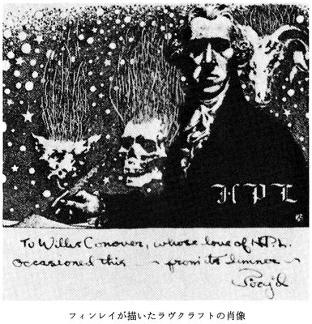
わたしが小説を書く理由は、ある種の眺め（情景、建築物、雰囲気等）によってもたらされる、驚異、美、冒険心、そして芸術や文学で出会う考え、出来事、イメージといった、曖昧模糊としてとらえどころのない断片的な印象を、さらに明確、詳細、安定感のあるものへと視覚化して、満足感をおぼえることにあります。わたしが怪奇小説を選んだのは、それがわたしの性向に最もかなうからです──わたしにあって最も強くまた最も根深い願望の一つは、わたしたちを永遠に閉じこめて、視野や分析の範囲を超えた無限の宇宙空間に対するわたしたちの好奇心をうち砕く、時間、空間、自然法則のやりきれない限界について、そのなにか奇妙な中断というか侵害を、一時的に幻影化することなのですから。こうした小説がしばしば恐怖の要素を強調するのは、恐怖がわたしたちの最も根深く、そして最も強烈な感情で、自然に挑む幻影の創造に最も寄与するからにほかなりません。恐怖と未知のもの、あるいは奇怪なものは、常に密接な関係をもっていますから、恐怖の感情を強調することなく、破壊された自然法則や、宇宙的な疎外感や、「異界性」を説得力豊かに描くことは、きわめて困難でしょう。わたしの小説の多くで時間が大きな役割を演じるのは、宇宙においてはなはだ劇的で、忌わしくも恐ろしいものとして、この要素がわたしの心に大きくのしかかっているからです。わたしにとっては、時間との戦いが、人間の表現手段における最も潜在力ある実り豊かな主題であるように思えます。
〈挿絵:ラヴクラフトの蔵書 M.R.James "A Thin Ghost and Others" 〉
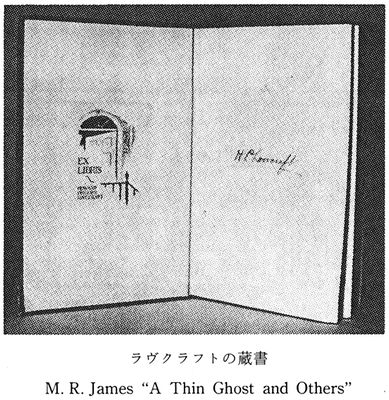
わたしの選んだ小説の形式が特殊なもので、おそらく狭隘なものであるのは明らかですが、それでもなお、これは文学そのものとおなじように古い、持続性ある不変の表現形式なのです。未知の外宇宙について燃えるような好奇心をもっていたり、既知の現実という牢獄のような場から、夢がわたしたちに開示したり、あるいは深い森、都会の異様な塔、赤い夕日といったものがつかのまほのめかしたりする、そんな信じられない冒険と無限の可能性に満ちた魅惑の世界に遁れだしたいという、熱烈な願いをもっていたりする人は、わずかとはいえかならず存在するのですから。こうした人びとのなかには、わたしのようなとるにたらない素人と同様、偉大な作家もいます──ダンセイニ、ポオ、アーサー・マッケン、Ｍ・Ｒ・ジェイムズ、アルジャーノン・ブラックウッド、ウォルター・デ・ラ・メアが、この分野での典型的な巨匠です。
わたしがどんなふうに小説を執筆するかについては、いいようがありません。作品にはそれぞれ異なった来歴があるのですから。一、二度は文字通り夢をそのままに記したこともありますが、たいていは表現したいと思う気分、考え、イメージをもってはじめ、それを頭のなかで思いめぐらして、具体的な言葉で記録できる一連の劇的な出来事を、はっきりあらわす方法が考えられるようにまでするのです。わたしはそうした気分、考え、イメージに一番ふさわしい、基本的な状態や状況を頭のなかで列挙してから、その基本的な状態や状況に特有の表現で、所定の気分、考え、イメージに関して、論理的で自然な動機をあたえられる解釈を考察しはじめる傾向があります。
執筆の実際の過程は、もちろん主題の選択や当初の構想によって異なりますが、わたしの小説すべての来歴が分析されるなら、平均的な手順から、次の一連の規則が導きだせるでしょう。
一、純然たる発生の順序で出来事の概要あるいは大筋をまとめる──叙述の順ではない。決定的な部分をすべて論じ、目論んだ出来事すべてに動機をあたえるため、十分な描写をする。この一時的な骨組においては、因果関係の尊重、細目、評釈がときとして望まれる。
二、出来事の二番目の概要あるいは大筋をまとめる──これは叙述の順序に従い（実際の出来事の順序ではない）、十二分に細部にわたり、かわりゆく見通し、力点、クライマックスに関して覚書をつけておく。そうした変化が小説の劇的な力や全般的な効果を高めるなら、それにあうように最初の概要をかえる。自在に出来事を挿入したり削除したりする──最終的な結果が当初目論んだものとまったく異なった小説になろうとも、当初の構想に束縛されることはない。製作過程で思いつけば、常に加筆訂正をおこなう。
三、二番目、つまり叙述の順序による概要に従って──流れるように早くなめらかに、あまり批判の目を向けずに──小説を執筆する。以前の構想に束縛されることなく、この小説を展開させる過程で変化が必要と思えるなら、常に出来事やプロットを変化させる。展開が劇的な効果や生なましい叙述の新たな機会を突然にあらわすなら、都合がよいと思えるものは何でもつけ加える──まえにもどって、最初の部分を新しい構想に調和させる。必要な場合、あるいは望ましい場合は、全体に加筆訂正をほどこし、最善の配列が見つかるまで、発端から帰結にいたるまでさまざまに書きかえる。しかし小説をとおしてのすべての言及が最終的な構想と完全に調和していなければならない。すべての言及を調和させるうえでの用心として、余計なもの──言葉、文章、段落、挿話といったもの──はすべてとりのぞく。
〈挿絵:Ｈ・Ｐ・ラヴクラフト〉
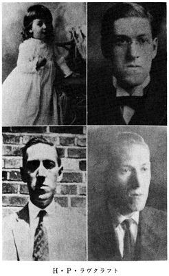
四、語彙、統語法、文章のリズム、段落わけ、語調、転換の優美さと説得力（場面から場面への転換、ゆっくりした詳細な行為から速やかでざっとした行為への転換、その逆等々......）、発端、帰結、クライマックス等の効果、劇的な緊張と興味、もっともらしさと雰囲気、その他さまざまな要素に注意をはらい、小説全体を書き直す。
五、原稿をタイプする──しっくりおさまると思えば、この段階でもためらわずに加筆訂正する。
〈挿絵:ラヴクラフトの生家 写っているのは、叔母、祖母、両親〉
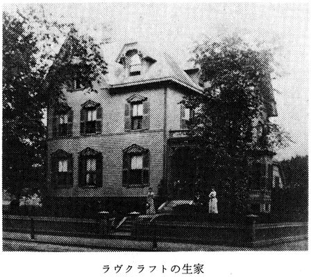
この段階のうち最初のものは、たいてい頭のなかでおこないます──一連の状態や出来事を頭のなかでまとめ、叙述の順序による出来事の詳しい概要がまとまるまで、書き記すことはしません。そのあともときには、考えをどう展開すればいいかわからないときでさえ、実際に執筆することもあります──こういうはじめ方をすると、動機をあたえたり、活かしたりする問題が生じますが。
怪奇小説には四つのタイプがあるように思います。一つは気分や雰囲気をあらわすもの、次に視覚的な概念をあらわすもの、三番目は全般的な状況、状態、伝説、知的な概念をあらわすもの、そして四番目は明確な思いがけない情景か特定の劇的な状況がクライマックスをあらわすものです。いいかえれば、怪奇小説はおおざっぱに二つの範疇におさまるのかもしれません──驚異や恐怖が何か状態や現象にかかわっているものと、異様な状態や現象に関連した人物の行為にかかわっているものとにです。
〈挿絵:ラヴクラフトの書簡〉
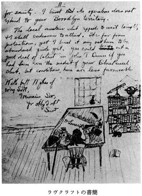
それぞれの怪奇小説──さらに具体的にいって恐怖をあつかう小説──は、はっきり五つにわかれる要素、（ａ）何か恐怖か異様さをはらむ状態、実体等、（ｂ）恐怖の一般的な効果や意味、（ｃ）顕現の様態──恐怖や観察される現象をあらわすもの、（ｄ）恐怖に関連するその反応の様態、（ｅ）所定の状況下での恐怖の特定の効果、にかかわっています。
怪奇小説を執筆するうえで、わたしが常にこのうえもない注意をはらうのは、ふさわしい気分と雰囲気を生みだし、必要なところでかならず強調しようとすることです。生硬でまがいもののパルプ小説は別として、客観的な行為や型にはまった感情を紋切り型に記したのでは、ありえざる現象、不可解な現象、考えられない現象を描写することはできません。想いもよらない出来事や状態には、克服しなければならない特殊な困難さがあり、これが達成できるのは、あたえられた一つの驚異にかかわるものを例外として、小説のあらゆる局面において注意深い現実主義を維持することによるしかないのです。この驚異は──注意深く感情を強化して──意図的にきわめて強い印象をあたえるようにあつかわなければなりません。そうしなかったら、浅薄で説得力のないものになってしまうでしょう。その驚異が小説で主要なものになっていますから、その驚異の存在そのものが、登場人物や出来事の影を薄くさせるはずのものなのです。しかし登場人物も出来事も、それらが驚異に関係する場合は別として、首尾一貫した自然なものでなければなりません。中心的な驚異に関して、登場人物は現実の人生で人がそういう驚異に示すのとおなじ、圧倒的な感情を示すべきです。驚異が当然のものとうけとられることはないのですから。登場人物が驚異に慣れているように設定するときでも、わたしは読者がおぼえるものに相当する、畏怖の念に満ちた印象的な雰囲気をつくりだそうとします。散漫な文体は、真剣な幻想をあつかう小説をだめにするだけです。
〈挿絵:Ｈ・Ｐ・ラヴクラフト〉
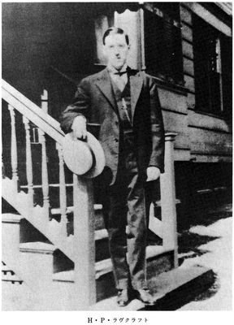
行為ではなく雰囲気が、怪奇小説に最も必要なものなのです。事実、驚異をあつかう小説がなしとげるものは、人間の情緒の特定の型を生なましく描きあげることにほかなりません。それ以外のことをなそうとした瞬間、安っぽくて幼稚な、説得力のないものになってしまうでしょう。最大の力点は微妙な暗示に置かれるべきです──さまざまな情緒をあらわし、非現実の異様な現実性の曖昧模糊とした幻影をつくりだす、細部の連想を生じさせる漠然とした暗示やほのめかしにです。持続する彩や象徴は別として、実質や意味のありえない信じられない出来事を、大胆に分類することは避けなければなりません。
以上がはじめて幻想的な小説を真剣に執筆しようとしたときから、わたしが──意識的あるいは無意識に──従っている規則というか標準的な手順です。この結果が成功しているかどうかは大いに議論の対象になるでしょう──しかしわたしがすくなくとも思うのは、以上述べたことを無視していれば、わたしの作品がいまよりひどいものになっていただろうということです。
ラヴクラフト全集〈４〉
Ｈ・Ｐ・ラヴクラフト／大瀧啓裕訳
作品解題
ラヴクラフト全集第四巻にあたる本書は、ラヴクラフトの科学志向に目を向けるべく、科学に比重の置かれた作品を中心に構成した。ただし紙幅の関係で、『魔女の家の夢』は次巻におくり、それにかえて『ピックマンのモデル』を収録したことをおことわりしておく。ごく幼いころからの科学志向がどのような作品となって結実したか、ラヴクラフトの現実主義がいかに徹底したものであるか、本書から読みとっていただきたい。今日の目で見れば、いささか事実にそぐわない箇所もままあるが、これらの作品が執筆された時代を考えるなら、ラヴクラフトが当時入手できる最新のデータを利用していたことがおわかりいただけるだろう。なお本全集の第三巻が刊行された後、アーカム・ハウスから校訂版の第一巻 〝The Dunwich Horroe and Others〟 が出版されているが、ラヴクラフトのテキスト問題はやはり綴りと句読に収敷しており、翻訳のうえではほとんど問題にならないものだし、テキスト批判は本全集において可能なかぎりおこなっているので、翻訳のテキストとしては従来通りのものをつかうことにした。ありていにいえば、アーカム・ハウスの校訂版は旧版との差異について、それぞれの根拠をあげる労をはぶいているし、この校訂を担当した人物が独自に出している 〝H.P.Lovecraft : Uncollected Prose and Poetry〟 には信じられない脱落があったりするので、現時点では、この校訂版の改訂版でも出ないかぎり、全面的に信頼する気にはなれないというのが、正直な感想である。
『宇宙からの色』 The Colour out of Space
一九二七年三月に執筆され、〈アメージング・ストーリイズ〉一九二七年九月号に発表された。
クラーク・アシュトン・スミス宛の一九二七年三月二十四日付の書簡で、「新しい小説を書きあげたばかりだ」と記されたこの作品は、ラヴクラフトにいわせれば「擬似現実主義のはじまりを告げる」（一九三三年三月二十五・二十八・二十九日付Ｒ・Ｅ・ハワード宛書簡）ものであるが、このこともあってか、ラヴクラフトは〈ウィアード・テイルズ〉の編集長ライトに気にいられるかどうかをあやぶみ、前年の四月に創刊された〈アメージング・ストーリイズ〉の編集長ガーンズバックに原稿を送付した。当時の〈アメージング・ストーリイズ〉はウェルズやポオの再録が中心で、ラヴクラフトも原稿料をあまり期待してはいなかったが、五月にわずか二十五ドルという信じられない小切手をうけとったときには、憤懣やるかたないものがあったらしい。『宇宙からの色』は一万二千語の作品であり、二十五ドルとなると一語五分の一セントということになるが、一語二分の一セントでも最悪といわれた時代なのである。ラヴクラフトは後にガーンズバックを「しみったれヒューゴー」とか「本物のシャイロック」と呼ぶことになるが、これが一因になってＳＦ雑誌に背を向けることになったのは、ラヴクラフトにとってもＳＦ界にとっても残念なこととしかいいようがない。
〈挿絵:ラヴクラフトが描いた焼け野〉

ラヴクラフトが激しい感情をあらわにしたのも当然のことだった。『宇宙からの色』は神秘的なアーカムの郊外を舞台に、突如として勃発した異常な現象をあつかい、科学データを駆使しながら、ラヴクラフトのいう「現実主義」を徹底させ、つのりゆく恐怖を目に見えるように鮮やかに描ききって、完璧な描写と結構を備えた、紛れもない傑作だからである。農夫アミ・ピアースの記憶に基づく話を、語り手の技術者の科学精神でバランスを保たせ、冷静にして客観的な叙述にまとめあげた手腕には、ラヴクラフトの真骨頂が発揮されているといえるだろう。ラヴクラフト自身、本篇にあらわれる「異常な色をした実体」を、これまでつくりだしたばけもののなかで、「わたしが誇りをもっているただ一つのもの」（一九二九年三月八日付エリザベス・トルドリッジ宛書簡）といっているほか、「事実、『宇宙からの色』以外に全体としてわたしを満足させる作品はありません」（一九三六年十一月十日付ウィルフレッド・ブランチ・トルマン宛書簡）といっているほどである。
〈挿絵:『宇宙からの色』挿絵４点〉
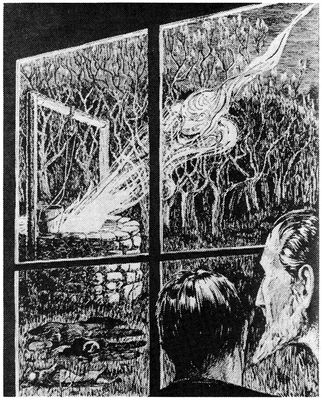
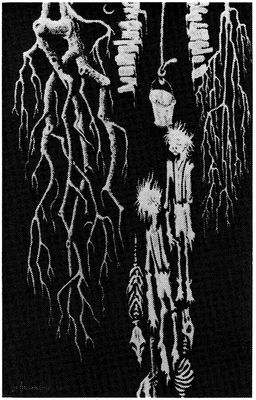
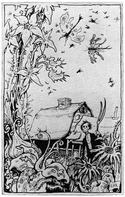
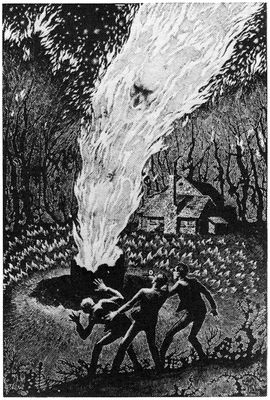
なお発表後まもなく、『年刊傑作集』の編者エドワード・Ｊ・オブライエンから、経歴を問いあわせる手紙が〈アメージング・ストーリイズ〉の編集部に送られたことで、ラヴクラフトは『宇宙からの色』が収録されることになると思ってよろこんだが、結局期待どおり収録されることにはならず、経歴が紹介されただけに終わった。
『眠りの壁の彼方』 Beyond the Wall of Sleep
一九一九年に執筆され、同人誌〈パイン・コーンズ〉一九一九年十月号に発表、おなじく同人誌の〈ファンタシー・ファン〉一九三四年十月号に掲載された後、〈ウィアード・テイルズ〉一九三八年三月号に再録された。
精神的に堕落した者に異界の実体が取り憑き、思考伝達をはたす科学機器でその実体と対話をおこない、宇宙的な啓示を得るという本篇は、かならずしも完成された作品とはいいがたいが、ラヴクラフトが本篇において、恐怖の源泉としてはじめて地球外のものをもちだしたことを指摘しておかなければならない。遠隔の地の頽廃した住民、宇宙からの恐怖というテーマは、本篇を契機として敷衍され、その後はるかに雄大な規模でさまざまに変奏されることになる。
〈挿絵:『眠りの壁の彼方』書影〉
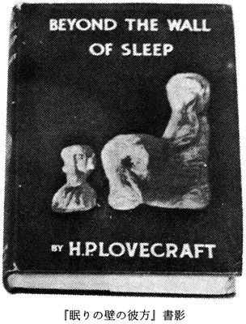
『故アーサー・ジャーミンとその家系に関する事実』Facts Concerning the Late Arthur Jermyn and His Family
一九二〇年に執筆され、同人誌〈ウルヴァーリーン〉第九号および第十号（一九二一年三月号および六月号）に発表された後、〈ウィアード・テイルズ〉一九二四年四月号に『白い類人猿』The White Ape として掲載され、さらに〈ウィアード・テイルズ〉一九三五年五月号に『アーサー・ジャーミン』Arthur Jermyn として再録された。
〈挿絵:〈ウィアード・テイルズ〉1935年5月号〉
本篇は『ダゴン』（本文庫『ラヴクラフト全集３』収録）、『ランドル・カーターの陳述』、『ウルタールの猫』、『猟犬』とともに、一九二三年五月にラヴクラフトが〈ウィアード・テイルズ〉の編集部にはじめて送付した五篇の原稿のうちの一篇である。当時人気のあった「失われた種族」のテーマに家系の謎をからませ、遺伝の恐怖をたたえたこの小品は、初期の作品のなかでもラヴクラフトの気にいりのものだったらしく、〈ウィアード・テイルズ〉の編集長ベアードが標題を『白い類人猿』にかえたときには、ひどく激昂したという。一九二四年二月三日付ベアード宛書簡はこの事情を伝え、ラヴクラフトはこのあからさまな標題が「冒頭の一節をそこない」、「叙述の精神と調和をはなはだ乱すもの」であって、「もしもわたしが『白い類人猿』というような標題を小説につけるなら、その小説には類人猿など登場しないだろう」とまでいいきっている。最初は類人猿だとうけとられながらも、実は類人猿ではないような、そういう微妙な書き方をするはずだということである。ラヴクラフトにあっては、標題そのものも内容と密接に結びついた、もはや妥協の余地のないものだったのだ。もっともラヴクラフトは本篇の原題にいささかぎこちなさを感じていて、『アーサー・ジャーミン』とするならかまわないとしており、後に〈ウィアード・テイルズ〉に再録されるとき、編集長ライトはこの意向をくんだ。
『冷気』 Cool Air
一九二六年三月に執筆され、〈テイルズ・オヴ・マジック・アンド・ミステリイズ〉一九二八年三月号に発表、〈ウィアード・テイルズ〉一九三九年九月号に再録された。
〈挿絵:『冷気』挿絵〉
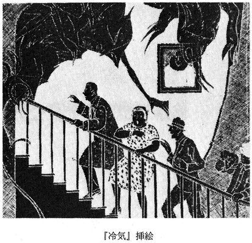
ニューヨークを舞台に、スペイン人医師の奇行から、恐るべき事実が明らかになる本篇は、あわれなほど真摯なマッド・サイエンティストをあつかった佳品になっている。ポオの『ヴァルドマアル氏の病症の真相』（本文庫『ポオ小説全集４』収録）から着想を得ていることは、あまりにも明瞭だが、本篇はラヴクラフトがポオの影響をうけて執筆した最後の作品であって、ポオの呪縛から脱するまえになさねばならなかった通過儀礼のようなものだったのだろう。本篇の真価をおとしめているわけではない。ドリアン・グレイとも通底するこの顛末は、ポオを本歌どりすることによって、見事に現代の恐怖を描ききっているからだ。ムニョス博士の最期は、ラヴクラフトの『戸口にあらわれたもの』（本文庫『ラヴクラフト全集３』収録）の言葉をかりるなら、「ほとんど腐汁に近い恐ろしいもの」だったにちがいない。
〈挿絵:〈ウィアード・テイルズ〉1938年2月号〉
『彼方より』 From Beyond
一九二〇年十一月十八日に完成され、同人誌〈ファンタシー・ファン〉一九三四年六月号に発表された後、〈ウィアード・テイルズ〉一九三八年二月号に掲載された。
『冷気』とともにマッド・サイエンティストをテーマにしたこの小品は、科学機器による異界からの実体の招喚でもって、『冷気』よりもなお狂気の度合を高めているが、ラヴクラフトの作品にしてはいささかものたらなさを感じざるをえない。執筆してから発表が遅れたのも、さまざまな雑誌が掲載をしぶったためだった。本篇の功績はロングの『ティンダロスの猟犬』に大きな影響をあたえたことにあるといえるだろう。
『ピックマンのモデル』 Pickman's Model
一九二六年に執筆され、〈ウィアード・テイルズ〉一九二七年十月号に発表された後、同誌の一九三六年十一月号に再録された。
〈挿絵:コップス・ヒルの墓地〉
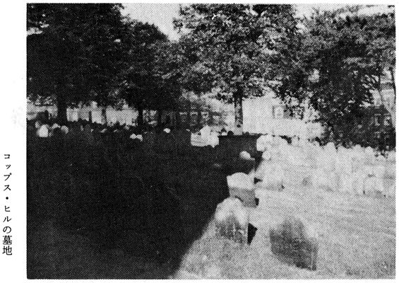
〈挿絵:ラヴクラフトの描いたピックマンのモデル〉
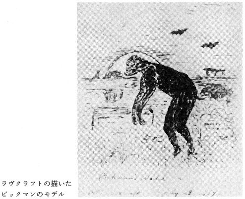
〈挿絵:ボクによる『ピックマンのモデル』挿絵〉
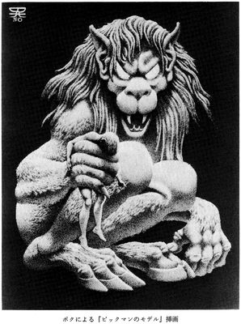
ラヴクラフトはボストンを訪れたおり、おそらく植民地時代の密輸業者が使用したらしい、さまざまな家の地下室を結ぶトンネルがあることを聞き、これに着想を得て本篇を書きあげたらしい。暗澹たる領域に通じる地下室と恐怖を描く画家にまつわるこの『ピックマンのモデル』は、ラヴクラフトが実際に目にしたボストンの街並をそのままに生かしているが、都市開発の波をうけて、地下のトンネルは埋められ、入り組んだ小路もとりはらわれて新しいビルが建ちならび、執筆後まもなく、その面影をなくしてしまったという。本篇はラヴクラフトには珍しく、会話体に近い文章で記されているが、語り手のヒステリックな情緒をあらわすにあたって、十分すぎるほどの効果をあげている。ラヴクラフト自身はかなりひかえめな評価をくだしているとはいえ、自家薬籠中の構成のうちに、自らの幻想絵画論を開陳しながら、緊迫した雰囲気を徐々に高め、恐怖のクライマックスをたたきつける手並のさえは、たくまずして本篇を名作にしているといっていいだろう。
『狂気の山脈にて』 At the Mountains of Madness
一九三一年二月から三月二十二日にかけて執筆され、〈アスタウンディング・ストーリイズ〉一九三六年二月号から四月号にかけて分載された。
ラヴクラフトはこの作品に手をつけるまえに、次のような覚書を作成している。
〈挿絵:〈アスタウンディング・ストーリイズ〉掲載時の扉〉
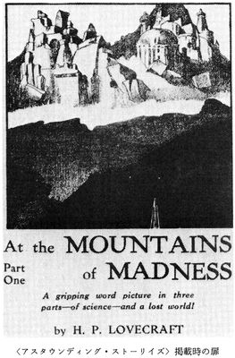
通路、遺物（午後九時）、緑がかった石鹸石あるいは凍石（水によって形成されたさまざまな地層の石）（孔が群がっている跡がある）、ネクにある徴のような五つの先端をもつ跡（性質は明らかにしない）を発見。犬が不安そうにする。もの（動物か植物）を見つけ（午後十時）、犬が狂乱状態におちいる──調査のためとりのぞかれる。（クルウルウといった神話地球の生命を冗談として創造したネクに記される宇宙的存在の神話──との比較）（石筍よりも古い）。午後十一時に十三体を見つける（数多くの遺物も）。犬を遠くへやったあと、地表へひきあげる。人間が橇をひいてキャンプに移す（このために三台の橇すべてがつかわれる）（十四体）......奇妙な陽光の効果の描写──解凍の動き。餌をやるため犬をキャンプ近くに移す。不機嫌。一月二十四日午前十二時半。（この間に雪の囲いがつくられる）。（風が次第に強く吹く）完全な標本の解剖を試みる──組織は強靭──標本を傷つけることなく切開することの問題......（午前一時三十分）損傷ある標本の切開から奇怪な革のようにかたい組織（乾燥している）（午前二時）が驚くべき保存状態にあることがわかる。組織は妙に劣化をこうむらないたぐいのもの──内部の袋は湿った物質を明らかにする──奇妙な悪臭──その近くでは犬が狂乱状態になる......液汁──血ではない。休むことになる。レイクは交信をやめる。アーカム号は中継を終える。一月二十四日午前二時半。語り手は（隊長として）メッセージを送る。ピーバディとの感謝に満ちた話──ピーバディの装置のおかげで見つけだせたのだ。全員午前三時に休む。風がきわめて強い......語り手は移動を要請──風が強すぎるといわれる。休んだり眠ったりすることを考える者は誰もいない。興奮のあまり、みんなおきている......
一月二十四日午前十一時──（南ベース・キャンプに激しい風が吹く）語り手とピーバディは無線機の音で目をさまされる。レイクにちがいないと思って興奮するが、アーカム号からの連絡。レイクと交信しようとするもはたせない（約束の十時がすぎてもレイクからの連絡はない）努力がつづけられる。（恐怖は午前八時に発生）マクマード入江では風はないが、南ベース・キャンプでは激しく吹き荒れている。レイクのキャンプ地での強風によって無線の交信ができないのではないかと、誰もが思う。飛行機の無線機も損傷をうけたのだろうかと。しかし四つともだめになるというようなことがあるだろうか。（新たな風が正午におこり、午後二時までつづく）心痛がつのる。頻繁にレイクと連絡をとろうとする。ベース・キャンプでの風はおさまる。午後六時ごろには、調査することに決定される。氷壁の貯蔵所にある五機目の飛行機が南ベース・キャンプに飛ぶよう命じられる。一月二十四日から二十五日にかけての夜に、パイロットとふたりの船員とともに、飛行機が到着。議論をして短い休養。
〈挿絵:〈アスタウンディング・ストーリイズ〉挿絵〉
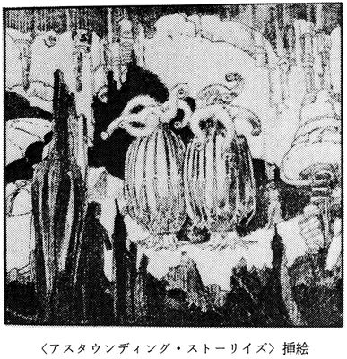
一月二十五日午前五時。無線でレイクに呼びかけても返事はない。飛行機に燃料、食糧、橇、七頭の犬、無線機をつみこみ、十名の者が乗りこみ、レイクのキャンプに向けて出発する。（午前七時十五分）風──雪、四時間半（雪の魂がころがっていく）山脈──洞窟を見る。石塊のありさまに気づく──（悲劇的な恐怖）天頂に恐ろしくも奇怪な都市の蜃気楼。（一月二十五日午前十一時二十五分）ダークブルーの台地を見る。山麓の低い丘にキャンプ──飛行機──右手にデリック起重機──キャンプに降下。犬の囲いが崩れている......何もかもが風に吹き飛ばされている──山麓の高い丘から五、六マイル。犬が動揺する。着陸──混乱と恐怖、切り裂かれた死体、犬も人間もすべて無残なありさま──塩、砂糖、ベーコン、本、ストーヴ、マッチ、燃料をはじめ、さまざまなものがなくなっている。三台の橇もなく、テントもなく、毛皮が乱され、妙に切り裂かれている。地図、本、ノート、資料がなくなっている。単純なキャンプ用具もなく、航空写真もない。のこっているテント（二つ）の風下側の血にまみれた雪の上に奇妙な足跡らしきものがあるが、雪が風に吹き飛ばされてよくわからない。キャンプのありさま。手がかりは何もない。九フィートの長さにわたる六つの大きな墓。その一つが掘りおこされる。不完全な標本が一体。何ということか。雪に一群の穴が開いている──声らしきもの。犬が狂乱状態におちいる──攻撃する。機器、飛行機、デリック起重機が妙に乱されている──風のせいとは思えない。まったくの謎と恐怖。（誰かが狂ったのではないかとの推測）（風が橇を吹き飛ばしたのか）（正午から午後四時）四時に休む──真夜中。慎重に言葉を選んだ外部への連絡。語り手とシャーマンは飛行機を軽量化して山脈越えの飛行を試みる。風のため七時の出発が遅れる──正午。一月二十六日。困難な上昇。石塊、塁壁、洞窟に気づく。褶曲地層。石塊等が妙にふつりあい。山脈を越える。高度二万フィートの台地に恐るべき死の都市（本当に都市なのか──それとも規則正しいとはいえ自然にできあがったものにすぎないのか）台地の上を旋回。クレヴァスに橇を見る山麓の丘のあいだ。（もどろうとしているのか──近づいて見る......権は落下したのだった──三万フィートを越える山の高いむきだしの斜面に雪さえないところに......午後五時......洞窟の入口近くの塁壁のただなか。午後六時にキャンプにもどり、山脈登攀の計画をたてる。探査──懐中電燈と武器をもち犬とともに全員を繰りだして──午後十時に休む）。（）内を一部削除。
〈挿絵:〈アスタウンディング・ストーリイズ〉挿絵〉
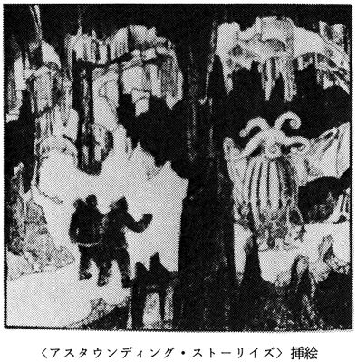
高さ四フィート六インチ、翼の長さ四フィート、体重六〇ポンドのペンギン──標本の年代がつきとめられる──レイクはきまぐれに、星ぼしからやってきて、冗談かあやまちで地球の生命をつくったという〈旧支配者〉の原初の神話を思いだしたのだった。
最新版。一月二十六日の朝。語り手とダンフォースが軽量化した飛行機で山脈越えを試みる。七時の出発が遅れる──風のため正午まで。困難な上昇。景観に目を見はる。石塊、塁壁、蜂の巣状の洞窟に気づく。石塊の奇妙なありさま。登攀が可能だと判断。火山活動らしきものを目にする。火口らしきもの。山峰のあいだを通過──氷河に覆われた恐るべき死の都市を目にする──高度二万フィートの台地の上。蜃気楼に似ているが、完全なものではない。ごくわずかな塔が氷の上に突出し、上部が下に通じる大きな口を開けている。雪の反射でグロテスクにゆがんでいる。氷の下を見る。下にも構造物がある。水をふせぐためであるかのように、すべての窓が閉ざされている。山麓に着陸、徒歩で調査をはじめる。一つの開口部では、人間の手足にはうまくつかえない、梯子らしき一連の突出部がある。いったいここは何ものの領域なのか。通常の氷河ではない。山脈の氷河が崩れて突然ほとばしった水が谷にそそぎこんだのか、あるいは都市が放棄された後に湖ができあがったのか。巨大な裂目がいくつかある。下におりる──なめらかな石の壁に水のあった跡。通路は凍結している。奇妙な比率。都市全体が迷路のよう。空気は──裂目は別として──かすかに暖かく──下から昇ってくるよう。部屋は都市が意図的に無人化したことを示している。方向をあやまらないよう、兎と猟犬のやりかたで手帳の紙を破いて道にのこす。できるだけ下におり、橋をわたり、階段に相当するものらしい急勾配の傾斜路を進む。五芒星形の部屋が数多くある。迫持の原理が用いられている。あちこちがかたむいている。何の目的があるのかわからない窪み河が山脈にあたるところに彫刻された塔門。小さな動かせるものは別として、すべてが途方もないスケール。巨大な大きさの石塊──凍結による割れ──しかし巨大な石塊はもちこたえている。さまざまな岩があるが、初期白亜紀以降のものはない。一番新しい岩にしたところで、鮮新世より古いものであることを、硬い岩に刻まれた彫刻がほのめかしている。奇妙な彫刻──伝統的な浅浮彫があのものをふくめさまざまな古代の動物をほのめかす。結論──動物や石鹸石の遺物の傷はこの都市の住民によるもの。人間ではない（哺乳類であるかもしれないが）。魚類と海洋放射相称動物が建築物とともに存在するのは謎。彫刻が高度な文明があったことを示す。幾何学的な意匠。山脈からの笛を吹くような音──地図に似た図──ヴェーゲナーの大陸移動説。都市は陸上にも海底にもある。煙のようなもの。もう下におりる脇道はない──部屋はさらに広びろとしたものになって装飾も多い。一階か。紙がとぼしくなる。笛のような音。地下にくだる道を見つける。暖かくなっていく。あとでくだることにする（遠くからかすかな音──生物か）地表の階をもっと調べる。上部が崩れているところから陽光がさしこむ──目眩く高さ。床の中央に恐ろしい光景。こわれた橇。速やかに退いていく音等々──傾斜路──洞窟──ふさがった場所を見つける──臭──埋められた解剖標本の臭を思いだす。朝にキャンプを離れる準備。笛を吹くような音の夢。南ベース・キャンプにもどり、そして外の世界にもどる。
〈挿絵:〈アスタウンディング・ストーリイズ〉挿絵〉
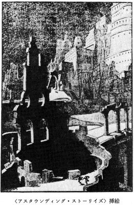
一月二十七日──午前七時。テントが見えた山に向かう準備。午前八時出発。風──雪──寒さ──ゆっくり進む──丘を登る──十時三十分にきりたった斜面に着く。慎重な登攀。雪の斜面──クレヴァス──風はおさまっている。塁壁と石塊──人工的な見かけ。洞窟の入口──倒れたテント──脇柱や嵋石にさまざまな彫刻──古の徴──犬は入ろうとしない。犬は外にのこし、懐中電灯をもって入る......彫刻──浅浮彫──洞窟の図案──驚異──通路はつづく──彫刻──一群の穴（アーカムの遺物に言及──由々しい徴──嵋石）上にも下にも──さまざまな大きさの規則正しい竪穴──入口の円形の部屋が直径五フィート深さ三フィートの浅い穴を中心に点在する──地下へくだる──この惑星は生命が冗談かあやまちでつくりだされている。結論の追加──日常生活──寒さ──洞窟への撤退──寒さが忍びいるにつれますます深く入っていく──後期の彫刻は粗雑なものになっている──ますます──また神殿のような部屋──最も聖なるもの──椅子にあのものがいる......図──数学図形──ヴェーゲナー説が証明される──ジンバブエ──途方もない知識......海底のものの奴隷が建築物を建てるのを手伝った（陸上のものは石塊を積むのに翼をつかった）。狩りをするものたちの図──白亜紀や第三紀の動物と海底都市のあのものたち（眼のないものたちが、可塑性のある黒いものから構成される残忍な知性をもつ巨大な輝く原形質の塊を、かろうじてくいとめる──この塊は虹色に輝く泡で空気にも水にも地底にも適応できる一時的な器官を形成することができる。笛のような音をまねる。球体としては直径十五フィートだが、ツァトゥグアのような粘着性がある。最終的にあのものたちを征服して、その言語を学びとる......臭──未知の臭とガソリンの臭──死体を見つける（図や彫刻をスケッチする）地図を見つける──一群の孔──北のトンネルに進む。外に通じる螺旋状の傾斜路を見つける。きわめて太古のもの（トンネルに通じるもの）橇──眼のない白色変種のペンギン。暖かい空気の流れ。登っていく（恐るべき奇怪な彫刻）。蒸気。（二分の一マイル進む）妙な具合に積まれた毛皮とテント。大きな洞窟（四分の三マイル進む）悍ましい光景──旧支配者が殺されている──頭部がない──黒い粘液──......地下鉄の列車のような笛を吹くような音（一群の孔）螺旋状の傾斜路を走って逃げ、飛行機まで行く──離陸──上昇──ダンフォースが空に何かを見て悲鳴をあげる──山脈の上──笛のような音をたてる蒸気......終。
十二名のパーティ レイク＋、アトウッド＊、＃ゲドニー＋、オレンドーフ、キャロル＋、ワトキンス＃、＃モウルタン＋＆、ブレナー＃＆、＃ファウラー＋、アイエロ、＃ミルズ＋、バウドロー＃
＊教授、＋学生、＃パイロット、＆無線通信士
七名のパーティ ダイアー教授＊、ピーパディ＊、アレン、ダンフォース、＃＆ウィリアムスン、マクタイ、＆＃ロペス＋
救援機 シャーマン＃＆、グンナルサン、ラールセン
学生 （レイクのパーティ）ゲドニー、キャロル、モウルタン、ファウラー、ミルズ（ダイアーのパーティ）ダンフォース、ロペス
資格のあるパイロット ゲドニー、キャロル、モウルタン、ファウラー、ミルズ、ブレナー、ワトキンス、バウドロー、シャーマン、ダンフォース、マクタイ、ロペス
十歳のころから南極に心惹かれ、「事実を基にした論文のほか、南極大陸を舞台にした物語を書いていた」ラヴクラフトにあっては、本篇の執筆はむしろ必然のなりゆきだったのだろう。前半においてはノンフィクションさながらの冷静な筆致で描かれ、後半にいたって目眩く宇宙年代記があらわにされ、恐怖が猛威をふるうこのラヴクラフト最大の長篇は、推敲に推敲を重ね、自作に厳しい評価をするラヴクラフトにしても満足のいく出来映えになったが、〈ウィアード・テイルズ〉の編集長ライトに長すぎるとして掲載を拒絶されてしまった。自信作だっただけに、ラヴクラフトの落胆は大きく、一九三六年二月十二日付Ｅ・ホフマン・プライス宛書簡では「ライトをはじめとする者たちの敵意に満ちた拒否は、おそらくわたしの作家活動に終止符をうつもの」とまで記しているほどだが、幸いジュリアス・シュワーツの尽力により、〈アスタウンディング・ストーリイズ〉に掲載されることになり、ラヴクラフトも溜飲がさがった。
〈挿絵:ラヴクラフトの草稿〉
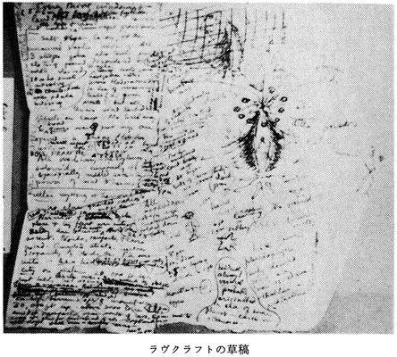
十歳のときから心に取り憑いて離れない、荒涼とした白い南極にかかわる漠然とした感情をつきとめるべく目論まれた本篇は、ポオの『アーサー・ゴードン・ピム』（本文庫『ポオ小説全集２』収録）を利用しながら、ラヴクラフトがそれまでにさまざまな作品でもちだした神話に、一つの通観をあたえるという野心的な企てでもあった。本篇と『時間からの影』（本文庫『ラヴクラフト全集３』収録）をあわせれば、ラヴクラフトの原神話とダーレスのまとめあげたクトゥルー神話との決定的な差が明らかになるだろう。もちろんクトゥルー神話はラヴクラフトの原神話を土台にダーレスが構想をふくらませたもので、視点が異なればちがいが生じるのは当然のことだが。
本篇の旧支配者と『時間からの影』の大いなる種族との共通項は多く、『無名都市』（本文庫『ラヴクラフト全集３』収録）と同様に壁画・彫刻から過去の歴史を読みとるやりかたからも、幼いころから天体に目を向けつづけたラヴクラフトが、視覚型の作家だったことがはっきりわかる。資料におさめた『怪奇小説の執筆について』はこの事実をさらに確証するものといえるだろう。ラヴクラフトが無性生殖にこだわるのも、この生来的な資質にかかわっているのである。
『怪奇小説の執筆について』 Notes on Writing Weird Fiction
一九三四年六月ごろに執筆され、同人誌〈アマチュア・コレスポンデント〉一九三七年五・六月号に発表され、アーカム・ハウス刊行の 〝Marginalia, 1944〟 に収録された。ラヴクラフトの執筆作法を知る貴重な資料といえるだろう。『狂気の山脈にて』の覚書が見事な実例になっている。